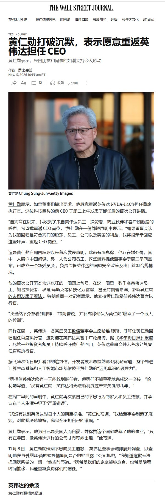
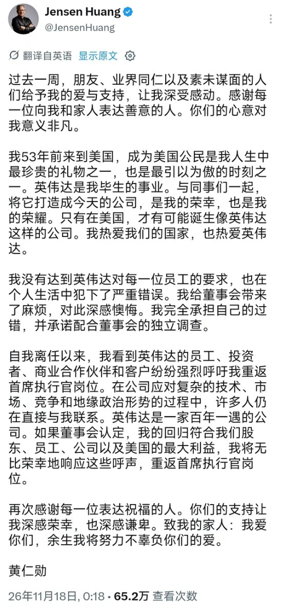
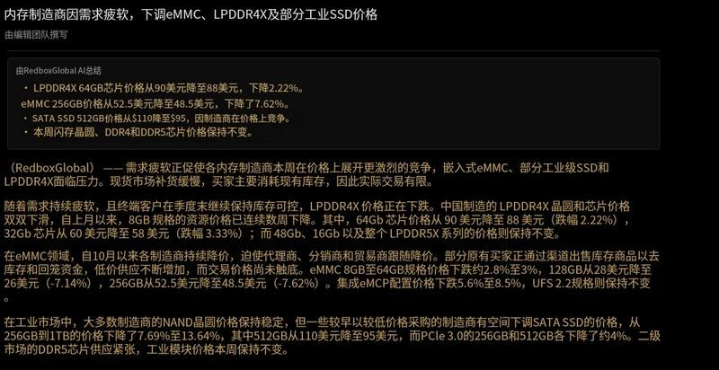
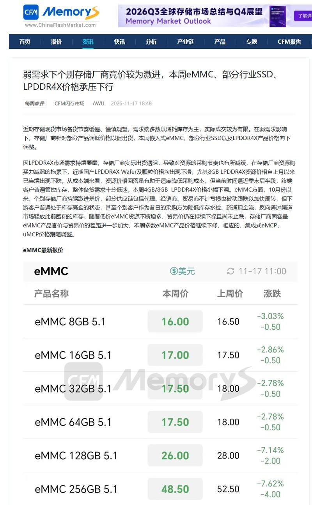

调研纪要 · 2026-11-18 新闻日报
星球 ID: 28855458518111 | 共 316 条帖子 | 精华 90 条
| 查看研究积累
强制同步到研究积累
全部 电子 计算机 其他 非银金融 机械设备 医药生物 电力设备 家用电器 宏观策略 汽车 国防军工 传媒 基础化工 轻工制造 交通运输 通信 公用事业 纺织服饰 商贸零售 食品饮料 社会服务 建筑装饰 房地产 煤炭 环保 有色金属 建筑材料 石油石化 农林牧渔 钢铁 银行
书签
20261118盘后消息汇总
20261118盘后消息汇总
宏观
1.美联储理事沃勒释放鹰派信号，若不释放1月加息的信号，应在12月加息50个基点
题材
1.电力：美国民主党筹备数据中心电力改革方案 运营商10年内或需多付350亿美元
科技
1.腾讯
①腾讯第三季度资本开支同比增长约527%至814亿元 预估554亿元
②腾讯高管谈最新收紧限制对AI影响：短期算力与训练承压，长期将加速国产供应链建设
2.算力租赁：高端算力存量稀缺,算力资产价值严重低估,国产卡成为算租增量
[加油]疫苗处方政策五点思考❗
[加油]疫苗处方政策五点思考❗
⭕️背景和目的是什么？
🔴省钱❗️打疫苗少得病，能为国为民省钱。国内当前儿童免疫规划强，但成人和老人疫苗覆盖很薄弱，目标是建立"全生命周期免疫服务体系"。
⭕️为什么是真利好？
🔴原来疾控只管预防（怕得病）和医院只管治疗（已生病）的二元割裂！以前只有疾控（全国7万个点，医师估算12-13万）劝人打针，现在全国100万家医院（医师约500万），全科、呼吸、老年、妇科都能开方！以前得自主有意识才去疾控打疫苗，现在有医院医生可以主动提醒打疫苗！
⭕️到底利好什么？
🔴【低渗透率】+【低认知度】的【自费】【成人/老人苗】：1）儿童在变少，老人在变多；2）免费苗价格低，且国家推动下认知度和渗透率还不错；3）认知度和渗透率低才有巨大提升空间！
⭕️什么品种可以？
🔴我认为：带状疱疹疫苗（俗称缠腰龙，发病率很高，国外很大，国内上市不久）＞流感（中/美接种率3% VS 45%，而且每年都得打）＞HPV（宫颈癌疫苗）等
⭕️对二级变化的是？
🔴业绩兑现肯定需要时间，自费成人/老年苗的市场空间预期变了，估值体系变了！
❗️都是无基底部标的，该怎么选❓
1️⃣百克生物:70亿,自产带疱+鼻喷流感，成人苗最受益龙头❗
2️⃣智飞生物:350亿,进口HPV+进口带疱，还有mRNA疫苗平台，产品多销售强，疫苗龙头！
3️⃣华兰疫苗:85亿,国内流感疫苗龙头
4️⃣金迪克:15亿,也是流感疫苗，小市值有点博弈哈
⭕ 内蒙拟调整容量电价政策，预计影响20-30GWh装机
⭕ 内蒙拟调整容量电价政策，预计影响20-30GWh装机
🚀 事件：
内蒙政策拟将原放电量补偿改为容量补偿，标准为165元/kW·年，蒙西、蒙东分别按4h、5h折算，#分别对应度电补偿约0.103元/kWh、0.083元/kWh ，相比此前水平明显下降（2025年0.35元/kWh，2026年0.28元/kWh）。
➡点评：影响程度或在20-30GWh，独立储能向其他各省渗透
#影响程度或在20-30GWh（装机口径）： 新政策将使经济性下降到一般北方省份水平，考虑内蒙如今2毛出头峰谷价差，8分-1毛容量电价后，资本金IRR约在6%。#预计明年内蒙新增装机规模下滑50%、影响程度在20-30GWh。
#存量电站或可继续执行原放电量补偿： 存量电站可转换为新容量电价政策，但不可转回来。我们认为存量电站#或可继续按原标准享受补偿至10年期满，之后则无法获得新容量电价政策。#对存量电站暂不构成影响。
#内蒙仍有发展空间： 蒙西、蒙东均已出台调频辅助服务市场相关规则，调频收益有望部分弥补补偿下降。加上算电协同、大基地配储等有望每年保持20-30GWh新增装机。
#系统运行费持续改善、招标向其他地区扩散：2026年1-11月，西北地区储能EPC招标占比降至50%以下，#27年储能需求有望东北、华北、南网等地区承接。近期系统运行费改革政策逐步推出、煤电价格上涨、 水电出力下降推升峰谷价差，多省储能项目经济性提升。
➡投资建议： 影响有限，明年国内装机看到270GWh左右
内蒙政策预计#影响幅度为20-30GWh，但明年在系统运行费改革、峰谷价差回升情况下国内仍有望增长，#装机看到270GWh左右。同时我们维持海外增速40+%（其中欧洲60+%）的预期。
建议关注：阳光电源、德业股份、宁德时代、鹏辉能源、亿纬锂能、海博思创等
----------------
跨境电商2.0（一）：小包免税退坡，物流履约成为核心竞争要
跨境电商2.0（一）：小包免税退坡，物流履约成为核心竞争要
✈️#跨境电商1.0阶段、基于“直邮+免税+低申报”的低门槛，跨境卖家以低价实现了早期份额快速扩张。随着欧美市场逐步取消跨境小包免税政策，清关审核与合规要求趋严，灰色渠道逐步被清退，低价模式下货物直邮利润被不断挤压。关税与合规成本上升的同时，中东局势带动油价上涨进一步提升了跨境物流成本。跨境电商市场份额逐步向具备稳定履约能力的中大型卖家聚拢。
🚢#跨境电商2.0以“海外仓+本土履约”模式为主、兼顾成本、合规与时效性要求。25-26年跨境物流收入规模中，海外仓占比已上升至50%左右。从跨境卖家角度来看，跨境小包免税取消后，海外仓一件代发需求上升。从跨境电商平台角度来看，全托管及自营模式下物流成本占比居高不下，电商平台逐步转向半托管将资源倾斜给具备本土履约能力的卖家和品牌型卖家，从“快速抢市场”转向“提高经营效率”。
🏚️我们认为跨境电商2.0模式物流履约能力已成为核心竞争要素。#跨境卖家方面，合规性强、具备稳定履约能力且能够实现稳定盈利的中大型卖家优势将进一步放大。#跨境物流方面，灰色货代被逐步出清，具备稳定清关和交付能力的头部物流服务商在新一轮物流模式迭代中获取更多市场份额。从跨境物流产业链来看，建议关注具备物流履约能力的中大件品牌卖家#致欧科技，拥有自建仓成本优势的#乐歌股份，海外末端配送稀缺标的#极兔速递。
【英伟达正在重新定义自己在AI生态中扮演的金融角色】
【英伟达正在重新定义自己在AI生态中扮演的金融角色】
英伟达临时CEO Kress在财报会上宣布将严格评估投资与担保，终结黄仁勋时代“广撒网”支持风格。
受高达3900亿美元供应链承诺掣肘，公司将收紧对高杠杆Neocloud赛道的财务兜底。
【1】这家芯片巨头的临时CEO Colette Kress在本周财报电话会上明确表示，公司将对未来的投资、承诺和财务担保进行"严格评估"。
【2】这意味着，黄仁勋时代那种对AI生态"大手笔、广撒网"的金融支持风格，或将正式画上句号。
【3】受冲击最大的是新兴的Neocloud赛道。CoreWeave的股价已较历史高点暴跌逾70%，美债亦跌至困境级别，行业整体因高杠杆运营模式而承压。
【4】Bloomberg Intelligence分析师Mandeep Singh表示，英伟达的资产负债表资源将更多向供应商倾斜，而非继续为Neocloud提供融资。
周观点前瞻汇报国产算力大涨，国产算力（20）：H200对华通道关闭叠加远程算力新规落地，国产替代确定性再强化【东北计算机】
周观点前瞻汇报国产算力大涨，国产算力（20）：H200对华通道关闭叠加远程算力新规落地，国产替代确定性再强化【东北计算机】
🔥#H200对华特殊通道正式关闭。“后黄仁勋时代”英伟达对华转向保守。1）11月17日英伟达召开黄仁勋离任后首次财报电话会，临时CEO克雷斯确认公司已不再向中国出货经许可的Hopper数据中心产品（H200），FY27Q3该类产品对华销售约24亿美元，后续指引不含相关收入；该方案此前由黄仁勋与特朗普政府协商达成（芯片须经美国境内转运、美国政府收取25%费用），对华特殊供货通道就此关闭。2）同日英伟达设立董事会级委员会，监督国家安全政策、出口管制合规与全球贸易风险，合规团队向委员会与临时CEO双线汇报；上期我们提示的“黄仁勋离任后买NV卡更难”正在兑现。
🔥#远程算力“后门”被堵、国产算力逻辑再加强。“外训内推”路径受限，需求加速回流国产链。1）11月16日美国BIS发布远程访问新规：海外数据中心向总部位于中国（含澳门）等D:5国家组的企业提供超1200万TPP聚合算力（约合758张H100或330张B200）时，向其出口/再出口/境内转移先进芯片须事先许可，现有服务设90天过渡期；新加坡、马来西亚、印尼、泰国、巴西五国新增许可要求。此前部分国内AI企业“海外租卡训练+国内推理”的路径明显受限；2）国产替代已进入业绩兑现期：IDC数据显示2026H1英伟达在中国数据中心AI芯片市场份额降至34%（出货量同比-44%），华为、平头哥、寒武纪、昆仑芯、海光五家合计份额47%，已超过英伟达；Q3寒武纪营收35.31亿元（同比+104.47%）、海光信息营收58.56亿元（同比+45.46%）、摩尔线程营收15.52亿元（同比+1773.92%）并单季扭亏为盈。海外“买卡+租卡”双路径同步收窄，国产算力链需求确定性进一步强化。
相关公司：（*未覆盖公司不作为推荐标的）
海光信息、摩尔线程、沐曦股份（*）、燧原科技（*）、利扬芯片（*）、华丰科技（*）、品高股份（*）、协创数据（*）、宏景科技、禾盛新材、大胜达（*）、紫光股份（*）、锐捷网络（*）、中科曙光（*）、寒武纪、景嘉微（*）、浪潮信息（*）、开普云（*）等。
风险提示：国产算力芯片及集群交付能力爬坡不及预期；海外出口管制政策变化存在不确定性。
☎️详情欢迎联系东北计算机团队
⚡️国产区又来催化-20261118
⚡️国产区又来催化-20261118
1️⃣#腾讯本季度capex再超预期
- 新闻：腾讯控股公告，第三季度资本支出814.3亿元，预估554亿元。腾讯控股第三季度自由现金流691亿元。
- capex持续增长：26Q1-Q3，腾讯capex为319、528、814亿元，增速明显，主要系AI芯片及存储等带来增量较大。
2️⃣#国产区当下的逻辑是什么
👉BIS对于流片和封测加严了限制，#大家第一反应是寻找规避BIS影响，国内流片敞口大的方向，#首选了hw链和hwj、hg、biren等，这些被制裁时间早，国内转产早的厂商，基本免疫了本次BIS的影响（hwj/hg/biren、华丰科技、杰华特等）
#然后是找对应的受益转产逻辑、国内的Fab和封测，有望承接国内gpu厂商的产能需求，有望实现新一轮的逻辑重估（华虹、中芯，伟测科技、盛合晶微等）
#最后是高端的设备自主可控gkj等方向
⏰[烟花][烟花]
[拳头]国产链再迎催化: 腾讯Capex超预期，首推昇腾链+芯模一体/ASIC芯片【天风计算机团队】
[拳头]国产链再迎催化: 腾讯Capex超预期，首推昇腾链+芯模一体/ASIC芯片【天风计算机团队】
#一句话结论: 昇腾链+寒王+燧原科技利好，标的全梳理和排序如下~
☀️核心逻辑和标的:
1、腾讯Capex大超预期，AI投入由"前瞻"转"前置"。
11月18日盘后3Q2026业绩：单季资本开支814.33亿元，同比+527%，#远超市场预期，前三季累计1661.53亿元、同比约+179%。结构上，"预付款、押金及其他资产"由年初245.40x亿元猛增至1629.01亿元，指向锁定算力与芯片供给，以支持Hy模型升级、WorkBuddy推理需求等；另外，#Workbuddy数据亮眼，日活超过1000万。
2、BIS远程访问新规落地，需求端利好国产卡。
11月16日BIS发布临时最终规则，EAR新增744.24条：海外数据中心向中国（含澳门）等D:5企业提供超1200万aggregateTPP算力，相关芯片与服务器出口须许可；另对印尼、马来西亚、新加坡、泰国、巴西新增许可，并收紧16/14nm及以下代工封测。管制从"管芯片卖到哪"变为"管算力被谁用"，"外训内推"、东南亚租算力路径被封堵，具备完整境内供应链的国产芯片 直接受益(#27年全国产占比高的可私信)。
3、投资机会方面，从全国产和芯模一体角度首推昇腾链，同时从ASIC/芯模一体、GPGPU、腾讯链三个维度把握机会。
#昇腾链: 杰华特、华丰科技、神州数码、长川科技
#ASIC/芯模一体： 寒武纪、燧原科技、海光信息
#GPGPU: 壁仞科技、天数智芯、摩尔线程、沐曦股份
#腾讯链： 燧原科技、华勤技术、和顺石油、品高股份
☎️欢迎交流！
天风计算机缪欣君/丁子惠
＃腾讯Q3资本开支超预期、重申关注【国产算力】
＃腾讯Q3资本开支超预期、重申关注【国产算力】
✔＃腾讯2026Q3资本开支814.33亿元，同比激增527%、环比增54%，远超市场预估的554亿元；现金流量表口径的资本开支付款为651亿元，上年同期约200亿元。
✔市场近期担忧CSP下修资本开支，根据Q3数据，＃腾讯2026年全年资本开支或将超预期。我们预计在当前国际形势下，2027年腾讯用于国内Capex占比或将提升，从而打开国产算力增长空间。
领导好~以下为腾讯控股26Q3财报简评，供参考[玫瑰]
领导好~以下为腾讯控股26Q3财报简评，供参考[玫瑰]
#整体业绩：收入及经营利润低于预期、AI投入影响加深。①收入2073亿，同比增长8%，低于BBG预期约1.5%。②毛利润1159亿，同比增长7%，低于预期3.5%；经调整经营利润681亿，同比下降6%，低于预期3%；#若剔除新AI产品影响、经调整经营利润833亿、同比增长8%、增速较Q2的19%放缓；经调整净利润665亿，同比下降6%，符合预期。③期末净负债137亿，上季度为净现金582亿，主要受到大额算力采购影响，部分被投资处置净流入84亿抵消；Q3自由现金流-691亿，#若剔除算力采购预付款、自由现金流为169亿。
#游戏：收入同比增长约5%、低于BBG预期。①国内游戏：收入476亿，同比增长11%，低于预期约1%，主要受《
三角洲行动 ↗ 》《
无畏契约：源能行动 ↗ 》《
王者荣耀 ↗ 》等游戏增长推动。②海外游戏：收入189亿，同比下降9%，按固定汇率计算下降4%，低于预期约7%；主要受到去年同期部分Supercell游戏热度及《
消逝的光芒：困兽 ↗ 》上线带来的高基数影响。③集团递延收入余额1314亿元，环比下降约3%。
#广告：收入430亿、同比增长19%、符合BBG预期。①视频号通过加强与内部游戏、音乐及剧集内容联动，提升年轻用户活跃度，总用户时长同比增长超过20%。②持续升级AI广告及内容推荐能力，推出可自动插入广告、优化展示时点及展示时长的广告解决方案。③深化微信生态闭环营销，支持短剧、微信小店及其他微信综合服务投放，消费品及本地服务行业广告主开支增长。④毛利率52%，去年同期为57%，主要受到AI相关运营成本及短剧内容成本影响。
#FBS：收入637亿、同比增长9%、符合BBG预期。①金融科技收入增长主要由消费贷款及理财服务收入增加带动。②企业服务：#云服务收入同比增长35%，较Q2进一步提速，受AI相关需求及国际业务扩张推动，公司向模型即服务和GPU租赁分配更多算力。③分部毛利率50%，同比基本稳定，环比低于Q2的52%。
#资本开支&AI相关：26Q3资本开支814亿（26Q2为528亿、25Q3为130亿），高于BBG预期约47%，资本开支现金付款651亿。①近期模型进展：Hy4于11月发布，据公司披露，发布时在Agent Arena榜单位列中国模型第一；Hy4 flash显著降低推理成本，推动模型能力应用于实际场景。②据公司披露，WorkBuddy日活超千万，用户每日合计Token消耗超100万亿，按大语言模型Token消耗量计已成为国内使用量最高的AI产品，企业客户亦快速增长。③微信扩大“小微”的测试覆盖及应用场景，日活已达3000万，深化与小程序、微信小店的整合，以促进交易。
【业绩点评及观点】：整体表现不及预期，亮点是云业务加速至35%、Workbuddy日活超过1000万、广告收入仍具韧性；但游戏降速，广告毛利同比下行，利润单季度转负，AI投入对利润和现金流的影响加深。前期股价持续承压对业绩已有所反应，情绪上短期仍有压力，市场核心担忧在于高投入持续多久、商业化收入能否覆盖新增折旧与运营成本，以及现金占用对回购等股东回报影响。#预计公司利润可能在明年见底，后续重点观察AI变现情况、资本开支投入及现金流改善后的盈利拐点。
欢迎联系国海海外陈梦竹/尹芮
🍍腾讯3Q26财报速评：HY4模型表现亮眼，WorkBuddy破千万DAU、云提速至35%，Capex 814亿再创新高
🍍腾讯3Q26财报速评：HY4模型表现亮眼，WorkBuddy破千万DAU、云提速至35%，Capex 814亿再创新高
🔺总体财务情况：收入、经营利润低于预期，归母符合预期。收入2,073亿，YOY+8%、QOQ+1%，低于预期~2pct；毛利1,159亿，YOY+7%；GPM 56%，YOY-0.5pct；Non-IFRS经营利润681亿，YOY-6%，低于预期~7pct；Non-IFRS归母665亿，YOY-6%，符合预期。
🔺剔除AI，主业利润仍在增长，但意料之中的有所放缓：Q3剔除新AI产品（Hy、元宝、CodeBuddy、WorkBuddy、小微）后，Non-IFRS经营利润833亿，同比+8%，Margin~40%基本YOY持平。倒算新AI产品单季利润拖累~150亿，Q2为~100亿。
🔺分业务看：本土游戏、广告、FTB符合预期，海外游戏高基数拖累。
1）增值服务983亿，YOY+3%，低于预期~3pct。其中：
▪️本土游戏476亿元，YOY+11%，基本符合预期；《
三角洲行动 ↗ 》《
无畏契约M ↗ 》DAU均创历史新高，叠加《
王者荣耀 ↗ 》增长。
▪️国际游戏189亿元，YOY-9%，按固定汇率YOY-4%，低于预期~7pct；主要是去年同期Supercell及《
消逝的光芒：困兽 ↗ 》高基数。
▪️社交网络318亿元，YOY-1%；环比-2%。
2）营销服务430亿，YOY+19%，符合预期。驱动因素：AI驱动广告&内容推荐能力提升，微信体系闭环营销助力短剧、微信小店投放；分行业看，消费品、本地服务行业投放增长；视频号总用户时长YOY+20%以上。毛利率52%（去年同期57%），主要受AI运营成本和短剧内容成本影响。
3）FTB 637亿，YOY+9%，符合预期。金融科技受消费贷、理财服务驱动；云服务收入YOY+35%，增速较Q2进一步提升，主要由WorkBuddy、MaaS及算力租赁驱动。
🔺AI进展：模型层达到国内顶尖水平，WorkBuddy成为国内规模最大AI应用
🔸模型层：11月发布Hy4，发布时位列Agent Arena中国模型第一；Hy4 flash（总参数224B、激活12B）单任务成本约为Hy4的1/20，上线首日Token调用量超50万亿，登顶OpenRouter日榜。
🔸应用层：WorkBuddy DAU超1000万，日均Token消耗超100万亿，按Token消耗量计为国内使用量最高的AI产品；企业版落地50+行业、覆盖中国500强中的50%。小微扩大灰度，深化与小程序、微信小店的融合。
🔸云：WorkBuddy、MaaS成为云收入重要驱动，MaaS及算力租赁业务算力需求逐步补齐。
🔺坚定投入AI，Capex再创新高，期末净现金转负
1）Q3 Capex 814亿，YOY+527%、QOQ+54%，占收入39%；前三季度累计达到1661亿元。
2）自由现金流-691亿（经营现金流26亿-资本开支付款651亿-媒体内容付款46亿-租赁负债付款20亿），经营现金流中包含大额算力采购预付款；剔除预付款，自由现金流为+169亿。期末净现金转负到-137亿元。
腾讯控股26Q3：Workbuddy日均用量国内第一，核心业务稳健，加大AI投入导致利润与FCF承压
腾讯控股26Q3：Workbuddy日均用量国内第一，核心业务稳健，加大AI投入导致利润与FCF承压
#AI：
--#26Q3资本开支814亿元（大幅超过彭博一致预期47%），qoq+54%，占收入比重39%，资本开支付款651亿元，qoq+10%；
--26Q3 FCF为-691元=OCF 26亿元-资本开支付款651亿元-媒体内容付款46亿元-租赁负债付款20亿元。若剔除算力采购的预付款项，FCF为169亿元；
--模型侧，Hy4已达到中国顶尖大模型水平，Hy4 flash显著降低推理成本，凸显高性价比；
--应用侧，#Workbuddy已成为国内日均token消耗第一的AI应用（超过100万亿）、DAU超过1000万。受Workbuddy驱动，以及公司分配更多算力用于MaaS与GPU租赁，#云服务收入增速进一步提升至35%。
#收入及业绩：
--26Q3收入2073亿元（miss彭博一致预期1.5%），yoy+8%；
--经调整经营利润681亿元（miss彭博一致预期7%），yoy-6%；#若剔除新AI产品(Hy、元宝、Code&WorkBuddy、小微)，经调整经营利润833亿元，yoy+8%；
--经调整归母净利润665亿元（符合彭博一致预期），yoy-6%。
#增值服务：
收入983亿元，yoy+3%，
--本土市场游戏收入476亿元，yoy+11%，受《
三角洲行动 ↗ 》《
无畏契约手游 ↗ 》《
王者荣耀 ↗ 》等收入增长驱动；
--国际市场游戏收入189亿元，因汇率波动yoy-9%，按固定汇率yoy-4%，主要系Supercell 25年同期高基数影响；
--社交网络收入318亿元，yoy-1%。
#营销服务：
收入430亿元，yoy+19%，
--主要系持续优化AI驱动的广告推荐模型、微信生态闭环营销能力拓展，提升广告变现效率及单价；Q3消费品及本地服务行业营销投入有所增长。
#金融科技及企服：
收入637亿元，yoy+9%，
--其中企服增长主要由云服务收入同比增长35%所驱动，得益于AI相关需求上升、持续拓展国际市场。
#成本及费用：
--26Q3，公司毛利率56%同比持平，其中1）增值服务毛利率yoy+3pct至64%，主要系自研游戏收入占比提升；2）营销服务毛利率yoy-5pct至52%，主要系AI运营成本及短剧业务内容成本；3）金融科技与企服毛利率维持稳定（50%）。
--费用端，26Q3销售费用121亿元，yoy+6%，主要系Workbuddy推广费用提升；一般及行政开支441亿元，yoy+29%，主要系AI相关研发开支增加。若剔除研发开支，一般及行政开支yoy+2%至117亿元，体现公司对非AI开支的管控。
【中金互联网】腾讯3Q26业绩速览：收入低于BBG预期1.5%；经调整OP低于BBG预期6.6%；经调整NP符合BBG预期
【中金互联网】腾讯3Q26业绩速览：收入低于BBG预期1.5%；经调整OP低于BBG预期6.6%；经调整NP符合BBG预期
➡收入为2073.4亿元，同比增长7.5%，低于BBG预期1.5%。
➡运营数据highlight：
1）VAS业务收入同比增长2.6%至人民币983.3亿元，低于BBG预期3.2%（其中游戏业务低于BBG预期2.8%）。
- 本土市场游戏收入为476.0亿元，同比增长11%，主要受《
三角洲行动 ↗ 》《
无畏契约：源能行动 ↗ 》及《
王者荣耀 ↗ 》等游戏收入增长驱动。
- 国际市场游戏收入为189.0亿元，同比下降9%（固定汇率计算为下降4%），主要受上年同期部分Supercell游戏以及同期发行的《
消逝的光芒：困兽 ↗ 》上线所带来的较高基数。
- 社交网络收入同比下降1%至318.0亿元（低于BBG预期3.3%）。
2）广告业务收入同比增长18.8%至人民币430.5亿元（基本符合BBG预期），主要得益于增强AI驱动的广告及内容推荐能力，推出面向内容发布者的AI广告解决方案，深化微信生态内闭环营销能力。
3）金融科技及企业服务业务收入同比增长9.4%至人民币636.6亿元（基本符合BBG预期），其中金融科技服务收入增长主要得益于消费贷款及理财服务收入增加；企业服务收入增长主要受云服务收入同比增长35%驱动，得益于AI相关服务需求增加及持续拓展国际市场。
4）递延收入：递延收入为1313.9亿元，环比减少3.2%，同比增加4.4%。
5）AI业务进展：WorkBuddy日活用户超过1000万，用户每日合计消耗超过100万亿Token，企业客户亦快速增长。
➡毛利率为55.9%，低于BBG预期1.0个百分点：
1）VAS业务毛利率环比提升0.1个百分点至64.1%，同比提升2.9个百分点；
2）营销服务业务毛利率环比下降4.9个百分点至52.4%，同比下降4.3个百分点，主要受AI相关运营成本及发展短剧服务所需的内容成本增加影响；
3）FBS毛利率环比下降2.6个百分点至49.6%，同比下降0.6个百分点。
➡费用端：
1）SM占比为5.9%（同比下降0.1个百分点）；GA占比为21.3%（同比上升3.5个百分点），研发开支同比增长41.8%；GA增长主要由于研发开支增加，以升级Hy系列模型、推进微信AI举措及开发各项产品与服务的AI能力。
2）3Q26其他亏损净额为5.4亿元，上年同期为收益净额4.8亿元。
3）3Q26所得税为90.5亿元（有效税率为12.2%，较上季下降4.6个百分点）。所得税费用同比下降主要由于某海外子公司相关税费减少。
➡Non-IFRS OP同比下降6.2%至680.7亿元（低于BBG预期6.6%），经调整联营公司及合营公司收益88.3亿元。若剔除新AI产品贡献，Non-IFRS OP同比增长8%至833亿元。Non-IFRS NP同比下降5.7%至665.2亿元（基本符合BBG预期）。
➡资本开支：3Q26资本开支为814.3亿元，同比增长527.2%。现金口径CAPEX为651.0亿元。本季度自由现金流为负691亿元，若剔除算力采购的预付款项则为正169亿元。
➡股东回报：3Q26回购约70.3亿港元，共回购1586.76万股。
拓普集团 董事长、总裁交流总结20261118
拓普集团 董事长、总裁交流总结20261118
1⃣️北美大客户排产量纲
现在客户的要求是周产1250、1500、2500台的都有，不同的件对应不同的量纲。预计到明年3-4月爬产到至少5000台/周。
2⃣️机器人ASP
我们正逐步拓宽自研自产的产品矩阵，由原有的执行器（18个旋转执行器+16个线性执行器+44个手部执行器）、结构件等向灵巧手（触觉手套）、头部模组（带视觉）、整机代工等方向发展。ASP在2-5万。总结而言是大模型和低附加值的不做，其他的硬件都可以做。
3️⃣产线和产能
现在国内厂房里面已经建成了自动化生产线，精细化程度和自动化程度都挺高的。我们有能力批量复制生产线，第一批在国内生产供应，后面产线会批量复制到泰国工厂，#设备已经提前预定，设备不用担心。明年3-4月泰国将至少具备2500台/周的产能。泰国厂房其实现在已就位。
🌞【利扬芯片】DSZ交流再推荐：国产迎风上，重视测试环节1118
🌞【利扬芯片】DSZ交流再推荐：国产迎风上，重视测试环节1118
再次讲下我们周一8.00周观点汇报内容，#本轮应该更加关注国产链的景气度：更缺了（今天TX Capex又超预期）❗️，景气度在此阶段显得更加重要。周一周二博弈点相对符合预期：担心产能&HBM&老黄。
🐟1️⃣#算力测试全链路卡位算力芯片最稀缺环节。1）主要客户覆盖平头哥、HG、MX、HWJ、燧原。已定6亿+爱德万93KEXA（交期4-5个月，比同行短2-3个月）；2）老化测试占芯片测试全流程重要性50%，但美国MCC设备300万美金一台还买不到，产能被N包圆。利扬2025年提前布局，绑定GYFL，已签AMD保密协议，对接TJD验证。
🐟2️⃣#并购众望达：光测试设备+服务。众望达：国内少数同时做光仪表+自动化耦合的厂商，产品替代安立、Santec、是德，价格优势显著，净利率48%（海外客户Coherent占60%-70%）。
🐟3️⃣#存储HBM—长鑫B级品筛选：国内首家HBM测试。HBM3/E测试已申请专利，国内第一家，和韩国厂商、HWJ在聊。
•整体明年内生营收10亿+众望达并表6-7亿=总营收17-18亿，每年30%增长。净利率超25%。
#H系： 深南电路、华正新材、生益科技、德福科技、凌玮科技、圣泉集团、华丰科技、意华股份等。
#其他国产： 寒武纪、海光信息、沐曦股份、燧原科技、摩尔线程、盛科通信等。
By yy
🧧分众传媒草根调研26M11W3数据总结
🧧分众传媒草根调研26M11W3数据总结
本周分众传媒四张网去重广告主数量为15家，较M11W2的22家回落。双十一后电商平台投放有所收缩，生活日用品仍为第一大投放品类，医药保健维持较高投放强度，食品饮料广告主数量收缩，整体投放进一步向头部品牌集中。
广告主结构方面：
1、互联网平台投放随双十一结束有所回落，金融及GEO类广告保持露出。互联网类广告时长占比约17%，其中蚂蚁保占比约8%，钛镁GEO约6%，淘宝亦有投放。相较上周天猫、京东、淘宝等核心电商平台集中覆盖，本周电商广告主数量明显减少，双十一大促结束后平台投放需求有所降温。
2、生活日用品仍为第一大品类，服饰个护品牌投放较为集中。生活日用品类广告时长占比接近50%，其中泰兰尼斯占比约14%，好自在约14%，凡士林约13%，海澜之家、多芬亦保持多张网覆盖。品类由此前美妆日化进一步向母婴、女性护理及服饰扩散，头部消费品牌投放韧性延续。
3、医药保健保持较高投放强度，食品饮料广告主有所收缩。医药保健方面，安顿投放时长占比约14%，脉拓约8%，安利纽崔莱覆盖提升至三张网，板块整体投放仍较活跃。食品饮料方面，本周主要由贵州珍酒及百岁山贡献，较上周肯德基、景田、百岁山等多品牌投放有所收缩。
整体来看，双十一结束后广告主数量及电商平台投放出现回落，生活日用品和医药保健等消费品类仍维持较强投放韧性，且头部品牌投放集中度进一步提升。后续关注双十一后品牌预算切换及年末消费旺季下食品饮料、日化个护等品类的投放恢复情况。
风险提示：以上数据仅代表我们采样点的数据，可能存在统计误差。
[红包]剂泰科技启动回A上市计划
[红包]剂泰科技启动回A上市计划
[咖啡]今日剂泰公司公告，为促进业务发展、提升公司整体竞争实力，拟启动发行以人民币计值的普通股（A 股）及该等股份上市的相关工作。同时，剂泰科技王文首博士受邀参加2026年APEC工商领导人峰会，以AI4S创新深化亚太科技合作。
[太阳]本次回A布局释放出剂泰科技管理层对公司未来经营发展及长期价值的积极信号。同时剂泰科技作为资本市场稀缺的优质AI制药标的，若回A计划顺利，公司有望成为A股AIDD第一股，为公司的价值发现带来积极效果。
[礼物]公司亮点：公司打通AiLNP/AiRNA/AiProtein/AiTEM四项能力，是稀缺的Biological AI平台。今年开始进入商业化拓展的关键时期，通过火箭（全球领先的LNP递送系统）+卫星（高潜力的mRNA等大分子药物）的商业模式，形成从平台部署（恒瑞合作）到联合开发（礼来合作）到全球授权（MTS128、109等管线）的三步走，持续验证平台能力，拓展合作边界，提升资产价值。
[玫瑰]近期剂泰科技股价大幅调整，主要原因受基石解禁抛压影响，以及整体AIDD相关版块调整压制。我们认为随着解禁后利空落地，抛压消化后，公司将有望迎来底部布局机会。（我们认为不管是肝外靶向LNP递送AI平台还是MTS109等管线的隐含价值，都比当前市值高）
【信诺维】创新药亚胺西福获批，肺炎重症患者获益明显
【信诺维】创新药亚胺西福获批，肺炎重症患者获益明显
[红包]医院获得性肺炎（HAP）与呼吸机相关肺炎（VAP）是我国最常见的医院获得性感染，耐药菌感染会显著推高患者病死率，而现有抗生素治疗 HAP/VAP 时抗菌谱覆盖有限，临床选择受限。
[礼物]亚胺西福是全球首个对三大碳青霉烯类耐药革兰阴性杆菌均具广谱抗菌活性的创新药，于 2026 年 11 月获批。3 期头对头亚胺西瑞显示：14 天全因死亡率为 3.0% vs 2.7%，≥3 级TRAE为 7.4% vs 10.7%；在重症肺炎患者中有明确获益优势，14 天全因死亡率仅为1.9% vs 8.7%。
[玫瑰]TF ADC预计2027H1读出3期数据，进展全球领先。EZH2抑制剂PTCL适应症的NDA已被受理，预计2027年获批；mCRPC全球第二、数据优秀，积极BD中。CLDN18.2 ADC预计2027读出3期数据。
路演/底稿
联系【国海医药】 曹泽运/王焕宇
20261118-中金军工-广东宏大重要更新
20261118-中金军工-广东宏大重要更新
18日下午，公司两发某核心军贸型号试射成功，正式打通订单生效最后环节，标志着公司整蛋军贸实现0-1突破。该订单将从27年起批量交付，将为防务板块贡献明显利润弹性。
欢迎联系：刘中玉/刘曦明/宋浩田13051563631/李舜尧
🌹欧派家居核心要点（欢迎私信）
🌹欧派家居核心要点（欢迎私信）
[太阳]整体经营：受新房需求疲软、存量需求释放缓慢及上年同期国补高基数影响，收入下滑，叠加固定成本摊薄不足、费用刚性，公司认为2027年收入端边际改善主要依靠二手房需求恢复、经销商存量房业务承接能力提升及直营渠道拓展。
[太阳]零售大家居转型：公司自2023年持续推进经销商向整装转型，低线城市效果相对较好，主要受益于当地竞争格局较优、装修资源整合难度较低。经过近三年培育，越来越多经销商具备存量房及整装业务承接能力。后续总部仍将推进零售大家居转型，但不再强制要求开设独立整装门店，转而通过全品类定制叠加装修服务，以更灵活的合作模式承接存量市场需求。
[太阳]直营渠道布局：公司已在长沙、贵阳等城市开展直营试点，后续计划成立直营事业部，针对部分中高线城市经销商经营能力不足的区域，由总部接手并培育业务，再根据当地市场情况决定持续直营或重新交由经销商经营。
[太阳]新业务拓展：公司仍以定制业务为核心，通过优材、厨电等配套业务完善产品及渠道布局。优材主要提供装修材料供应链服务，增强经销商与家装公司的合作黏性，厨电业务由合资公司运营，对内服务零售、整装及大宗渠道，对外通过线上渠道拓展独立品牌。当前新业务规模仍较小，短期主要围绕定制主业形成协同。
[太阳]海外业务：目前海外业务规模约4亿元，产品涵盖定制及成品，海外大宗业务质量优于国内。公司当前尚不具备大规模成品出海能力，后续将重点拓展海外定制业务，逐步完善海外生产及供应链布局。
🌹索菲亚核心要点（私信交流）
🌹索菲亚核心要点（私信交流）
[太阳]整体经营：当前行业供给侧仍出清中，价格竞争持续，叠加终端需求疲弱，整体经营压力较大。公司认为2027年经营仍面临压力，后续将重点推进渠道优化、全案转型及新品类拓展。
[太阳]渠道布局：公司鼓励经销商关闭低效门店、整合开设综合大店，提升单店运营效率。渠道体系整体保持韧性。未来围绕“1+N+X”渠道模式，以核心大店为基础拓展多元业态，进一步提高区域市场覆盖能力。
[太阳]全案转型：公司持续推进全案定制战略升级，构建十大全场景产品矩阵，并通过门店重装推动全案化改造。总部仍聚焦定制柜类业务，经销商则主要通过与当地装修公司合作拓展全案服务，覆盖存量房局改、翻新及整装需求。传统定制订单客单价约5-6万元，全案订单可达20-50万元，有助于缓解订单数量下滑对经销商经营的冲击。
[太阳]新业态拓展：公司积极布局成品家居、实木家居等新业态，拓展存量房市场需求。其中家居美学馆主要面向二手房及存量房软装换新需求，以现有经销商运营为主，通过与定制产品系列匹配形成跨门店导流。实木家居馆采用OEM模式，以高性价比成品家具丰富整包套餐，进一步延伸客单价值。
[太阳]产品及价格策略：公司坚持多品牌差异化定位，索菲亚品牌核心价格带维持在1000-1500元/平，通过799元/平等高性价比产品吸引客流，实际成交仍以中高价格带产品为主；米兰纳定位大众市场，依托集团供应链及富余产能覆盖更低价格带。公司具备规模生产及供应链成本优势，但不倾向于长期价格战，主要通过阶段性促销、产品组合优化及服务品质提升应对市场竞争。
[太阳]海外业务：1-3Q26海外收入1.10亿元，同比+91%，海外渠道已覆盖多个国家和地区，工程业务为主，零售业务主要面向中高端消费群体。考虑海外经销商从签约到开店周期较长，目前零售提货贡献相对有限，预计2027年及以后随着前期拓展的经销商逐步落地，零售收入有望加快释放。
🌹奥瑞金核心要点（欢迎私信交流）
🌹奥瑞金核心要点（欢迎私信交流）
[太阳]整体经营：预计2026年经营利润约7亿元，较2025年约5亿元有所增长，主要来自两片罐业务改善；2027年经营利润预期有所增长，主要源于两片罐。4Q26两片罐受益于提价，盈利同比改善，叠加4Q25较大额减值计提影响，整体经营情况有望同比改善。
[太阳]两片罐业务：1-3Q26销量同比大个位数下滑，受益于行业竞争趋缓及产品提价，2026年由亏转盈，贡献利润数千万元。两片罐单价提升幅度超10%（主要由原材料价格驱动）。奥瑞金、宝钢、昇兴三家头部企业价格竞争趋缓，2026年12月将启动新一轮价格谈判，有希望逆势实现小幅提价。
[太阳]三片罐业务：1-3Q26销量整体稳定，3Q有所下滑，盈利表现靓丽。下游功能饮料需求偏弱，中国红牛销量同比小个位数下降。2027年三片罐盈利仍取决于红牛销量及相关纠纷进展，目前大概率维持现有经营状态。
[太阳]海外业务：预计2026年海外收入约25亿元，利润主要来自沙特项目，泰国项目预计2026年底至1Q27投产，初期可能盈亏平衡或小幅亏损。预计2027年沙特利润增量有望抵消泰国项目爬坡亏损，海外整体利润基本持平、收入有所增长。
[太阳]非主业及盈利：1-3Q26归母净利润9.18亿元，经营性归母净利润约6.5亿元，非经营性损益主要包括欧洲资产出售及体育板块球员转会收入及汇兑损失。体育业务日常经营延续亏损，自有品牌业务经营权转移给第三方，预计2027年相关亏损有所减少。
[太阳]负债及股东回报：收购中粮包装后，公司资产负债率维持在60%以上，未来将持续调整结构逐步降低财务成本。1-3Q26应收账款同比增加近20亿元，主要由于红牛付款账期延长，目前已实现部分回款。公司计划分红不低于3亿元，2026年有机会提升。
三夫户外跟踪261118
三夫户外跟踪261118
[玫瑰]近期公司再度跌至20亿市值，我们分析主要由于：1）外部影响：前期炒冰雪主题资金获利了结、暖冬、10月服装社零-2%；2）公司10月+20%较前三季度放缓。但我们分析，1）11月1-17号+38%已有改善，判断来自新开店逐步贡献；2）10月放缓主要由于户外集合店及线上，而商场店仍保持+48%；综合店主要由于今年关闭2家，线上放缓主要为天猫，且公司新电商总监到任后对产品、打法有一定调整。
[玫瑰]此外，由暖冬或流水进而市场担心业绩，我们在做预测时拆分成了：X、飞蛙（C+H）+攀山鼠、原主业集合店。考虑暖冬影响，即使最保守按照Q4+20%（而目前11月好于），也影响不大，因为更大的利润弹性来自于去年主业集合店的较大减亏、松鼠部落拖累结束。另外，HOUDINI9月后完成调整，10月+17%，明年有望增速更快。
[玫瑰]上周东北调研的一些信息：1）X今年的海狸棉服销售很好，有助于对冲羽绒服的暖冬天气影响；2）体制内点名了一些品牌+缺货，从而有些客群转到X和H品牌，比如X的POLO衫吸湿且适合通勤；3）两地经销商从集合店今明年均将新增商场店，而产品宽度、女性产品则是未来改善空间。
[玫瑰]今年以来最主要的推荐逻辑在于X品牌商场店店效的提升，即从21-23年300万提升至25年800万水平，今年以来仍有+20%提升，背后代表的是渠道认可、给予更大的面积，而明年HOUDINI在调整后也有望发力，战术系列、ODLO有望成为新的增长点。长期来看，1）预计X品牌3年从目前60多家（商场+滑雪场+专区）开到100家，收入从今年6亿增至10亿；2）对标迪桑特、始祖鸟，平效及店效均仍有提升空间，店效提升也将带动净利率提升。维持26/27/28年1/1.5/2亿预测，对应PE22/15/11X，维持买入。
【申万计算机】商汤科技26Q3业绩披露：生成式AI收入同比翻倍，国产芯片混合推理规模商用
【申万计算机】商汤科技26Q3业绩披露：生成式AI收入同比翻倍，国产芯片混合推理规模商用
#业绩表现
26Q1-Q3收入37.9亿（+30.4%），毛利16.5亿（+45%），毛利率43.4%（+4.3pct）。
单Q3收入8.8亿（+60%），毛利约4.4亿（+93%），毛利率约50%（+8.6pct）。生成式AI为增长主力，单Q3增长超1倍。
#国产混合推理规模商用、10月日均Token服务量达6万亿
7月国产芯片混合推理推向规模商用，建成万卡级异构推理集群。在高端算力卡数量、模型及推理配置相同的条件下，#多种芯片协同可将整体Token吞吐量提升至原来的约5倍。SenseCore日均Token服务量由7月超2.4万亿升至10月6万亿。
#智能体进入政务工作流、视觉AI带动海外拓客
9月发布的小浣熊政数版已用于重点城市防汛防台，接入逾5万个视频点位，辅助态势研判和调度。
截至9月底，个人助手咔皮系列累计用户超5,000万，累计托管健康及财务管理任务超300万项。
视觉AI业务方面，海外客户复购收入增长，中东近期获得多个国家级大型项目合同，近千家视觉AI客户也为模型、智能体和算力服务提供了交叉销售机会。
详情欢迎联系！
燧原科技：腾讯超预期capex 最直接受益者，强增量➕强业绩兑现，继续重视#环节陡峭曲线、国产算力黑马
燧原科技：腾讯超预期capex 最直接受益者，强增量➕强业绩兑现，继续重视#环节陡峭曲线、国产算力黑马
大客户的二阶导刚开始❗腾讯第三季度资本开支同比增长约527%至814亿元，预估554亿元
#自身打铁硬：
1️⃣背靠大客户优势，HBM等供应链进行了充分备货锁定；
2️⃣高端新品 Q3 放量拐点，训推一体化L600（十万级定价）三季度出货收入占比超一半，五代卡加速规模放量；
3️⃣Q4放量➕明年各个季度业绩落地有望持续超预期、我们预计燧原有望从二梯队GPU中脱颖
#单季度收入进入一梯队潜力、估值对标一梯队国产GPU定价，单季度开始加速爆发→抗跌，明天单季度高度打开→进攻性
☎️欢迎详询 HFDZ WY
泰凯英（矿建轮胎）
泰凯英（矿建轮胎）
看点：矿建轮胎细分赛道隐形冠军，工程子午胎中国品牌第3、全球第8，大吨位起重机胎国内配套市占率第一；绑定徐工、紫金、力拓等头部客户，自主品牌占比98%、海外收入约65%；轻资产高ROE，前三季营收24.66亿、同比+27%；前瞻布局电动矿卡胎、无人驾驶胎及智能轮胎管理系统。
苹果的避险地位使其成为市场上最昂贵的股票之一。
苹果的避险地位使其成为市场上最昂贵的股票之一。
美联储主席沃勒表示，美联储应考虑加息0.5个百分点。
美联储主席沃勒表示，美联储应考虑加息0.5个百分点。
高盛和摩根士丹利对人工智能的追捧有些过头了
高盛和摩根士丹利对人工智能的追捧有些过头了
特朗普政府考虑强制美国企业披露使用中国 AI 的情况
特朗普政府考虑强制美国企业披露使用中国 AI 的情况
报告称，尽管美国实施限制，中国仍在寻求用于人工智能武器的先进英伟达芯片
报告称，尽管美国实施限制，中国仍在寻求用于人工智能武器的先进英伟达芯片
英伟达曾向阿里巴巴引荐黄爱玲，以绕开美国出口管制
英伟达曾向阿里巴巴引荐黄爱玲，以绕开美国出口管制
黄仁勋的得力助手曾负责管理芯片客户——包括黄爱玲
黄仁勋的得力助手曾负责管理芯片客户——包括黄爱玲
英伟达业绩缓解人工智能贸易担忧，美国股指期货上涨
英伟达业绩缓解人工智能贸易担忧，美国股指期货上涨
Anthropic IPO将华尔街的投机工厂暴露无遗
Anthropic IPO将华尔街的投机工厂暴露无遗
在最新报告中，专注于光通信行业的市场研究公司 LightCounting 写道，尽管近期发布的 2026 年第三季度财报表现非常强劲，但市场持续担忧 AI 的未...
在最新报告中，专注于光通信行业的市场研究公司 LightCounting 写道，尽管近期发布的 2026 年第三季度财报表现非常强劲，但市场持续担忧 AI 的未来，这可能正在产生影响。围绕 Nvidia 的近期丑闻无疑将进一步削弱投资者信心，并引发更多关于支撑其发展的循环融资交易的质疑。
外国投资者购买美国股票的规模前所未有：
外国投资者购买美国股票的规模前所未有：
过去 12 个月，外国投资者买入了 1 万亿美元的美国股票，创下历史上 12 个月累计买入额的新高。
过去一年，这一数字大幅飙升。
相比之下，在 2021 年迷因股热潮期间，这一数字峰值为 4000 亿美元。
这给全球最大的股票市场和美元带来了巨大的集中度风险。
野村——中国医疗健康：AIDD专家电话会纪要——AI赋能临床前工作，临床仍为挑战；高需求驱动CRO业务快速增长
野村——中国医疗健康：AIDD专家电话会纪要——AI赋能临床前工作，临床仍为挑战；高需求驱动CRO业务快速增长
AI的增益主要集中在早期发现阶段，后期临床验证仍待推进；需求上升明确利好CRO。
专家（领先AI生物科技公司高级科学家）
AI在命中化合物识别与候选药物设计上带来明确效率提升：确定临床前候选化合物（PCC）的时间由2–3年缩短至12–18个月，所需成本可节省约10%。
早期临床阶段进展令人鼓舞，但评估患者获益仍需后期临床试验验证。当前AI模型擅长计算，在生物学端（如发现全新靶点）能力仍有限。
随着模型迭代，实验通量与可用数据的重要性将上升。获取专有的实验数据（含阴性结果）、自动化合成与测试能力、以及执行临床研究的能力，是关键所在。
中国AIDD板块在分子设计上具有竞争力、合成能力强，在全新靶点发现与数据共享方面仍有提升空间。
专家指出，蛋白结构预测与命中化合物识别是AI可改善发现流程的领域。
专家列举一组17个AI相关项目，早期对比显示：I期成功率由约40%升至80%，但II期及以后成功率仍偏低。
专家（非上市AI生物科技公司CEO）
系统介绍了AI在药物研发中的应用方式，包括疗效预测、虚拟筛选、晶体结构预测与蛋白结构预测。
并按不同技术路线，梳理了约40家主要AIDD公司。
专家（为AIDD公司提供服务的CRO区域销售经理）
自动化程度提升带来效率提高与成本下降。竞争加剧下，向客户收取的价格持续下降（合成一个碱基对的价格由1.6元降至0.5元），但这一下滑被AI实验室订单量的显著增长所抵消，正推动其所在公司未来数年大幅扩产。
对大型CRO的竞争并不担忧——这些大型CRO实为其公司客户，各家CRO在价值链上各展所长。
专家预计其所在区域未来一年销售增长至少25%。
投资含义
AI药物发现的价值兑现仍集中于临床前环节，后期临床成功率是验证AI角色的关键变量。
伯恩斯坦——中国半导体与AI：美国再度收紧——近期BIS对AI远程访问出口管制的影响
伯恩斯坦——中国半导体与AI：美国再度收紧——近期BIS对AI远程访问出口管制的影响
中美AI地缘张力重回焦点。美国中期选举后，限制中国获取AI算力再度成为华盛顿关键政策优先项。最新例证是BIS（工业与安全局）针对AI远程访问的新规，反映美国政策向更严出口管制的整体转向。
在一年“休战”后，这可能触发新一轮中美科技战，且后续还有更多限制（如MATCH法案）。可以确定的一点是：AI/半导体板块将面临更多由政策驱动的波动。
对中国AI实验室偏空，对中国半导体偏多
短期看，最新限制对中国超大规模云厂商与AI实验室（如阿里巴巴、腾讯、智谱、MiniMax）构成逆风。
但该法案同时加速AI供应链本土化。随着海外AI算力更难获取，需求将日益转向国产AI加速芯片。寒武纪、海光等国产AI芯片厂商将受益，但主要体现为定价与盈利能力的改善——因其出货量将受HBM供给制约。
本土逻辑与存储晶圆厂，如CXMT（长鑫科技，）、中芯国际（SMIC），将受益于更强劲、更可持续的本土AI需求；北方华创（NAURA）、中微公司（AMEC）、拓荆科技（Piotech）等设备厂商将受益于更强的扩产需求。
这将进一步推动中国构建不依赖美国技术栈的自 resilient AI供应链；近期DeepSeek与华为的合作显示出良好进展的早期迹象。
新规机制：从“芯片”到“算力”
2026年11月16日，BIS发布《关于先进半导体远程访问的临时最终规则》（RIN 0694-AK50），标志美国半导体出口管制从实体芯片出货，扩展至对AI算力访问本身的管制。
其核心是在《
出口管理条例 ↗ 》（EAR）第744.24节下新设“数据中心最终用途管制”框架，首次将先进算力的远程访问纳入与实体芯片出口类似的管制体系。
规则覆盖先进AI芯片、AI服务器及相关软件与技术，涉及ECCN编码3A090、4A090及关联.z项。若出口方知悉相关产品将部署于为总部设在中国的实体、澳门、俄罗斯、伊朗、朝鲜、古巴或其他D:5组国家地区提供大规模AI算力服务的数据中心，出货前须取得BIS许可。
这是政策的根本性转变：此前管制聚焦于阻止先进GPU实体运往中国，新规则针对AI算力访问本身，无论底层硬件位于何处。
1200万TPP门槛与关联数据中心
BIS新设1200万总处理性能（TPP）门槛，用以判定远程AI算力服务何时纳入许可要求。该门槛规模约相当于750颗英伟达H100/H200，或约334颗英伟达B200。
任何向受限实体提供超过此算力水平的海外数据中心均须遵守新许可制度；BIS将逐案审查申请，而非自动批准。该门槛意在覆盖前沿模型训练集群与大规模推理部署，而非传统云工作负载。
最重要的执法升级之一是引入“关联数据中心”（Linked Data Center）概念：1200万TPP门槛不仅适用于单一数据中心设施，也适用于多个地理分散、相互互联、共享负载、平衡算力资源或作为统一计算平台运行的设施。
新规同时针对间接访问结构。若非受限中间方从海外云厂商租用AI算力，随后代表中国或D:5实体用该算力训练模型或提供AI服务，BIS仍可能将其视为受控最终用途。由此，此前通过第三方算力经纪、壳公司或海外云中介的诸多变通路径，将面临显著更高的合规风险。
新规堵上了美国出口管制框架中最重要的现存漏洞——此前中国AI开发者日益通过租用东南亚、中东等地海外数据中心的算力来规避对GPU实体出货的限制。此外，该规还进一步收紧对中国设计AI芯片的海外制造与先进封装的限制。
投资者不应假设限制已见顶
BIS新规主要针对AI算力访问，但未来政策风险可能转向中国本土AI制造产能。其中，拟议的MATCH法案若最终成法，将对中国半导体构成重大风险——其寻求禁止所有浸没式DUV光刻设备，而中国本土DUV尚无法完全对标。
本土半导体设备厂商与晶圆厂对此法案可能负面反应，因为缺少DUV，晶圆厂将无需采购其他设备、也无法扩产。但这只会进一步推动中国加速采用本土DUV，助力其性能快速追赶ASML。短期内，中国将不得不依赖过去数年囤积的光刻机库存。
中国的回应将影响管制执行方式
中国政府自去年起对美国出口管制的回应更具进攻性与主动性，因此最终结果不仅取决于美方未来行动，也取决于北京的应对。
中国潜在反制可能集中于进一步收紧关键矿产与稀土出口管制，对美国国防、汽车与半导体设备行业形成直接供应链压力，并可能迫使华盛顿推迟或软化新出口管制的部署，正如去年发生的情况。
即将到来的中美讨论将被密切关注以研判政策方向。最可能的结局是另一版“停火”，即双方同意维持现状附近——这或许是双方唯一能接受的共同点。
评级与估值
跑赢大盘（Outperform）：北方华创（002371.CH，目标价1,380元，2026/2027年预测P/E 63.4倍/28.3倍）、中微公司（688012.CH，目标价660元，45.5倍/34.1倍）、拓荆科技（688072.CH，目标价1,200元，45.6倍/30.5倍）、寒武纪（688256.CH，目标价1,340元，120.7倍/62.3倍）、海光信息（6880401.CH，目标价450元，89.3倍/50.8倍）、中芯国际H（981.HK，目标价100港元，39.3倍/29.1倍）及A股（688981.CH，目标价200元）、华虹H（1347.HK，目标价220港元）及A股（688347.CH，目标价370元）。
互联网与AI实验室：腾讯（700.HK，跑赢大盘，目标价760港元，2026/2027年P/E 10.7倍/10.2倍）、阿里巴巴（BABA美股跑赢大盘，目标价165美元，13.5倍/9.3倍；9988.HK目标价161港元）、智谱（2513.HK，跑赢大盘，目标价1,500港元）；MiniMax（100.HK，与大盘持平Market-Perform，目标价320港元）。
📌高盛中国收盘点评
📌高盛中国收盘点评
📊指数表现：
上证指数 +0.09%，科创 50 +2.19%
上证 50 -0.14%，创业板指 +0.85%
沪深 300 +0.18%，中证 500 -0.01%
全天总成交额（万亿元人民币）1.38，较前一日下降 5.96%
🌤️A 股全天小幅收涨，盘中行情震荡，指数维持区间波动。成交额明显萎缩，收盘低于 1.4 万亿元，刷新 2025 年 7 月以来最低水平。题材层面，芯片管制相关消息仍是板块行情的核心驱动：英伟达不再向中国出货 Hopper 数据中心芯片（这款芯片性能弱于 Blackwell/Rubin 系列），尽管去年英伟达已经拿到美国政府许可，可以向中国销售该版本芯片。高盛中国本土 AI 指数上涨 3.78%，再度领涨市场，国内算力自主发展的战略重要性进一步强化。
另一方面，路透社报道美国计划推进对中国光模块的禁令，即便美国超大规模云厂商对此提出反对；国内光模块标的今日跌幅有限，部分原因是大部分利空已经在股价中提前消化。其余板块中，流动性偏弱环境下，小微市值标的持续跑输大盘。我们重点跟踪的 ETF（510300、159915）尾盘资金持续活跃，该走势已经连续维持 3 个交易日。
💸资金流向：买入力度为卖出的 1.2 倍。买入 GPU、半导体设备；卖出材料、医疗板块。
📊 GS 香港市场综述
📊 GS 香港市场综述
📈 指数表现：恒生指数下跌 0.9%，恒生中国指数下跌 0.9%，恒生科技指数下跌 0.6%，成交额 1770 亿港元
📊 领涨板块：工业板块上涨 0.6%，公用事业板块上涨 0.5%，电信板块上涨 0.3%
📉 领跌板块：金融板块下跌 1.1%，医疗保健板块下跌 1.9%，原材料板块下跌 4.7%
🌫️ 港股交投清淡，走势疲弱。市场深度不足的情况持续，成交量明显低于近期均值。相比之下，台湾市场成交量仅略高于近期均值，韩国市场则低约 20%。英伟达隔夜业绩超预期，但未能在区内激发太多风险偏好；本周稍晚举行的东盟峰会及相关会面，也令投资者持观望态度。A 股成功收高，但走势同样反复且区间波动。有意思的是，南向资金在周一净卖出后，连续第二天成为买方。
💸 资金流向方面：交易台早盘买盘倾向明显，港股工业及地产板块有温和买入，但截至收市转为卖方占优。早盘我们大举买入部分宁德时代 H 股，并适量买入新鸿基地产（16 HK）。交易台也买入了一些饮料股，例如 291 HK。另一方面，随后交易台陆续在科技股中遇到卖盘，包括卖出阿里巴巴，并在腾讯业绩公布前做空腾讯。我们也在保险股（如太保 2601）及必需消费品股（如中国蒙牛 2319 HK）中遇到卖盘。
📉 今天表现最弱的是原材料和医疗保健板块，其中原材料板块受黄金拖累最大。美联储官员主张进一步加息，以应对顽固通胀，金价随后大幅下挫。医疗保健板块已连续第六个交易日下跌，今天拖累最大的是在线医疗保健股；京东健康因业绩不及预期而暴跌 15%。科技板块也承压，京东下跌 7%。另一方面，硬件科技股表现出色，随着自主可控主题势头渐强，半导体股延续涨势。工业板块表现也较好，人工智能数据中心（AIDC）概念股和航运股均有所上涨。
📌高盛韩国收盘点评 —— 市场反弹
📌高盛韩国收盘点评 —— 市场反弹
📊指数成交与资金数据：
韩国综合指数 KOSPI：+1.99%，收盘 5067.4 点，成交额 111 亿美元；外资净卖出 2.5 亿美元，本土资金净买入 3.84 亿美元，散户净卖出 4.79 亿美元
科斯达克 KOSDAQ：+1.96%，收盘 662.8 点，成交额 41 亿美元；外资净卖出 0.34 亿美元，本土资金净买入 1.32 亿美元，散户净卖出 0.92 亿美元
📈行情复盘
韩国综合指数今日走出 V 型走势，指数高开后午盘涨势乏力，下午逐步修复，成功站上 5000 点关口。资金层面，外资早盘原本为净买入，随后转为净卖出，目前已经连续 4 个交易日净卖出该指数，说明即便英伟达业绩落地带来利好催化，外资做多信心依旧偏弱。除半导体、AI 板块之外，对华敞口相关板块（文娱、美妆）以及机器人板块出现较多积极信号。指数成交额相比近 20 日均值下滑 18%。韩元升值 17 个基点，汇率报 1333.10 韩元兑 1 美元。
📰核心新闻要点
▪️半导体板块（上涨）：三星电子上涨 2.3%，SK 海力士上涨 4.2%。受英伟达业绩及盘后行情的正向带动，存储芯片早盘一度走强，但很快被散户止盈压制；早盘做多的外资也迅速翻空卖出。有消息称三星即将和苹果敲定 DRAM 芯片长期供货协议，但股价表现依旧弱于海力士；GIR 机构观点指出，海力士对应的 HBM 价格与出货趋势持续边际改善。
▪️对华敞口板块（上涨）：在z韩两国领 导 人会晤之后，美妆、文娱等高对华业务占比板块行情走强，双方重点强调深化合作、推进人文文化交流。文娱公司涨幅居前，SM 上涨 14.3%、JYP 上涨 8.7%、HYBE 上涨 7.6%；美妆标的珂莱欧上涨 3.7%、科丝美诗上涨 1.2%。板块买盘主要来自本土机构资金。
▪️机器人板块（上涨）：板块缺少单一明确催化，但成为今日表现最亮眼的方向之一。HD AUTOEVER 上涨 9.0%、彩虹机器人上涨 20.1%、ROBOTIS 上涨 13.2%。相关催化包括波士顿动力和格芯合作，在半导体工厂部署 Spot 机器狗；三星计划在明年 1 月 CES 展会发布人形机器人。和对华题材板块类似，机器人板块买盘主要来自本土机构，是行情的主导力量。
📈 A 股策略：关注深圳 APEC 期间或将举行的中美会晤，筛选相关投资主题
📈 A 股策略：关注深圳 APEC 期间或将举行的中美会晤，筛选相关投资主题
📰 第 33 届亚太经合组织（APEC）经济领导人会议将于 11 月 18‑19 日在中国深圳举办。据英国广播公司（BBC）消息，今年第三次中美领导人峰会预计将在此期间举行。本篇报告作为情景分析手册，提供 A 股筛选标的，以备中美若达成贸易相关协议时，可依据新闻事件进行主题布局。报告围绕两国之间潜在进出口交易的四大方向展开分析：
✨ 1、如《
南华早报 ↗ 》报道所述，若中国对美直接投资（ODI）取得进展，将利好新能源汽车、储能以及电力设备相关标的。
✨ 2、若双方达成协议，加快审批从美国采购 C919 客机发动机，将利好 C919 交付以及航空结构件产业链。
✨ 3、如果大豆被纳入相互关税减免清单，将压低成本，抬升饲料、生猪及家禽养殖行业利润水平。
✨ 4、与此同时，稀土相关标的仍可以作为对冲贸易摩擦升级风险的配置方向。
🤖 人工智能相关议题大概率将成为高关注度讨论内容。BBC 报道称，中方已与美方达成共识，将设立全新的人工智能对话机制，后续会谈计划安排在 11 月下旬举行。指数层面来看：如果达成贸易协议延期，或消息指向贸易协议大概率进一步延期，A 股市场情绪有望修复，估值存在扩张空间；但如果没有释放明确信号，考虑到客户反馈的市场预期本就处于低位，本次峰会整体可能不会对市场产生明显影响。
💡 在我们看来，如果双方达成协议或是贸易休战继续延续，将会改善中国 A 股市场情绪，对沪深 300 预期市盈率形成支撑。当前中美贸易休战计划将于 2027 年 1 月 10 日到期。官方记录显示，中国已经将针对美国进口商品 24% 关税暂停政策自 11 月 10 日起延长两个月，同时保留 10% 关税；美国航运费用暂停政策、针对韩华海洋的反制措施也同步执行两个月延期。美方也做出大致对等安排，178 项 301 关税豁免项目延期至 2027 年 1 月 9 日。虽然双方执行节奏保持同步，但留给谈判的时间窗口很短。11 月 6 日副总理通话，并未出现可核实的新进展，通稿表述较为笼统：双方将落实已有共识、继续用好现有沟通机制、管控分歧。
🔥 在我们看来，两大催化剂可以提振市场情绪：一是贸易休战延期至 2027 年 1 月 10 日之后；二是针对部分品类达成专项贸易协议，后者的利好效果会更佳。
🚗 中国拟向美国出口品类：新能源汽车、储能电池、电力设备。
📜 《
南华早报 ↗ 》10 月报道，中美双方正在讨论一份非敏感领域的对华对美投资项目清单，涵盖新能源汽车、储能电池、电力设备基建方向，但该报道尚未得到官方证实。如果出现官方公告，或是至少释放将进一步就此开展磋商的意向，市场情绪或将得到提振。图 10 为 A 股筛选清单，筛选条件为自由流通市值高于 200 亿元人民币，海外收入占比高于 10% 的新能源汽车、储能、电力设备基建标的。
✈️ 中国拟从美国采购品类：C919 客机发动机。
🔧 如果发动机审批恢复批量审批或者配额制，将会利好 C919 交付与航空结构件产业链。5 月份的一揽子共识中，中方采购 200 架波音飞机，美方承诺保障充足的发动机与零部件供应。落地层面，C919 使用的 LEAP‑1C 发动机审批，据报道已经从批量放行转为单机审核，审核周期 2‑3 个月，并且设置年度上限。国内新闻报道，C919 在 2025 年交付 15 架飞机，2027 年产能目标为 150 架。因此，LEAP‑1C 发动机交付流程更加顺畅，将利好航空结构件、复合材料、航空电子板块。
🌾 美国拟向中国出口品类：飞机、农产品。
📦 如上所述，5 月共识包含采购 200 架波音飞机，美方配套承诺保障发动机和零部件供给，但目前尚未有正式落地合同、交付时间表的官方公告。除飞机之外，若大豆纳入双向关税减免清单，将降低饲料成本，抬升生猪、家禽养殖利润，但会对国内大豆产业形成冲击。农产品方面，目前价值 3000 亿美元对 3000 亿美元的双向关税减免清单，已经覆盖玉米、小麦、高粱、豆粕、豆油、肉类、乳制品。但据 Datamar 新闻，美国大豆仍然额外征收 10% 关税；贸易商表示该税率过高，私营采购方难以消化。美国农业部确认，10% 关税已经使得商业买家转向南美，采购主力只剩下国有企业。将大豆纳入关税减免清单，有助于降低豆粕与饲料成本，抬升生猪、家禽养殖盈利水平
🧲 美国拟从中国采购品类：稀土。
📊 根据美国国会数据，2025 年美国稀土化合物、稀土金属对外净进口依赖度约 67%；2020‑2023 年，来自中国的供给占美国稀土进口总量 70% 以上。新闻资料显示，中国稀土开采产能占全球约 60%，分离冶炼产能占全球 90%，烧结永磁体产能占全球 90% 以上。美国本土新增稀土供给虽然已经推进，但体量有限。新闻报道显示，自 2025 年 4 月起，美国政府已经投入超 70 亿美元重建本土稀土产能；2025 年美国国防部向稀土生产商 MP Materials 认购 4 亿美元优先股，获得该公司 15% 股权。MP Materials 预计其下一代磁材工厂 2028 年才会开展设备调试。我们持续认为，配置稀土标的可以对冲中美贸易冲突加剧的风险。
📈 我们重申看多沪深 300 指数，核心支撑来自一致预期下20% 的预期每股收益同比增速。国内银行间流动性维持充裕，中央政府引导资金入场 A 股的信号越来越明确，但市场各项指标依旧处在偏弱区间震荡。全球流动性收紧周期对沪深 300 预期市盈率形成下行压力，芝商所美联储观察工具显示，2026 年末、2027 年末美联储还将分别有 1 次、3 次加息。在此环境下，我们维持哑铃式配置思路：一端布局AI 基础设施、CXO / 创新药这类成长主题；另一端布局高股息资产。国内监管层推进平衡股权融资与股份回购的相关举措，未来几个季度也会利好高股东回报主题。
亚洲 ——AI 发展动力｜美国芯片出口规则的核心影响
亚洲 ——AI 发展动力｜美国芯片出口规则的核心影响
美国针对中国超大规模科技公司获取芯片渠道出台限制政策，下调了东盟地区数据中心的预期规模，但报告认为美国本土超大规模科技公司将填补这部分市场缺口。数据中心企业未来将面临定价与设备利用率下行风险；随着电力消耗增速放缓，发电企业的净资产价值或将受到 7‑15% 的负面影响。
⚡ 对亚洲（不含中国）电力行业带来的影响：美国商务部工业与安全局（BIS）出台重要新规，主题为 “针对美国超级智能技术远程访问问题的管控”。报告判断该规则的收紧程度超出市场此前预期。核心条款包含两点：(1) 将芯片出口管制范围拓展至新加坡、马来西亚、泰国、印度尼西亚以及巴西，芯片销往上述国家前需要获得美国政府审批许可；(2) 限制中国公司的算力租赁能力：若要向中国公司提供超过一定规模算力（1200 万 TPP，大致相当于 700‑800 颗 H100 芯片），必须取得美国出口许可。该规定既适用于已经部署完成的芯片，也约束未来的芯片采购以及算力租赁业务。
预计至 2028 年，东盟电力需求或将出现明显缺口。亚洲目前约存在 27 吉瓦闲置电力产能；此前报告预估中国超大规模科技公司将消化约 12 吉瓦的产能，需求集中分布在新加坡、泰国、马来西亚、印度尼西亚。美国超大规模科技公司最终会承接一部分闲置产能，但产能切换过渡期会形成可观的需求缺口，马来西亚的压力尤为突出：行业统计数据显示当地有 8 吉瓦的数据中心项目尚在建设，和中国相关的超大规模科技公司占据当地一半市场。新加坡与泰国直接受冲击程度相对更小，但 2028 年之前电力需求增速依旧会走弱。
我们将东南亚 2028 年数据中心装机容量预测下调 15%（对应 1.2 吉瓦），2030 年下调 2.5 吉瓦。我们预判设备利用率提升节奏将放缓：2028 年仅达到 65%，2030 年提升至 72%。这将使得 2028 年数据中心电力需求减少 34 太瓦时，降幅 33%。我们预计 2030 年会迎来修复，届时美国超大规模科技公司在当地加大布局，数据中心电力消耗达到 121 太瓦时，但依旧较此前预测值低 14%。印度、日本、韩国受到的冲击相对有限，受益于美国超大规模科技公司持续扩大当地产能。
估值层面或将出现显著变动：假设其他条件不变，如果东南亚电力需求增速回归长期均值，我们估算区域发电以及电网运营企业净资产价值存在 7‑15% 的下行空间。Tenaga 受影响程度最高；长期增长率每下降一个基点，海湾发展公司净资产价值大约会受到 9‑10% 冲击。我们等待东盟本土公司进一步披露如何应对超大规模科技公司带来的发电产能增长风险。
📊 宇树科技
📊 宇树科技
🌐 FCC 限制下的三种情景
🎯 短期 S0/S1 优势、从自我视角（Ego）到机器人的数据迁移，以及 FCC 限制下的三种情景；维持 “买入”
🧱 标准化的硬件、控制软件与生态支持平台领先。 我们把宇树视为具身智能的全球参考平台。硬件层面，海外实验室普遍在宇树本体上做标准化：英伟达（未覆盖）在其 isaac GR00T 开放参考人形机器人上基于 H2 Plus 运行，并在 G1 上运行 GR00T 2；苹果（买入）在 G1 上测试 HALO；加州大学伯克利分校在 G1 上部署 SuperMimic。在 S0/S1 层面（快速反射控制与中低层视觉运动动作），宇树用强化学习训练全身控制，并拥有自有动作模型。在 “大脑”（S2）层面，宇树并不自建通用模型，其理由是 UniFoLM-ER-1—— 一个 4B 参数的推理模型，作为 WLA-1.0 的后端。同时，宇树正在搭建生态，推出 “创新计划”，目标是孵化和聚拢 200 多家生态公司，首月即吸引 200 多个申报项目。
🧠 大语言模型（LLM）正把宇树切成三种情景，同时叠加商品化风险与 FCC 上限。 正如我们在 10 月 23 日发布的《ChatGPT 时刻即将到来》中所讨论的，大语言模型正越来越接近解决 “大脑” 问题，但尚未解决的延迟、跨机器人迁移，以及视频数据与机器人数据的分野，把宇树分成三种情景：第一种是纯硬件制造商，AI 实验室可能采购标准化或定制本体，这类本体需要极高一致性（SuperMimic 在 ±0.01 弧度关节一致性上直接引用了宇树）；第二种是混合型 S0/S1 加垂直整合，实验室提供云端 S2（慢速任务规划）大脑，宇树则在 S0/S1 后训练以及 “带身体” 的 S2 上保留短期优势；第三种是垂直平台，如果 AI 实验室自建本体，算力差距更可能把宇树推向垂直平台玩家。风险集中在本体商品化、AI 实验室数据组合迁移导致的机器人需求下滑，以及 FCC 规则在所有情景下都会给美国市场设上限。
💰 人形机器人驱动增长、模型驱动研发；维持 “买入” 并把目标价上调至 970 元。 我们维持 “买入” 评级，将目标价从 370 元上调至 970 元，以反映宇树快速的产品迭代和稳固的全球研究地位。我们把 2027/28F 每股收益上调至 1.97 / 4.89 元（原为 2.97 / 7.27 元），反映两点：其一，人形机器人硬件驱动的收入增长，背后是二次开发与基于研究的模型训练；其二，研发投入提升，归因于模型与算力开支增加。新目标价基于 31 倍 2028F 市销率（P/S）（25 倍 2027F 市销率，此前为 20 倍 2026F 市销率），相对同业存在溢价，因为我们把 2028F 之后的更高销售增速纳入模型（我们预计 2027F/28F 销售增速为 101%/144%）。该股当前交易于 23 倍 2028F 市销率。
#文字观点
[红包]【中信证券互联网】腾讯控股3Q26业绩速览
[红包]【中信证券互联网】腾讯控股3Q26业绩速览
💡3Q26业绩：
--收入2073亿元（YoY+7.5%，miss彭博一致预期1.5%）。
--毛利率55.9%（YoY-0.5pct，miss彭博一致预期1.2pcts）。
--销售/管理费用率分别为5.9%/21.3%（YoY-0.1/+3.5pct，vs彭博一致预期 6.1%/19.9%）。
--Non-IFRS经营利润681亿元（YoY-6.2%，miss彭博一致预期6.6%）
--剔除新AI产品的Non-IFRS经营利润833亿元（YoY+8%）
--Non-IFRS净利润665亿元（YoY-5.7%，符合彭博一致预期）
💡运营数据：
--微信MAU 14.49亿（YoY+2%，QoQ+0.7%)
--QQ MAU 5.33亿（YoY+3%，QoQ+3%）
--增值服务付费会员数2.53亿（YoY-5%，QoQ-2%）
💡增值服务：
--增值服务收入983亿元（YoY+2.5%，miss彭博一致预期3.2%）
--游戏收入665亿元（YoY+4.6%，miss彭博一致预期2.9%），本土市场收入476亿元（YoY+11.2%），主要受《
三角洲行动 ↗ 》、《
无畏契约: 源能行动 ↗ 》及《
王者荣耀 ↗ 》等游戏的收入增长所驱动；国际市场收入189亿元（YoY-9.1%，固定汇率-4%），主要受去年同期Supercell 旗下若干游戏在社交媒体引发热烈反响及《
消逝的光芒：困兽 ↗ 》上线所带来的较高基数影响。递延收入1314亿元（YoY+4.4%）。
--社交网络收入318亿元（YoY-1.5%，miss彭博一致预期3.3%）。
💡营销服务：
--广告收入430亿元（YoY+18.8%，miss彭博一致预期0.2%），主要系提升了AI驱动的广告及内容推荐能力，为内容发布者推出AI赋能的广告解决方案，可自动插入广告并优化展示时点及时长。在微信生态系统内，深化整合闭环营销能力，助力短剧、微信小店及其他微信综合服务在微信及其他腾讯运营的广告平台上实现更有效的投放。本季主要行业（特别是消费品及本地服务行业）在平台的营销开支有所增长。
💡FBS：
--金融科技及企业服务收入637亿元（YoY+9.4%，beat彭博一致预期0.5%）。金融科技服务收入增长得益于消费贷款及理财服务的收入增加。企业服务收入增长主要受云服务收入同比增长35%所驱动，得益于AI相关服务需求上升及持续拓展国际市场
💡Capex&FCF：
--26Q3 Capex 814亿元，占收入39.3%；资本开支付款651亿元（主要用于支持AI发展）；FCF为-691亿元，若剔除算力采购的预付款项，FCF为169亿元。
[玫瑰]欢迎联系中信证券互联网团队
腾讯销售额不及预期，创始人AI战略受挫
腾讯销售额不及预期，创始人AI战略受挫
美国银行寻求在向贝恩数据中心公司贷款中加入芯片限制条款
美国银行寻求在向贝恩数据中心公司贷款中加入芯片限制条款
英伟达：与 Kinsus、SPIL 和三星电机达成新的多年供货协议
英伟达：与 Kinsus、SPIL 和三星电机达成新的多年供货协议
NVIDIA 宣布扩大与六家供应链合作伙伴（Amkor、富士康、Kinsus、三星电机、SPIL 和台积电）在基板、先进封装、晶圆和代工制造方面的产能承诺。
NAND 现货在回落，各大机构也纷纷下调明年的价格预期。DRAM、HBM 相对坚挺。
NAND 现货在回落，各大机构也纷纷下调明年的价格预期。DRAM、HBM 相对坚挺。
TrendForce 预期明年 Q2 开始下行（需求疲软，YMTC 扩产），利好之前受成本压制的【消费电子、家电】等。
东财策略 陈果/姚皓天
[庆祝]CCL上游产业链财报穿透专题：基本面高景气延续，利润释放与估值消化并行
[庆祝]CCL上游产业链财报穿透专题：基本面高景气延续，利润释放与估值消化并行
[太阳]我们近期对CCL上游材料产业链各环节从三季报财报角度进行拆解，梳理景气度传导路径与业绩兑现节奏。#核心结论： 行业基本面处高景气，盈利维持高位，库存端略出现边际变化但整体供需仍较健康。股价调整领先基本面，当前PE明显消化、PB偏高，后续核心验证2027年盈利持续性及产品价格/库存变化。
1、#业绩：利润高度集中于CCL与电子布
26Q3 CCL净利62.2亿（同比+414%、环比+98%），电子布净利43.1亿（同比+175%、环比+38%），二者贡献产业链主要利润增量。铜箔低基数下高增但净利率仍低，树脂弹性有限，填料高盈利，阻燃剂承压。
2、#利润传导：传统品涨价为主、AI品结构升级
CCL和电子布顺价能力最强，利润增量主要来自FR4/7628等传统品涨价+AI高端品放量。后续最核心领先指标：7628/2116电子布价格及库存变化。
3、#周期位置：高景气区间、库存边际微变
CCL利润已达上轮高点4.57倍，电子布约1.05倍；铜箔偏修复，树脂/填料偏结构性成长。库存端CCL和电子布环比略有变动，整体供需仍健康。
4、#估值与股价：PE不贵、PB高位、股价调整充分但时间短
1）PE-TTM分位：CCL 19%、电子布68%、铜箔62%、树脂88%、填料93%，盈利高增消化估值；
2）PB普遍处80%-90%高分位；
3）本轮跌幅已完成上轮75%-126%，下跌时间相当于上轮14%-17%。
[礼物]如需报告or底稿滴滴
免税数据更新：10月离岛免税官方数据今日披露，销售额同比下降约9%
免税数据更新：10月离岛免税官方数据今日披露，销售额同比下降约9%
[咖啡]根据海口海关，2026年10月离岛免税购物金额为22亿元、同比下降9.4%（7月/8月/9月同比+7.4%/+1.9%/-1.2%），随基数走高同比降幅有所扩大，免税购物实际人次33.7万人次、同比增长0.2%（7月/8月/9月同比+6.8%/+0.8%/+0.1%），免税购物人均消费6525元、同比下降9.6%（7月/8月/9月同比+0.6%/+1.1%/-1.3%）。
[咖啡]分季度看，26Q1/Q2/Q3海南离岛免税销售额为142.1/56.9/55.4亿元，同比增长25.7%/4.3% /2.5%。26Q1/Q2/Q3购物人次分别同比提升17.9% /3.3%/2.5%、人均消费分别同比提升6.6%/1.0%/0.0%。
[咖啡]2026年1-10月海南离岛免税销售额累计为276.6亿元、同比增长12.5%，购物人次同比提升8.9%，人均消费同比提升3.3%。
【申万交运】近期油价+运价双双回升，股价底部有足够安全边际，底部布局胜率赔率双双在线
【申万交运】近期油价+运价双双回升，股价底部有足够安全边际，底部布局胜率赔率双双在线
#上周VLCC运价调整主要系大西洋出口套利关闭+中东市场因买家预期更低油价而偏观望心态（与6月底-7月初节奏类似）。随着美伊和谈预期减缓，油价企稳，运价已有企稳迹象，预计很快回升。
#上周运价大跌，股价反而相对坚挺，表明股价已有筑底现象。原油价格预期低vs现实紧（柴油库存低位），油价有超跌成分。本周美伊预期反转、油价运价止跌回升，带动原油采购节奏恢复，运价止跌回升。预期+现实双重改善，预计有利于推动股价上行。
#按当前船价计算，今年年底招商轮船重置成本1350e，中远海能1250e；当前股价低于当前重置成本，向下空间有限，安全边际较强。而美伊预期的反转也意味着市场对高运价持续性的预期反转，叠加30w底部运价的验证和支撑，当前股价胜率赔率双双在线。
#推荐中远海能AH、招商轮船、招商南油等
【申万交运】油轮板块大涨 欢迎收听 2027 年度策略回放系统梳理油轮逻辑
【申万交运】油轮板块大涨 欢迎收听 2027 年度策略回放系统梳理油轮逻辑
#全球永续增长时代终结，市场风险常态化、地缘周期强化。依托动荡护航2.0框架，2027年交运投资聚焦三大主线：把握能源运输链的产业链瓶颈红利、深耕高股息长久期现金流资产、博弈航空快递板块困境反转。
#货运周期：低库存石化产业链利润扩张，运输为核心瓶颈，船厂产能不足，码头港口基础设施瓶颈，看好能源运输、集运、航空货运。
#高股息缩圈：长久期红利底仓资产，业绩波动小、现金流稳定、分红确定性强，低利率环境下配置价值抬升；
#港口：枢纽壁垒稳固，核心枢纽港盈利稳定性有望被市场重估。
#公路：基建投资放缓，路网边际效应减弱；高速资产核心收益来自稳定通行费 + 高股息；
#铁路：路网持续完善，高铁票价市场化浮动改革落地，客运呈现量增距缩，货运稳量增周转，核心来自运距拉长；
#快递：反内卷推动价格战出清，行业迈向红利资产，公用事业属性增强。
#航空：高油价压制业绩底部，困境反转预期先行；油价回落具备高弹性，叠加反内卷控供给 + 免签催化。
[烟花]【长江军工】军贸板块已具备较高性价比，看好当前配置价值
[烟花]【长江军工】军贸板块已具备较高性价比，看好当前配置价值
[玫瑰]【事件】近期军贸板块出现较大幅度回撤，多数标的估值已回到航展新闻发布会期间水平，当前军贸板块兼具估值低、持仓低、订单落地、航展事件催化多重有利因素，具备较大配置价值。
[红包]【推荐方向】
1️⃣军机：中航成飞（J10CE订单落地），中航沈飞，中航西飞，洪都航空，中无人机，航天彩虹；
2️⃣雷达：国睿科技，航天南湖；
3️⃣反无人机：锐科激光，六九一二；
4️⃣弹药：国科军工。
☎️【欢迎联系】长江军工·王清/杨继虎/张飞13772043376/李麟君
【天风电子】BIS新规催化：坚定看好国产算力封测核心链条
【天风电子】BIS新规催化：坚定看好国产算力封测核心链条
核心观点：
BIS最新规则进一步收紧海外算力租赁、第三国先进芯片出口许可及境外晶圆厂、封测厂的相关认定规则。我们认为，海外流片与封测的不确定性进一步提升，国产算力供应链自主可控的战略重要性持续强化，具备深度绑定、成熟工艺及稳定交付能力的国产封测和测试设备企业有望率先受益。
一、#伟测科技：大客户稼动率明显回升，国产算力测试放量弹性突出
公司深度参与大客户高端SoC及CPU等产品测试，CP/FT业务合作基础扎实，相关测试机台经历年中阶段性稼动率回落后，近期大客户开机率明显修复，已恢复至较高水平，需求呈现回暖趋势。
同时，公司持续导入国产算力新产品，高端测试设备占比提升，上海新厂扩产有望进一步增强产能承接能力。
看好大客户稼动率持续提升+新一代CPU/GPU测试导入+国产算力供应链回流，收入及盈利弹性值得重点关注。
2027预期公司利润7亿+，目前PE仅22x
二、#长川科技：大客户测试机国产替代加速，订单有望延续高景气
公司高端SoC测试平台已在大客户供应链实现大规模应用，2027年有望持续快速提升，核心9016系列在第三方测试平台稳定运行，部分产品测试效率已接近海外成熟设备，大客户新增高端测试设备采购正持续向国产平台倾斜，公司份额有望进一步快速提升。
同时，AI芯片测试通道、功率及复杂度不断提升，推动测试机配置升级和单机价值量增长。公司持续推进新一代高通道测试平台，并向高功率老化、三温分选等环节拓展。
看好国产替代份额提升+AI测试设备价值量增长+大客户需求扩张，2027年订单及利润弹性有望继续释放。
2027预期利润50亿+，目前PE仅24x
三、#盛合晶微：先进封装核心平台，关注高端算力交付提速
2027年产能快速扩张，随着国产先进制程供给改善、大客户算力芯片持续升级，后续有望持续受益于大客户CoWoS类先进封装需求增长、材料约束缓解及产能利用率提升
投资建议：
我们认为，BIS新规进一步强化国产算力供应链重构趋势，而先进封装与高端测试是其中稀缺、不可替代的关键环节，持续重点相关头部低估值+高成长企业
【中信医药】疫苗处方指导意见发布，利好疫苗接种率提升
【中信医药】疫苗处方指导意见发布，利好疫苗接种率提升
[玫瑰]接种场景拓展，接种率有望提升。疫苗处方政策推动接种场景从传统接种门诊进一步延伸至医院全科、老年医学、儿科、体检中心等临床诊疗场景，“十五五” 期间将在二级以上医院与基层医疗机构逐步全覆盖，利好流感、肺炎球菌、带状疱疹、HPV、轮状病毒等非免疫规划疫苗，重点拉动老年人、慢性病患者、青少年等既往接种渗透率偏低人群的接种需求，打开成人疫苗增量空间。
[玫瑰]院内学术推广重要性提升。企业传统面向疾控、接种门诊的渠道推广模式需要拓展，院内临床科室的学术教育、医务人员培训、疾病科普的重要性显著提升。指导意见提出要构建 “诊疗‑评估‑处方‑宣教‑接种” 闭环服务模式，要求医院和免疫规划信息系统互联互通，实现处方推送、接种信息回传的信息化闭环。对疫苗企业而言，需要适配新的信息化流转体系，同时依托医联体、医共体打通医院处方和周边接种单位的衔接链路；企业市场工作不仅面向疾控体系，还要面向综合医院、妇幼、专科防治院多类机构，客户覆盖面进一步拓宽，具备院内学术推广能力的企业将更占优势。
[玫瑰]探索建立疫苗处方激励机制，推动疫苗处方开具和有效转化。意见提出在医疗卫生机构药占比、基本药物占比、门诊/住院次均费用的统计与考核时，合理设定利于疫苗处方工作的评价要素。鼓励医师将预防理念融入日常诊疗活动中，推动疫苗处方开具和有效转化。
[玫瑰]建议关注疫苗板块深跌反弹：疫苗板块整体自21年6月份在多种因素下开始持续调整，受到新生儿下降、消费承压、竞争加剧等影响，以及相关资产清理、减值等，疫苗板块基本面过去几年逐渐承压，随着上述扰动逐步出清，2026年前三季度疫苗板块基本面已出现边际改善趋势，当下疫苗板块筹码结构相对较好，部分公司已然拓展创新品种和新型领域，积极拓展第二成长曲线。
【山证医药|创新药公司分析报告】百利天恒：FIC双抗ADC宜泽康商业化落地，多管线开启全球III期临床
【山证医药|创新药公司分析报告】百利天恒：FIC双抗ADC宜泽康商业化落地，多管线开启全球III期临床
[太阳]公司是聚焦肿瘤的ADC创新药企，具备全球研发、生产及商业化能力，17款临床管线、30余项注册临床。核心品种宜泽康（iza-bren）为全球首款获批的EGFR×HER3双抗ADC，末线鼻咽癌、二线食管鳞癌已国内获批上市，三阴性乳腺癌、HR+/HER2-乳腺癌两项NDA已获受理；与BMS达成潜在总额最高84亿美元的全球合作，已收到10.5亿美元。T-Bren（HER2 ADC）国内外开展21项临床（含10项III期），二线HER2阳性乳腺癌III期达主要终点。维持“买入-B”评级。
[玫瑰]iza-bren五大适应症III期头对头化疗均获阳性结果。后线鼻咽癌III期为全球首个鼻咽癌后线随机对照研究，ORR 54.6% vs 27.0%、mPFS 8.38个月vs 4.34个月，HR=0.44；食管鳞癌二线III期mPFS 4.17个月vs1.97个月（HR=0.50），mOS 9.79 个月vs化疗7.20个月（HR=0.64）；2L+三阴性乳腺癌III期mPFS 8.5个月vs 3.1个月（HR=0.29），mOS 15.9个月vs12.5个月（HR=0.60）；HR+/HER2-乳腺癌III期mPFS 8.2个月vs4.0个月，HR=0.41；二线EGFR突变NSCLC III期mPFS 11.1 个月vs 5.7 个月，HR=0.40。
[玫瑰]iza-bren I/II期单药及联合方案多瘤种疗效突出。联合奥希替尼一线治疗EGFR突变NSCLC，2.5mg/kg组ORR达100%，154例24个月PFS率70.2%、OS率86.6%；联合斯鲁利单抗一线治疗ES-SCLC，ORR 88.3%、mPFS 8.2个月、12个月OS率80.8%；单药治疗EGFR-TKI耐药患者mPFS 12.5个月，19外显子缺失亚组14.1个月。针对EGFR外显子20插入等非经典突变非小细胞肺癌，cORR达69.2%，mPFS 10.5个月。在其他实体瘤也表现优异：经治尿路上皮癌患者2.2mg/kg剂量组ORR 40.7%，仅接受单线化疗的患者ORR高达75%。
[玫瑰]HIRE-ADC平台持续产出，多款ADC推进III期。DLL3 ADC BL-M14D1后线SCLC I期ORR 71.4%、4.0mg/kg组mPFS 8.1个月，公司首个自主全球III期（联合阿替利珠单抗）已启动；CLDN18.2 ADC BL-M05D1二线胃癌、胰腺癌mOS达12.8、14.2个月，胃癌III期已启动；CD33 ADC BL-M11D1治疗r/r AML最高剂量组ORR 50%；T-Bren联合帕妥珠单抗一线HER2阳性乳腺癌1年PFS率90.8%。
[太阳]风险提示：iza-bren海外临床及商业化不及预期风险；与BMS合作的里程碑款项兑现不及预期风险等。
智利化工矿业（SQM-US）3Q26业绩速览：业绩基本符合市场预期，下调植物营养素销量指引
智利化工矿业（SQM-US）3Q26业绩速览：业绩基本符合市场预期，下调植物营养素销量指引
📍季度财务表现：收入环比-14%至21.12亿美元，经调整EBITDA环比-21%至10.35亿美元，净利润环比-18%至5.44亿美元，业绩承压主要受锂板块量价走弱影响，但基本符合市场预期
📍锂：板块收入环比-15%至15.17亿美元，符合市场预期；总销量环比-6%至7.89万吨LCE。智利Novandino（即Atacama盐湖）销量环比-3%至7.33万吨LCE，销售均价环比-10%至19.6美元/千克，公司预计4Q26锂价或显著下行。澳洲Mt Holland锂精矿销量环比-41%至2.85万吨SC6，主要为销售节奏因素影响，公司预计4Q26将有所回升，维持矿山销量2026年同比增长20%指引不变；销售均价环比-1%至2,036美元/吨
📍全年指引：公司维持全年锂销量同比增长15%指引不变，其中智利Novandino 2026年产量28-29万吨LCE、澳洲锂精矿产量17-18.5万吨SC6
📍碘：收入环比-13%至2.62亿美元，符合市场预期；销量环比-12%至0.36万吨，销售均价环比-1%至73美元/千克。公司预计全年产量有望突破1.6万吨，全年销量同比持平或略增
📍特种植物营养素：收入环比-17%至2.69亿美元，低于市场预期；销量环比-21%至24.05万吨，主要因化肥价格持续上涨抑制农户对钾基肥料的采购需求。全年销量增速指引由同比增长10%下调至5%
📍项目进展：智利氢氧化锂工厂将改造为可兼容生产碳酸锂、氢氧化锂的双用途产线，计划2027年年中完成
莲花控股基本面更新：
莲花控股基本面更新：
1、ABF膜国产替代需求迫切，国内厂商拥有自主全流程生产能力，可通过2-3班倒灵活扩产，扩产节奏自主可控。纽菲斯当前已完成30余家下游客户的产品过测，覆盖载板厂、封装厂、中链厂商等多类主体。
2、纽菲斯现有昆山中试线年产能100万平，若采用两班倒可提升至200万平以上；株洲第一条产线预计27年上半年实现批量供货，27年总产能将达300万平；株洲第二条产线预计27年启动布局，28年落成，28年总产能将达500万平。
美亚光电：公司主要看点是色选机“稳健增长”，已经具备护城河（同样做色选机，美亚净利率29.9%，泰禾TTM归母仅0.31亿） 。现价买入相当于用4%股息，买一个...
美亚光电：公司主要看点是色选机“稳健增长”，已经具备护城河（同样做色选机，美亚净利率29.9%，泰禾TTM归母仅0.31亿） 。现价买入相当于用4%股息，买一个跌了三年的牙科上游的“高分红专用设备”，附赠在一张跌到位的“口腔CBCT期权”。
1）公司基本盘+稳健分红：色选机2025年17.5亿、毛利率54%，是泰禾智能全年收入（6.2亿）的2.85倍；境外收入5.6亿、占23%、毛利率66%；2025年资本开支只有0.46亿。这是一台不需要再投入的印钞机。而分红是估值底：连续四年10派7元，2025年分红率85.9%，现价股息率3.96%（按26E 85%分红测算4.35%），账上净现金约20亿、占市值13%。只要分红率不动，15—16元就是股息率4~5%的一个硬底。
2）业务性质，医疗是拖累：2025年收入24.1亿、归母7.2亿，色选机占73%，医疗设备只剩18.9%。过去五年归母从5.1亿到7.2亿、年化7%，但估值从64倍杀到15倍再回到21倍——股价的波动基本全是PE，而非业绩。
3）医疗设备收入，未来可能可能是期权：从2023年7.6亿掉到2025年4.5亿（-40%），国内口腔CBCT还在周期底（CBCT 在 2028 年之前前都更像低位平台）；美亚的市占率约33%仍是第一（菲森13%、朗视11%）。26H1的医疗出口同比翻倍，但基数只有0.31亿。期权目前看价格便宜。
4）单季数据揭示拐点，斜率不高：26Q1/Q2/Q3单季收入+2.5%/+5.3%/+8.6%，归母+6.9%/+2.4%/+10.6%，Q3单季净利率32.8%为近三年最高；合同负债较2025年末+104%；剔除汇兑（26H1损失近4000万），前三季利润约+19%。
5）未来空间与风险：现价17元左右、150亿市值、20.4倍TTM。DCF测得 20元、DDM约20元、股息率4%对应19.3元，三法收敛为19—20.5元；给出一年期目标17—23元、中枢19.5元（含息+15%），三年期中枢25元（含息年化15%）。上行靠医疗出口与风格的顺风，下行风险则是分红率下调（预计这一条能单独打掉约30%估值）、CBCT内需二次探底、汇兑损失等。
Nike在11月17日投资者日发布全新战略"Full Stride Ahead"以及FY2031财务框架目标
Nike在11月17日投资者日发布全新战略"Full Stride Ahead"以及FY2031财务框架目标
[礼物]Nike在2026年投资者日（11月17日）发布了全新战略"Full Stride Ahead"（全速前进）。该战略建立在过去两年"Win Now"行动夯实的基础上，核心思路是把资源集中到最有胜算的机会上，推动公司重回可持续的盈利增长。
[玫瑰]品类方面，公司将聚焦跑步、训练、足球、篮球、户外五大专业运动和运动休闲业务，地域上聚焦23个优先国家，这些品类和地域预计将贡献FY2031 90%以上的收入增长。Jordan的任务是修复高端定位和渠道健康，Converse进一步聚焦生活方式、强化与创意文化的连接。
[玫瑰]FY2027（2026/6~2027/5）指引（维持不变）：收入高个位数下降，调整后营业利润率约6%，调整后EPS为1.15–1.35美元，当年分红约24亿美元。
[玫瑰]以FY2027为基年，FY2031财务框架目标为：增量收入约50亿美元（其中专业运动领域贡献约40亿、运动休闲服饰业务约10亿），营业利润率提升至12–14%，调整后EPS达到3.00–3.50美元，FY2027至FY2031累计分红约120亿美元。
[玫瑰]恢复节奏：FY2027营收高个位数下滑 → FY2028逐步趋稳 → FY2029恢复增长（与行业整体持平）→ FY2030~2031加速并超越市场整体增速。整体看，新管理层把重心从规模增长转向收入质量、毛利修复和成本纪律。
[玫瑰]大中华区展望：大中华区销售额已连续九个季度下滑，FY2027–2031中国业务营收预计大致持平。
[玫瑰]三棵树拟全线涨价，关注本轮行业拐点信号
[玫瑰]三棵树拟全线涨价，关注本轮行业拐点信号
11月16日三棵树发出调价通知：12月1日起乳胶漆提价4-8%、艺术漆3-15%、工业涂料10-15%、防水/胶类/基辅材3-15%。
提价原因在1）原材料成本上行，丙烯酸均价Q4至今同比+40%，且10月以来嘉宝莉/展辰/巴德士等相继发布提价函，提价品类主要是家具漆、建筑涂料等；2）行业利润已磨到低位，小企业率先发函提价，立邦Q3中国区TUC收入-8%、整体经营利润-12%，且乡镇渠道大幅降价下利润稀薄甚至亏损。
对比上半年的提价，区别在于一致性和迫切性。4月三棵树独家提价、跟随企业较少；本轮在立邦大价格竞争环境下，腰部厂商10月中下旬先集体发函，从家具漆蔓延到建筑涂料，#显示腰部企业已对利润诉求非常强烈。三棵树顺势卡位，提振渠道信心，Q4业绩有望迎来边际好转。
目前提价意愿和方向比幅度重要。立邦26Q4虽或继续以份额策略为主、利润率阶段性承压，但成本若持续高企，龙头跟进调价只是时间问题。26Q3立邦营业利润率11.4%，#追溯上一轮价格战转折点24Q3/Q4营业利润率为11.8%/8%，本轮拐点已经临近。
翰博高新：上海东进经营整合稳步推进，#半导体材料q4有望体现报表
翰博高新：上海东进经营整合稳步推进，#半导体材料q4有望体现报表
#上海东进_经营整合稳步推进、东进电子材料已有实质进展
——经营：26年1–9月营收已超过25年1-10月的13亿元+，净利润同步增长30-40%。
——产品与客户：半导体产品依托工厂地址，重点推进辐射合肥、北京、西南、南通地区，持续推进国内头部存储、逻辑芯片等主流Fab厂的新品验证与导入。惠州工厂光刻胶产能充足，向i线光刻胶、PSPI产品拓展，国产替代机会较大。
——突破先进封装TGV材料，东进DBF对标味之素ABF。
#已公告拟收购芯东进部分股权、26q4有望合并报表体现11/12月经营数据
2026/11/9翰博高新发布公告拟收购芯东进部分股权并取得控制权，交易全部完成后公司对芯东进的持股比例由45.45%增至73.18%，芯东进将由公司参股公司变为控股子公司，纳入公司合并报表范围，显示材料与半导体材料业务11月中下旬与12月经营情况有望体现在26q4财报。
我们认为，26q4起上海东进贡献投资收益正常化；27年半导体材料营收有望倍增，利润率改善路径明确；远期DBF/TGV湿化学品贡献向上弹性，风偏调整后建议关注。
纳真科技：芯模双栈稀缺标的，北美客户已成第一大客户
纳真科技：芯模双栈稀缺标的，北美客户已成第一大客户
[礼物]公司具备“光模块+光芯片”双栈能力。芯片技术源自早年收购的美国资产，现已实现75/100mW CW量产，NPO/CPO用150/400mW预计明年起陆续实现量产。当下市场光芯片非常缺，公司#芯片直出北美头部CSP和国内头部模块商，明年产能超1e只，仍供不应求。
[礼物]北美放量已在报表兑现。 美国客户C于26H1升至第一大客户（占比从25年10%提升至21%），采购公司模块供给终端CSP，对应美国收入同比增长95.8%。同时#公司在美国和泰国均有产能，且都由美国子公司完全持股，覆盖芯片到模块制造全流程，抗政策干扰能力强。
[太阳]当下地缘政治趋紧叠加NPO/CPO换代，北美客户更看重海外产能与芯片协同设计能力，公司两者兼备。同时800G/1.6T进入海外，3.2T NPO已送样，6.4T NPO与12.8T XPO正与客户加速开发。公司具备高难度的芯片制造能力，#目前估值仅5-6x，27年公司利润有望翻倍增长，建议重点关注。
#中国电气装备集中交流总结： 需求景气，订单充沛，扩产积极
#中国电气装备集中交流总结： 需求景气，订单充沛，扩产积极
1、十五五电网投资超5万亿，新增15回特高压直流，另外再新增若干交流、背靠背柔直；目前特高压26年已核准7条、10月再核''1交2直''，前四批招标330亿设备已超25年全年。行业产能普遍饱满，各家均有不同业务正在扩产，周期1到3年。
2、#柔直与国产替代同时发生： 新增特高压直流以柔直为主，单价上升；柔直国产IGBT用量约30%，未来应用比例提升成本还将进一步下降。
#许继电气 柔性输电在手订单约70亿，Q4交付甘肃-浙江10亿，背靠背今年招标5条，未来仍有较大增量；二次保护份额由8%升至近13%、名次进前三；配电与电表业务2026年低价订单交付完毕。
#平高电气 1-10月新签151亿，同比+9%，在手167亿；百万伏产能达72个间隔/年，Q4至少交7个间隔（全年18+），在手51个；GIL后续两个新项目预计约20亿市场需求；550千伏GIS绿色工厂28年底投产，产能有保障。
#中国西电 特高压在手订单十分充裕，交付延续至28年；西安智慧产业园扩能、常州产线扩产；海外占比16-17%，重点发力单机，EPC业务逐步收尾，十五五末争破20%。
#西高院 特高压检测份额90%+、高压15-20%；合同负债创新高，产能饱和；标准归口所，海外已有39个国家认可公司的检测报告。
#宝光股份 真空灭弧室龙一、中低压份额30-40%；高压计划未来扩至3万只/年产能，126/145kV替换预计28年放量，对应10万只、40-50亿市场；金属化陶瓷系重要的第二增长曲线。
#保变电气 核电与特高压变压器为特色；毛利率受到产品结构影响较大，高端产品放量对业绩带动作用强；10亿投变压器电磁线加冷却器、27年末投产。
#宏盛华源 铁塔国网份额22%、南网25%；按核定产能178万吨配份额；海外报价高于国内，毛利率比国内高5pct。
[玫瑰]详情请联系
【广发机械】松发股份董事长调研小结：订单、交付、利润率全面超预期-20261118
【广发机械】松发股份董事长调研小结：订单、交付、利润率全面超预期-20261118
今日现场与董事长及领导层交流感受深刻，现将最新变化总结如下：
1.#公司待接订单饱满、定价能力提升。公司当前在手订单超过500条，待接订单200-300条，油轮报价超过韩国船厂，同时马士基、地中海正在酝酿明年继续大规模下集装箱船订单，公司预计明年仍可以继续涨价，对后续新船需求仍然乐观，展望本轮周期至少持续至2032年。
2.#交付生产效率持续优化、利润率提升或超预期。董事长重点强调效率和质量是公司最大的两点差异化，大型化、规范化、自动化和信息化都带来了坞期的缩短。四期将于明年初投产，预计明后年分别交船130/300条，28-29年可额外释放出多余船位用于船东插单。当前部分油轮的毛利率已超过40%，未来利润率提升的速度有望超预期。
3. #投入高峰期近尾声，降负债+提升股东回报带来最好的投资阶段。今年是公司资本开支的高峰期，四期投产后预计开支强度会有所减弱，后续公司以降负债和提升股东回报为主。
4. #关注海工及高端市场的持续突破。公司规划7/8号船坞用于海工扩产，从设计到总承包全部包揽，开辟新篇章。后续造船不以扩规模为主，而是重点往高端船领域突破，有望再打开利润率天花板。
欢迎交流调研详情，欢迎收听我们今晚八点的电话会，汇报最新调研成果！#腾讯会议：621-951-502
孙柏阳/汪家豪/黄晓萍
【东吴北交所】并行科技：低估的算力租赁中军，算力调度地位凸显
【东吴北交所】并行科技：低估的算力租赁中军，算力调度地位凸显
国内超算云服务龙头服务商，业绩持续高增长：公司业务以超算云服务为核心，同时提供超算云系统集成、超算软件及技术服务等全方位服务。2025年度，公司总营收稳健增长至11.10亿元，同比增69.56%，2023-2025年CAGR为49.64%；其中，超算云服务业务2025年同比增66.31%，占总营业收入的92%；超算云系统集成业务收入0.56亿元，同比增长278%，占总营业收入的5.1%。2026年一季度，公司收入同比增长117%至4.31亿元，盈利能力持续改善。
超算云市场规模提升，智算池化、软硬件适配构建我国算力调度生态。全球AI算力市场正高速扩张，2026年全球AI优化服务器市场支出预计将增至3530亿美元（+26.2%），2025年中国云计算市场规模预计超1300亿元。2026年3月，我国大模型日均Token调用量突破140万亿。在算力资源需求快速增长情形下，“智算池化”破解算力效率瓶颈，软硬件协同带动算力一体化发展，算力资源配置均衡则依赖平台调度联通。
公司独创“HPC+互联网”模式，算力+平台+应用三位一体：公司在超算云服务领域率先提出“互联网+HPC”模式，建立超算公有云服务平台。公司拥有18年超算技术积淀，自主研发Paramon/Paratune等核心调度平台。下游高校、科研机构、AIGC产业的发展持续驱动算力需求，为公司业绩提供强大驱动力。
并行科技在算力租赁同行中估值较低，近期大力投入较新的算力资产。从算力资源看，并行科技拥有200万CPU核心、5万GPU智能计算卡；从业务模式看，并行科技以“算力租赁+SaaS/MaaS平台+运维服务”三位一体，客户覆盖1300+家企业。我们选取利通电子、优刻得两家公司与并行科技做了详细比对，三家公司在算力资源获取模式、高端GPU占比、客户结构及核心定位上差异明显，并行科技在超算技术与MaaS生态布局方面具备优势，但估值偏低。今年以来截至2026年6月5日，公司公告的算力资产购买总金额为12.78亿元，主要以GPU算力服务器为主，并辅以CPU、内存、网络设备等，我们认为，公司布局专业，算力资产较新，未来变现能力有一定保障。
盈利预测与投资评级：我们预计并行科技2026-2028年营业收入达15.08/18.70/22.09亿元，预计归母净利润分别为0.54/1.09/1.73亿元，按2018年7月2日收盘价，对应2026-2028年PS分别为4.52/3.64/3.08倍。横向比较，公司总市值、市销率PS也显著低于可比公司及其均值水平。公司在超算云服务领域潜力有待发掘，因此估值有望进一步抬升。考虑到公司赛道优质，盈利能力持续改善，我们首次覆盖，给予“买入”评级。
风险提示：技术替代风险，人才引进和流失风险，数据泄露的潜在风险，研发风险，知识产权被侵害风险，实际控制人不当控制风险
【广发计算机】广立微跟踪：重视国产存储扩产与先进制程升级带来的 WAT 设备弹性
【广发计算机】广立微跟踪：重视国产存储扩产与先进制程升级带来的 WAT 设备弹性
#CX扩产与制程升级持续推进、广立微有望持续受益。根据 SemiAnalysis 数据，CX 2026-2028 年新增月产能约 8.5/7/8 万片，合计约 23.5 万片/月；若每 1000-2000 片/月新增产能对应 1 台 WAT 测试机，则对应约 120-235 台增量需求；中性按 1500 片/月/台测算，对应约 160 台。考虑 G4 量产推进、G5 开发/导入、前道良率挑战以及先进制程测试结构增加，WAT 设备需求仍存在上修空间。广立微 WAT 设备已进入包括CX在内的头部晶圆厂验证/量产应用体系，有望持续受益于国产fab扩产和制程升级。
#PDA和OWAT打开第二成长曲线。公司收购的 Luceda 是全球领先的 PIC 设计软件企业，业务覆盖硅光 PDA 设计工具、PDK 套件、版图验证和器件建模等环节。随着 AI 算力需求提升、CPO等方向加速演进，硅光芯片从设计、验证到测试、良率提升的工具链及硅光测试设备价值有望提升，公司相关布局具备前瞻性。
#EDA+测试软件构建软硬件闭环。公司持续完善产品矩阵，逐步形成“设计—测试—数据—良率提升”的闭环能力，单客户价值量和客户粘性有望持续提升。
#相关标的。核心推荐广立微，建议重视国产存储扩产、先进制程升级、硅光设计自动化及良率提升软件平台多重趋势共振下的业绩弹性。
📖详情参阅：
20260517《计算机行业周报：H200不改芯片国产化趋势、继续看好算力相关和工具应用》
20260423《广立微：业绩符合预期，EDA平台持续突破，硅光催化新机遇》
20250818《广立微：营收延续高增，收购LUCEDA切入硅光新赛道》
欢迎交流 by DYM@GFJSJ
正泰电源：投资2GWhUPS电源项目，光储龙头向AIDC延伸
正泰电源：投资2GWhUPS电源项目，光储龙头向AIDC延伸
事件：17日公司发布公告，拟以正泰数能为实施主体，投资建设“海宁正泰数智能源有限公司年产2GWh高功率UPS电源项目“
具体情况：该项目总投资预计为8.21亿元，拟租赁既有厂房并实施装修改造，同时购置相关设备，目前环境影响评价、节能审查等审批手续正在办理中。公司预期依托光储领域的技术、客户、市场等经验积累，向AI数据中心场景延伸产品布局，有望打造新增长点
持续聚焦光储高价值市场，储能市场开拓打开第二成长曲线
光伏领域，公司连续多年保持北美三相组串逆变器市占第一，且地面电站领域持续开拓，预期受益北美装机需求回暖；韩国市场，已蝉联市占第一，跟随韩国需求持续增长
储能领域，依托正泰电器在欧洲市场多年的渠道布局，公司已在欧洲波兰、土耳其、西班牙、葡萄牙、罗马尼亚、保加利亚、意大利、乌克兰等多个重点市场实现光储项目落地，欧洲大储需求爆发背景下，公司订单持续放量；同时，公司在日本多个储能项目并网，后续预计持续有订单支撑，日本大储价格及盈利水平更高，贡献增量；此外，公司也在开多澳洲、东南亚等多元市场
投资建议：公司光伏逆变器预期保持稳健增长，海外大储订单加速预期明年逐步兑现。同时，AAIDC业务2GWh产能布局，后续有望贡献新增量。建议重点关注
风险提示：需求不及预期、竞争加剧等
【中泰电新曾彪团队】曾彪/吴鹏17701800142/郭琳159621756
【纽威股份】地缘冲突缓和预期升温，中东业务有望迎来修复
【纽威股份】地缘冲突缓和预期升温，中东业务有望迎来修复
自2026年2月28日中东冲突爆发以来，纽威股份股价较战前累计下跌约35%。
中东地缘冲突缓和预期升温，公司订单恢复趋势向好
近期美伊外交谈判持续推进，布伦特原油期货价格自10月底高位回落约20%，11月17日收于93美元/桶。地缘局势边际缓和改善中东油气项目投资环境，多个油气项目持续招标。纽威股份2026年1-10月累计订单同比增速转正，其中单10月接单已接近25Q4水平。中东项目采购高景气有望延续至2027H1。
中长期看好份额提升、产品升级
我们看好：一、能源安全、战后重建及区域投资支撑油气资本开支，公司全球化产能、渠道布局完善，有望持续提升份额；二、拓展水处理、电力等非油气下游，以及调节阀、后市场业务，削弱周期性、打开成长空间。
我们预计公司2026-2028年归母净利润分别为15.5/20.5/25.0亿元，对应当前股价PE分别为19/14/12倍，股息率4%，维持“买入”评级。
标普500必选消费板块的未来12个月远期市盈率升至23.9倍，创下1999年以来最高水平。
标普500必选消费板块的未来12个月远期市盈率升至23.9倍，创下1999年以来最高水平。
伯恩斯坦在报告中表示，已上调 2026 年全球晶圆设备市场规模预期，由 1480 亿美元上调至 1560 亿美元，同比增速 28.0%；2027 年晶圆设备预测...
伯恩斯坦在报告中表示，已上调 2026 年全球晶圆设备市场规模预期，由 1480 亿美元上调至 1560 亿美元，同比增速 28.0%；2027 年晶圆设备预测值从 2040 亿美元上调至 2170 亿美元，同比增速 39.3%；2028 年晶圆设备预期值由 2590 亿美元上调至 2790 亿美元，同比增幅 28.4%。
新加坡总理黄循财表示，由于美国收紧了相关规定，预计流经新加坡的高端芯片转运量将受到一定影响。
新加坡总理黄循财表示，由于美国收紧了相关规定，预计流经新加坡的高端芯片转运量将受到一定影响。
我们判断国内先进制程产能进入密集释放期，恰逢bis新规的东风，看好先进制程回流的大趋势，强call国产fab，重点推荐：华虹、中芯国际、燕东微！
我们判断国内先进制程产能进入密集释放期，恰逢bis新规的东风，看好先进制程回流的大趋势，强call国产fab，重点推荐：华虹、中芯国际、燕东微！
BCA Research对比历史重大资本开支泡沫指出，过去从未有任何主要行业的投资占GDP比重在达到7%至9%区间后能够逃脱崩盘结局，如日本住宅（9%）、美国住...
BCA Research对比历史重大资本开支泡沫指出，过去从未有任何主要行业的投资占GDP比重在达到7%至9%区间后能够逃脱崩盘结局，如日本住宅（9%）、美国住宅（7%）、西班牙住宅（8%）及中国建筑业（9.5%）。当前美国科技投资正逼近这一危险阈值。
尽管 AI 板块遭遇抛售，Anthropic 加密押注暗示其估值达 1.7 万亿美元
尽管 AI 板块遭遇抛售，Anthropic 加密押注暗示其估值达 1.7 万亿美元
美银证券的最新的全球基金调查，做空中国股票已成全球第二拥挤的交易
美银证券的最新的全球基金调查，做空中国股票已成全球第二拥挤的交易
TrendForce：
TrendForce：
随着中国长江存储（YMTC）积极扩大产能，预计 NAND 闪存价格将于 2027 年第二季度开始下降。相比之下，DRAM 闪存价格预计将在 2027 年底前保持稳定。
预计 2026 年第四季度传统 DRAM 平均售价 (ASP) 将环比上涨 10-15%。TrendForce 预测 2027 年涨幅将更为缓慢，第一季度 ASP 环比上涨 5-10%，第二季度上涨 3-8%，第三季度和第四季度均上涨 0-5%。
TrendForce 预计，HBM4 的价格将从 2026 年的每 Gb 至少 2.05 美元上涨到 2027 年的每 Gb 3.00 美元至 5.50 美元，并预计年增长率将超过 100%。下一代 HBM4E 的价格讨论范围为每 Gb 5 美元或更高。
美伊再度交火，阿曼、卡塔尔继续斡旋20261118
美伊再度交火，阿曼、卡塔尔继续斡旋20261118
1）11月16日“罗斯福”号已抵达中东地区。目前中东的三艘美军航母分别是“罗斯福”号、“乔治·华盛顿”号及“乔治·H·W·布什”号。
2）阿曼、卡塔尔继续推动美伊斡旋，海峡通航问题仍未解决。11月17日，伊朗外长阿拉格齐访问阿曼，与阿曼外长巴德尔·布赛迪就地区局势、海上航道安全及恢复外交谈判等问题举行会谈。同日，卡塔尔与伊朗官员继续就现有方案展开磋商，推动缩小美伊分歧。目前双方尚未达成新的协议，美国对伊海上封锁仍在持续。
3）美伊再次发生军事交火，巴林及科威特遭遇无人机袭击。11月17日，伊朗伊斯兰革命卫队称，向巴林谢赫伊萨空军基地的美军雷达系统发射无人机，美军中央司令部表示已拦截来袭无人机，未造成人员伤亡或装备损失。同日，路透社援引美国军方官员称，美军战机袭击了伊朗格什姆岛的一处革命卫队导弹发射阵地。18日，巴林军方称再次拦截伊朗空中袭击，科威特军方亦表示正在应对无人机袭击。
【华源新消费】秋假落地、雪假接棒，11-12月出行需求集中释放
【华源新消费】秋假落地、雪假接棒，11-12月出行需求集中释放
政策落地：全国已有近150个城市落地秋假，放假窗口贯穿11月。各地秋假多为3天、与周末连休形成5天小长假，集中在11月上中旬至11月底错峰安排。各地鼓励用人单位采取弹性休假、错峰休假等，推动职工带薪休假、疗休养安排等与中小学秋假时间衔接，优先保障有未成年子女的职工秋假期间调休、补休。
各平台秋假数据跟踪：
1）美团数据显示，11月6-12日平台“亲子酒店”搜索量较上月同期+39%；截至11月13日、出行日期为11月14-15日的亲子家庭房预订量同比+67%、12岁及以下儿童机票预订量同比+149%。
2）去哪儿数据显示，11月14-15日迎来首个秋假集中出行小高峰，放秋假地区的亲子订单同比增长70%；全国多景区面向秋假学生免票，带动11月31-50岁用户门票订单量同比+107%，免票景区周边酒店预订量同比增长超六成，11月高星酒店预订量同比+80%以上。
3）根据同程旅行数据，全国主要秋色目的地酒店预订热度同比增长超33%，亲子家庭预订比例超过六成，连住2晚及以上的酒店订单同比增长超过40%。
4）携程数据显示，首年放秋假的深圳秋假窗口内亲子订单同比+1304%；12个秋假省份亲子订单工作日日均+50%，是周末增速的3倍；秋假省份亲子订单同比+33%、亲子消费+51%，远超无秋假省份。
5）根据航旅纵横数据，11月国内航线机票预订量超1864万张，出入境航线机票预订量超591万张。11月不再是国庆之后的出行淡季，而是分散形成多个5天“小长假”。
雪假接棒：
1）从政策端看，吉林省明确在12月1-20日期间安排3个工作日雪假，与周末连休形成5天假期；新疆阿勒泰确定12月16-18日放雪假并和周末连休5天，联动将军山、可可托海、吉克普林、青格里狼山四大滑雪度假区；河北张家口市中小学开展春假、雪假试行工作，雪假共安排3天，实行学段错峰放假。
2）从需求端看，去哪儿数据显示，11月以来多地滑雪场周边酒店预订量环比增长超五成；央视网数据显示，11月至27年春节前2000公里以上热门冰雪航线预订量同比增长2倍，12岁及以下儿童机票预订量同比增长91%；同程数据显示，在部分地区中小学秋假和雪假带动下，东北和新疆25-26雪季冰雪研学游亲子家庭客群占比提升至40%，并保持上升势头。我们认为，雪假有望带动亲子、研学及周边游需求提前释放。
PCB设备：英伟达财报超预期；建议关注供应链瓶颈和新技术环节
PCB设备：英伟达财报超预期；建议关注供应链瓶颈和新技术环节
11月17日美股盘后，英伟达发布2027财年第三财季财报，核心要点如下：
本季度营收同比大增103%至1158亿美元，环比提升20%，业绩超此前预期。其中数据中心业务当季收入同比增长110%至1076亿美元，营收占比超九成。
新品VeraRubin加速上量，本季度贡献近200亿美元环比增量，是英伟达史上爬坡速度最快的产品。
后续预期继续上调。英伟达预计2027财年第四财季营收区间1261–1339亿美元，中枢约1300亿美元，高于市场预期。且对2028财年营收增速预期从此前的70%上调至75%（基数+增速双提升）。
英伟达宣布扩大与六家供应链伙伴的合作承诺，覆盖载板、先进封装、晶圆与代工：安靠、富士康、景硕、三星电机、矽品与台积电。其中1）景硕将在桃园厂区把专供英伟达的先进ABF载板产能扩至目前水平的3.5倍以上，2027年下半年开始生产，新增产能预计2028年三季度到位；2）英伟达还将以数十亿美元资金支持矽品扩充台湾的先进封装产能。
为什么在当前各种疑虑的情况下，仍能上修后续预期？英伟达的表述是评估了不断增加的需求、能够提供的新增供应，以及当前出口管制影响后，对75%有信心。
英伟达综合评估了各方面影响，并给出了超预期的指引；且对于供应链的支持力度持续加强，但载板等供应瓶颈环节的产能释放仍要到28年底。因此我们认为应重视当前估值已大幅回调的AI链公司，尤其是供应链瓶颈和新技术环节。PCB方面，建议重视具备载板与海外客户供应能力的铲子股，耗材方向推荐关注鼎泰高科、民爆光电、中钨高新、新锐股份等。新技术设备方向建议关注芯碁微装、大族数控、英诺激光、德龙激光、劲拓股份等。
油服设备：中东地缘冲突缓和预期升温，油气项目重启有望带动板块困境反转
油服设备：中东地缘冲突缓和预期升温，油气项目重启有望带动板块困境反转
近期美伊外交谈判持续推进，布伦特原油期货价格自10月底高位回落约22%，11月16日收于92美元/桶。
地缘局势边际缓和有望改善中东油气项目投资环境。多个油气项目持续招标：（1）沙特阿美Alhada天然气处理厂扩建计划年底发出三大EPC包招标，预计投资规模超100亿美元；（2）卡塔尔NorthFieldWest项目四座海上平台模块已完成技术投标；（3）科威特Al-Zour天然气处理厂预算约33亿美元。11月2日，杰瑞股份披露获得ADNOC三份授标函，合计约27亿美元。
我们认为，中东战后受损油气设施修复、产能恢复将形成新增设备需求；非中东产油区将承担能源替代需求。中东项目短期延迟更多影响订单兑现节奏，伴随全球能源安全重视度提升及油气资本开支持续扩张，行业中长期景气趋势有望进一步强化。对标俄乌战后对中国油服设备的拉动作用，中东局势边际改善也将对板块形成较长周期的景气复苏，国内相关油服设备公司有望迎来困境反转。
投资建议：推荐全球化程度高的油服龙头【杰瑞股份】【纽威股份】；建议关注【华荣股份】、【中泰股份】、【福斯达】
风险提示：国际贸易政策变化风险、市场竞争加剧风险、原材料价格波动风险、汇率波动风险
海关总署10月家电出口数据跟踪
海关总署10月家电出口数据跟踪
【家电行业出口数据】
26年10月我国家用电器出口量4.0亿台，yoy+14.1%；美元口径，出口金额89.6亿美元，yoy+20.9%；人民币口径，出口金额606.3亿元，yoy+15.0%。
26年1-10月我国家用电器累计出口量40.1亿台，yoy+8.0%；美元口径，累计出口金额893.6亿美元，yoy+10.4%；人民币口径，累计出口金额6144.9亿元，yoy+5.9%。
【家电品类出口增速】
空调：10月出口量同比+63.2%，出口金额（人民币口径）同比+57.8%；
冰箱：10月出口量同比+26.4%，出口金额（人民币口径）同比+25.5%；
洗衣机：10月出口量同比+10.8%，出口金额（人民币口径）同比+15.3%；
电视机：10月出口量同比-25.0%，出口金额（人民币口径）同比-9.5%；
吸尘器：10月出口量同比+14.1%，出口金额（人民币口径）同比+31.8%；
微波炉：10月出口量同比+5.7%，出口金额（人民币口径）同比+11.9%。
注：数据来源为海关总署，仅公开资料整理，不涉及投资建议及研究观点
【广发纺服】涉机器人业务上市公司 & 产业链更新20261118
【广发纺服】涉机器人业务上市公司 & 产业链更新20261118
宇树科技：王兴兴在 APEC 工商领导人峰会表示，产业最大挑战是 AI 模型泛化能力不足；判断今年全球技术突破已接近临界点，机器人或将更快进入家庭，若需求放量至数百万台级，制造、可靠性、售后、算力与安全将是产业链整体考验。
优必选：周剑在峰会表示，真正稀缺的是打通技术到规模量产、再到伙伴可用生产力的完整链路，大湾区供应链可支撑量产；已在越南落地 AI 教育课程、泰国共建研发中心，联合日、新伙伴做养老场景二次开发。
智元机器人：王闯在峰会披露，珠海长隆乐园已有近 500 台智元机器人参与日常运营，工厂产线上机器人也已投入实际作业；远征 A3 Ultra 具备多语言交互能力，将探索海外应用场景。
小鹏：三季度总收入 242.8 亿元（环比 +23.0%）、净亏损 8.7 亿元（环比收窄 35.1%）；已启用首条人形机器人自动化产线、核心制程自动化率超 80%，并完成供应链定点协议签署；2027 Q1 首批量产机器人进门店试用、Q2 面向外部客户发布 IRON。
广发纺服涉及机器人业务公司：南山智尚（灵巧手腱绳，包覆材料，皮肤衣等）；恒辉安防（灵巧手腱绳，机器人手套/防护件，电子皮肤）；康隆达（UHMWPE纤维，机器人手套/脖颈/腰封等柔性关节保护件，腱绳验证）；兴业科技（天然皮革基柔性电子皮肤，参股众擎机器人）；富春染织（全身PEEK关节模组，轻量化材料，超轻人形机器人）；探路者（机器人外骨骼）；红豆股份（机器人防摔服，机器人外骨骼）；云中马（持股中玺新材料，UHMWPE腱绳上游原料）；聚杰微纤（人工肌肉仿生纤维）。
联系人：糜韩杰 / 左琴琴 / 董建芳 / 钟泽宇
【海通国际医药】石药集团发布三季度业绩：成药内生收入稳健复苏
【海通国际医药】石药集团发布三季度业绩：成药内生收入稳健复苏
[庆祝]26年前三季度石药实现收入253亿元（同比+27%），其中成药收入216亿元（同比+40%），扣除BD收入后，成药收入154亿元（同比+11%）；原料药收入23.4亿元（同比-22%），功能食品及其他业务12.8亿元（同比-11%）。毛利率73.6%（同比+8.0pcts）；研发费用46.4亿元（同比+11%），销售费用49.2亿元（同比+2.5%）。归母净利润70.8亿元（+102%）。
[庆祝]三季度单季度看，石药实现收入67亿元（同比+0.7%），其中成药收入56亿元（同比+7.4%），扣除BD收入后，成药收入52亿元（同比+10%）。毛利率66.6%（+1.0pct）；研发费用16.1亿元（同比+7%），销售费用16.3亿元（同比-7%）。归母净利润9.8亿元（同比+2%）。
[庆祝]内生业务拐点逐步确立。3Q成药药品销售同比增长10.1%，我们认为可能得益于恩必普、明复乐进入2026版基药目录后的基层渠道下沉，以及多美素、津优力的集采影响已基本出清。按板块来看：
- 神经系统Q3收入25.3亿元（同比+32%，环比+7%），前三季度73.2亿元（同比+29%）
- 抗肿瘤Q3收入4.6亿元（同比-22%，环比-8%），前三季度14.7亿元（同比-11%）
- 抗感染Q3收入8.4亿元（同比+2%，环比+2%），前三季度25.3亿元（同比+2%）
- 心血管Q3收入4.0亿元（同比-15%，环比+1%），前三季度14.4亿元（同比+7%）
- 呼吸系统Q3收入2.7亿元（同比-15%，环比-2%），前三季度7.9亿元（同比-12%）
- 消化代谢Q3收入3.5亿元（同比+41%，环比+31%），前三季度8.9亿元（同比+14%）
[庆祝]26Q4–27年公司处在BD收入密集兑现期。公司年初与AZ达成185亿美元长效多肽合作；7月双方就AI siRNA肾脏靶点及肝外递送平台达成合作，8月进一步与AZ合资建厂，把合作从“产品出海”推进到“体系出海”。管线端SYS6010（EGFR ADC）预计26年底申报上市，KN026、巴托利单抗已获批，TG103、司美格鲁肽周制剂处在NDA阶段，SYH2053为国内首个进入III期的国产PCSK9 siRNA。
石药集团将在11月18日（今日）16:30 召开业绩会：
goldmansachs.zoom.us ↗
联系人：孟科含/聂照亿/廖博闻
【石药集团 26Q3业绩简评】
【石药集团 26Q3业绩简评】
1、核心：BD贡献回归常态，成药销售延续企稳并小幅增长；神经系统持续为主要增量来源，消化代谢环比高增，心血管环比承压。
2、26Q3营收66.7亿元（环比-45.0%）；扣除BD约3.7亿元后营收62.9亿元（环比-1.4%），经营端整体平稳。前九个月授权费收入62.68亿元（同比+307.0%）。
3、26Q3归母净利润6.2亿元（环比-89.0%），主要受BD确认大幅减少影响；毛利率由Q2的81.6%回落至66.6%，研发费用16.1亿元（环比基本持平），销售费用率回升至24.4%。
4、成药：26Q3营收55.9亿元（环比-48.4%）；扣除BD后52.2亿元（环比+2.5%，较25Q4的48.8亿元约+6.8%），销售延续企稳并小幅增长。
——产品结构：神经系统25.3亿元（环比+2.8%）；抗感染8.4亿元（环比持平）；心血管4.0亿元（环比-18.4%）；抗肿瘤4.6亿元（环比+4.5%）；消化代谢3.5亿元（环比+21.9%）；呼吸2.7亿元（环比+8.4%）；其他3.6亿元（环比+13.8%）。
——前九个月同比：神经系统73.2亿元（同比+29.1%），为最大增长来源；消化代谢8.9亿元（同比+14.2%），心血管14.4亿元（同比+7.1%）；抗感染25.3亿元（同比+1.7%）；抗肿瘤14.7亿元（同比-10.9%），呼吸7.9亿元（同比-11.6%），其他9.6亿元（同比-13.2%）。
5、API及功能食品：26Q3收入10.8亿元（环比-16.5%），其中VC 4.4亿元（环比-14.5%）、抗生素2.4亿元（环比-32.5%）；前九个月原料产品同比-22.3%，功能食品及其他同比-11.1%，仍处调整阶段。
埃夫特：二十年本体老兵，孵化出机器人界的「安卓」
埃夫特：二十年本体老兵，孵化出机器人界的「安卓」
#地位：深耕本体近二十年，底座入选国家科技重大专项
埃夫特是国产工业机器人第一梯队，精密传动、伺服控制、集成开发环境全栈自研，近20年在 4000 余家工厂积累工艺经验，国内市占率 6%，客户含立讯、富士康、奇瑞。在智能机器人领域，孵化启智 Openmind 智能机器人通用技术底座，2026年6月入选国家科技重大专项，是全球首个入选的同类底座，定位为面向全行业共享的公共技术地基
#技术实力：用真人工序数据喂世界模型，绕开遥操作
启智 Openmind底座设计五层闭环贯通：HALO 采集服采集 → 大衍平台治理 → HumanGPT 技能蒸馏 → 墨斗 IDE 编排 → Openmind OS 毫秒级调度。HumanGPT 是“以人为中心的全身全模态操作世界模型”，训练数据取自真实工业操作。HALO同步采集 8K 全景视觉、指尖 12 点与手掌 60 点触觉、sEMG 肌电、27 节点动捕；叠加 埃夫特在4000余家工厂近20年的工艺数据库，解决具身智能最卡脖子的高质量工业数据获取。
#业绩拐点：2026 年出清包袱，2027 年释放弹性
预计26年机器人销售2万台、14亿收入，其中智能机器人占比10-20%（同时消化前期承接的BYD低毛利率订单，包袱出清）；27年预计销售机器人2.5-2.7万台，智能机器人占比提升到20%+，综合毛利率进一步提升
此外，公司拟并购精密流体标的盛普股份100%股权，补齐胶接工艺，业绩承诺2026–2028年扣非归母净利润分别不低于8,000万元、9,000万元、10,000万元，三年平均不低于9,000万元、预计2026 年底至 2027 年初交割。
#空间展望：工业机器人低渗透率、底座隐含价值高
国内工业机器人渗透率 1%、每万名工人配 100 台，未替代的 99% 工位受制于柔性作业能力。当前国内仅30万台（预计2030年达到130-140万台），公司市占率有望从6%提升到10%（对应13-14万台，公司超级工厂拟建10万台产能）若 Openmind 成为行业公共地基，公司价值将进一步提升
永艺股份：低估值绩优出口链标的，推荐买入
永艺股份：低估值绩优出口链标的，推荐买入
[强]#今年以来连续三个季度业绩表现优异： 26Q1/Q2/Q3收入同比增速分别为13.0%、18.5%、19.4%，增长提速；26Q1/Q2/Q3归母净利润同比增速分别为25.2%、-13.6%、49.1%，还原汇兑后利润分别同比增长55%、38%、90%
[玫瑰]#收入增长提速验证提份额逻辑。公司存量客户份额提升+新客户开拓+升降桌品类放量，预计收入势能延续；#目前在全球办公椅制造商份额仅个位数，中期提份额空间较大
[玫瑰]#利润率修复趋势明确。26年以来经营净利率已提升至7%+，#Q3在原材料涨价背景下毛利率同比提升主要系年中提价、内部供应链变革，同时亏损项目逐步扭亏/减亏贡献利润弹性
[拳头][拳头]#被低估的出口链标的，经营业绩亮眼，中期份额提升趋势明确，27年仅10倍PE，分红率60%，推荐买入
#京东健康: 全年收入(yoy+16-17%)，经营利润指引(+30%)维持不变，药品(20-25%)和服务收入(21-22%)持续发力，带动盈利能力提升，基本...
#京东健康: 全年收入(yoy+16-17%)，经营利润指引(+30%)维持不变，药品(20-25%)和服务收入(21-22%)持续发力，带动盈利能力提升，基本面和逻辑没变，跌下来是空间机会，依然看好。
#现在930亿RMB市值，净现金700亿，大几十亿的核心业务净利。
【招商医药】时代天使（06699）双引擎战略助推国内国际市场高速增长
【招商医药】时代天使（06699）双引擎战略助推国内国际市场高速增长
🔸当前股价主要压制因素为国内集采，集采预计在今年年底前完成，看好公司国内案例数超预期，及海外案例进一步放量。
🌷时代天使（06699）—国内市场高质量增长、全球化业务建设进入快车道
🌷时代天使（06699）—国内加速拓展下沉市场，全球化布局迎来进展
🌷时代天使（06699）—双引擎战略助推国内国际市场高速增长
🌷时代天使（06699）—需求持续释放，海内外共振向上一隐形正畸行业更新:儿童早矫成独立增长极
🌷时代天使（06699）—隐形正畸行业事件点评：爱齐科技发布Q3出货量稳健增长，单例收入小幅下降
🌷时代天使（06699）—口腔医用耗材集采接续启动，预计年底完成
🔸时代天使是招商医药团队重点覆盖跟踪的公司之一，有深度产业观点，欢迎交流！
（联系人：梁广楷/许菲菲、张语馨）
【军工】今天板块大跌，行业层面没有什么负面消息。领跌的是以军贸为主要逻辑前期走势较好的标的，是交易层面的因素。
【军工】今天板块大跌，行业层面没有什么负面消息。领跌的是以军贸为主要逻辑前期走势较好的标的，是交易层面的因素。
年初至今军工指数下跌37%，所有行业里跌幅第一，快接近24年9.24位置，非常惨烈。现在深圳APEC会议正在举行，距离珠海航展还有18天。
基本面的触底反弹，有望在4Q26年出现，明年板块或将有较大机会，建军百年叠加十五五订单，内需和军贸或将共振。
【国泰海通医药】继续重点推荐CXO行业：继续看好外需CDMO业绩兑现及内需CRO景气度修复
【国泰海通医药】继续重点推荐CXO行业：继续看好外需CDMO业绩兑现及内需CRO景气度修复
[太阳]我们持续看好CXO板块业绩兑现，今年以来多家CDMO公司上调业绩指引，新签订单增速继续维持：1）此前药明康德26Q3业绩：年内再度上调指引，持续经营收入增速上调至40%-42%，在手订单同比增长36.4%；2）药明生物：以固定汇率计, 收入增速上调至同比20 – 23% (vs之 前预计16-20%)；3）康龙化成：全年收入增速指引由12%-18%上调至15%-20%；
[玫瑰]外需CXO：新分子逐渐进入商业化阶段，看好中国公司全球竞争优势下渗透率的快速提升。多肽/小分子GLP-1相关产业链带来结构性增量。同时，随着多肽在更多适应症领域的拓展及ADC、小核酸等等更多新模态药物逐步进入商业化阶段，临床阶段项目向商业化项目转换，看好后续外需CDMO的业绩持续兑现。推荐标的：药明康德、药明合联、药明生物、凯莱英、康龙化成、皓元医药、普洛药业等。
[玫瑰]内需CXO：订单端先于收入端进入修复，看好国内CRO产业链景气度复苏。国内投融资逐渐修复，带动biotech研发需求回升。内需CXO订单同比回升，后续跟随订单兑现周期逐步体现在业绩上。
[太阳]联系人：国泰海通 余文心/周航/张子彤
[庆祝]【中信医药】CXO及生命科学产业链今日股价调整速评
[庆祝]【中信医药】CXO及生命科学产业链今日股价调整速评
[玫瑰]今日CXO股价有所调整我们认为主要系一则提到“美国商务部正在制定新规，针对医药CRO外包业务设置多重审查门槛”标题为“《靴子落地，CRO外包的口子开始收紧》”段子有所传播相关，#我们认为该段子内容主要系根据近期美国BIS的远程算力访问管制新规的模板内容杜撰，并未有官方公开信息来源，当前CXO及产业链仍延续高景气度，股价调整即为抄底机会。
[玫瑰]CRO：受益于创新BD带动下国内融资回暖，以及随着高景气早研需求逐渐往后传导，此外专利悬崖预期也有望持续催化新药研发需求，我们持续看好临床前及临床CRO量价齐升
[玫瑰]CDMO：地缘扰动不改中国企业CDMO份额持续提升，全球比较优势下愈发明显，看好新分子形态催化下细分赛道产业链需求高景气的CDMO龙头
[玫瑰]生命科学及上游：国内投融资环境有望持续恢复，看好国内早研需求由局部复苏转向全面复苏，同时叠加AIDD需求释放等行业新生催化因素行业有望带来新增量
#风险因素： 汇率扰动影响，降息节奏放缓等
[玫瑰]综上我们建议重点关注①CXO龙头：药明康德、凯莱英、药明生物、药明合联等②临床前及临床CRO环节：泰格医药、昭衍新药、益诺思、美迪西、诺思格、普蕊斯等③科研服务及上游领域估值相对合理的皓元医药、毕得医药、奥浦迈、南模生物等④AIDD催化下产业链新生需求赛道：金斯瑞生命科学、百普赛斯、义翘神州等
【中泰医药谢木青、刘照芊】市场波动加剧背景下，医疗器械板块建议兼顾底部防御与成长弹性，关注四条投资主线
【中泰医药谢木青、刘照芊】市场波动加剧背景下，医疗器械板块建议兼顾底部防御与成长弹性，关注四条投资主线
✨ 核心观点： 市场波动加剧背景下，建议更加重视医疗器械板块的业绩确定性与中长期成长空间，精选基本面稳健、风险相对可控的优质龙头，同时关注政策预期边际缓和、海外业务持续拓展及医疗科技创新带来的结构性投资机会。
🎯 重点关注四条投资主线：
1️⃣ #底部逐步确认、风险相对可控、业绩有望稳健增长的类红利资产。 关注经营韧性较强、现金流稳健、业绩确定性较高的优质龙头。建议关注迈瑞医疗、鱼跃医疗、九强生物。
2️⃣ #政策预期边际缓和、业绩及估值有望修复的IVD板块。 关注政策扰动逐步消化、经营基本面边际改善带来的投资机会。建议关注新产业、安图生物、亚辉龙。
3️⃣ #海外属地化运营体系逐步成熟、进入持续较快增长阶段的出海标的。 关注海外渠道建设、产品竞争力提升及属地化运营带来的持续增长。建议关注联影医疗、迈瑞医疗、新产业、南微医学。
4️⃣ #医疗科技属性突出、关注风险偏好改善带来的成长弹性。 关注科技创新、业务转型及新产品布局带来的潜在催化。建议关注海泰新光、迪安诊断、九安医疗。
此外，建议关注业绩稳定性较高，成长动能持续释放的可孚医疗、惠泰医疗等。
⚠️ 风险提示：国内招投标及终端需求恢复不及预期风险；海外市场拓展及属地化运营不及预期风险；行业竞争加剧风险。
部分英伟达董事继续推动黄仁勋回归
部分英伟达董事继续推动黄仁勋回归
交易台 – 高盛中国午盘
交易台 – 高盛中国午盘
上证指数-0.40%，科创 50 +0.48%
上证 50 -0.59%，创业板指 -0.58%
沪深 300 -0.49%，中证 500 -0.93%
中国 A 股总成交额（万亿元人民币）0.80
英伟达公布业绩后，国内市场涨跌分化。受美国高端芯片供给不确定性影响，GPU 相关标的跑赢大盘。利好方向上，家电板块再度领涨，一线反馈背后两大驱动：1）临近年末，资金进行防御性布局；2）从国内销售维度看，第四季度国内家电公司基数偏低。生猪养殖公司股价小幅下行，但市场仍在持续跟踪，核心逻辑是猪价见底回升。现货金价走弱，黄金板块继续被抛售。成交层面，上午盘面交投清淡，预计全天现金成交额仅 1.3 万亿元人民币，大概率是近几周成交最低的交易日之一。
资金流向：净买入力度为卖出的 1.1 倍。买入 GPU 制造标的、能源设备板块；卖出银行股、IDC 板块。
[红包]浙商机械 邱世梁|王华君【物理AI】AMD收购美国空间智能公司，大脑环节百花齐放，持续推荐！
[红包]浙商机械 邱世梁|王华君【物理AI】AMD收购美国空间智能公司，大脑环节百花齐放，持续推荐！
1️⃣AMD收购美国空间智能公司，布局机器人仿真训练环节
11月16日，#AMD以82亿美元完成收购空间智能公司World Labs。World Labs专注于生成三维世界、让AI理解三维世界，并能在这个世界里行动。
1）#世界模型：World Labs曾发布世界模型Marble、多模态世界模型Atlas，可基于文字、图片、视频等，构建高保真的三维场景。
2）#机器人仿真训练：26年7月，World Labs收购机器人公司SceniX，将世界模型应用于机器人训练。机器人可先在仿真的三维世界中训练，降低真实试错的成本和安全风险。
#AMD聘任李飞飞为执行副总裁、首席科学家。李飞飞：World Labs创始人、曾发起ImageNet计划（训练计算机视觉模型的超大规模图像数据库），是计算机视觉和机器学习先驱。
2️⃣仿真数据+真机数据互补，机器人大脑环节有望百花齐放
1）#仿真数据：AMD收购World Labs，是在布局机器人仿真训练环节：随仿真环境逐步接近真实，训练效果提升，成本优势有望凸显。
2）#真机数据：精度更高，但成本同样更高。可与仿真数据互补，平衡训练效果与成本。
我们认为具身智能将由#科研展示的1.0时代，进入的#产业应用部署态的2.0时代，行业将由线应用进入面应用，#需求进入数量级增长阶段。
1）大模型厂商将更多采用稳定性高、适合模型开发的机器人进行落地，如英伟达-开普勒机器人，#看好稳定性高、运控领先、二次开发友好的平台型机器人整机厂。
2）数据缺乏是模型能力提升的主要瓶颈，随数采需求逐步释放，①电子皮肤、灵巧手、传感器等#数采核心硬件 ；②有#应用场景 、有高质量数据来源的标的有望受益。
3）特斯拉Optimus量产时间表明确，物理AI正处于规模应用初期， #看好确定性强的整机和零部件企业。
🚀【物理AI】重视：
1、确定性强的机器人零部件供应商：恒立液压、三花智控、汇川技术、拓普集团、光洋股份、绿的谐波、奥比中光、双环传动、浙江荣泰、五洲新春、中大力德、步科股份、伟创电气、金沃股份、雷迪克等。
2、整机及应用场景：宇树科技、杭叉集团、杭州柯林、优必选、杰克科技、中坚科技、中力股份、安徽合力、新时达、永创智能、横河精密、咸亨国际等。
3、传感器等新技术或低估值转型标的：峰岹科技、福莱新材、柯力传感、涛涛车业、岱美股份、汉威科技、安培龙、华翔股份、日盈电子、上海沿浦、晶华新材等。
风险提示：AI发展不及预期等
🔗浙商机械【具身智能】60多篇深度报告合集：
浙商机械【人形机器人】系列深度 ↗
浙商机械 邱世梁/王华君18610723118/蒋逸18158576706/秦乐恒15221680140
[烟花]【国海军工】板块速评：无惧短期波动，战略看好军贸、商发反转潜力！
[烟花]【国海军工】板块速评：无惧短期波动，战略看好军贸、商发反转潜力！
[太阳]板块近期整体有所波动，截至今天上午收盘，中信一级国防军工指数下跌3.63%，但板块并无特殊变化，Q4军贸订单驱动，27年内需基本面向好的趋势没有变化。#建议重点关注军贸、商发反转机会：
-----------------------------
[爆竹]#当前特征：行业具备“持仓底、业绩底、市值底”三个特征，以中航成飞、中航沈飞、洪都航空、中航西飞等为代表的主机厂尤其明显。板块明确具备反转潜力。
[爆竹]#军贸：年内及未来5年核心盈利主线，航天系、航空系军贸订单井喷式发展，相关企业盈利能力有望逐步凸显，建议重点关注有订单变化、并产生军贸盈利结构体现的企业。关注：#中航成飞、锐科激光、航天电器、航天南湖、国睿科技、洪都航空等。
[爆竹]#国产大飞机：产业提级发展、自上而下顶层重视。持续推进C919适航取证、C929研制工作，细分商用发动机三季度末迎来技术里程碑拐点阶段。 此外，民机产业坡长雪厚，航材市场盈利逐年稳步上行。核心推荐：＃航发科技、航发动力、航亚科技、中航西飞、润贝航科。
-----------------------------
☎国海军工赵博轩
【国泰海通家电】家电板块上涨点评261118
【国泰海通家电】家电板块上涨点评261118
近期家电股持续走强，北鼎/小熊/九阳/美菱5日涨跌幅均在30%以上，我们认为本轮家电行情部分归因于九阳上涨带来的板块扩散效应，领涨票主要集中在前期受基本面影响下股价处于历史低位、市值较小且机构筹码较少的公司，但值得注意的是目前北鼎/小熊/九阳换手率已经接近10%。
部分个股有额外主题催化，如四川长虹的华为昇腾概念，北鼎的领导人集体接见+咖啡机新品，爱仕达的机器人概念，春光科技的世界模型概念。
市场风格切换下，重视家电投资机会，我们重申【黑电板块配置价值】：黑电外销占比较高需求相对稳健，当前消费环境下能够积极顺价的能力较为稀缺，同时#存储价格松动+油价大宗下行有望带来原材料压力缓解，黑电企业受益弹性可期，建议关注康冠科技、视源股份、极米科技。
①康冠科技：按照分部估值法即主业提供安全垫+AI端侧提供成长性+投资股权提供估值溢价：公司空间看250亿=主业27年利润9-10亿*PE 15X对应150亿+ AI端侧新品收入20亿*PS 5X对应100亿+投资阶跃星辰等股权溢价。
②视源股份：我们预计27年收入400亿（+20%）增量来源：液晶板卡+20%/家用电器45亿+30%/汽车50亿+65%/MAXHUB出海20亿翻倍，扣非净利率6%对应扣非归母净利润24亿（预计相较今年扣非基本持平），给与PE15X对应市值360亿（对应空间+30%）。
③极米科技：海外布局迎收获期业绩拐点到来，大单品打爆+众筹线下高端破局下，Q1-3海外收入接近翻倍。我们测算27年国内收入14亿（持平）*净利率6%+海外26亿（+30%）*净利率12%+互联网7kw+车载商用持平/眼镜微亏几千万=归母4~5亿，PE 20X对应市值可看100亿，【核心关注本轮黑五基数抬升下海外增速上修预期】。
【CXO观点更新】CXO板块基本面无忧，仍是核心主线，兼具业绩确定性与AIDD获益，上行趋势有望持续。
【CXO观点更新】CXO板块基本面无忧，仍是核心主线，兼具业绩确定性与AIDD获益，上行趋势有望持续。
[太阳]CXO预计持续有亮眼表现：
1）坚实基本面持续兑现中，CXO三季报延续业绩订单强劲趋势，为27年奠定增长基础。全面开花，CDMO康德再度上调全年指引，康德、康龙、凯莱英、普洛订单延续强势表现；安评环节昭衍单季新签14亿，益诺思单季7.5亿，同环比连续多季度大幅增长；临床环节泰格前三季度累计新签+25-30%且价格复苏持续，博济Q3新签同比+53%。
2）AIDD高景气，模型训练湿实验数据需求旺盛，先导/候选化合物数量增加后带动项目数增长、进而带动全产业链需求增长逻辑顺畅，有望带动行业整体估值提升；
3）国内外行业前瞻数据持续强劲，前三季度CDE临床试验数量超2200个（同比接近+20%），License-out交易175笔、授权首付款73亿美元（同比+54%），创新药PE/VC及市场融资59.5亿美元（同比+95%），以及海外CXO Q3的强势表现（多家龙头公司连续多季度上调业绩指引），均增强对行业持续复苏的信心。
[太阳]建议关注：1)龙头CDMO订单均高增成长逻辑强，估值具性价比，药明康德、药明生物、药明合联、康龙化成、凯莱英等；2）临床前安评环节需求旺盛预计年内订单保持高增速，昭衍新药、美迪西、益诺思等；3）临床CRO景气度已有回暖迹象，泰格医药、诺思格、普蕊斯等。
联系人：盛丽华/辛家齐
【天风医药】CXO大跌点评
【天风医药】CXO大跌点评
上午微信有流传一段文字，标题是《靴子落地，CRO外包的口子开始收紧》，那个很明显是假的，产业界没有听说有他文字中所提的信息，美国政府官网也没有原文。那段文字从表述来看，基本可以判定是根据最近讨论关注比较多美国BIS算力 / AI 远程访问管制那条规则的模板，用AI给改出来的。
CXO的产业逻辑没有变化（核心大单品持续快速增长、潜力品种即将放量、AI4S带来的新增结构和总量需求），我们认为以药明康德为代表的CDMO龙头，估值非常具有吸引力，业绩能见度很高，重点推荐！
【中泰医药】🔔建议重点关注疫苗板块：
【中泰医药】🔔建议重点关注疫苗板块：
❗国家层面首次全面推行"疫苗处方"，二类苗正式嵌入临床诊疗路径！成人苗渗透率极低基数+医师推荐被研究证实可提升接种率数倍，板块底部区域建议积极关注！
👉🏻#政策核心：从"接种门诊等客"到"诊疗场景主动推荐" 国家疾控局、卫健委、中医药局三部门联合发文，"十五五"期间逐步实现疫苗处方在二级及以上医院、基层医疗机构全覆盖，全科、预防保健、儿科、呼吸内科、老年医学科、妇科、产科、感染科、体检中心等10类重点科室执业医师均可开方，电子处方可闭环流转至接种门诊。官方目录点名：成人端流感、肺炎球菌、带状疱疹、HPV、乙肝，儿童端流感、Hib、肺炎、水痘、HPV、轮状——以自费二类苗为主，且各地可动态调整扩围。✅政策传导链条：地方细则→医师培训→处方量→接种转化→企业发货，预计2027年起逐步体现，关键跟踪各地激励细则（药占比/次均费用考核优化）落地进度。
👉🏻#低渗透率+医师背书=需求弹性来源 我国流感疫苗全人群接种率仅约4%（美国18岁以上成人49.4%），带状疱疹50岁以上人群接种率约1%（美国24.1%），差距均在十倍量级。医务人员推荐有望直接助推接种率提升。疫苗处方把"医师推荐"制度化为诊疗常规动作。
🔔#建议关注目录命中低渗透率品种、目前板块龙头企业PS处于历史低位、当前市值主要反映存量业务底部定价。[玫瑰]建议关注：康泰生物、智飞生物、百克生物、康希诺、欧林生物
💡风险提示：政策风险；处方到自费接种的转化率不确定；目录品种竞争加剧等。
☎️联系人：祝嘉琦／李雨蓓
🧧市场风险偏好下行，关注医药增速稳健+高分红标的，中药（东阿阿胶、羚锐制药、华润三九、华润江中、济川药业、方盛药业等）、药房（益丰、大参林）【中邮医药 】
🧧市场风险偏好下行，关注医药增速稳健+高分红标的，中药（东阿阿胶、羚锐制药、华润三九、华润江中、济川药业、方盛药业等）、药房（益丰、大参林）【中邮医药 】
❗️重发【穿透迷雾：科技进攻与防守，当下如何布局】天风计算机缪欣君团队
❗️重发【穿透迷雾：科技进攻与防守，当下如何布局】天风计算机缪欣君团队
#周末观点持续验证
过去一周的事件，对未来三年全球AI发展有着深远的影响
迷雾时刻，建议先立足防守，同时把握确定性的进攻方向！
1、#先立足于防守： AI安全和SaaS，#低位 加速的AI应用
—AI安全
重点关注订阅占比高AI安全标的，包括深信服（安全30%）和网宿（安全100%）。
—SaaS
重点关注Q3基本面拐点的SaaS如金蝶国际、合合信息、同花顺等。
2、#确定性的进攻： 积极拥抱“模芯一体“的国产ASIC
—推理环节，H200留下的市场
和大厂深度绑定的国产ASIC，可有效弥补国产卡在软件生态的#短板。
建议关注寒武纪、燧原、海光、摩尔、沐曦，港股壁仞、天数等相关标的。
—训练环节，最高端N卡留下的市场
任重而道远，绑定“模型”更为重要。目前国产卡已在探索后训练环节。
基于此，我们建议关注重点昇腾（绑定DS）、燧原（绑定HY）。
☎️祝好！
天风计算机缪欣君团队
[礼物]字节PICO新机Space Pro新机促销， 预定开启——20261118
[礼物]字节PICO新机Space Pro新机促销， 预定开启——20261118
[庆祝]字节PICO新机Space Pro新机促销，价格:预计256G16999,512G18499(暂定9折) ，已开放预定。
[庆祝]世界模型能够结合环境状态与用户动作预测后续变化，推动AI从生成可观看的视频向生成可探索、可互动的虚拟世界演进。关注火山引擎FORCE原动力大会相关技术进展及开发者开放能力。
[庆祝]世界模型与内容生态协同，拓展AI原生互动应用。字节具备抖音内容分发、多闪社交及PICO空间计算终端等生态基础。
👉建议关注：
#春光科技 与字节游戏前高管孙丁成立合资公司光环鲲维，积极布局世界模型UGC互动娱乐的应用探索。
#三利谱：VR偏光片核心供应商，Pancake光学膜材核心受益标的
#佳创视讯：PICO内容厂商，XR虚拟现实内容与交互方案厂商，空间内容生态弹性标的
#视涯科技：字节下一代PICO头显核心MicroOLED屏幕拟由视涯供货
风险提示：政策风险、市场风险、技术风险等
算力调度
算力调度
APEC 工商峰会释放算力信号：高端 GPU 长期紧缺，跨区域算力调度成为新赛道。
深圳 APEC 工商领导人峰会上，李彦宏等科技企业代表公开谈及全球算力供需格局。发言指出，高端 GPU 供给紧张是全球性难题，即便海外头部科技企业同样面临芯片不足的约束；行业正在跳出单纯新建机房的思路，尝试算力词元（Token）交易、跨区域算力撮合调度模式，盘活分散的算力资源，缓解结构性缺口。
高铁基建产品研究更新
高铁基建产品研究更新
1. 短期催化：铁总11/12月下旬调铁路序号，新增X序列对应350km以上时速。若建成线路仅10%改造，对应扣件约90亿。
2. 中期确定性：23-25年高铁通车里程2700km/年，扣件49亿元/年；27-28年预计8300km，#扣件75亿/年（+50%）。
3. 长期逻辑：扣件设计寿命10年（橡胶老化、弹条金属疲劳）；若维修周期20年，新增维修市场45亿/年。
[玫瑰]核心标的：铁科轨道
a. 铁总旗下铁科院唯一上市平台；铁科院负责铁路领先装备研发及配套。
b. 公司牵头400KM扣件研发，第一条运营线路独供。
c. 利基市场，供应商须铁总认证，专利由铁科院授权。扣件常年净利率20%左右。
d. 26H1在手28亿订单创历史新高、预期与铁总关联交易上修40%。26前三，营收10亿，+27%；归母1.5亿，+71%，经营性现金流2.7亿，+160%。
e. 账上17亿现金（货币+其他流动资产）。#市值剔除净现金后对应27年PE约5x~6x（不考虑提速增量、维修增量）。
【HYDZ HL】先进制程回流大陆量产+H链 Top Pick标的
【HYDZ HL】先进制程回流大陆量产+H链 Top Pick标的
流片代工：华虹【确定性强+先进产能变化大+大陆芯片流片催化】
测试机：长川【H链最核心标的，买H链最有业绩最踏实的标的】
良率改善：胜科纳米【大陆唯一一家做大芯片良率改善企业，显著受益于先进制程回流大陆】
PCB及上游：生益电子【H与HWJ供应商】
【东吴电子陈海进】国产算力替代加速，持续推荐“金铲子”芯碁微装
【东吴电子陈海进】国产算力替代加速，持续推荐“金铲子”芯碁微装
📈国产算力替代加速，先进封装战略价值凸显，“金铲子”芯碁微装卡位优渥
📍公司先进封装设备植根于半导体级 LDI 技术平台，可适配 CoWoS、FOPLP、CoPoS 等主流封装工艺。2026 年为公司 WLP 系列设备批量订单元年，前三季度已贡献近亿元收入；国内首台面板级直写光刻设备 PLP2000 亦已获得客户订单，计划于明年发往客户端验证。出海方面，公司 WLP、PLP 系列产品性能比肩海外头部厂商，并依托丰富的客户端量产经验形成国际竞争力；公司正积极推进先进封装业务出海，目前已与多家海外客户保持密切沟通，整体进展顺利。
[红包]观点重申：在国产算力替代加速背景下，公司先进封装业务有望加速放量，"金铲子" 战略价值持续凸显，持续推荐。
⚠️风险提示：市场竞争，需求，地缘政治风险等
🎁欢迎联系东吴电子：陈海进/解承堯
【广发建筑 耿鹏智团队】重视#中国通信服务： 高股息数字基建综合服务商，AI应用与出海打开第二增长曲线
【广发建筑 耿鹏智团队】重视#中国通信服务： 高股息数字基建综合服务商，AI应用与出海打开第二增长曲线
#核心逻辑： 全球最大电信基建服务集团，三大运营商共同持股、国务院国资委实控，业绩稳健，近期AIDC+远期建设需求高涨，“六大空间+”新赛道打开成长空间，客户结构优化+分红率稳步提升，红利价值凸显。
#业绩基本盘稳固： 2025年国内运营商（电信、移动、联通、广电、铁塔）贡献营收802亿元、占比53.4%，其中电信贡献567亿元、占比37.8%。2026年三大运营商预计资本开支约2600亿元，其中算力领域投资超1000亿元运营商股东支持构筑坚实业绩基本盘。26H1，”六大空间+”新签合同344.4亿元、同比+10.8%，占总新签约约34%；AI+领域收入74.2亿元、同比+62%、占比
10%，其中AIDC收入69.3亿元、同比+63%；AI应用4.9亿元、同比+47%，AIDC、通服智维等新业务打开成长空间。
#现金流有望改善： 2020-2025年，中国电信集团及中国移动集团两大主要客户产生应收账款及票据总额占比维持45%~56%区间，公司持续开拓回款条件较优海外客户，2025年，海外营收占比已逐步提升至2.8%。26H1，公司主动控制低毛利、高风险运营商集客项目，严抓不同领域非运营商集客利润率和回款情况，目前主要非运营商集客为互联网与IT（16%）、能源（14%）、交通（14%），其中互联网与IT、能源、交通类客户占比较高，其下游景气度相对景气，回款情况预计较优。
#高股息延续：未来三年分红率将持续提升，26E股息率达7.6%。2017-25年，公司DPS从0.15元/股逐步提升至0.22元/股，现金分红比例从34.6%逐步提升至43%。2026年8月26日，公司发布未来三年（2026–2028年）股东分红回报规划公告，2026-2028年，公司分红率将在2025年（43%）基础上稳步提升，预计分红比例在2028年不低于46%，假设26-28年分红比例分别为44%/45%/46%，对应2026/11/17收盘价市值，预计公司26E-28E股息率分别为7.2%/7.5%/7.9%。
[咖啡]更多#中国通信服务 信息及详细资料 欢迎私信沟通
耿鹏智/陈怡洁
【国海机械】康尼机电：值得关注的轨交链标的 1118
【国海机械】康尼机电：值得关注的轨交链标的 1118
——————
#龙昕历史包袱基本出清
①康尼17年并购龙昕科技，龙昕事件导致康尼在18年对龙昕商誉+资产计提30亿+。
②历史包袱涉及三项内容：
1）公司对外追责：股票大部分追回，现金继续追讨。
2）公司对投资者赔偿：17名定增机构+800中小投资者的赔偿均已计提，后续影响有限。
3）公司向中介机构追偿。
#基本面：主业扎实稳健，高分红回报
①截至26Q3公司轨道主业在手订单金额 83亿，轨道车辆门系统市场占有率多年位居全球前列。
②截至26Q3，公司50亿市值，账上有11亿货币资金+10亿交易性金融资产
③公司拟以2024年年度分红0.25元/股为基数，2025-2027年各年度每股现金分红合计金额较上一年度增长比例不低于10%。2025年分红0.3元/股，26年有望达到0.33元/股，#对应股息率约 5.6%。
#公司有出海的逻辑
①目前海外营收占比20%，2026H1公司轨道交通业务海外营业收入3.6亿，同比+124.3%；
②83亿的轨道主业订单中约有30亿+的海外订单；
③目前海外营收占比不高【躲过这一波汇损】+海外在手订单较高【能看到后续海外增长来源】。
——————
欢迎联系：国海机械 张钰莹/王恰
🧧【中泰电新】#德邦科技：国产算力替代加速，先进封装材料充分受益
🧧【中泰电新】#德邦科技：国产算力替代加速，先进封装材料充分受益
#事件：16日，美国政府宣布新一轮AI芯片出口限制，此次矛头指向中国企业经由海外数据中心获取英伟达先进算力
#按新规，符合条件的海外数据中心先进芯片部署，若向中国企业提供的算力超过指定阈值，须取得出口许可证，进一步封锁中国AI产业获取先进GPU渠道，#国产GPU替代势在必行
#德邦作为集成电路封装材料龙头有望充分受益：
#公司主要产品包括TIM材料、固晶胶、UV膜、底填胶、键合胶等先进封装材料，目前以TIM材料销售为主，已批量出货TM1.5/TIM2材料（上半年增速大几十）
#AI服务器领域，除在北美市场，与北美头部客户基本都有对接或者验证；在国内市场，公司处于国产厂商领先地位，#TIM材料在国内主流服务器客户基本实现全覆盖，且目前TIM1材料已在某国内封装客户端通过验证，#预期充分受益国产GPU替代加速
#投资建议：公司AI领域持续推进国内外头部客户验证导入，TIM、固晶胶等材料加速放量；且作为光伏导电胶绝对龙头，基于T客户独供合作基础，应用场景拓展至太空，同时国内客户也同步深入对接，太空光伏放量弹性大。建议重点关注
风险提示：需求不及预期、竞争加剧等
[红包]【财通交运 祝玉波/史亚州：中通快递3Q26业绩点评】
[红包]【财通交运 祝玉波/史亚州：中通快递3Q26业绩点评】
[咖啡]一、整体：
🔹公司3Q26完成快递102.4亿件，同比+7.0%，市占率达20.1%，同比+0.8pct；3Q26公司完成经调整净利润25.7亿元，同比+2.6%，若剔除上年同期所得税退税影响（3.8亿元），同比+20.7%。
[玫瑰]二、单票：
🔹2Q26公司单票快递收入1.32元，同比+0.17元，主要得益于高价值客户（含平台逆向件业务）占比提升带动收入结构改善，单票成本1.04元，同比+0.13元，其中单票运输/中心操作/物料销售/其他成本分别-0.02/持平/持平/+0.15元，运输成本得益于规模经济、路由规划提高装载率，中心操作成本同比持平主要因劳工相关成本以及自动化设备折旧摊销增加。其他成本主要系向合作网点支付的与服务直客客户相关的揽派成本（主要用于处理退货件）同比增长16.7亿元，单票毛利0.34元，同比+0.04元，单票毛利同比持续修复。
🔹费用端，3Q26单票费用为0.06元，同比-0.01元，单票所得税0.06元，同比+0.04元（子公司上海中通吉网络技术有限公司2024年符合10%的优惠税率条件，25Q3收到所得税退税3.8亿元），最终公司实现单票经调整净利润0.25元，同比-0.01元。
[礼物]三、观点：
🔹受益于反内卷，公司3Q26单票盈利同比修复。除反内卷外，随公司产品结构优化，全链路降本项目推进，竞争力将不断增强。长期看好电商快递龙头管理优秀强者恒强。
[红包]【财通交运 祝玉波/史亚州：京东物流2026Q3业绩点评】
[咖啡]一、整体：
🔹2026Q3公司完成营业收入639.5亿元，同比+16.1%，完成经调整后经营利润20.9亿元，同比+38.0%，完成经调净利润21.6亿元，同比+7.0%。
[玫瑰]二、分业务：
🔹2026Q3拆分收入来看，1）来自京东集团内部营业收入达197.1亿元，同比-7.1%，占营业收入比重为30.8%，同比-7.7pct，主要系26年1月起，公司直接向京东集团平台上的外部客户提供服务，相关收入计入外部收入，而2025年公司直接向京东集团提供服务，相关收入计入集团内部收入；2）外部营业收入达442.5亿元，同比+30.6%，占营业收入比重为69.2%，同比+7.7pct。公司外部收入增长主要受益于即时配送业务及快递等服务的快速增长。
[玫瑰]三、业绩指引：
公司26年经调净利润预计83-85亿元，同比+7.6%~+10.2%，对应PE仅约7x，估值处于较低水平。
[礼物]四、观点：
🔹公司通过积极拓展客户群体与业务应用场景，叠加即时配送以及海外业务的快速发展，公司收入有望实现快速增长。利润端，德邦股份退市后双网融通降本加速+外卖和一体化供应链协同提效，公司降本降费精细化管理及油价下行，业绩有望持续释放。
正帆科技：调整就是加仓机会，零部件弹性最大标的【华西机械】
正帆科技：调整就是加仓机会，零部件弹性最大标的【华西机械】
业绩新高周期开启,中长期逻辑清晰,忽略短期博弈边际变化,调整就是加仓机会!
#1、AI-SEMI超级周期,把握优质白马再爆发。
1)公司介质系统业务直接反映FAB基建节奏,目前先进制程询单超百亿;Gasbox直接反映设备商订单,26H1收入同比+70%;汉京受益全球石英短缺,海外竞对主动寻求代工。26H1公司半导体订单25亿元,同比+150%,26H2增速预计更高,超级上行周期!2)2016-2024年收入/利润CAGR为32%/50%,穿越面板、医药、光伏等多个周期,背后是管理层冷静判断,造就白马级别兑现!2025年多重因素叠加,最不应该质疑的是公司质地。
#2、2026年拐点明确,2027年起业绩加速新高。
今年持续消化在手低毛利订单,预计全年利润端持平,公司明确指引2027年收入利润均创新高,且是未来起点!分业务拆分不再赘述(参考先前多个段子),重点更新:1)介质系统明确挑高价、有话语权的做,供需关系深刻变化,叠加规模效应,后续利润率有望超预期;2)gasbox上半年几个亿体量,净利率已经做到近15%,市场低估边际效应;3)海外热石英短缺开始加剧,汉京正在导入美系设备厂,日本信越等竞对主动要产能,来自海三美等需求,竞争格局非常出色。
#3、汉京股权实现上翻,零部件+设备服务打开空间。
1)26H1公司对汉京股权比例上升至76.4%,加强生产、销售管理,受益全球热石英紧缺+出色盈利水平,汉京30亿产能利润弹性巨大!同时公司将继续通过并购等拓展产品布局;2)美系制裁加剧,国内后市场需求缺口很大,包括半导体设备维保、翻新、零部件替代,公司高纯系统在一线晶圆厂市占率较好,以此绑定客户扩大TAM,中期预计高纯系统/gasbox/汉京/气体+材料/服务业务合计营收200亿级别,对应30亿净利润!
投资建议:零部件首推,维持一年维度600亿,中长期目标市值900亿!
近期调研纪要及具体观点欢迎交流。华西机械 黄瑞连/徐一凯
维斯塔斯CEO吁欧盟收紧中国风电软件管制
维斯塔斯CEO吁欧盟收紧中国风电软件管制
浑水（Muddy Waters）做空英伟达
浑水（Muddy Waters）做空英伟达
浑水研究宣布做空英伟达（NVDA）证券或相关衍生品，但表示发布后将开始平掉大部分乃至全部空头头寸，理由是受托管理风险的需要，而非对观点失去信心。
1、核心指控：英伟达前高管与 Super Micro 走私案关键人物疑似为同一人：浑水指出，一名在照片中被标注为"Cently Chen / Cently Puri"的女性，在2024—2026年间多次与 Ajay K. Puri 公开同框出现；而 Puri 截至2026年6月很可能是英伟达第三号高管，仅次于黄仁勋和 Colette Kress。
2、Puri 的身份与持股：Puri 时任全球现场运营执行副总裁（EVP Worldwide Field Operations），负责全球销售、业务发展、合作伙伴联盟、方案架构与工程等；2026年6月17日持有 3,665,220 股英伟达股票，按11月16日收盘价约值 5.7亿美元。他于2026年6月下旬离开英伟达，目前仍担任公司高级顾问。
3、Super Micro 集体诉讼中的 Cenly Chen：2026年10月针对超微（SMCI）的合并集体诉讼称，前首席增长官 Cenly Chen "负责管理公司从英伟达采购 GPU 芯片"，并"决定如何在超微客户间分配英伟达 GPU"；诉状援引内部举报人称，她与英伟达关系密切，主导销售一号团队，且"不可能不知道公司的非法销售"。
4、Cenly Chen 的离职与被指控角色：诉状称其于2026年5月离开超微。举报人称，公司内部广为人知她必须离开，是因为她曾发邮件要求英伟达放行与被非法转运至中国客户 GPU 相关的序列号芯片；并称 Liang 让她离职是为规避丑闻，若留下她将与他人一同被追责。
5、另一举报人（FE-4）的证词：称超微与英伟达的关系由 Cently Chen 管理，所有英伟达芯片分配均经她手；她为成单不惜一切代价，还曾听闻她为争取 CoreWeave 业务，把英伟达芯片交给一位登机前往中国的 CoreWeave 高管。
6、美国政府起诉：超微联合创始人等三人：FBI 调查显示，超微联合创始人 Liaw、台湾经理 Chang 及第三方中间商 Sun 合谋向中国买家出售价值数十亿美元、搭载受管制 GPU 的服务器，违反美国出口管制法；2024—2025年间，曼谷的 OBON Corp 从美国制造商采购约 25亿美元 服务器；仅2025年4月底至5月中，就有至少约 5.1亿美元 服务器被转运至中国；检查前还曾用吹风机撕换标签和序列号贴纸、以假服务器充数。
7、报告的核心疑问：即照片中与 Puri 同框、被标注为"Cently Chen / Cently Puri"的女性，是否就是超微前高管 Cenly Chen（现任 Chronoscale 的 CEO）。浑水称已向 Chronoscale 的投资者关系机构询问，但未获回应。
8、关键推论：若两人为同一人，则意味着英伟达前第三号高管与超微对华 GPU 走私案的核心人物存在密切私人关系——叠加此前英伟达高管层动荡（黄仁勋卸任），这构成浑水做空英伟达的重要背景。
【国盛家电】家电板块大涨点评（20261118）
【国盛家电】家电板块大涨点评（20261118）
[红包]截至10:20，家电板块上涨0.85%，多支家电股掀涨停潮。#我们认为主要系1）流动性充裕，可以把九阳股份（这轮美好寓意炒作龙一）和四川长虹（非机构的大市值票）作为情绪指标；2）红利资金风格，家电股低估值+高股息；3）27年铜、塑料等原材料跌价预期带来盈利剪刀差预期。
[發]车轱辘话就不多说了，核心是现在怎么看怎么办？
1）炒预期改善+流动性充裕，就找低位还没涨的标的，风险在于情绪龙一票什么时候炸板，科技股什么时候起来就得赶紧跑，#太难把握。
2）抱紧红利缩圈标的，在行业景气度还在磨底阶段，很多二三线公司的盈利预测说实话都是虚的，对应股息率也是虚的，#选盈利稳定+分红率稳定是最重要的。
3）虽然需求看不清但沿着成本改善的主线，明年铜、塑料、存储、芯片跌价，#找至少有低估值作为安全边际的标的。
4）我觉得家电股涨停潮（底部&没机构&流通盘小）外溢到非机构的大市值票也涨停了，本身就是熊市极致的情绪指标，跟6月份科技股极致上涨对应的牛市情绪可能也没什么区别。#物极必反，这个位置对应大盘可以更有信心了。
徐程颖
每天进步一点点之具身模型学习笔记【国信汽车旭霞团队】
每天进步一点点之具身模型学习笔记【国信汽车旭霞团队】
#GPT 6.2 Astra发布，3D空间能力与机械臂执行能力提升
2026年11月18日，OpenAI发布最新一代旗舰模型6.2 Astra，在模型API成本、3D空间能力、机械臂执行能力等方面有明显突破
①模型API成本：GPT-6.2 Astra定价为每百万输入8美元、输出40美元，比GPT-6 Astra便宜20%，缓存输入费用从每百万Token 1.00美元下降至0.40美元，降幅60%。相比其他通用大模型，Astra成本也有领先优势，如Fable 5.2每跑一轮指数任务要花26.54美元，Astra只要4美元。
②3D空间构建能力：根据第三方权威评测机构Artificial Analysis，在考察交互式3D场景构建能力的AA-3D基准测试中，#GPT-6.2 Astra得分1318分登顶榜首，超过Claude Fable 5.2的1271分和GPT-6.2 Sol的1259分。另外，OpenAI Codex团队的Thomas Ricouard用6.2 Astra构建了巴黎交互式3D场景，结合街道与建筑测绘数据、地标模型，支持用户在浏览器中步行或驾车探索巴黎。
③机械臂执行能力：Artificial Analysis使用GPT-6.2 Astra操控真实机械臂，在衡量现实世界理解、规划与执行能力的AA-Robotics v0.1评测中（按按钮、把玩具放入指定框等任务），GPT‑6 Astra→6.2 Astra得分为69→79分，GPT-6.2 Sol获得78分，#OpenAI两款最新模型位列榜单前二，超越Claude Fable 5.2的75分。
#点评：我们认为，GPT‑6.2 Astra在3D场景构建、真实机械臂任务执行等具身相关能力上的提升，体现了通用大模型向物理交互场景迁移的最新进展。能力提升叠加调用成本下降，有望驱动具身技术加速迭代。
[红包]【GPT-6.2 Astra/Sol】专业工作/科研效率/Computer Use继续提升，Astra降价20%
[红包]【GPT-6.2 Astra/Sol】专业工作/科研效率/Computer Use继续提升，Astra降价20%
[太阳]【事件】2026年11月17日，OpenAI发布GPT-6.2 Astra和GPT-6.2 Sol，分别定位复杂项目旗舰模型与高效日常工作模型，已在ChatGPT Work、Codex及API开放使用。两款模型均支持105万token上下文、单次最多输出12.8万token，接受文本和图像输入。
[太阳]【提升一：Coding继续在前端和代码简洁性层面改善】据官网Benchmark，FrontierCode 2.0测试中GPT-6.2 Astra/Sol分别取得44.2%/43.8%，低于Fable 5.2的50.2%，高于Gemini-4-Carbon的42.6%。交互式3D网页评测AA-3D中，Astra以1318 Elo居首，高于Fable 5.2的1271。据官网信息，#本次更新后OpenAI前沿模型的代码及任务回答将更简洁，减少空泛总结。#我们认为Astra在交互设计上突出，#Coding整体水平继续追赶Fable旗舰模型。
[太阳]【提升二：知识型工作与科研提效降本】据OpenAI，GPT-6.2 Astra在ALE测试得分方面领先Fable 5.2约5.5 pcts，单题成本仅约其5%。在知识工作评测GDPval v2中，Astra较上代提高6.2 pcts，输出token减少22%，Sol较上代提高5.3 pcts；科研任务评测Terminal-Bench-Science 0.1中，Astra较上代提高9个百分点，成本降至原1/3水平。#复杂科研及Agent任务能力与效率同步提升。
[太阳]【提升三：Computer Use和工程设计】GPT-6.2 Astra延续了良好的CAD仿真软件操控能力，#官方案例展示其建立汽车三维模型、编写轮胎与悬架动力学求解器，#并在Blender中生成动画的优秀效果。在BenchCAD 2.1 Core自定义工具环境中，GPT-6.2 Astra/Sol分别取得82.5%/73.1%得分，高于上代的62.6%/52.6。在通过代码控制真实桌面机械臂的AA-Robotics v0.1测试中，GPT-6.2 Astra获得79%，Sol获得78%，均高于Claude Fable 5.2的75%，#展现出更强的物理环境理解与计算机应用操作能力。
[太阳]【其他亮点：Astra降价】在输入不超过27.2万token情况下，Astra-6.2的缓存命中输入/输入、输出价格分别为0.4/8/40美元，较GPT-6 Astra降幅依次为60%/20%/20%。Sol维持上代价格，三项分别为0.1/2/10美元。#结合OpenAI及Anthropic最新发布情况，#全球模型token降价趋势延续。
OpenAI发布GPT-6.2：强化专业任务交付，Astra 价格下调
OpenAI发布GPT-6.2：强化专业任务交付，Astra 价格下调
11月17日，OpenAI发布GPT-6.2 Astra与Sol，分别面向复杂专业项目与日常工作，已上线ChatGPT Work、Codex及API。
🔥#专业能力： 【Astra】强化PPT、表格及文档的模板遵循与交付质量。按OpenAI披露，内部GDPval v2长流程知识工作评测较GPT-6 Astra提高6.2pct，输出Token减少22%；Agents’ Last Exam多步骤专业任务评测提高5.2分，任务成本降至前代的1/3以下。【Sol】在真实代码库修改评测FrontierCode 2.0中，两者均为max推理档位时，得分仅低于Astra 0.5分，任务成本约为其1/5。
🔥#三方评测： 【AA综合智能指数】11月17日评测中，GPT-6.2 Astra得分62，排名第二（Fable 5.2 65分；Opus 5.5 59分；GPT-6 Astra 57分）；GPT-6.2 Sol得分57（GPT-6.1 Sol 55分）；【AA编码代理指数】中，Codex框架、max档位下，Astra与前代持平，Sol较前代下降3分，综合智能提升尚未体现为该项编码表现改善。
🔥#AI研发： 【Astra】成为OpenAI首个对外发布、达到其“AI自我改进”高阈值的模型。该阈值衡量加速AI研发的能力，官方解释为相对2024年基准，相当于为每名研究员增加一名高能力研究工程师助手；Sol尚未达到这一阈值。
🔥#调用成本： 【Astra】每百万Token输入/缓存输入/输出为$8/$0.40/$40，较GPT-6 Astra分别降价20%/60%/20%；【Sol】维持GPT-6.1 Sol定价，为$2/$0.10/$10（均为短上下文标准价）。
【中信通信】坚定看好国产连接器——下一代超节点升级的核心！
【中信通信】坚定看好国产连接器——下一代超节点升级的核心！
[太阳]国产超节点爆发，连接器环节是升级核心。华为昇腾、阿里、字节三家都在加速推出全新一代超节点：华为已在全联接大会上发布昇腾960超节点，并规划于2027年分阶段上市，单超节点规模可扩展至4096卡；阿里以自研真武芯片搭配ICN Switch互联芯片，持续迭代磐久系列超节点；字节则以"大禹"架构推进自研方案。
#明年超节点的主要变化并不在单卡算力、而在互联环节的升级——Scale-up域持续扩大、内存统一编址、"近铜远光"成为行业共识。其中确定性最高、也最容易被量化的，#是高速互联从112G向224G的切换：高速背板连接器、IO连接器与柜内铜缆线模组全面升级到224G PAM4，高速连接器的用量、单机柜价值量因此同步抬升。
[太阳]以阿里为例，#超节点连接器单柜价值量近百万元。平头哥的芯片主要以磐久超节点整柜交付。磐久采用正交无中背板架构：计算托盘和交换托盘不经过线缆，直接通过高速连接器对插，每颗GPU的Scale-up端口都通过正交连接器接到交换节点，柜内的高速互连价值基本都在连接器上。为适配V900，交换节点从单芯片升级为双芯片，交换容量翻倍，速率也从112G升级到224G。行业调研显示，传统8卡服务器单柜连接器不到10万元，超节点柜能到80-100万元（取决于是144卡还是72卡）。
[太阳]连接器成为制约超节点互联性能的关键。速率越高，连接器对信号传输速率、时延和稳定性的要求越苛刻。连接器已经从配套件变成影响算力能否充分发挥的部件。224G高速连接器对信号的一致性、稳定性要求极高，高速连接器界面的开发需要高超的设计、仿真能力，专利壁垒高。#目前胜蓝、华丰在224G高速连接器已有明确进展，胜蓝已通过阿里的测试，华丰已开始为昇腾950供货。
珍惜国产连接器大放量机遇，预计胜蓝+华丰有望在27年展现业绩极强的爆发性。
【计算机策略｜华为昇腾生态加速扩张，直真科技有望受益于国产智算中心建设！】
【计算机策略｜华为昇腾生态加速扩张，直真科技有望受益于国产智算中心建设！】
核心观点： 国产AI算力自主可控持续推进，华为昇腾超节点、鲲鹏生态及DeepSeek国产化适配有望共同推动智算基础设施投资。重点关注小市值华为生态标的直真科技（003007），具备“昇腾＋鲲鹏＋智算中心＋算力调度＋运营服务”多重产业逻辑。
① 华为双生态赋能，国产算力合作基础明确！
直真科技与华为正式签署昇腾、鲲鹏双生态原生开发合作协议，并获得华为优秀昇腾AI生态合作伙伴认可。公司依托运营商IT系统与智能运维领域的长期积累，向国产算力调度、模型适配及智算资源管理延伸，有望受益于华为AI计算生态扩张。
② 宁夏智算中心落地，算力运营打开成长空间！
公司2026年半年报披露，已形成智算中心建设、算力调度及运营服务体系。10月进一步提出投资约1.6亿元建设宁夏智算中心，推动业务从传统软件服务向算力基础设施运营延伸。随着国产大模型训练与推理需求提升，算力资源运营有望成为新的收入增长来源。
③ 约40亿市值，国产算力小票具备题材弹性！
当前华为算力产业链覆盖芯片、服务器、超节点、高速互联及算力运营等多个环节。相较大型硬件企业，直真科技具备小市值、多业务交叉的特点，市场有望重新关注其国产算力服务商定位。
我们认为， 华为昇腾生态加速完善，将推动国产算力从硬件采购走向系统部署与商业运营。直真科技已初步形成“华为生态合作—智算基础设施—算力调度—运营服务”的业务链条，后续重点关注宁夏项目交付、算力利用率及经营现金流改善。
风险提示： 公司前三季度扣非利润较薄、经营现金流为负，叠加融资成本、近期股份解禁及项目商业化不及预期等风险。华为生态合作不代表已经获得昇腾芯片直接供货或宁夏项目订单。
📈📈📈 【华创计算机】 政策收紧，重视国产算力链——2027年核心主线 2
📈📈📈 【华创计算机】 政策收紧，重视国产算力链——2027年核心主线 2
1️⃣ BIS将管制延伸至远程算力、五国流转与代工封测
海外数据中心向总部或最终母公司位于中国等D:5国家、澳门的企业提供超过1200万aggregate TPP算力，相关芯片及服务器的出口、再出口和境内转移须申请许可；新加坡、马来西亚、泰国、印尼、巴西纳入先进半导体许可范围；同时收紧3A090.a项下“适用先进节点集成电路”的推定规则，位于受限地区的设计企业更难通过代工厂或OSAT自证脱管。
2️⃣ 国产芯片份额持续提升，产品迭代与生态加速成熟。
此前部分国内 AI 企业通过东南亚数据中心获取先进算力，新规实施后该路径合规风险显著上升，国产算力必要性显著提升。2026H1，NV在华AI加速器份额降至34%，华为份额提升至28%，国产厂商合计份额或超50%。产品迭代与生态适配同步提速：昇腾已进入“一年一代、算力翻倍”的制度化迭代节奏；DeepSeek、GLM-5 等主流模型在开源当天即完成昇腾、寒武纪等平台适配。国产算力链正由“可用”向“好用”加速演进。
3️⃣ 超节点进入规模化落地，2027年有望放量。
在单卡与制造约束下，超节点通过Scale-Up互联把多卡耦合成统一算力池，是提升集群有效算力的关键路径。截至2026年6月，全国已建成万卡以上智算设施52个；华为昇腾384超节点已商用超750套，中科曙光建成国内首个全国产十万卡超集群，字节、阿里等超节点产品密集进入量产阶段，2027年有望迎来规模放量拐点。
📈 建议重点关注：
1）设备：北方华创、中微公司、中科飞测、华海清科、拓荆科技
2）制造：中芯国际、华虹宏力、燕东微
3）CoWoS：长电科技、盛合晶微、汇成股份、甬矽电子
4）芯片：寒武纪、海光信息、沐曦股份、燧原科技、壁仞科技、摩尔线程
5）超节点：华丰科技、中科曙光、浪潮信息、盛科通信、万通发展 etc.
☎️ 华创计算机 吴鸣远 15601668682/周楚薇
【国产算力】昇腾有望份额提升
【国产算力】昇腾有望份额提升
美加大对AI芯片和AI关键设备出口限制力度，强化国产算力逻辑。
尤其昇腾芯片有望在国模国芯过程中竞争地位进一步凸显，份额有望提升。
#昇腾核心标的：华丰科技/航天电器/意华股份/杰华特
坚定看好AIDC反弹！关注国产算力芯片、电源、液冷、变压器等方向
坚定看好AIDC反弹！关注国产算力芯片、电源、液冷、变压器等方向
回答A股走势，不得不看美股科技股走势：
#当所有人几乎都站在交易的一侧，会发生什么？
纳斯达克CTA做空仓位降至2023年以来接近第一百分位水平，众多基金在11月暴跌已经大幅降低了仓位，做空力量相对衰竭。
#已出现非常多的极端负面新闻，是否会有更多负面消息？
美国天才少年持仓大幅缩水，Jenson从NV黯然离场，Semianalysis等机构下调装机和出货预期，媒体各种悲观，普通投资人开始大量讨论AI泡沫，甚至美联储也在分三类情形探讨AI泡沫。
#市场情绪从对产业的极度乐观变成极端悲观，真实情况是？
实际上，美国不发展AI了么？2023-2024年民主党当政时AI产业和股票就已经开始腾飞。
CSP投AIDC基础设施将建立极大的生产要素壁垒，没有人敢轻易下车，28-29年随着数据中心运行规模和新投规模剪刀差扩大，将明确带来正向现金流。
27年供应链订单大部分都被预定了且最新NV财报显示Rubin出货创最快新产品上量速度，且27年AIDC装机规模目前基本没有变化（变化的是28年部分项目可能会延迟）。
【国信公用环保】黄秀杰
【国信公用环保】黄秀杰
推荐防御板块中具有上行趋势的电力：电价和现金流上行周期已来，推荐东部火电和核电。
11月份广东、江苏、浙江电价分别较年度交易上涨10、7、6分+，20多省份电价梳理表格，展现月度电价触底回升态势，#东部沿海电价迎来上行周期；火电审批下降，光伏资本开支下降，#电力板块现金流或集体改善；三季度业绩利空出尽，A股火电龙头股息率普遍在5%以上。
实时监控四大流域来水，雅砻江和大渡河四季度以来同比高增。
【国电电力】：大渡河投产四季度来水大增，63%火电装机位于华东区域，电价上行弹性高，承诺股息下限4.2%。
【国投电力】、【川投能源】：四季度雅砻江来水同比大增，江苏月度电价上行，雅砻江电价受益。
【中国广核】、【中国核电】：核电差价合约显效果，中广核三季度业绩+36%；核电进入投产大年，2026-2027中国核电投产7台，中国广核投产5台。
【宝新能源】、【浙能电力】：广东、浙江省内电价上行趋势明显，省内机组弹性大。
【山高环能】：三季度业绩+116%，厄尔尼诺受益标的，携手中航油。山东国资定增价格6块，目前价格6.1。后续陆续收购。
部分投资者预期原材料价格回落后二线白电的弹性，同时市场也交易二线白电筹码干净。我们假设明年LME铜回落到12000位置、塑料价格回落10%、出厂价不变，得出如下...
部分投资者预期原材料价格回落后二线白电的弹性，同时市场也交易二线白电筹码干净。我们假设明年LME铜回落到12000位置、塑料价格回落10%、出厂价不变，得出如下结论：（1）空调的弹性更大，空调占比大的公司利润率弹性更大；（2）利润率底数偏低的二线白电弹性更大；（3）建议根据需求和竞争格局判断价格走势，本计算仅供参考，仅仅是理论。企业经营不是简单的线性外推，投资判断亦是如此。
逻辑很简单，拿铜、铝、钢在成本里面的占比，计算利润率的上升幅度，最后考虑一下价格因素给出毛利率向上空间，很传统的计算方式。
持续跟踪推荐华丰科技&意华股份：
持续跟踪推荐华丰科技&意华股份：
#华丰科技：（1）高速背板：预计26Q4高速背板模组出货环比Q3持续高增长，26年底达成单月2.5W套产能，指引27年单月出货达到4W套/月，增量客户主要来自H、ZJ，目前仍是主力供应商；（2）Socket：CPU socket和NPO socket指引27年同比4-5倍增长，且盈利能力显著高于线模组；（3）AEC、AI服务器电源远期贡献增量弹性。
#意华股份：（1）高速线模组：26年内规划12条线，目前单月8000W收入环比Q3持续高增长，增量来自H；另外其他国产客户如CJB，也在积极对接高速线模组需求；（2）Socket：CPU socket和NPO socket配套国内大客户，目前在小批量阶段，预计27年收入显著增长！
📞详情欢迎领导随时电联～
🎉强call【创远信科】！
🎉强call【创远信科】！
11月17日工信部批复 8 省市开展 6G 部省协同试点，重点覆盖卫星互联网、低空、工业、具身智能场景。
创远信科是IMT-2030（6G）推进组成员，联合信通院华东分院推进6G+卫星互联网测试验证平台建设，通感一体化、空天地融合测试仪器，支撑6G 基站、射频器件、NTN 终端方案验证，测试仪器先行受益 6G 试验投入。
微博3Q26review：3Q业绩承压，关注宏观及广告业务企稳节奏
微博3Q26review：3Q业绩承压，关注宏观及广告业务企稳节奏
公司公布3Q26业绩：收入4.1亿美元，同降7%，固定汇率同降13%，略低于我们预期，主要由于广告业务收入略低于预期。
Non-GAAP净利润1,435万美元，低于我们及市场预期，我们认为主要由于非经营性的利息相关亏损影响。
☀发展趋势
1️⃣3Q26广告收入承压，4Q26宏观仍有一定压力。公司3Q收入同降7%至4.1亿美元，其中广告业务收入同降8%至3.4亿美元（固定汇率同降14%），增值服务收入同降1%至6,610万美元。
拆分广告主看，公司于业绩会表示汽车、手机行业因新品发布实现收入增长；但因去年高基数电商、本地生活行业投放承压，同时整体客户投放较为谨慎。
展望4Q26，公司认为广告主仍面临较大成本压力，从双11相关投放来看客户预算安排较为谨慎，我们预计整体需求侧仍有一定压力，预计公司4Q广告收入同降8%。
2️⃣关注内容改版、明星营销及AI赋能上推进节奏。
1）宏观承压下，公司持续推荐流改版动作，截至9月视频博主拓展已超1.5万人，我们认为或能提升用户粘性及视频内容消费，带动变现。
2）公司亦进一步强化内容营销，于业绩会表示今年以来明星营销收入及客户数保持同比增长，我们建议关注明星营销与内容协同下的广告需求增量。
3）AI方面，公司3Q末开始推广智能投放工具，推动广告主简化投放，在应用下载类用户的新增投放中占比已达20%。
3️⃣费用控制好于预期，非经营性亏损致Non-GAAP净利润波动。公司3Q费用控制较好，三费绝对额同比小幅下降，好于我们预期，推动Non-GAAP经营利润稳健落地。
但由于理财产品及利率波动影响，产生利息相关亏损3,202万美元；致公司3Q26 实现Non-GAAP净利润1,435万美元，低于我们预期。
☀盈利预测与估值
由于广告业务承压及非经营性亏损影响，下调公司26/27年Non-GAAP净利润均14%至2.7/2.9亿美元，当前股价对应港/美股均6.0/5.7倍26/27年Non-GAAP P/E。由于盈利预测调整及行业估值中枢下移，下调港/美股目标价均20%至57.5港元/7.4美元，对应港/美股均7.4/7.0倍26/27年P/E，港/美股上行空间均23%。
❤风险
宏观经济复苏不及预期，行业竞争加剧，汇率及利率波动。
【京东健康】26Q3业绩快评：收入提速至+16.9%，Q4指引落地，利润节奏更顺
【京东健康】26Q3业绩快评：收入提速至+16.9%，Q4指引落地，利润节奏更顺
#收入端提速、Q3增速回到17%。26Q3收入200.17亿元（yoy+16.9%），较Q2的+14.9%提速2.0pct；前三季度609.05亿元（yoy+16.2%）。结构上药品单季增速超30%、较Q2再提速，是主要拉动。
#主业利润双位数增长、表观下滑来自口径与投放节奏。Q3 Non-IFRS经营利润15.75亿（yoy+14.3%），前三季度50.57亿（yoy+31.0%）；IFRS经营盈利11.95亿元（yoy-3.9%），与Non-IFRS口径差额3.8亿，主要来自对关键管理人员的一次性ESOP授予（去年同期约1.3亿），叠加综艺植入、减重现金激励的错期投放，经营利润率7.9%、同比回落约0.2pct（H1为8.5%、同比+1.5pct）。Q3 Non-IFRS净利19.31亿（yoy+1.5%），差额落在经营利润以下项目（我们测算约2.3亿）。
#Q4指引具体：保持中双位数增长、利润更顺。全年维持收入中双位数、Non-IFRS经营利润额+30%的指引；药品+20%~25%、保健品回落至低个位数、器械中个位数，保健品受Q4监管整顿头部KA品牌及海外品牌召回影响；但Q3的错期投放与一次性ESOP在Q4退出，经营利润增速有望好于Q3。
#供应链与AI继续加固中间层。截至9月底累计超110家药企选择京东健康作为新品首发伙伴，Q3单季首发超50款新药（百乐眠、金蓓欣、恒宜等）；AI医生"大为"Q3日均交互量同比增超5倍；履约端夜间购药已覆盖超300城，公司正重点补齐头部十城的即时配送。
#估值性价比、现金与回购提供安全边际。现市值约1125亿元人民币（约1300亿港元，HKD/CNY≈0.863），对应我们预测2026-28E Non-IFRS净利70/84/97亿元，PE约16/13/12倍；26H1末资金储备715亿元，扣除后核心业务对应2026E Non-IFRS净利约5.9倍（(1125-715)/70，我们测算）；保留分红推进的可能性、4年内不超10亿美元回购持续推进。
英伟达银行正变得更加“自律”和挑剔
英伟达银行正变得更加“自律”和挑剔
传：更新下宁德时代的最新情况，昨日产业链有传言四季度排产较此前计划上调，研究员验证到情况属实，明年一季度仍维持下滑 20-30% 不变；
传：更新下宁德时代的最新情况，昨日产业链有传言四季度排产较此前计划上调，研究员验证到情况属实，明年一季度仍维持下滑 20-30% 不变；
四季度上修的原因有两个：1.宁德在部分储能和商用车产品上降价拿份额，个别产品价格报价低于亿纬；
2.海外客户需求还是很好，公司希望在明年出口退税落地前多抢一些出口。说明：之前官方口径出货量300左右，传的330，上修应该有，但数应该没这么大。第三方机构给的310，没变化。降价抢单子这个能验证到，c10月开始就主动降价，上周c报价比yw低抢国内储能单子。12月排产上修暂时看不到，去库是公司战略；
今年Q4排产280-290，Q1是220-230，环比下滑20-30%就是200-220，目前网站给的预期是220没变化(如果不进一步下调)，但200-220比之前悲观预期180-200的预期要好。上周c给的消息是Q1同比负，全年增10%；
如果c不持续上修，其实Q4出货量300还是310，Q1排产是200还是220区别不大；
🍁🍁🍁GKJ，刚刚开始
🍁🍁🍁GKJ，刚刚开始
🍁#MATCH法案落地后可能是GKJ斜率最强阶段。M对华管制的路径分阶段演绎：先限高端N卡，再限代工产能，然后限DUV浸没式整机，和限制零部件与维保。MATCH法案提案把DUV浸没式纳入禁售，禁止原厂工程师提供维修、技术支持、软件更新和备件更换，并设150天倒计时迫使荷兰、日本对齐。11月16日BIS又落地远程算力新规。我们预计27年1-2月M两党将正式推动MATCH法案落地，届时国产链将作为彻底放弃幻想的核心板块，走最强主升，当前仍只是启动前的犹豫阶段。
#建议关注：
🍁#整机期权——联合化学。增资后持米莱芯程33.2%。A股五千多家公司里，“整机级”光刻机唯一标的。公司只有80亿元，万亿元量级叙事空间。整机环节受益比例最高的A股公司，仅此一家。
🍁#结构件——美利信。子公司渝莱昇做半导体精密零部件，产品含基座、超真空腔体、结构件、运动平台，涉及刻蚀、沉积、光刻环节，核心产品已过客户认证；光刻核心结构件有数亿元订单落地。公司自建产能持续提升中，外延并购产能有望近期落地。
🍁#耗材——菲沃泰。纳米薄膜及镀膜设备提供商，参股切入科盛机电，强化真空镀膜上游核心部件协同。浸没式DUV防水镀膜的国内量产供应商，耐紫外疏水/超平整技术国内唯一；浸润式机台中所有与水相关的部件（圆形、带状、栅格状、载台状）都要用。有机膜耐紫外仅3–4个月、原理上必须更换，是随存量机台滚动的耗材，不是一次性设备。
🍁#次新——超纯应材。不只“仅镀膜”的细分赛道龙头，志在打造半导体零部件平台型公司。主营镀膜业务，除胚体更换外，涂层需更高频更换，且制程越先进，更换消耗频率越高，属耗材中的耗材。募资重仓光学扩产，光学（光刻/量测）+12寸外延设备耗材构成第二曲线，3-5年内有望再造一个超纯，助力公司向“平台型”方向发展。
🔥BIS更新AI管制，海外先进工艺流片进一步趋严-1118
🔥BIS更新AI管制，海外先进工艺流片进一步趋严-1118
1、本次修订一：收紧推翻路径
中国、澳门主体的芯片，无论拉到哪个第三国去流片、由谁来封装，代工厂都不可能再靠晶体管数自证其“低于管制门槛”来脱身。规则给出的理由是，这样做是为了堵住先进集成电路的转移规避路径（diversion pathways），让美国政府对中国总部企业借用第三国先进产能保留审批权。
2、本次修订二：新增一条独立许可要求
对属于 EAR、列在 3A090.a、由非 Approved、非 Authorized 设计师设计的“适用先进节点集成电路”，凡由前端晶圆厂或 OSAT 出口、从境外出口、再出口或在境内转移到全球任何目的地，一律须申请许可，逐案审批。
[红包]重点关注：
#寒武纪，华虹宏力，富满微，芯源微，明微电子，中芯国际
[太阳]晶圆代工/OSAT管制细节欢迎索取~
⭕️【机器人】美股后续催化
⭕️【机器人】美股后续催化
11月：特斯拉Optimus非预编程演示视频
12/3：特斯拉股东大会
12月：OpenAI链供应商见面
27年1月：OpenAI IPO+Astra旗舰发布
27年3-4月：OpenAI机器人原型机+特斯拉AI 5芯片集成
27年底：特斯拉对外交付，周产2万台
[红包]【申万家电】11月以来超额显著，攻守兼备，持续强call家电板块
[红包]【申万家电】11月以来超额显著，攻守兼备，持续强call家电板块
[庆祝]家电板块11月以来持续跑出超额，Wind家电指数# 11月以来已上涨超7%、板块区间涨跌幅仅次于传媒、显著跑出超额收益。权重股表现优异，# 美的集团YTD超25%、股价再创新高；格力YTD9%、海尔从6月年内低点已反弹近20%。北鼎、九阳、小熊等小家电标的本周涨幅领跑。
[太阳]# 红利： 根据产业在线，26Q1-3家空内销累计出货同比-11.6%，成本上涨叠加需求下行，Q2-3是白电业绩压力最大的时间点。随着Q3出口已率先回正，Q4内销进入低基数周期，原材料价格逐步企稳，我们判断行业最难时期已过，行业有望迎来基本面拐点。我们# 持续推荐三大白“美的、海尔、格力”+两海信“视像、家电”的组合。
[太阳]# 泛科技： 部分家电企业在深耕主业同时，积极向机器人、液冷、半导体等新兴科技领域迁移，寻求跨行业转型发展。# 盾安环境：热管理核心零部件领先企业，液冷订单进入爆发期；# 三花智控：宇树上市，Optimus回归，机器人板块催化密集落地；# 华之杰：收购格丽明，切入半导体封测领域；# 华翔股份：压缩机铸件单项冠军，机器人等新业务加速布局；# 民爆光电：收购厦芝精密，切入PCB钻针高景气赛道 ；
[太阳]# 出海： 以清洁电器、两轮车、NAS等为代表的家电新消费品类海外强势竞争，成长空间广阔。# 推荐绿联科技：消费电子出海新势力，AI+NAS空间大有可为；# 隆鑫通用：南美渠道理顺，无极自有品牌强劲增长；# 九号公司：割草机等新品放量打开第二曲线；# 石头科技、科沃斯：海外需求回暖，内销市占率持续提升的扫地机双子星；# 极米科技：海外收入高增，积极拓展商用显示、车载光学等新场景；
[烟花]11.10已外发27年家电投资策略：
☎欢迎联系【申万家电团队】
# 家电板块观点更新
# 家电板块观点更新
近期市场交易LME铜、塑料等原材料价格下降对利润率的修复弹性，我们建议选择如下方向：
（1）如果博利润修复预期的赔率，那就选择空调占比大、今年毛销差明显受损的二线白电【海信白】、【奥克斯】、【长虹美菱】。
（2）白电的长期价值来源于确定性和龙头形成的规模优势壁垒，原材料价格走势对盈利的影响需要结合下游需求和竞争格局做综合判断，在大环境承压的情况下，需要关注龙头长期回报价值，相关标的【美的】、【格力】、【海尔】。
英伟达：新品爬坡顺利，Q3全面超预期，28年指引上修体现增长信心
英伟达：新品爬坡顺利，Q3全面超预期，28年指引上修体现增长信心
[红包]Q3指标全面超预期，上修28年指引提振信心，盘后涨4%。
#Q3全面超预期
【收入】1158亿美元，yoy+103%，qoq+20%，超买方预期的1093亿美元；
【毛利率】74.8%，yoy+1.2pct，qoq-0.2pct，超买方预期的74.0%；
【每股收益】2.70美元，yoy+108%，qoq+10%，超买方预期的2.47美元
————数据中心收入1076亿美元，超买方预期的1019亿美元，qoq+21%；超大规模云服务商收入601亿美元，qoq+23%，AI云、工业和企业收入475亿美元，qoq+18%，各类客户均实现增长。
#Q4收入指引超预期、毛利率仍承压
【收入】中值1300亿美元，上下浮动3%，超买方预期1253亿美元；
【毛利率】中值71.5%，略低买方预期0.2pct，可能原因：Rubin量产持续爬坡+存储等供应链成本压力。
————公司延续指引：预计Q4毛利率将是低点，明年企稳改善，FY28回升至72%~73%。
#上修FY28增速指引
FY28收入增速由70%上修至75%，对应7400亿美元。公司表示，上修考虑了数据中心的就绪情况、终端客户需求强度和持续性及客户资本开支。
[玫瑰]Rubin已开始兑现收入，是历史上最快爬坡产品
Vera Rubin全面量产，Q3收入近200亿美元，贡献Q3主要增长，成为历史上放量最快的产品，已在CoreWeave、谷歌云、微软Azure、甲骨文云和Nebius等运行，并即将在SpaceX超算设施上线。
[玫瑰]供应链加大产能锁定力度
#供应和产能承诺金额从Q2的2790亿美元增至3900亿美元，增幅39.8%，主要锁定存储产能等，体现中长期需求信心。
风险提示：AI进展不及预期
#英伟达FY27Q3财报点评：Rubin首季近200亿美元，FY28收入增速上调至75%
#英伟达FY27Q3财报点评：Rubin首季近200亿美元，FY28收入增速上调至75%
☀️ 一、财报及电话会要点
#1、收入和EPS双超预期，盘后上涨： Q3营收1,158亿美元，同比+103%、环比+20%，较市场预期高约6%；GAAP净利润653亿美元，同比+105%；非GAAP EPS为2.68美元，高于预期2.47美元。GAAP毛利率74.8%，环比下降0.2个百分点，仍好于公司指引。财报发布后，股价盘后一度涨逾4%。
#2、Rubin首季贡献近200亿美元，数据中心收入翻倍： 数据中心收入1,076亿美元，同比+110%。超大规模客户收入601亿美元，环比+23%；AI云、工业及企业收入475亿美元，环比+18%，同比接近三倍。Vera Rubin量产出货首季占公司收入约17%。头部云厂商从收货到投产约用一个月，耗时是Grace Blackwell的一半。
#3、推理用量带动GPU租价上行，网络和CPU同步受益： 管理层称，5月以来Token价格下跌近60%，OpenRouter周Token量过去三个月升至此前的3.5倍，约80%来自Agent负载。Hopper多年期续租最高达到原价两倍，B300租价较推出时涨逾60%。网络收入超过210亿美元，Scale-out CPO交换机已量产，Lambda首个生产集群连接逾1万颗GB300 GPU。公司预计FY28 CPU收入翻倍以上。
#4、FY28收入展望上修，Q4毛利率承压： Q4收入指引1,300亿美元、上下浮动3%，中值高于市场预期约4%，当季多一周且未计入中国数据中心算力收入。FY28收入同比增速由约70%上修至约75%。Q4毛利率指引71%～72%，管理层预计FY28修复至72%～73%。公司在Q4继续履行此前按旧价格签署的采购订单，进入新财年后按新价格供货。
#5、临时CEO接任，回购计划重申，项目担保有明确生效条件： Colette Kress兼任临时CEO和CFO，董事会已启动正式CEO遴选。季度末回购授权余2,273亿美元，管理层计划在FY28末前用完。期末采购承诺3,900亿美元，Neocloud协议承诺320亿美元，担保总额1,180亿美元。后者中1,050亿美元对应SB Energy的PORTS-Pike项目，楼宇完工并具备投运条件后，担保按阶段生效。
☀️ 二、我们的观点
#1、多项指标表明客户AI需求继续增长，FY28营收增速指引上调至约75%。
Vera Rubin量产首季收入近200亿美元，上一代Grace Blackwell出货仍然强劲。租赁端，B300推出以来租价涨逾60%，Hopper多年期续租价最高达原价两倍。新卡放量、旧卡涨租，说明多代GPU仍供不应求。管理层把FY28营收增速预期从约70%上调至约75%，一方面是客户需求继续增加，另一方面是英伟达锁定了更多存储和先进封装供应，可以交付更多系统。我们认为头部云厂商约一个月就能让Rubin投产，用时比上代缩短一半。
#2、公司非GPU业务进展顺利，CPU有望成为百亿美元级业务，物理AI、网络也在增长。
CPU方面，上季披露Grace过去12个月收入已超50亿美元。管理层此前预计FY27服务器CPU收入约200亿美元，涵盖独立CPU服务器及集成在超级芯片里的CPU。本季重申FY28 CPU总收入预计同比翻倍以上，Q3单季金额未单列。Vera已获Meta、OpenAI和CoreWeave等采用，Agent执行任务正带动服务器CPU需求。物理AI收入接近上年同期三倍，FY27有望超过250亿美元。网络业务Q3收入超210亿美元，Scale-out CPO交换机已进入Lambda逾万卡的生产集群。
#3、英伟达仍支持Neocloud，新增支持更偏向电力和机房。
管理层今后更愿意支持土地、电力和机房主体，并考虑由基础设施基金及投资级终端客户的预付款分担建设资金。320亿美元是现有Neocloud协议的附条件承诺上限。服务商先落实设备采购融资，算力投运并通过英伟达验收后，相关承诺才会生效。已锁定电力和下游订单的项目更容易拿到支持，依赖英伟达背书来启动的项目融资门槛更高。
🔥 总体而言，供给改善让英伟达能兑现更多GPU需求，CPU和物理AI也有了可量化的收入规模。对Neocloud而言，能同时落实电力、机房、融资和终端订单的项目更容易推进。
【招商电子】英伟达FY27Q3点评：上修明年营收增速指引，云厂商积压订单环比提升至2.5万亿美元
【招商电子】英伟达FY27Q3点评：上修明年营收增速指引，云厂商积压订单环比提升至2.5万亿美元
[太阳]FY27Q3营收1158亿美元，同比+103%/环比+20%，毛利率74.9%，环比-0.1pct。
[玫瑰]数据中心：营收1076亿美元，同比+110%/环比+21%。Rubin平台营收近200亿美元，超大规模云近600亿美元，FY27Q3物理AI营收同比基本翻了3倍，预计全年营收突破250亿美元。
[玫瑰]边缘计算：营收82亿美元，同比+42%/环比+14%。FY27Q3向中国销售的授权Hopper产品营收为24亿美元，业绩指引不包含授权Hopper，且公司已经不再向中国发货授权Hopper。
[太阳]指引FY27Q4营收营收1300亿美元，环比+12pcts，毛利率72%，环比-2.9pcts，Q4标志着毛利率触底。上调FY28营收同比增速指引至75%（此前为70%），FY28毛利率回升至72%-73%，预计FY28 CPU营收将翻倍以上。
[太阳]FY27Q3公司采购承诺增至3900亿美元，与Neocloud协议相关的承诺总额为320亿美元，云厂商积压订单为2.5万亿美元（上个季度为2万亿美元）。临时CEO Kress表示暂不打算重新任命黄仁勋为CEO，并且已经启动永久CEO的遴选工作。
[礼物]英伟达本次财报整体业绩表现和展望持续展现强劲增长信心，CEO近期变动对公司经营影响需要长期关注，我们认为行业需求增长趋势仍然存在，对于国内市场环境，后续授权版Hopper销售停滞，需要关注是否仍有新一代特供版产品推出，但也要持续关注国产算力芯片的市场化进展，持续看好国产算力芯片产业链放量机遇。
英伟达FY27Q2跟踪：
【招商电子】英伟达（NVDA.O）FY27Q2跟踪报告：业绩大超预期，FY28全年营收指引同比增长7... ↗
国产AI算力芯片产业链深度报告：
【招商电子】国产AI算力芯片深度报告：自主可控大势持续，新品+供应提升背景下未来放量可期 ↗
冰轮环境：重视超跌底部、业绩确定性高，Q3交付陡坡起点
冰轮环境：重视超跌底部、业绩确定性高，Q3交付陡坡起点
#业绩：韧性持续验证、现金预付与信用证双重锁定订单。数据中心Q3披露新签3.5e美元，10月以来新签约2e美元、交付6000-7000万美元（发货口径），交付斜率↗️，持续交付下部分前期预收款已结转为收入。#目标全年执行订单超百亿元。
#订单层面安全有保障。德州约占美国规划容量25%，与俄亥俄、佐治亚等合计约45%落在可能收紧的州；#需正确理解暂停令：多数州为附期限的审批暂停、等待配套规则，主要涉及远期项目。#公司只接前期工作完成、厂房已开工项目，执行订单交货期不超10个月；#订单投保履约险，交付与回款不受政策扰动。
#增量外溢： 选址逻辑从“电价土地便宜＋税收减免”转向“绿电、水、输电通道、社区接受度”。#需求向红州、非美分流： 谷歌先后加码11月5日怀俄明170亿美元、11月4日马来西亚150亿美元（新园区含森美兰，与顿汉布什基地同州）。#顿汉布什27年澳洲、东南亚等非美地区订单有望加速放量。
⚠️风险提示：下游需求不及预期。
—————————
[Sun]中通3Q26业绩简评：剔除税返单票经调净利降幅收窄至1分，“两高一低”战略持续推进
[Sun]中通3Q26业绩简评：剔除税返单票经调净利降幅收窄至1分，“两高一低”战略持续推进
[Rose]1）利润：剔除税返单票经调净利同增3分、经调净利同增20.7%
3Q26经调净利同增2%，剔除税返影响则同增20.7%；3Q26单票净利同/环比-1/-4分至0.25元，其中单票快递收入环比+2分，单票运输+分拣成本环比+1分，叠加退货件带来单票其他成本环比+1分，最终单票毛利环比-2分。此外，单票SGA及单票税费环比+0.5/+3分，最终单票Non-GAAP净利润环比-4分，剔除税返基数影响，单票环比Non-GAAP净利润-1分。
[Rose]2）件量&市占率：散单增速57%、持续领先电商件，整体份额同比+0.7ppts
3Q26公司件量同比+7%至102.4亿件(日均1.1亿件)，市占率同增0.7ppts至20.1%。公司持续坚守“高质量服务、高质量份额和低全链路成本”的“两高一低”战略，散件业务同比增长57%，较二季度进一步加速、持续高于传统电商件，考虑退货件单票净利润为一般电商件2x左右，期待结构性变化推动业务增长的同时有效提升整体利润水平。
[Rose]3）ASP&成本：单票运输+分拣成本同降2分，油价冲击背景下凸显网络韧性
3Q26公司单票快递收入1.32元，同比+17分。其中直客结构优化/均重/其他收入同比影响+17/+1/-1分。油价冲击利润表背景下，公司通过全链路的数字化运营和精细化管理，同期实现单票运输/分拣成本同比-2分/持平至0.32/0.25元，期待2027年数字化持续提升推动成本不断节降。此外随着逆向物流占比持续提升，公司单票其他成本同比+15分，最终单票毛利同比+4分。快递进入高质量发展阶段，资本开支快人一步的运营商有望先执牛耳，提升网络竞争力、获取增量份额、实现利润和现金流增长更具确定性。
Nike投资者日first take：确定的是降本增效，不确定的是产品变革效果
Nike投资者日first take：确定的是降本增效，不确定的是产品变革效果
[太阳]业绩目标：公司重申FY27收入同比下降高个位数，营业利润降幅大于收入，调整后营业利润率约6%，调整后EPS为1.15–1.35美元。FY28收入预计继续下降，但降幅收窄。由于收入下降后固定成本难以摊薄，叠加产品成本上涨、品牌当前提价能力有限，FY28营业利润率预计继续下滑，调整后EPS也将小幅下降，且FY28下半年不确定是否毛利率出现拐点，公司目标FY31年收入较FY27增加约50亿美元，营业利润率达到12%–14%，调整后EPS达到3.00–3.50美元。
[太阳]专业运动：公司将资源集中在跑步、训练、足球、篮球和户外五个项目，预计专业运动到FY31贡献约40亿美元收入增量，主要由跑步、训练和户外带动。跑步已连续九个季度增长，其中最近六个季度实现双位数增长。过去12个月，耐克在美国和西欧售价110美元以上跑鞋市场的份额提升约6个百分点，排名由第五升至第三，Vomero系列年收入已超过10亿美元。下一步，公司认为训练最有机会复制跑步的经验，通过Nike Pro、Free和Metcon覆盖热身、训练和恢复场景。户外则依托ACG从越野跑延伸至徒步，计划将零售门店覆盖从FY27约3,000家增至FY31约8,000家，贡献逾10亿美元收入增量。
[太阳]运动休闲：降低对少数经典鞋款的依赖。Air Force 1、Air Jordan 1、Dunk和Chuck Taylor四个系列在FY24高峰时合计收入约130亿美元，公司预计到FY27将降至约60亿美元。收紧供货短期拖累收入，但有助于零售伙伴消化库存、减少打折。Nike Sportswear计划将鞋款型号数减半，重点补充80–100美元核心价位的新品，到FY31让新款和更新款占鞋履收入约40%，目前这一比例不足10%。Nike Sportswear、Jordan和Converse到FY31合计预计贡献约10亿美元收入增量，其中Converse预计FY28恢复增长，Jordan预计FY29起温和增长，但FY31收入仍略低于FY27。
[太阳]区域拆分：公司将集中投入23个重点国家，预计这些市场贡献约90%的集团收入增量。北美预计贡献最大的绝对增量，印度目标到FY31达到目前约三倍的业务规模。大中华区FY27第一季度收入按固定汇率同比下降26%。管理层认为，主要问题在于产品跟不上当地需求，线上分销分散、折扣过多。公司计划自2027年1月起将主要平台销售集中至官方旗舰店，同时把选品和营销决策下放到20个重点城市，这些城市约占大中华区收入的一半。上海团队已开始为Nike Sportswear和Jordan开发本地款。中国区修复相对较慢，预计FY28继续承压，FY29开始企稳，到FY31收入与FY27大致持平。
[太阳]利润率拆分：Pace计划涵盖供应链、仓储物流和工作流程调整，预计FY29–FY30节省效益加快兑现，到FY31实现约25亿美元年化节省。运营上，公司计划缩短开发和补货周期，使采购更贴近实际销售，到FY31将库存可供销售周数减少两周，按当前规模可释放约10亿美元营运资金。按管理层拆分，Pace预计贡献约400bps营业利润率改善，减少折扣、提高全价销售比例再贡献约400bps，收入增长摊薄固定成本贡献约100bps，投入成本上涨可能抵消最多约300bps。CFO在问答中明确，第一项可由公司内部推进，后两项则要求消费者愿意按全价购买新品。资本回报以维持股息为先，FY27–FY31预计累计派息约120亿美元，回购取决于盈利、现金流和杠杆改善。
[太阳]总结：#股价高开低走，我们判断有以下原因：①修复节奏慢于市场预期：市场对FY2027的经营压力已有预料，但公司实际给出的拐点大致发生在FY2028下半财年，too far in the future。②大中华区修复慢于预期，公司预计FY28继续承压，FY29开始企稳，到FY31收入与FY27大致持平。③更重要的是修复节奏与利润率改善结构：大部分的改善来自FY29以后，本身就存在巨大不确定性。同时利润率改善结构上，公司到FY31 OPM改善600~800bps（从6%改善至12~14%），其中Pace降本约400bps、全价销售及渠道改善约400bps、经营杠杆约100bps，部分被投入成本上抵消（最多拖累300bps）。结构上看，降本增效是最确定的，而折扣、渠道改善、经营杠杆，依然高度依赖后续产品端的表现，这个事情恰恰是市场目前看不到，也没有信心的。相对好的消息是股息率，尽管没有大额回购了，但公司未来几年平均派息120亿美元，平均每年24亿美元，股息率4%+，在美股消费龙头里已经具备吸引力。
如需完整纪要，欢迎交流[玫瑰]
腾讯音乐｜3Q26 Review：探索IP业务发展动能，回购稳步推进
腾讯音乐｜3Q26 Review：探索IP业务发展动能，回购稳步推进
公司公布3Q26业绩：收入89.41亿元，同比增长5.6%，低于我们和Bloomberg一致预期；Non-IFRS净利润24.50亿元，同比增长1.9%，高于我们和Bloomberg一致预期。收入低于我们预期，主要系广告收入低于预期，但销售费用控制较好，Non-IFRS净利润高于我们预期。
☀️发展趋势
1️⃣会员业务稳健发展，IP业务多元变现。音乐：3Q26音乐相关收入同增10.2%至76.8亿元，其中会员服务收入同增9.2%，SVIP和ARPPU环比均增，用户留存率提升；营销及消费类服务同增12%，受益于艺人周边及线下演出，IP业务发展良好。我们预计4Q26会员收入或同增5%；营销及消费类服务收入或同增28%，环比提速。社交：3Q26社交娱乐服务及其他收入同降16%至12.59亿元。
2️⃣毛利率环比下降，3Q26回购3亿美元。3Q26毛利率环降1.4ppt至42.8%，主要因低毛利率的艺人周边销售及线下演出服务收入增长而致收入结构变化。3Q26经营费用因喜马拉雅并表同环比增长，但整体增幅的控制好于预期。2Q26和3Q26公司回购合计约7亿美元，此前公司于2025年3月发布2027年3月到期10亿美元回购计划。
3️⃣等待新的增长引擎，关注股东回报。公司业绩会上预计，展望2027年，IP业务发展势头良好，但结构上可能对整体利润率有影响；喜马拉雅收入亦有良性增长。投资人关注IP体验为公司带来的业绩增长兑现，期待新的增长引擎，以及更多的股东回报。
☀️盈利预测与估值
因销售费用控制，上调26年Non-IFRS净利润1.4%至99亿元，维持2027年107亿元。现价对应港股26/27年Non-IFRS P/E 9.7/8.7倍，美股9.5/8.5倍。维持跑赢行业评级和港美股目标价55.5港元/14.3美元，对应26/27年Non-IFRS P/E 港股15/14倍、美股15/14倍，较港美股现价57%/61%的上行空间。
风险
竞争加剧，监管趋紧，音乐或社交娱乐承压。
中鼎股份观点更新
中鼎股份观点更新
最近因为美国芯片政策导致股价下跌，我们仍然继续推荐，理由如下:
1、估值很便宜，今年扣非16亿的业绩，现在位置只有十来倍pe，现有市值里面就没price in多少token运营的预期，跟那些预期很满的高位标的有本质不同。
2、算力卡期货现货同步进行，预计近期就有现货到位，雅安的机房已经准备就绪，明年一季度逐步产生收入和利润。
3、这个位置如果因为市场原因再跌，我们预计控股股东增持动力会很强。
4、公司长期的确定性，不在短期的卡的节奏，而在于公司战略转型的确定性和token运营产业长期发展的确定性，这两个确定性在，短期各种问题本质就是扰动。
生猪专家交流要点20261117
生猪专家交流要点20261117
本轮猪价前期二次探底，源于仔猪低迷、成交混乱，大企业集中出栏。反弹由北方情绪修复与南方二育共振驱动：鲁豫散户疫病抛压缓解、降雪阻滞调运，屠企鲜销促销+轮库带动情绪，北方情绪先行；江西大猪溢价、散户惜售，大体重二育入场并向外扩散行情。当前二育情绪转弱，江西大猪价格小幅回落。
#出栏节奏分化，二育集中出栏窗口在11月底-12月初；集团受调控引导，12月或小幅控量、部分出栏后置至明年1月；散户年底饲料账期、贷款集中到期，出栏意愿较强。
#冻品库存压力显著，大量社会冷库库存未纳入统计，持货方出库意愿强、下游承接乏力，鲜冻价差收窄，若年底猪价回暖，集中出库将压制行情。腌腊高峰在12月冬至前，工业备货已提前完成，仅居民需求支撑，拉动有限。
#成本分化明显，江西中小规模场完全成本约11.8元/公斤，集团完全成本11.6–12.4元/公斤，优质集团现金成本10.8–10.85元/公斤。行业持续提效，高产品系母猪落地，明年效率仍有提升空间。疫病属于局部扰动，江西、鲁豫散户疫情高峰已过，需警惕年末降温反弹。
#后市偏谨慎，11月下旬震荡，12月供大于求；明年1月价格再回落，3–4月或现新低，上半年冻品压制难消。下半年产能去化部分被生产效率对冲，猪价大概率在成本线附近，仍存亏损风险。
磁电存储（MED）：加入存储“金字塔”，国产存储的黄金“底座”【国金新材料李阳团队】
磁电存储（MED）：加入存储“金字塔”，国产存储的黄金“底座”【国金新材料李阳团队】
（1）#MED正式加入存储“金字塔”、属于国产算力。通用类存储技术分为4类：HBM/DRAM、SSD、HHD、磁带。国产存储大而不全、大而不强，在HBM/DRAM领域有长鑫，NAND Flash领域有长存，但温冷存储、冷存储的HDD和磁带领域被国外长期垄断。从数据安全、经济性、技术3个维度看，国产温冷存储都已经来到二阶导加速的窗口前。
（2）#MED场景丰富、开启商用起点。云厂商/数据中心/直播/智驾/气象/医疗影像历史调阅/金融数据留档/司法卷宗等。2024年3月巴塞罗那华为提及MED、预计比磁带存储减少20% TCO，比HDD降低90%功耗；2026年9月，磁电存储器被纳入《
电子信息制造业发展“十五五”规划 ↗ 》；2026年11月，华为在贵州贵安云上屯举办“新型存储系统试商用启动现场会”。
（3）#MED适用于温冷存储。温冷数据是温数据与冷数据的合称。热数据（频繁访问）、温数据（间歇访问）、冷数据（低频访问）。MED方案下，需要快速读取的数据，系统通过高性能缓存层承接访问请求；对于访问频率较低、但需要长期保存的数据，则由磁电存储层承担持久化存储。
（4）#温冷数据存储需求放大。人工智能不仅驱动数据总容量增长，还会改变数据使用方式。历史数据用于模型训练、推理而重新启用的概率大幅增加，根据赛迪顾问预计，到2035年，温冷数据占比将超过70%。
（5）#磁电介质是核心材料。关键部件包括关磁记录介质及带基、读写磁头、磁头致动器、卷盘和卷带电机、导带和张力控制机构、NAND SSD、主控和接口电路。其中，介质材料和读取速度、存储容量直接相关。先进入供应链的企业，有机会跟随技术迭代、积累工艺经验，提前打开规模化降本曲线。建议关注【斯迪克】。
参考报告《磁电存储（MED）深度研究：加入存储“金字塔”，国产存储的黄金“底座”（261117）》
风险提示：AI资本开支不及预期；商用推广进展不及预期；成本优势不突出；供应链产能不足；海外成熟存储供应链恶性竞争。
请联系对口销售 /【国金新材料团队】李阳、王熙
【广发电子】推荐量增升级&新品方向
【广发电子】推荐量增升级&新品方向
———————————————
1、英伟达业绩超预期，带动SOX股价盘后修复。
2、推荐量增升级&新品方向
内存接口：澜起科技，聚辰股份。
半导体设备：北方华创、屹唐股份、中微公司、拓荆科技、中科飞测等。
AI PCB：沪电股份、鹏鼎控股、胜宏科技等。
AI ODM：工业富联、华勤技术等。
国产算力：昇腾产业链、国产GPU等。
硅电容：英集芯
硅碳负极电池：珠海冠宇、豪鹏科技等。
———————————————
广发电子团队
【国泰海通医药】疫苗处方政策点评：三部门联合印发《关于全面推行疫苗处方工作的指导意见》，医防融合进入制度化落地阶段
【国泰海通医药】疫苗处方政策点评：三部门联合印发《关于全面推行疫苗处方工作的指导意见》，医防融合进入制度化落地阶段
[玫瑰]政策事件
2026年11月17日，国家疾控局、国家卫生健康委、国家中医药局联合印发《关于全面推行疫苗处方工作的指导意见》，明确"十五五"期间逐步实现疫苗处方在二级及以上医疗机构、基层医疗卫生机构的全覆盖，构建"诊疗—评估—处方—宣教—接种"服务模式。
[玫瑰]政策核心要点
[太阳]实施机构：覆盖二级及以上医疗机构（综合医院、中医医院、妇产及儿童医院等）、基层医疗卫生机构、妇幼保健机构及专科疾病防治院。
[太阳]处方主体：全科医疗科、预防保健科、儿科、呼吸内科、老年医学科、妇科、产科、感染科、体检中心等重点科室的临床、公共卫生、中医类别执业医师；边远地区执业助理医师及乡村医生同步纳入。
[太阳]推荐品种：成人侧重流感、肺炎球菌、带状疱疹、HPV、乙肝疫苗；儿童青少年侧重流感、Hib、肺炎球菌、水痘、HPV、轮状病毒疫苗，各地可动态细化。
[太阳]流程闭环：识别对象—开具处方（电子/纸质）—接种服务—信息化管理，处方信息与免疫规划系统互联互通，网络诊疗不得开具疫苗处方。
[玫瑰]建议持续关注具有差异化新品的创新疫苗公司，如智飞生物、康希诺、康泰生物、康华生物等。
联系人：余文心/周航/张子彤
火山引擎FORCE大会定档，关注字节世界模型及AI互动内容进展【中泰传媒互联网】
火山引擎FORCE大会定档，关注字节世界模型及AI互动内容进展【中泰传媒互联网】
🔥事件：2026火山引擎FORCE原动力大会定档12月16日至18日，将于上海世博中心举行，重点展示豆包大模型家族、多模态及Agent应用进展。据此前行业媒体报道，字节正推进世界模型、180°全景3D视频生成及零代码3D应用平台，相关产品进展值得关注。
1️⃣#字节世界模型有望迎来新进展，AI由内容生成向环境预测与交互延伸。字节Seed团队已在视频生成、三维内容生成等领域持续布局。世界模型能够结合环境状态与用户动作预测后续变化，推动AI从生成可观看的视频向生成可探索、可互动的虚拟世界演进。关注本次大会相关技术进展及开发者开放能力。
2️⃣#世界模型与内容生态协同，拓展AI原生互动应用。字节具备抖音内容分发、多闪社交及PICO空间计算终端等生态基础。结合抖音“造世界”等UGC探索，有望推动用户由内容观看向创作、探索及社交互动延伸，拓展互动游戏、AI短剧、虚拟角色等应用场景。
📝我们认为，世界模型支持实时画面生成和可编辑空间构建，结合Agent与规则系统，有望丰富互动体验，推动商业化由创作提效向互动体验及应用运营延伸，并带动模型调用、云服务及三维内容工具需求增长。
👉建议关注：#春光科技 与字节游戏前高管孙丁成立合资公司光环鲲维，积极布局世界模型UGC互动娱乐的应用探索。
风险提示：政策风险、市场风险、技术风险等
🌹更多观点欢迎交流&派点请支持中泰传媒互联网团队：
康雅雯 18521305887
陈志祥 18217440602
💎【国泰海通交运|岳鑫团队】 航空重点推荐：地缘油价不改长逻辑，积极布局油价期权[玫瑰]
💎【国泰海通交运|岳鑫团队】 航空重点推荐：地缘油价不改长逻辑，积极布局油价期权[玫瑰]
1、26上半年：Q1旺季盈利显著恢复，Q2淡季油价传导好于预期。
1）Q1：春运需求旺盛且严控加班，保障供需恢复良好，油价下降票价上升，航司盈利能力恢复至接近疫情前同期。
2）Q2：国内航油均价同比上涨90%。航司积极减班提价，叠加中东冲突致中欧航线客座率票价大增。传统淡季行业油价传导近五成，好于市场预期。
2、26Q3：地缘反复高油价持续，供需偏弱致油价传导有限。
1）Q3七家A股航司合计归母净利13亿元，较25Q3 160亿元降低92%。
2）Q3国内航油均价同比上涨42%。暑运传统旺季供需偏弱，导致油价传导有限，行业盈利同比显著缩减。
3）运力增投：航司经营策略较Q2调整，即明显提升航班计划执飞率。
4）需求偏弱：因私亲子游需求相对良好，但公商需求较低基数恢复有限。
5）航司普遍以价换量，客座率同比高基数再升超1pct而再创新高，但国内含油票价同比下降近一成，导致行业性油价传导有限。我们估算Q3航司客运主业油价传导不到三成。
3、26Q4展望：重点提示航司策略已积极改善，油价传导或将提升。
1）重点提示，自9月航司经营策略开始较暑运改善，由以价换量回归控量保价。10月与换季后航司经营策略持续，并有效推动含油票价同比转正。
2）我们估算Q4国内航油出厂均价同比上涨或约六成，预计航司经营策略改善与秋假全国推广拉动需求有望驱动Q4油价传导比例较Q3明显提升。
3）提示Q4为传统淡季，叠加高油价压力，短期业绩仍将承压。
4、继续推荐航空底部布局时机——油价下跌期权+长逻辑业绩估值双重空间。
1）航空是极少数具长逻辑的行业，“十四五”票价市场化，“十五五”空域时刻瓶颈持续保障供给进入低增时代，短期需求波动不改中长期稳健增长趋势。
2）航空客座率已全球居前，且票价已低于高铁，若油价回落，航司将大比例留存燃油缩减而展现巨大盈利弹性。
3）同时，油价回落也将继续开启盈利中枢上升且可持续的超级周期长逻辑演绎，提供业绩估值双重空间。
💎推荐：中国国航/吉祥航空/春秋航空/南方航空
欢迎交流讨论[玫瑰][玫瑰][玫瑰]
【东财宏观】每日宏观资讯台（2026年11月18日）
【东财宏观】每日宏观资讯台（2026年11月18日）
[太阳]#国际重要资讯
1. 【中东】美国军方官员17日说，美军当天对伊朗格什姆岛一处导弹发射场实施精确打击，以回应伊朗伊斯兰革命卫队针对美国人员和资产的“侵略行径”。
2. 【中东】美军中央司令部证实，美军“罗斯福”号航空母舰已在其责任区内执行任务。这是美军目前在中东地区部署的第三艘航母。
3. 【美国】美国10月制造业产值增幅超过预期，延续今年以来美国制造业的回升势头。制造业产出增长表明，在AI建设推动企业支出强劲、消费者需求保持韧性的背景下，制造商继续受益。
4. 【美国】美国10月零售销售额环比增长0.2%，至7482亿美元，虽然仍略高于预期（0.1%），但增速较9月的0.8%明显放缓。10月销售额同比增长6.8%，8月至10月合计销售额同比增长6.4%。
5. 【美联储】美国圣路易斯联储主席穆萨勒姆周二表示，美联储可能需要多次加息以遏制高通胀，且应尽快采取行动，防止问题进一步恶化。穆萨勒姆指出：为及时实现物价稳定，经济在2027年春季之前可能需要多次加息。
6. 【Anthropic】Anthropic计划于周三确定IPO发行价，其股票预计将于周四开始交易。多家研究机构已提前发布看多报告，普遍看好这家Claude开发商的长期前景，不过对于其合理估值及买入时机仍存在分歧。
7. 【英伟达】11月17日，英伟达宣布，董事会已设立国家安全与出口管制监督委员会。这一新设常设委员会负责在董事会层面监督公司的国家安全政策、出口管制合规及全球贸易风险管理。
8. 【英伟达】英伟达第三季度营收1158亿美元，预期1093.3亿美元。其中数据中心营收1076亿美元，预期1018.7亿美元。调整后毛利率74.9%。英伟达预计第四季度营收1274亿至1326亿美元，预期1252.5亿美元。
9. 【英伟达】英伟达联合创始人及前首席执行官黄仁勋在风波后首次打破沉默，表示若董事会允许，他愿意在卸任后重返公司担任CEO。另据彭博社报道，黄仁勋同意下个月向国会简要汇报。
10. 【美银】根据美国银行的一项调查，随着全球AI热潮带来的乐观情绪逐渐消退，基金经理们正在大幅削减科技股持仓，降幅创下二十年来的最高纪录。
[太阳]#国内重要资讯
1. 【商务部】《关于深入推进再生资源回收体系建设促进回收行业高质量发展的意见》已于17日公开发布。《
意见 ↗ 》明确，到2030年初步建立起回收网络健全完善、居民交投便捷顺畅、分拣环节高效先进、末端处理绿色规范的再生资源回收体系。
2. 【APEC】APEC工商领导人峰会上，小米集团创始人、董事长兼CEO雷军表示，AI是一个全新的时代，将带来大量商业机会，尤其是AI走向物理世界，与终端和各类应用场景深度结合后，将释放巨大发展空间。
3. 【6G】11月17日，工信部网站发布的《工业和信息化部办公厅关于同意北京市等8个省（市）开展6G创新发展部省协同试点工作的复函》（简称《
查找图书 ↗ 复函》）称，工信部同意北京市、河北省、上海市、江苏省、浙江省、安徽省、湖北省、广东省作为6G创新发展部省协同试点省（市）。
4. 【广东】广东省人民政府印发《
查找图书 ↗ 数字广东建设“十五五”规划》，其中提到，锻造数字经济核心产业新优势。加快打造新的万亿级数字产业集群。壮大集成电路制造、先进封测等产业。
5. 【上海】近日，上海浦东黎明智算中心启动算电协同平台建设。记者了解到，该中心是为大模型企业智谱等建设，目前已经基本落成，正逐步进入试运行。该中心是浦东北片区首个万卡级算力集群，也是国家级算电协同试点项目。
6. 【行股份及支付现金收购东海证券获上交所并购重组委审议通过。
7. 【京东】京东集团发布2026年三季度财报，当季实现收入3096亿元，同比增长3.5%；同期，集团实现归母净利润65亿元，同比增长22.6%；实现经营利润52亿元，经营利润为1.7%，同比实现扭亏。
8. 【短剧】易观千帆17日发布报告显示，2026年10月短剧类App活跃人数3.63亿，环比增长7.17%。同期人均单日使用时长环比增长2.75%。
9. 【长鑫科技】国产DRAM龙头长鑫科技11月17日举行第三季度业绩说明会，公司高管预计DRAM（动态随机存取存储器）供给紧缺格局将在四季度延续，毛利率有望保持稳定，公司已与多家头部客户协商长期供货协议，锁定中长期确定性需求，持续推动产品高端化升级。
10. 【冬季消费】同程旅行数据显示，截至11月17日，在秋假效应带动下，平台上“滑雪”“赏雪”“避寒”等关键词搜索量月环比增长超183%。今冬第一波滑雪热率先带动滑雪票预订升温。
📌 A股你需要了解的事项……
📌 A股你需要了解的事项……
📉 市场活动降温：A 股成交额连续两个交易日跌破 1.5 万亿元人民币，创下年内第六低的单日成交量。与此同时，境内融资余额进一步降至2.23 万亿元人民币，低于一年前水平。
💹 持续向价值股轮动：银行和家电股股价创下历史新高，收益率达 5%，且基本面受到出口韧性的支撑。投资者借此规避宏观和科技行业的不确定性。
🔄 国内半导体回购：华虹半导体宣布30 亿至 50 亿元人民币的股份回购计划（上限为每股 255.55 元人民币，所有回购股份将予以注销），释放出管理层信心强烈的信号。高盛认为公司第三季度业绩及第四季度指引均超预期。
⚠️ 中国云服务商 / AI 实验室面临美国先进芯片的更严格限制：美国工业与安全局（BIS）起草了远程访问规则的细节，评论期为 60 天。高盛认为，最大规模的前沿训练仍是受影响最大的领域，而推理、应用及开放权重分发应基本保持韧性，且将越来越多地依赖国产芯片。
💬 A 股讨论……
🔍 是否转向国产算力？近期市场在全球与国内 AI 供应链之间出现分化。国产算力链（如半导体、半导体设备）昨日领涨，北方华创上涨 4%，中芯国际上涨 6.59%，而此前自高点已深度回调约 70% 的全球 AI 供应链（如光模块）则持续走弱。
🤍 境内投资者对国产算力链看法不一，情绪偏向谨慎。部分投资者认为，鉴于英伟达的重组和更严格的出口管制，国产算力链相对于全球 AI 链的相对跑赢态势将持续。而另一些投资者则认为，国产算力链无法吸纳同等规模资金流入，因为其可及盈利池与全球供应链根本不可比，因此资金将外溢至价值股和收益型标的。在国产链内部，客户关注具备实际出货能力的关键瓶颈细分领域，如先进封装、先进逻辑和 HBM。
🧧儒意电影核心要点：推进AI电影从制作到发行全链路，院线多元变现空间持续拓展【中信传媒】
🧧儒意电影核心要点：推进AI电影从制作到发行全链路，院线多元变现空间持续拓展【中信传媒】
#公司加速推进AI电影全链路布局，覆盖工具、自制与项目合作。公司已推进AI电影储备。12月可重点关注公司自研电影级工作流与创作者扶持计划发布，作为国内最理解电影工业化制作流程的公司，儒意发布的AI产品有望持续赋能AI电影创作者。
#AI电影放量有望放大院线渠道优势，分线发行同步推进。 公司已设立AI电影发行专门团队，供给规模大幅扩张后，院线端规模化排片能力将更有价值。
#银幕端新内容接续上线，拓宽影院多元变现空间。演唱会大电影拟于12月和春节后接续上映；心灵疗愈项目拟于12月推出，将影厅从放映场所升级为舒缓情绪、放松身心的空间；大屏互动综艺计划明年年初上线，观众可用手机参与现场游戏并实时与大银幕互动。公司通过内容创新，持续打造院线“超级娱乐空间”，进一步提高院线资产使用率。
#春节档公司参与影片储备丰富。春节档来看，《
流浪地球3 ↗ 》（公司是主要出品方之一），同时公司参与多部影片的出品发行，看好公司2027年优质影片供给。2026年底及2027年年初，还可以重点关注《
复仇者联盟5 ↗ 》《
沙丘3 ↗ 》等进口片对票房的带动效应。
🌹详询：中信证券传媒组 叶敏婷 / 林圳杭 / 卞榛
[礼物]【东方计算机】为什么我们持续看好中科曙光？
[礼物]【东方计算机】为什么我们持续看好中科曙光？
[庆祝]我们从10月份起持续重点推荐中科曙光，近期公司相对收益明显，我们继续看好，认为市场仍低估了27年超节点放量带来的业绩弹性、28-29年算力网建设带来的确定性以及算力运营收入 与盈利能力。
1️⃣超节点方案有望放量，曙光利润弹性超市场认知
此前海光深算二、深算三芯片竞争力相对有限，且以8卡机为主（郑州10万卡项目不确收），导致曙光AI服务器收入、利润贡献有限。伴随着深算四芯片竞争力提升，叠加众星微互联芯片通信速率的大幅上升，预计明年中科曙光基于深算4的超节点方案竞争优势明显，27年在互联网大厂将实现规模化出货。此外，从毛利额来看，按超节点方案GPU+CPU BOM成本占比60%、毛利率50%，而整机20%+毛利率计算，#曙光销售一套超节点的毛利金额与海光相当，盈利弹性超市场预期。
2️⃣超智融合有望成为算力网建设重点，曙光受益程度较高
除了超节点方案在CSP大厂规模化出货带来收入、利润阶跃式增长、后续年份跟随国内大厂AI基建规模β外，我们认为，国家主导的算力网建设，也将带来曙光超智融合集群建设的显著需求。由于超智融合集群既可以支撑普通的智算需求，也是AI4S发展的重要基础设施，有望成为国家重点支持建设的基础设施，我们预计各地AI4S集群建设总规模将达到百万卡级、千亿级投资，曙光将成为最核心的受益者。
3️⃣算力运营收入与盈利空间在当前被低估
除了算力基础设施外，曙光还积极承接超智融合集群的运营，郑州10万卡集群目前基本满租，从9月中旬开始产生收入，我们预计明年收入不排除达到20-30亿体量，而固定成本仅有4亿左右，有望给公司带来较高的利润弹性。未来各地的超智融合集群建成后，大部分也将交给曙光运营，我们预估十五五末期公司算力服务运营收入有望达到200-300亿收入，成为公司重要的利润增长点。
[礼物]我们认为，3季度公司业绩拐点已相对明确，全年业绩在33-35亿左右，27-28年公司业绩将显著超当前市场一致预期，有望实现#50%-60%左右复合增速，当前位置仍然被低估，继续重点推荐。
🔥中信主题策略刘易团队-“能源自主安全”主题之【金洲管道002443】首条跨省纯氢干线启动，示范线经验进入国家级招标窗口🔥
🔥中信主题策略刘易团队-“能源自主安全”主题之【金洲管道002443】首条跨省纯氢干线启动，示范线经验进入国家级招标窗口🔥
#首条跨省纯氢干线启动
11月14日中石化官宣乌兰察布绿氢及输氢管道项目全面启动：一期制氢10万吨/年、配套245万千瓦风光、电解槽约1吉瓦、输氢管道805公里、输氢能力30万吨/年（二期增压后50万吨/年） 。总投资来看，该输氢管道全线约1145公里，管道工程投资约107.6亿元，计划2027年6月投产 。这是继海泰新能康保—曹妃甸（1,038公里、2025年10月开工）之后第二条千公里级纯氢干线，也是首个由中石化主导、制储输用全链条打通的跨省工程 ，管材需求由点状示范项目变成可切分的标段。
##公司具备认证与国标双重背书。
根据公告，沙钢金洲X60MH直缝埋弧焊管2025年率先通过钢铁研究总院氢相容性试验认证，为国内首批具备输氢专用管材生产资质的少数企业之一，并参与《氢气储输管道用钢管》国家标准编制；达茂旗—包头纯氢管道已贯通，公司承接段20公里、线路全长195公里 。根据公司公告，公司正同步接洽康保—曹妃甸（1038公里）与乌兰察布—京津冀（1175公里）两条国家级管线。输氢专用管的报价与毛利高于常规油气输送管，单标段即足以改变管道业务的年度节奏。公司作为具备少数具备历史中标记录的厂商，有望受益于乌兰察布项目后续招标开启。
☎欢迎来电探讨！中信主题策略 刘易/田鹏/王涛/白弘伟
【东财医药唐爱金团队】#【京东健康】26Q3业绩快评：收入提速至+16.9%，Q4指引落地，利润节奏更顺
【东财医药唐爱金团队】#【京东健康】26Q3业绩快评：收入提速至+16.9%，Q4指引落地，利润节奏更顺
#收入端提速、Q3增速回到17%。26Q3收入200.17亿元（yoy+16.9%），较Q2的+14.9%提速2.0pct；前三季度609.05亿元（yoy+16.2%）。结构上药品单季增速超30%、较Q2再提速，是主要拉动。
#主业利润双位数增长、表观下滑来自口径与投放节奏。Q3 Non-IFRS经营利润15.75亿（yoy+14.3%），前三季度50.57亿（yoy+31.0%）；IFRS经营盈利11.95亿元（yoy-3.9%），与Non-IFRS口径差额3.8亿，主要来自对关键管理人员的一次性ESOP授予（去年同期约1.3亿），叠加综艺植入、减重现金激励的错期投放，经营利润率7.9%、同比回落约0.2pct（H1为8.5%、同比+1.5pct）。Q3 Non-IFRS净利19.31亿（yoy+1.5%），差额落在经营利润以下项目（我们测算约2.3亿）。
#Q4指引具体：保持中双位数增长、利润更顺。全年维持收入中双位数、Non-IFRS经营利润额+30%的指引；药品+20%~25%、保健品回落至低个位数、器械中个位数，保健品受Q4监管整顿头部KA品牌及海外品牌召回影响；但Q3的错期投放与一次性ESOP在Q4退出，经营利润增速有望好于Q3。
#供应链与AI继续加固中间层。截至9月底累计超110家药企选择京东健康作为新品首发伙伴，Q3单季首发超50款新药（百乐眠、金蓓欣、恒宜等）；AI医生"大为"Q3日均交互量同比增超5倍；履约端夜间购药已覆盖超300城，公司正重点补齐头部十城的即时配送。
#估值性价比、现金与回购提供安全边际。现市值约1125亿元人民币（约1300亿港元，HKD/CNY≈0.863），对应我们预测2026-28E Non-IFRS净利70/84/97亿元，PE约16/13/12倍；26H1末资金储备715亿元，扣除后核心业务对应2026E Non-IFRS净利约5.9倍（(1125-715)/70，我们测算）；保留分红推进的可能性、4年内不超10亿美元回购持续推进。
新华保险小范围交流要点：
新华保险小范围交流要点：
1、开门红：开门红目标是规模、价值均实现稳健增长，产品预计以分红型增额终身寿为主，前期以3-5年缴业务上规模，随后转向5-10年缴的长年期业务。近期将陆续开放保单预录入，保费收取遵循各地监管要求。
2、分红险：2026年业务已以分红险为主，分红险转型目标基本完成；2027年将进一步丰富产品结构。按2026年中报准备金口径，VFA模型下业务约占43%，主要为分红险。分红特储整体状况较好，存量以2016年以前销售的保额分红产品为主。
3、权益配置：公司每年新钱配置规模约1000-2000亿元，含到期再投资及保费净流入。权益仓位已处于相对高位，后续规模增长主要随投资资产扩张。三季度有所加仓，增配主要集中于OCI。传统险账户权益投资中OCI约占一半，分红险账户仍以TPL为主，配置兼顾利润贡献与报表波动。OCI股票股息率门槛约3.5%-4%，A股、H股配置大致各半。长股投约600亿元，后续有合适标的仍会增配。
4、固收配置：整体资产结构仍以固收为主，债券以10-30年期为主，国债规模最大，2026年增加企业债、金融债及债基配置，并增加交易策略。后续仍会择机处置AC债券，OCI债券规模已达5000-6000亿元，新增债券原则上主要配置于OCI。
5、负债端结构与利差：保证成本率已降至3%以下，按准备金加权估算的资金成本率仍在3%以上。净投资收益率仍有下行压力，公司通过存量较高收益资产、高股息配置及负债端预定利率调整缓解压力。
6、偿付能力与分红：偿付能力压力主要来自750日移动平均利率曲线下行，积极推进外源资本补充，200亿元永续债安排中已发行100亿元，另100亿元待推进。2026年分红尚未确定，将在编制年报时结合盈利、可持续性及股东预期审慎决定。
中国太保小范围交流要点：
中国太保小范围交流要点：
1、开门红筹备：以新业务价值为主要考核指标，设有一定挑战性的正增长目标。11月面向高净值客户销售分红型增额终身寿，12月推出面向中端客户的分红年金、拉长缴费期，一季度转向全面销售。
2、权益配置：每年资产到期比例降至总投资资产的5%，再投资压力减轻。广义权益占比为20%，坚持股息价值核心策略与成长型卫星策略结合，行业分布较均衡，偿付能力留有安全边际，股息价值核心策略以中证红利全收益为考核基准。权益资产中三季度末FVOCI股票占比约三分之一。
3、固收配置：广义固收占比在70%以上，长期限利率债占固收资产约44%，后续以维持稳定为主，逐步压降信用类资产，少量探索公募REITs、ABS。存量固收收益率约3%-4%，利率快速下行阶段可能已过，后续把握波动中的配置机会。
4、负债成本与利差：刚性负债成本约2.8%-2.9%，存量规模较大，整体下降较慢。前三季度净投资收益率同比下降0.2个百分点，后续依靠存量高息债券、股息收入及负债成本下行缓解压力。
5、股东分红：中长期DPS主要参考营运利润（OPAT）变化，在满足偿付能力要求的前提下保持分红可预期。2026年推出一年两次分红，未来希望维持。
6、产险经营：综合成本率改善受益于退出个人信用保证保险及优化业务结构，非车险综合治理效果有望在2027年进一步释放，大灾仍有不确定性。保费增量主要来自非车险，重点包括意外健康险、货运险及科技保险。
【国金电子】英伟达Q4指引超预期，上调FY28全年增长至75%
【国金电子】英伟达Q4指引超预期，上调FY28全年增长至75%
英伟达FY27Q3业绩超预期，FY28收入增速指引由70%上调至约75%。 Q3营收1,158亿美元，同比+103%、环比+20%，其中数据中心收入1,076亿美元，环比+21%。Non-GAAP毛利率74.9%，EPS为2.68美元，同比+111%。Q4收入指引中值1,300亿美元，高于市场预期的约1,250亿美元，未计入中国数据中心计算收入。按Q4指引中值测算，FY28收入约7,415亿美元。
Rubin切换快于Blackwell，75%指引上修已有供给端支撑。 Vera Rubin首个量产季度收入近200亿美元，超大规模云厂商从收货到投产约一个月，耗时较Grace Blackwell缩短一半。网络业务收入亦超过210亿美元。临时CEO Colette Kress在问答中透露，台积电管理层本周到访，英伟达已锁定存储和先进封装产能。
ASIC竞争下，关注新订单定价能否兑现毛利率修复。 管理层将Q4毛利率降至71%–72%归因于按原价履行已有订单、吸收部分供应成本上涨，维持FY28毛利率72%–73%的判断。按中值计算，新定价对应约1个百分点修复，仍低于本季74.9%。我们认为，未来几个季度Rubin放量时的实际毛利率，是检验系统级定价权最直接的指标。
Neocloud融资直接影响配货顺序。 管理层明确，分配紧缺产能时会核实客户的土地、电力、机房和资金是否到位，对非投资级客户还会审查下游算力承购合同。320亿美元Neocloud协议承诺须待客户取得融资、算力投运并经英伟达验收后才生效，本季补充披露沿用既有条款。
黄仁勋离任后，短期关注产品交付，中期关注接班与资本配置。 董事会同步考察内外部候选人，强调新CEO需兼具先进半导体和国家安全事务判断力。资本使用上，Kress明确优先以预付款支持供应商扩产，对新增客户担保逐项审查，同时仍计划在FY28末前完成剩余约2,273亿美元回购授权。我们认为，Rubin交付及FY28指引支撑近期盈利预期，估值进一步修复仍取决于核心团队留任，以及扩产、客户融资支持和回购能否按计划并行。
【中信建投】11月18日晨会要点
【中信建投】11月18日晨会要点
💡#【非银】 净值回撤压下规模，逆势申购托住份额——公募行业季度综述（2026Q3）(赵然)
→ 三季度公募基金规模回落，主要来自净值回撤，行业份额仍在增加，持有人行为相对平稳，资金并未整体离开公募。
→ 资金在行业内部调整方向，流入工具型产品和稳健类产品的特征较明显，主动权益仍处于收缩过程。
→ 三季度数据变化，或在一定程度上体现公募基金增长方式的调整：科技板块调整中，新发回落、份额增长、工具型产品资金净流入、固收类产品承接增量，行业重心逐步从销售产品转向客户账户管理。
→ 展望未来，能否把存量客户服务好、把业绩说明白，可能更加重要。
💡#【固收】 含权资产的求解与多资产配置——2027年度债市策略报告(曾羽)
→ 展望2027年，转债最重要的基本面仍是供需错配，历史估值的锚定作用进一步弱化。
→ 策略上建议①优先关注左侧配置机会，适度淡化权益短期波动；②指数策略压力缓解，重回配置视野，前期压制指数的高价次新券与临期个券因素已基本定价完毕。
→ 权益方面，2027年的机会需在盈利分化中寻找，配置重视现金回报稳定的底仓资产，围绕有订单与盈利支撑的方向做结构性布局。
→ 多资产层面，REITs与国债期货可为固收+提供与传统股债相关性较低的收益来源，关注二者对于组合分散化配置的贡献。
💡#【AI互联网】 五问五答：资本开支、在手订单、采购承诺与主业韧性——北美云厂26Q3财报观察(杨艾莉)
→ 海外算力投入持续扩张，27年重点关注需求持续性与供给交付。头部云厂存量资源较充足，新兴云厂交付及融资压力相对更大。
→ 头部CSP收入保持高增，但谷歌、微软订单增速放缓，需跟踪新增签约与实际用量。谷歌、亚马逊及Meta采购承诺合计1.63万亿美元，中长期建设意愿仍强。
→ AI投入继续拖累现金流，谷歌、亚马逊及Meta三家自由现金流均已转负，AI投入的持续扩张更依赖传统主业造血；微软办公、Meta社交业务相对稳健。
→ 后续关注自研芯片外售、MaaS量价与成本变化，以及AI搜索和Agent的入口价值变现。
供各位老师参考~
【中信证券前瞻】GPT-6.2发布，任务成本进一步下降，科研与机器人能力进阶
【中信证券前瞻】GPT-6.2发布，任务成本进一步下降，科研与机器人能力进阶
【事件概览】
北京时间11月18日凌晨，OpenAI发布GPT-6.2 Astra与Sol，分别面向高难度专业任务与日常工作，上线ChatGPT Work、Codex及API。根据官方评测，Astra在专业任务测试Agents’ Last Exam上较GPT-6 Astra提高5.2分，任务成本降至三分之一以下，API输入及输出单价下调20%、缓存输入单价下调60%；Sol维持上代定价，在FrontierCode 2.0编程测试中仅落后Astra 0.5分，成本约为其五分之一。
【影响分析】
本次升级兼顾执行效率与专业能力。成本方面，Astra在官方内部GDPval v2评测上提高6.2个百分点，输出token减少22%，反映能力提升与推理消耗下降可以同时实现；Sol在编程测试FrontierCode 2.0上仅落后Astra 0.5分，成本约为其五分之一，有利于开发者按任务难度分配模型，降低高频工作流的使用门槛。专业能力方面，Astra在官方终端科研工作流测试中较上代提高9个百分点，并在生物数据分析与模拟实验评测中取得新高；根据Artificial Analysis，其交互式3D生成能力排名第一，在通过代码控制真实桌面机械臂的AA-Robotics测试中获79分，高于Claude Fable 5.2的75分。
伯恩斯坦——全球工业气体——可复用的二级火箭对航天机遇的意义
伯恩斯坦——全球工业气体——可复用的二级火箭对航天机遇的意义
上周末，SpaceX（由Doug Harned与Stacy Rasgon覆盖）成功完成了星舰二级火箭的回收捕获，这是实现火箭完全可复用性的一步重要进展。星舰是支撑工业气体航天发射机遇的最具分量的单一火箭型号。尽管星舰要达到快速可复用状态仍需更多改进，但本周末的推进强化了报告的判断：航天将成为本十年工业气体巨头的重要增长驱动力，其中Linde的受益位置最佳。
二级捕获为何对工业气体公司重要
基于此前赴亚利桑那州的实地调研，伯恩斯坦认为当前需求已足以支撑每年数百次的火箭发射，尤其来自军事应用（例如星链对乌克兰的重要性，以及媒体报道的俄罗斯准备攻击卫星）与超大规模云厂商的星座部署。通过全箭可复用来降低单次发射成本，是关键的价值释放点；SpaceX如今已独立完成星舰两级火箭的捕获。
对工业气体公司而言，逻辑直接而简单：发射次数越多，气体用量越大。但伯恩斯坦认为，其益处不止于增速提升：当一个目前仍属于零售客户的SpaceX拥有多年期需求能见度、并希望压降工业气体成本时，存在一条可行路径——签署现场制气的照付不议（take-or-pay）合同。若航天业务快速增长并转化为照付不议的订单积压业务，工业气体公司有望同时获得盈利预测上调与估值倍数抬升。
航天业务将是卖装置还是卖气体
伯恩斯坦认为两者皆有，但随时间推移卖气体（SoG）将胜出。对这一乐观论点的一项关键风险，是客户采取自制；当执行得当时，自制可能比外包更便宜。尽管工业气体仅占每次火箭发射成本的约1%至2%，Linde仍已与一家大型航天客户签署了装置销售（SoP）协议，以协助其降低开支。与大型航天公司一样具备工程实力的主体，理论上可以自建并运行空分装置（ASU）。
不过，终局更倾向SoG，理由有三。第一，工业气体是发射环节不可或缺但成本占比较小的部分，专业度极高且资本高度密集；正因如此，从台积电到埃克森美孚再到CF Industries等优秀制造企业均选择外包工业气体。即便在航天领域，相比昂贵的气体产能自建与运行，资源也可能有更优用途；而稳定可靠地运行一套ASU绝非易事。
第二，现场制气成本仅为零售气体的数分之一，对地理位置偏远的客户（例如路易斯安那州的Starbase）尤为明显。若要压低单次发射的气体成本，在具备多年期需求能见度的前提下，照付不议的工业气体合同是可行的解决方案。
第三，氧气需求规模可观——按伯恩斯坦估算，若要支撑每年约1,000次星舰发射，需要额外约50套世界级规模的ASU；而在本十年结束前能够制造如此数量可靠ASU的公司寥寥无几。这意味着工业气体公司在谈判中具备一定议价能力，可在客户追求快速扩张时至少促成部分SoG协议。
Linde受益位置最佳
这一趋势对三家工业气体巨头均有助益，但伯恩斯坦认为Linde的受益位置最佳。Linde是当前航天垂直领域的市场领导者，伯恩斯坦认为这在一定程度上源于其直液式ASU技术，以及其过去愿意就航天客户以零售合同方式提前投入产能、承担部分商业风险的意愿。上述两项因素仍然成立，加上其工程业务能力，伯恩斯坦预计Linde的领导地位将延续。若任何公司需要在约5年内建设约50套ASU，Linde都将是解决方案中不可或缺的一环。
同时，水涨船高的效应会使Air Liquide与Air Products一并受益。大型半导体晶圆厂通常配置不止一家工业气体供应商，伯恩斯坦预期大型航天公司同样会采用双源采购以管理风险。
对发射时点的判断
伯恩斯坦无法判断市场何时真正起飞，但对这一时点落在本十年的信心有所增强。要支撑每年数百次发射所需的成本结构，仍需进一步的测试与改进——例如在星舰第15次发射中，仅有二级被成功捕获。科学攻关本身艰难，改进时间线存在不确定性；但随着技术上最困难的环节之一被攻克，改善成本结构的路径已更为清晰。
巴克莱——太空：下一个前沿的商业化
巴克莱——太空：下一个前沿的商业化
巴克莱推出 in-S.P.A.C.E. 框架，将 37 项在轨活动归入五大支柱，并用以重要性与付费方为核心的评估标准，把范围收窄为 15 项优先活动与 3 项“野卡牌”活动，为投资者提供覆盖约 12 个行业的四条参与路径。
核心判断：太空并非小众主题，在轨经济是创新主要落点
太空经济分为上游准入技术、下游地面应用，以及经济活动在地球大气层以外发生的在轨经济。本报告聚焦后者，剔除对地观测、手机直连与传统通信等价值主要在地面实现的成熟市场。
历史上投资者主要通过发射服务商、通信、国防与纯太空标的参与该主题，尚未被充分捕捉的正是新兴在轨活动与配套基础设施。
框架从政府协同度到商业需求共六项标准对 37 项活动排序，并映射相关公司。投资者指南进一步覆盖逾 350 家上市与私营公司，横跨传统太空活动、前沿在轨技术，以及提供材料、基础设施、产品与服务的“卖铲人”生态。
三重信号：资本、政策与发射均指向基础设施先行
信号一为投资者热情。明确标注太空主题的基金资产管理规模从 2024 年二季度的 12.4 亿美元升至 2026 年二季度的逾 180 亿美元；但样本基金中直接投向在轨经济的资产仅占 3%，敞口仍集中于国防、发射与支撑性技术。
私营资本走得更远。报告识别出 9 家在轨经济独角兽，合计估值约 260 亿美元，占 33 家太空独角兽合计估值的约 28%。
信号二为政府支持。2025 年全球政府太空支出达 1410 亿美元；37 项 in-S.P.A.C.E. 活动中有 30 项至少对应一条可识别的 2027 财年 NASA 预算科目。美国、欧洲、英国与中国战略均反复强调通信、基础设施、运输、物流与在轨服务。
信号三为发射活动。2025 年全球航天器部署量创纪录达 4492 个，同比增长约 60%；入轨发射尝试同比增长约 25% 至 324 次。商业航天器占部署量近 90%，商业任务占入轨发射尝试的 60%。
自 2024 年以来，服务于在轨活动的发射中约 92% 属于“运输与物流”类别。资本、政策支持与部署节奏共同指向一条由基础设施主导的发展路径。
五大约束决定扩张速度，也创造需求
约束包括发射、通信与组网、轨道拥堵、在轨服务与物流、授权许可。发射能力已扩张但仍高度集中；轨道网络需承载更大数据量；拥堵加剧推高监测与协调要求；服务依赖基础设施；新兴商业活动仍缺乏可操作的监管路径。
对投资者而言，这些约束本身会形成对基础设施与服务提供商的需求。
15 项优先活动：基础设施与服务领跑
商业准备度矩阵中，37 项活动里有 15 项得分不低于 15/20，集中于服务、资产与基础设施、运输与物流三大支柱。这些活动帮助运营商连接、移动、监测、维护已部署资产并提升其效用。
评估采用六项特征，涵盖商业需求、战略重要性与至 2040 年的技术可行性。
全部 15 项优先活动均已出现客户支出，但证据强度不一：NASA 在 31 项商业补给服务任务中授予 59 亿美元；美国太空发展 agency 的卫星通信协议达 15.5 亿美元；SpaceX 拼单发射对 50 公斤以内载荷报价自 35 万美元起。
巴克莱设定更高门槛，考察需求是否可重复、交易经济性是否可观测。搭载载荷与拼车发射、货运补给与运输、载人航天与乘员运输目前在两项标准上证据最强。
三项野卡牌为轨道 AI 计算与在轨数据中心、在轨建造与大型结构制造、私人宇航员与旅游任务。投资增加、技术进展与新兴客户活动构成关注理由，但其商业化路径尚不成熟。
投资者指南：四条参与路径
路径一为优先在轨活动，是最直接方式，覆盖 SpaceX、Rocket Lab、SES、Telesat 等规模化企业，以及 Axiom Space、Varda Space Industries 等更专业化的上市与私营公司。
路径二为在轨瓶颈突破者，针对决定在轨经济发展速度的约束，涵盖发射接入、通信、定位导航授时、轨道安全、机动与服务，包括 Viasat、Eutelsat、Iridium 及专业私营供应商。
路径三为太空经济使能者，是体量最大的一类，即提供材料、元器件、电子、推进、制造、测试、地面基础设施与软件的“卖铲人”生态，机会延伸至传统太空公司之外，覆盖技术硬件、资本品、化工与软件领域的 Airbus、Leonardo、Teledyne、Linde、MP Materials、Jacobs Solutions 等。
路径四为太空经济参与者，属更下游的地面变现环节，将通过太空实现的连接、定位、影像与数据应用于通信、农业、环境智能、海事物流与位置服务，如 Planet Labs。此类标的对新兴在轨活动的敞口较间接，但拓宽了参与整体太空经济增长的方式。
伯恩斯坦——美国数据中心：中期选举后的超大规模云厂商渠道调研；冷却/电力设备订单或现阶段性空档
伯恩斯坦——美国数据中心：中期选举后的超大规模云厂商渠道调研；冷却/电力设备订单或现阶段性空档
中期选举为AI基础设施之争引入了新问题：政治因素是否会成为美国数据中心建设的下一个瓶颈？随着许可审批、潜在建设暂停令与地方反对的担忧升温，本报告采访了五位超大规模云厂商数据中心架构与采购负责人，以评估对在建项目、资本开支与设备订单的影响。样本虽限于5人，但报告认为其对仍在形成中的超大规模云厂商应对策略具有方向性读数意义。
在建项目基本不受影响
受访者普遍对已获许可、已获资金、已在建的项目的如期推进表示安心。报告判断，预计于2027年或2028年初上线的项目已大体锁定；中期选举后的不确定性更多关系到下一波新增绿地产能，而非在建项目，目前几无迹象显示超大规模云厂商会放弃已承诺的建设。
既有项目与设备采购承诺预计基本按计划推进，但对新项目采购的审查将更为严格。因此报告预计未来约12至18个月内不会出现对每股收益的负面影响。
未来项目：不确定在于“何处”与“何时”
对新项目建设，超大规模云厂商大多采取观望态度，以观察新政治格局演变，尤其是1月新政府上台后得州最终动向；佐治亚、俄亥俄、宾夕法尼亚等州亦被点名为忧虑所在。与此同时，厂商正评估替代地域，北达科他、新墨西哥、亚利桑那与科罗拉多被视为潜在替代市场。
需要强调的是，传递出的信息并非产能消失，而是企业在评估增量产能可部署于何处——即政治接受度、土地与电力可用性三者能够匹配的地方。
近期订单或现空档，但非需求消灭
鉴于下一波产能在何处、何时建设的不确定性上升，报告认为2026年四季度至2027年一季度（立法落定之前）数据中心设备订单可能出现一定放缓，因超大规模云厂商需消化新的立法与政治环境。
受访者的实际反馈不一：部分强调在下订单前需要更多审查与确定性，以避免未来被超出需求的设备所困；另一部分则预计将向设备供应商要求更多合同灵活性（例如降低部分订单的取消罚则），而不显著放慢下订节奏。报告将这定义需求的递延而非消灭——随着政策与许可明朗、增量产能选址落定，递延订单将重回市场，并可能在2027年中段至后半段带来订单的回升。
“做好邻居”从加分项变为开发标配
受访专家指出，社区参与、游说与当地经济发展投入正日益加强，包括投资学校、劳动力培训、公共基础设施、潜在地支持公用事业成本，以及围绕水与电力使用加强沟通。这些努力在选举前即已展开，但预计将随超大规模云厂商愈发寻求地方支持而更为显化。
报告不预期这将从根本改变或显著负面影响数据中心项目的经济性，但“需要做多少”本身存在不确定性。
第三方托管能力价值上升
对话指向第三方产能使用的持续或增加：一位专家估计托管（colo，以及程度较轻的neocloud）渗透率已由两三年前的约30%至40%升至50%以上；另一位描述正与Crusoe等供应商洽商以补充自建产能；还有一位预计可用托管与neocloud产能将被客户迅速租下，以对冲未来产能风险。
整体而言，在绿地建设环境更为艰难的背景下，已锁定电力与许可的即插即用产能变得更有价值，而非更不有价值。
综合判断
五次对话显示，当前项目大体有保障，但下一波产能的不确定性正在累积。预计至2027年或2028年初上线的项目已大体锁定，几无退出的迹象；中期选举后的争论日益集中于未来绿地产能在何处、何时建设，部分厂商转为观望并评估替代地域。
这可能造成2026年四季度至2027年一季度的设备订单阶段性空档，但报告视其为需求递延而非消灭。与此同时，超大规模云厂商正加强社区参与，并可能更多依赖“已获许可”的托管与neocloud产能。归根结底，问题日益不在于建设是否延续，而在于下一批次在何处、何时以及如何建设。
投资建议
对具备一定久期、并愿意承受未来两三个季度以外波动的投资者，报告对数据中心敞口标的的偏好大体不变，认为当前估值相对于所提供每股收益增长具有吸引力。对持有期较短的投资者，报告对该领域转为更为谨慎，因市场尚未就延迟与立法变化的潜在影响形成一致的参照基准。
谨慎并不等同于看空，而是源于报告认为后续可能出现任一方向上的显著波动。
覆盖标的与评级
Vertiv跑赢大市，目标价376美元；nVent跑赢大市，目标价233美元；Trane跑赢大市，目标价555美元；Johnson Controls跑赢大市，目标价194美元；Carrier与大盘持平，目标价63美元；TE Connectivity跑赢大市，目标价255美元；Amphenol跑赢大市，目标价102美元。
CoreWeave跑输大市，目标价54美元；Digital Realty跑赢大市，目标价226美元；Equinix跑赢大市，目标价1,270美元；Csquare跑赢大市，目标价28美元；Blackstone Digital Infrastructure跑赢大市，目标价26美元；台达电子跑赢大市，目标价2,620元新台币。
Eaton跑赢大市，目标价534美元；Hubbell跑赢大市，目标价560美元；Forgent跑赢大市，目标价33美元；Quanta Services跑赢大市，目标价804美元；Lgence跑赢大市，目标价50美元；Caterpillar与大盘持平，目标价664美元；Cummins与大盘持平，目标价462美元；GE Vernova跑赢大市，目标价1,298美元。
【华泰宏观｜海外每日评论】
【华泰宏观｜海外每日评论】
数据：美国10月零售环比0.2%，高于预期的0.1%；核心零售(不含汽车和汽油)环比0.5%，高于预期的0.3%，零售对照组环比0.6%，高于预期的0.3%。
政策：地缘政治方面，美军袭击伊朗格什姆岛导弹设施，伊朗表示寻求通过有尊严的外交途径，摆脱”非战非和”的局面，卡塔尔称美伊调解仍在进行。联储方面，纽约联储主席威廉姆斯表示通胀仍顽固，但无需激进加息；圣路易斯联储主席穆萨莱姆认为明年春季前或需四次加息，实际政策利率需上升约1个百分点。克利夫兰联储主席建议明确美债市场干预原则。欧洲方面，欧盟委员会预计欧元区2026年和2027年经济均增长1.2%，认为尽管通胀顽固、借贷成本上升，经济仍将保持韧性。科技方面，英伟达第三季度营收同比翻倍至1158亿美元，第四季度营收指引超预期。美国收紧对华AI芯片出口管制，英伟达停止向中国出口Hopper数据中心产品。Anthropic据悉计划将IPO发行价定在每股78美元或更高。
股市：周二美股三大股指齐跌，标普、道指、纳指分别下跌1.0%、1.6%、0.7%。分行业看，标普500指数11个板块全线收跌，金融、公用事业板块跌幅居前，能源板块跌幅最小。
债市：周二美债收益率小幅下行，2y、10y美债收益率分别下行3、2bp至4.80%、5.11%。市场市场定价联储2026年剩余累计加息幅度为26bp。
汇市：周二美元指数下跌0.1%，报103.5；欧元基本持平，报1.10；日元升值0.1%，报159.4。
商品市场：周二大宗商品涨跌不一。布伦特原油期货上涨0.8%，报93.1美元/桶；WTI原油期货上涨0.3%，报86.0美元/桶；黄金现货下跌0.2%，报3849.6美元/盎司；白银现货上涨0.8%，报47.4美元/盎司；LME期铜下跌0.2%，报13226.5美元/吨。
今日关注：日本10月贸易余额（预估为逆差10784亿日元，前值为逆差5565亿日元）；日本10月出口同比（预估为20.4%，前值为16.5%）；英国10月CPI同比（预估为3.6%，前值为3.5%）；欧元区10月CPI同比终值（预估为4%，初值为4%）；美国10月新宅开工季调后折年率（预估为125万，前值为122.1万）；美国10月二手房销售签约量环比（预估为-2.1%，前值为-7.3%）。英国央行行长贝利讲话；欧洲央行行长拉加德讲话；美联储10月政策会议纪要；旧金山联储行长戴利讲话；美联储理事巴尔讲话；美国纽约联储行长威廉姆斯讲话；美国明尼阿波利斯联储行长卡什卡里讲话。
#文字观点
TMTB Morning Wrap 261117 总结
TMTB Morning Wrap 261117 总结
盘面
QQQ盘前约+0.45%，半导体约+2.3%，此前大跌的科技股暂时企稳。光通信股领涨：COHR约+11%、LITE约+9%、MRVL约+6%。软件股仍偏弱。
光模块与出口限制
据路透报道，美国FCC仍在推进对新增中国光模块进口的限制，尽管云厂商提出反对。中国供应商约占全球市场三分之二；TMTB也提醒，Coherent与Lumentum目前没有足够产能迅速替代中国供给，且中国可能反制磷化铟出口。因此，美股光通信股的上涨不能直接等同于订单立即转移。另据报道，美国扩大对马来西亚、泰国、印尼、新加坡和巴西的芯片出口许可要求，远程算力业务的合规风险仍在上升。
英伟达与AI融资
英伟达财报将于美股当晚发布。市场主要看Rubin量产节奏、融资支持、资本回报和管理层交接后的战略。关于Rubin延迟，台湾供应链消息称量产出货仍按2027年一季度安排，反驳了推迟至二季度的传言。Jefferies估算，约34GW项目及逾2000亿美元承诺与英伟达的融资支持有关；若新管理层收紧担保，较弱信用的数据中心开发商和2029年以后的项目更易受影响。
Anthropic IPO方面，New Street以买入评级启动覆盖，按2028年约2200亿美元收入及8.5倍市销率给出105美元目标价；其模型假设算力规模由2026年的5GW升至2030年约30GW，但预计2027/2028年扣除TPU租赁后的自由现金流仍为负370亿/390亿美元。这是高度依赖算力部署和外部融资的预测。
设备与计算架构
Bernstein将全球晶圆制造设备支出预测上调至2027年2170亿美元、2028年2790亿美元，首选AMAT。AMD管理层称，Agent和后训练任务使CPU/GPU配置比例从几年前约1:4升至接近1:1；Jefferies统计三季度x86服务器CPU收入同比增长82%至108亿美元，AMD服务器CPU收入同比增长110%。
数据中心资金压力
据FT，银行正出售最多8亿美元数据中心贷款，其中甲骨文相关的新墨西哥项目债务因许可延期被报价至面值的约8.5折。亚马逊在俄亥俄州的三个数据中心项目也受到当地投票限制威胁，涉及约1.8GW及超过170亿美元计划投资。项目建设与融资进度仍是AI算力交付的关键约束。
随着全球 AI 交易瓦解，中国银行股涨势增强
随着全球 AI 交易瓦解，中国银行股涨势增强
泰国认为美国新的芯片限制措施对数据中心发展构成风险
泰国认为美国新的芯片限制措施对数据中心发展构成风险
尽管美国批准，英伟达停止向中国出售AI芯片
尽管美国批准，英伟达停止向中国出售AI芯片
英伟达26Q3:
英伟达26Q3:
1、季度收入1158亿美元，继续保持yoy 100%+，其中Rubin首个出货季度贡献近200亿美元；采购承诺增加至3900亿美元；公司指引如下：
* FY27Q4，收入1300美元±3%，毛利率71-72%，毛利率71-72%
* FY2028 收入增速展望由 70% 上调至 75%，基于客户需求和可落实的供应，毛利率恢复至72-73%。
2、客户结构上，Neocloud增速更高，前沿AI labs开始自建数据中心（公司客户范围包括云厂商、前沿模型实验室，AI原生企业、传统企业和政府）。
* ACIE本季度收入475亿美元增速yoy 195%，增长来自头部 Neocloud 的 Rubin 部署
* 主要AI Labs贡献本财年约15%的数据中心收入，开始自建数据中心
* FY28年的收入指引中，隐含了企业客户增长2倍以上的预期。
3、路线图不变，26.8 Rubin开始量产出货、27年Vera Rubin Ultra、28年 Feynman。模块化架构DSX POD首批预计27年初交付客户。
4、CPU：客户从AWS、OCI，SpaceX，本季度增加CoreWeave、Meta、Nscale 和 OpenAI ，预计Vera CPU FY28收入增长至2倍以上。
5、本季度回答了一个关于GPU分配流程的问题，首先考虑数据中心是否准备好；再看资本是否落实，是否有扎实的客户需求/合同。并明确了跟NeoCloud的担保安排，前提是其具备债务和股权融资，并完成数据中心建设的能力。对于有能力的合作伙伴，也会考虑通过预付款的方式支持数据中心建设。
欢迎私下交流探讨～
⚡英伟达FY27Q3：Q3毛利率超预期，上修FY28增速至75%
⚡英伟达FY27Q3：Q3毛利率超预期，上修FY28增速至75%
1️⃣FY27Q3业绩大Beat：营收1158亿美元（yoy+103%），1076亿美元（yoy+110%），史上首次单季破千亿，Q4指引1300亿美元±3%，和买方预期差不多。#FY28指引直接从70%上调到75%，上季给70%时是供给受限口径，这次上调的理由除了需求持续增长，#还有“供应链可提供的额外供应规模提升''。
2️⃣供应与产能承诺由2790亿增至3900亿美元，数据中心租赁及云服务承诺超1000亿、担保总额1180亿，新增基板（Kinsus、三星电机）与先进封装（SPIL）合作，管理层说得很直接：#首要任务是支持供应商，可通过不同形式的预付款帮助他们扩充产能、尽快推进。
3️⃣Q3毛利率74.9%，超指引上沿，#因产品结构更优超出此前指引。对于未来的指引维持上季度口径，Q4的71-72%确认为本轮底部，原因是优先履行已收订单的价格承诺、后续切换新定价体系，FY28回升72-73%。
4️⃣客户结构中，Hyperscaler 600亿（QoQ+23%）随Rubin上量重新加速（Rubin首季营收200亿、超算客户1个月完成投产），ACIE 470亿（QoQ+18%）继续增长，#AI实验室占数据中心约15%。此外，#企业级的部署需求在加速、企业营收预计翻倍以上 （金融服务最猛，近12个月本地部署收入近50亿、同比翻倍），CPU收入预计翻倍以上（agentic驱动需求远超供给）。
5️⃣否定了老黄回归的可能，表示董事会无意恢复其职务，会同时考察内部和外部候选人。
HYJSJ⚡⚡⚡
📑 NVDA 财报后：初步投资者反馈
📑 NVDA 财报后：初步投资者反馈
整体偏正面，但中长期关键问题仍未得到回答
📌 初步投资者反应大多偏正面。总体而言，多数投资者认为 Colette 表现不错；考虑到当前情况，这场电话会已经尽可能顺利。一些投资者确实表示，尽管管理层业绩超预期并上调了 FY28E 指引，股价盘后 “仅” 上涨约 5%，仍有些令人意外。但最常见的回应是：第一，FY28E / CY27E 收入其实并不太重要，市场真正想要的是对 CY28E 更明确的可见度；第二，在新 CEO 到任之前，当前任何指引和管理层评论的意义都比较有限。
📉 考虑到财报前的情绪非常负面，接下来要观察股价能否获得一些短期缓解。过去一周多的市场交流中，约十位对冲基金投资者里有八位对 NVDA 持负面看法；长线资金的反馈也显示，它们更可能选择卖出，而不是加仓。至少在美国市场，似乎有一部分资金希望转向做多并买入资产；随着本周稍晚的 IPO 临近，AI 交易的市场氛围也有温和改善。
❓ 但关键问题是，今天这份 NVDA 财报是否足以促使空头回补？反过来说，目前也不确定今天的信息是否足以让投资者转为做多，还是长线资金会继续逢高减仓。归根结底，决定 NVDA 中长期表现的问题仍未得到回答：下一任 CEO 会是谁？CY28E 的需求会是什么样？出口管制与 RASA 进一步收紧，是否会给收入带来更多风险？Jensen 离任将如何影响 NVDA 的市场份额、产品路线图和人才留任？
📎 补充反馈
💨 这是一个让市场 “先喘口气” 的时刻。管理层试图压低外界正在讨论的一些 “最坏情景”。这些事件发生得非常近、演变得也非常快，因此即使只是从 Colette 那里听到一个清晰的信息，也有所帮助。
⚖️ Colette 的表态把握了微妙的平衡：一方面继续承诺支持供应商和 neocloud；另一方面，对 neocloud 融资安排的措辞有所调整，算是对循环融资担忧的小幅回应，也在一定程度上衔接了媒体此前关于她对这些安排非常怀疑的报道。投资者注意到，这里的措辞变得更为严厉。Colette 强调：“我们将继续以有纪律、有选择的方式提供支持”，并指出其中很大一部分涉及本身具有价值的土地、电力和厂房资产。 后续沟通中，市场希望进一步了解公司未来会如何调整客户尽职调查。
✅ 管理层重申，毛利率将会触底，并对经过 “充分考虑” 的定价策略表达信心；公司不会为了市场份额而参与价格竞争。
⚠️ 听到业务依然强劲、公司也有信心上调指引，当然是好事；但这次沟通缺乏实质细节。管理层没有借机进一步解释更广泛的中国敞口，尤其是东南亚问题，也没有回应市场对资本开支放缓的另一项担忧。
🔍 此外，额外增加的一周令人意外，也引起了一些关注 —— 这是否带来了收入上的提振？
📊 总体而言，第一反应是 NVDA 会因为市场松一口气而上涨，但其合作伙伴和竞争对手可能出于同样原因上涨得更多。对于 NVDA 自身能否延续反弹，后续沟通中的信息会更加重要。
NVIDIA $NVDA 2027年第三季度财报亮点
NVIDIA $NVDA 2027年第三季度财报亮点
🔹 收入：1158亿美元（预期1093亿美元）；同比+103%
🔹 调整后每股收益：2.68美元（预期2.47美元）；同比+111%
🔹 数据中心：1076亿美元（预期1019亿美元）；同比+110%
🔹 调整后毛利率：74.9%（预期74%）；同比+140个基点
第四季度指引：
🔹 收入：1300亿美元 +/- 3%（预期1244亿美元）
🔹 调整后毛利率：71.0%-72.0%（预期71.7%）
🔹 调整后运营费用：约107亿美元
分部收入：
🔹 边缘计算：82亿美元（预期75亿美元）；同比+42%
资本回报：
🔹 股东回报：第三季度281亿美元
🔹 回购授权：增加1500亿美元；无到期日
🔹 剩余授权：约2273亿美元
关键更新：
🔹 2027财年GAAP与非GAAP税率：16%-18%；不包括一次性项目和重大税收环境变化
公告：
🔹 Vera Rubin NVL72：已出货；公司历史上最快的量产速度
评论：
🔸 “Vera Rubin 开局势不可挡，我们的路线图按计划推进，我们的雄心从未如此高涨。”
英伟达分析师电话会议要点总结
英伟达分析师电话会议要点总结
一、领导层继任与公司治理：
1、董事会主席哈维·琼斯（Harvey Jones）明确表示，黄仁勋不会回归。重申黄仁勋（Jensen Huang）系“自愿辞职”，并明确表示董事会无意重新任命其担任首席执行官。
2、审慎推进CEO遴选： 董事会正在评估内部和外部候选人。琼斯强调，遴选工作“将十分审慎”，在找到能够驾驭先进芯片与国家安全领域重大市场变革的“合适人选”之前，不会仓促做出决定。
3、监管沟通与不接受相关提问： 琼斯宣布成立新的“国家安全与出口管制监督委员会”，以加强与美国政府相关机构的沟通。他还明确表示，高管团队在本次会议上不会就黄仁勋离职的具体情况或正在进行的董事会调查作出回应，也不接受任何相关提问。
二、业务连续性与财务展望：
1、临时CEO兼CFO科莱特·克雷斯（Colette Kress）表示，强劲的营收与增长指引：英伟达公布第三季度营收达1,158亿美元，并预计第四季度营收将达到1,300亿美元（指引区间为1,274亿至1,326亿美元），毛利率预计在71%至72%之间。克雷斯将2028财年的营收增长预期从70%上调至75%，并将其归因于持续旺盛的市场需求以及供应能力的改善。
2、“业务一切照常”：克雷斯向投资者和员工保证，公司内部“业务一切照常”，表示英伟达管理层经受住了考验，且“我们对创新的热情不会改变，对客户、合作伙伴和股东的承诺也不会改变”。她还提到，被视为内部CEO候选人的数据中心业务负责人伊恩·巴克也一同出席了分析师问答环节。
英伟达业绩继续超预期
英伟达业绩继续超预期
英伟达FY27第三财季GAAP核心数据：营收1158.4亿美元，环比增长20%，同比增长103%；毛利率74.8%，环比下滑0.2个百分点，同比提升1.4个百分点；经营利润775.2亿美元，环比增长22%，同比增长115%；净利润652.9亿美元，环比增长9%，同比增长105%；摊薄EPS为2.70美元，环比增长10%，同比增长108%。
non-GAAP口径毛利率74.9%，non-GAAP EPS 2.68美元；本季经营现金流483亿美元。
[礼物]收入拆分：
1）数据中心：1076 亿美元，环比 +21%，同比 +110%，占总营收约九成
• Hyperscale 超大规模云厂：601 亿，同比 +71%
• AI Clouds / Industrial / Enterprise：475 亿，同比 +195%，是增速最快的一块
• 驱动：Rubin 基础设施放量、独立 Vera CPU、Blackwell Ultra 持续增长；本季向中国出货 Hopper 产品 24 亿美元
2）边缘计算：82 亿美元，环比 +14%，同比 +42%
• Blackwell 工作站、Physical AI 边缘推理拉动；存储与系统涨价仍压制消费 PC 需求
3）按会计分部：计算与网络 1060 亿（同比 +108%），Graphics 98 亿（同比 +62%）
[礼物]Q4 FY27 指引（含额外一周）
• 营收：1300 亿美元 ±3%，高于市场约 1250 亿的一致预期；指引未计入任何中国数据中心算力收入
• 毛利率：71.0%–72.0%，较本季 74.8% 明显回落约 3 个百分点
• 营业费用：GAAP 约 110 亿，non-GAAP 约 107 亿
[礼物]关键结构性信号
1）Rubin 是本期主线：Vera Rubin NVL72 已开始出货，公司称史上最快产品爬坡，客户含 CoreWeave、Google Cloud、Microsoft Azure；供应链已联合 Amkor、IBIDEN、Samsung Electro-Mechanics、SPIL、Unimicron 等扩产。
2）承诺继续加码：供应链承诺从上季 2790 亿增至 3900 亿美元；云服务协议加数据中心租赁承诺从 740 亿增至 1020 亿；未来承诺合计 5180 亿美元。
3）客户集中度仍高：前三大客户分别占总营收 14%、11%、11%，均集中在计算与网络分部。
风险因素：1、新品带来盈利结构短期承压。2、地缘管制持续构成潜在扰动。3、管理层更替的风险。
英伟达Q4指引超预期，上调FY28全年增长至75%
英伟达Q4指引超预期，上调FY28全年增长至75%
英伟达FY27Q3业绩超预期，FY28收入增速指引由70%上调至约75%。 Q3营收1,158亿美元，同比+103%、环比+20%，其中数据中心收入1,076亿美元，环比+21%。Non-GAAP毛利率74.9%，EPS为2.68美元，同比+111%。Q4收入指引中值1,300亿美元，高于市场预期的约1,250亿美元，未计入中国数据中心计算收入。按Q4指引中值测算，FY28收入约7,415亿美元。
Rubin切换快于Blackwell，75%指引上修已有供给端支撑。 Vera Rubin首个量产季度收入近200亿美元，超大规模云厂商从收货到投产约一个月，耗时较Grace Blackwell缩短一半。网络业务收入亦超过210亿美元。临时CEO Colette Kress在问答中透露，台积电管理层本周到访，英伟达已锁定存储和先进封装产能。
ASIC竞争下，关注新订单定价能否兑现毛利率修复。 管理层将Q4毛利率降至71%–72%归因于按原价履行已有订单、吸收部分供应成本上涨，维持FY28毛利率72%–73%的判断。按中值计算，新定价对应约1个百分点修复，仍低于本季74.9%。我们认为，未来几个季度Rubin放量时的实际毛利率，是检验系统级定价权最直接的指标。
Neocloud融资直接影响配货顺序。 管理层明确，分配紧缺产能时会核实客户的土地、电力、机房和资金是否到位，对非投资级客户还会审查下游算力承购合同。320亿美元Neocloud协议承诺须待客户取得融资、算力投运并经英伟达验收后才生效，本季补充披露沿用既有条款。
黄仁勋离任后，短期关注产品交付，中期关注接班与资本配置。 董事会同步考察内外部候选人，强调新CEO需兼具先进半导体和国家安全事务判断力。资本使用上，Kress明确优先以预付款支持供应商扩产，对新增客户担保逐项审查，同时仍计划在FY28末前完成剩余约2,273亿美元回购授权。我们认为，Rubin交付及FY28指引支撑近期盈利预期，估值进一步修复仍取决于核心团队留任，以及扩产、客户融资支持和回购能否按计划并行。
【国泰海通通信】英伟达要点：上调27年增速至75%，继续为AI算力生态提供支持
【国泰海通通信】英伟达要点：上调27年增速至75%，继续为AI算力生态提供支持
26Q3收入1158亿美金，超卖方预期的1093亿，Vera Rubin首季度出货，收入近200亿美金；26Q4指引1300亿，超卖方预期的1253亿
27年收入增速指引从70%上调至75%，供需双增
Q3经调整毛利率74.9%，Q4指引72%，27年维持此前的72%~73%指引
Q3新增股票回购授权额1500亿美金，总剩余额度2270亿美金，计划27年底前完成
✨交流要点：
供应链支持是首要任务，也将审慎推进承诺与担保，给市场吃了定心丸：
1、截止Q3，采购承诺达3900亿美金，新增承诺大部分流向关键供应商的产能扩张
2、数据中心与云算力承诺超1000亿美金，以长期租约为主
3、担保金额为1180亿美金，管理层将土地、电力、机房外壳的可得性视作首要关注点，担保政策与此前保持一致，没有变化，即一切就绪准备投运时，担保才开始生效，若建设发生延迟，担保就失效了
CPU需求远超供应，预计27年CPU和企业收入均翻倍以上增长；物理AI收入Q3同比近3倍，全年有望突破250亿美金；主权AI Q3同比超3倍
关于CEO任命，董事会不打算让黄仁勋复任，正在考察内部和外部候选人
【小熊团队】英伟达3QFY27业绩快评：业绩、指引均超市场预期，上调FY2028年收入增速
【小熊团队】英伟达3QFY27业绩快评：业绩、指引均超市场预期，上调FY2028年收入增速
[玫瑰]3QFY27业绩超市场预期，上调FY28收入增速。3QFY27英伟达实现收入1158.44亿美元，同比+103%、环比+20%，超市场预期（1093.30亿美元）；实现净利润652.87亿美元，同比+105%、环比+9%，超市场预期（601.51亿美元）；实现EPS 2.70美元，同比+108%、环比+10%，超市场预期（2.52美元）。指引4QFY27收入为1300亿美元，同比+91%、环比+12%，超市场预期（1252.66亿美元）。同时，上调FY2028年收入增长预期为75%（前值为70%）。
[玫瑰]分业务来看：
[太阳]数据中心业务：1076.10亿美元，同比+110%、环比+21%，超市场预期（1018.66亿美元）；
1）Hyperscale：601.36亿美元，同比+98%、环比+23%，超市场预期（536.51亿美元）；
2）AI Cloud，Industrial & Enterprise：474.74亿美元，同比+127%、环比+18%，低于市场预期（486.42亿美元）；
[太阳]边缘计算业务：82.34亿美元，同比+42%、环比+14%，超市场预期（74.99亿美元）；搭载RTX Spark笔记本电脑已经批量出货（华硕、戴尔、惠普、联想、微软surface、微星等）；
[玫瑰]产品进展：
1）Vera Rubin NVL72已经出货（历史爬坡最快），已在Coreweave、谷歌云、微软Azure、甲骨文、Nebius上运行；
2）3QFY27，Rubin产生收入200亿美金；Vera Rubin相较于GB300，实现十倍的每瓦Token产出，超大云厂商仅1个月就将Rubin投入生产（所需时间仅为Blackwell的一半）；
3）云行业积压订单2.5万亿美金（较3个月前2万亿美金继续增长）；
4）预计前沿实验室贡献NV数据中心业务总收入的15%；
5）自26年5月，Token价格下降60%，加速Token使用量和需求增长；
6）租赁价格：各代GPU租赁价格均在上涨，Hopper系列重新签约，价格最高为先前2倍，B300租赁价格上涨60%；
7）物理AI：Q3物理AI收入同比增长2倍，有望实现超250亿美金；
8）CPO：按计划推进，横向拓展方案将在26年超级计算大会前后进入量产；
9）27年推出Vera Rubin Ultra，并推进Feyman研发；
[玫瑰]新任CEO问题：董事会正式宣布启动CEO人选搜寻，已聘请猎头公司；
[玫瑰]毛利率超市场预期，指引Q4毛利率下行，28年反弹。3QFY27毛利率为74.8%，超市场预期（73.9%），亦超先前指引（74.0%）；指引4QFY27毛利率为71%-72%，预计28年会升至72%-73%。
❗️【天风电新】英伟达2027FYQ3财报更新：Vera Rubin首季创收200亿美元超预期，单季营收首度破千亿-1118
❗️【天风电新】英伟达2027FYQ3财报更新：Vera Rubin首季创收200亿美元超预期，单季营收首度破千亿-1118
———————————
🌼核心结论
【收入、利润、数据中心业务和下一季度指引全面超预期，Vera Rubin环比增量收入近200亿美元证明其已开始大规模商业化】。
#财报回答了市场关注的问题：1）AI需求未明显降温；2）Rubin已经大规模贡献收入，没有大规模延误。
#相对需要注意的：1）Q4指引的毛利率明显下降，隐含新产品爬坡、存储及其他供应成本压力，可能侵蚀部分规模效应。2）董事会接受Jensen辞任暂无意重新任命。
🌼财务情况
2027FYQ3公司实现营业收入1158亿美元，同比+103%，环比+20%，超出市场预期的1093亿美元区间。GAAP毛利率74.8%（同比+1.4pct，环比-0.2pct），Non-GAAP毛利率74.9%（同比+1.4pct，环比-0.1pct），高盈利韧性维持；
GAAP归母净利达到653亿美元，同比+105%，环比+9%；Non-GAAP净利润649亿美元，同比+109%，环比+20%；GAAP摊薄EPS 2.70美元（超出市场预期2.50美元），同比+108%，环比+10%；Non-GAAP摊薄EPS 2.68美元（超出市场预期），同比+111%，环比+21%。营收首次站上千亿关口，盈利持续兑现。
🌼业务拆分（新框架：数据中心+边缘计算）
1、数据中心业务：绝对核心支柱，Q3营收达1076亿美元，同比+110%，环比+21%，占总营收比重高达93%，再创历史新高。其中：
1）计算业务（GPU+Vera Rubin平台）：#VeraRubin-NVL72迎来史上最快爬坡节奏、本季度环比收入增量献近200亿美元（Rubin贡献了本季度主要增量）；CoreWeave、谷歌云、微软Azure、OCI、Nebius的机架已上线运行，Vera CPU也以独立产品形态开始放量。
2）细分市场：超大规模数据中心（Hyperscale）营收601亿美元（同比+71%，环比+23%），AI云/工业/企业（ACIE）营收475亿美元（同比+195%，环比+18%），企业侧需求增速显著领先超大规模云厂商，客户结构持续多元化。
2、边缘计算业务：Q3营收82亿美元，同比+42%，环比+14%，主要依靠Blackwell工作站与Physical AI拉动，但内存和整机涨价仍在压制消费PC需求。
🌼未来展望2027FYQ4：
1）营收&毛利率指引：#预计营收约1300亿美元（±3%）（包含额外一周；未计入来自中国的数据中心计算收入）、超市场一致预期1252.5亿美元；GAAP/Non-GAAP毛利率区间71.0%~72.0%。
2）业务趋势：数据中心（Vera Rubin生态持续扩张，思科、谷歌、Meta、微软加入平台共建）、网络业务（Spectrum-6交换机与共封装光学方案配套落地）仍是核心驱动力；边缘计算端AI PC、工业机器人订单稳步上量。
—————————
欢迎交流：孙潇雅/高鑫
NVDA：上修明年指引，CFO表现尚可【国泰海通海外科技】
NVDA：上修明年指引，CFO表现尚可【国泰海通海外科技】
上修指引：指引FY28收入同比增长约75%，高于此前约70%的指引，且面临的基数也比之前更高。
#Rubin出货顺利、本季收入200亿美金
-Rubin首季度收入近200亿美元，占数据中心收入的19%，符合此前指引，量产爬坡速度创历史纪录，CSP从接收到投入生产平均只需约一个月，较Blackwell缩短约50%。
-Vera Rubin的每瓦Token吞吐量达GB300的10倍，我们认为有望改善模型厂的算力效率及报表表现。明确表示仍计划于2027年推出Rubin Ultra、2028年推出Feynman，路线图保持不变。
#毛利率Q4触底、明年转向新定价体系后回升
-Q3 Non-GAAP毛利率74.9%，环比下降10bps，Q4毛利率指引进一步下降至72%。毛利率Q4触底，FY28回升至72%–73%，主要因Q4大部分订单仍按照旧合同价执行，FY28将转向新的定价体系，传导存储成本压力。
#持续支持Neocloud生态、但明确了算力包销及信用担保的生效条件
-英伟达向Neocloud提供的未来承诺（算力包销承诺）为320亿美元。Neocloud对于服务AI生态非常重要，英伟达仍然希望支持Neocloud的发展。
-英伟达给Neocloud的信用担保需要数据中心设施已经建成、达到可投入使用的条件之后才开始生效。
#大幅增加采购承诺、推动关键环节扩产
-供应链及产能采购承诺环比增长1110亿美元至3900亿美元，与多年期存储采购有关。FY28年环比增长1160亿美元。管理层明确表示已经锁定了存储供应和先进封装产能，本周NVDA已与台积电高管完成会面。
-NVDA正在推动晶圆、基板和先进封装等关键环节扩产。新增合作伙伴包括景硕、三星电机和SPIL，此前还宣布了与Amkor、京元电子（KYEC）、欣兴电子（Unimicron）等合作。
#有关CEO任命的表述
-董事会主席Harvey明确表示，董事会不会重新任命黄仁勋担任CEO。董事会同时考虑内部候选人和外部候选人。
-IAN BUCK（CUDA创始人，现为超大规模计算与高性能计算副总裁，被认为是CEO内部候选人之一）接替黄仁勋参与了分析师QA环节，但没有发言。
国泰海通海外科技 秦和平/刁云鹏
【天风海外科技】英伟达财报点评
【天风海外科技】英伟达财报点评
这是黄仁勋离任后的第一份财报。单看数字，几乎挑不出毛病：营收1,158亿美元（买方预期在 1,130 亿），毛利率74.9%（预期在 74.1%）。下季度指引给到1,300亿美元，落在买方预期区间的上沿，毛利率指引中值 71.5%，低于预期（71.9%）
除了财务数据上，整体的叙事也都几乎无可挑剔，明年增速从70%提到75%，老卡租金还在涨，算力全部满负荷，需求明显是真的。老黄一走，公司的打法明显变了：给新云的融资开始挑人，对中国出货直接停掉，手里的钱拿去加了1,500亿美元回购。以前是老黄拿资产负债表到处扶持客户、在华盛顿和北京之间周旋，现在董事会管理，先求稳、先合规、先把钱还给股东。
有意思的是，盘后股价从涨2%拉到涨5%，正好是在电话会讲完融资收紧和租金上涨之后。市场或许短期不反感这个版本的英伟达：需求够硬，不用再靠自己借钱给客户撑场面，循环融资的担心也随之淡了不少。短期看，这是一次漂亮的去风险。不过长期那个问题还在：以后谁来替英伟达拍板下一个大赌注？组织效率下降，竞争风险 ，创新迭代风险，长期战略风险，这些事要等新CEO确定才有答案。
细节上，
-董事会“不打算恢复”黄仁勋的职务，且不接受任何关于其辞职或正在进行的调查的提问，CEO 的问题没得到解答；
-这次 beat 主要还是 CSP 的订单（601 亿 beat 预期 553 亿），不是 ACIE的订单（475 亿 miss 预期 502 亿）；
-FY28营收增长指引从70%上调到75%，对应约7,400亿美元；
-云行业积压订单三个月内从2万亿美元增至2.5万亿美元；
-主要前沿实验室今年预计贡献数据中心收入的约15%；
-CPU收入预计在FY28翻倍以上；
-本季度中国订单 24 亿，1 月季度清零；
-token价格自5月以来下降近60%，用量加速，Hopper在多年期合同下续约，价格最高达到原价的2倍；B300的租金自推出以来上涨超过60%；
-供应承诺从2,790亿美元增至3,900亿美元，锁了更多内存；
-英伟达在用自己的钱和信用帮客户建数据中心，而这个季度它开始收紧了：SB Energy在俄亥俄建一个大型数据中心园区，专门租给OpenAI，用的全是英伟达的设备，担保最大敞口1,180亿美元。新兴云协议从360亿美元降到320亿美元。新加了一个有条件的承诺，先自己把钱融到，把数据中心建好、设备装好，验收通过之后，我的支持才算数。如果你融不到钱、工期拖延或者建设出了问题，英伟达的承诺就自动作废。同时，更有选择性地做供应链融资，优先支持土地、电力和数据中心机房，并更多借助第三方资本，只与"实力非常雄厚"的现有客户合作。
天风海外科技
【浙商计算机】英伟达业绩继续超预期
【浙商计算机】英伟达业绩继续超预期
英伟达FY27第三财季GAAP核心数据：营收1158.4亿美元，环比增长20%，同比增长103%；毛利率74.8%，环比下滑0.2个百分点，同比提升1.4个百分点；经营利润775.2亿美元，环比增长22%，同比增长115%；净利润652.9亿美元，环比增长9%，同比增长105%；摊薄EPS为2.70美元，环比增长10%，同比增长108%。
non-GAAP口径毛利率74.9%，non-GAAP EPS 2.68美元；本季经营现金流483亿美元。
收入拆分：
1）数据中心：1076 亿美元，环比 +21%，同比 +110%，占总营收约九成
• Hyperscale 超大规模云厂：601 亿，同比 +71%
• AI Clouds / Industrial / Enterprise：475 亿，同比 +195%，是增速最快的一块
• 驱动：Rubin 基础设施放量、独立 Vera CPU、Blackwell Ultra 持续增长；本季向中国出货 Hopper 产品 24 亿美元
2）边缘计算：82 亿美元，环比 +14%，同比 +42%
• Blackwell 工作站、Physical AI 边缘推理拉动；存储与系统涨价仍压制消费 PC 需求
3）按会计分部：计算与网络 1060 亿（同比 +108%），Graphics 98 亿（同比 +62%）
Q4 FY27 指引（含额外一周）
• 营收：1300 亿美元 ±3%，高于市场约 1250 亿的一致预期；指引未计入任何中国数据中心算力收入
• 毛利率：71.0%–72.0%，较本季 74.8% 明显回落约 3 个百分点
• 营业费用：GAAP 约 110 亿，non-GAAP 约 107 亿
关键结构性信号
1）Rubin 是本期主线：Vera Rubin NVL72 已开始出货，公司称史上最快产品爬坡，客户含 CoreWeave、Google Cloud、Microsoft Azure；供应链已联合 Amkor、IBIDEN、Samsung Electro-Mechanics、SPIL、Unimicron 等扩产。
2）承诺继续加码：供应链承诺从上季 2790 亿增至 3900 亿美元；云服务协议加数据中心租赁承诺从 740 亿增至 1020 亿；未来承诺合计 5180 亿美元。
3）客户集中度仍高：前三大客户分别占总营收 14%、11%、11%，均集中在计算与网络分部。
风险因素：1、新品带来盈利结构短期承压。2、地缘管制持续构成潜在扰动。3、管理层更替的风险。
欢迎联系浙商计算机刘雯蜀团队[玫瑰]
英伟达FY27Q3业绩速评：业绩全面超预期，多重乐观信号释放【东吴传媒互联网&海外 张良卫团队】
英伟达FY27Q3业绩速评：业绩全面超预期，多重乐观信号释放【东吴传媒互联网&海外 张良卫团队】
一、 核心财务表现：
[玫瑰] Q3实现总营收1158亿美元（同比+103%，环比+20%），超市场一致预期（1088.5亿美元）约6.4%；Non-GAAP毛利率为74.9%（同比+1.4 pct，环比-0.1 pct）；Non-GAAP营业利润779亿美元（同比+116%，环比+22%），净利润649亿美元（同比+109%，环比+20%）；Non-GAAP稀释EPS达2.68美元（同比+111%，环比+21%），超彭博一致预期（2.47美元）达8.5%。
分业务看，数据中心营收1076亿美元（同比+110%，环比+21%），占总营收比重升至92.9%，北美CSP及全球主权AI资本开支维持高强度；边缘计算营收82亿美元（同比+42%，环比+14%）。
[玫瑰]库存验证高景气度。Q3末库存增至397.2亿美元（年初为214亿美元）；供应链采购承诺从上季度的2790亿美元升至3900亿美元（环比净增1110亿美元），云服务协议与数据中心租赁承诺从740亿美元增至1020亿美元。股东回报方面，单季通过回购（约220亿美元）和分红（约60亿美元，每股0.25美元）返还281亿美元；董事会新增1500亿美元回购授权，季末剩余可用额度达2273亿美元。
二、 业绩指引：Q4营收1300亿美元，FY28增速预期上调至75%
[玫瑰]公司预计FY27 Q4（含额外第14周）预计营收达1300亿美元（±3%），环比增长约12.3%；未包含任何中国区数据中心算力收入假设。
[玫瑰] Q4 GAAP与Non-GAAP毛利率预计回落至71.0%–72.0%，主因新一代Vera Rubin NVL72平台进入大规模爬坡期，初期BOM成本及良率摊销较高；GAAP与Non-GAAP营业费用预计分别约为110亿美元和107亿美元（Q3分别为92亿和88亿美元）。
[玫瑰]管理层将FY28全年营收增速预期从70%上调至75%，表示基于在手订单和已锁定产能，实现该目标确定性高；同时预计毛利率将在FY27筑底后于FY28重回改善通道。
三、 电话会核心增量信息
[玫瑰]产品与生态方面，Vera Rubin NVL72机柜已正式出货，创下公司史上最快爬坡纪录，截至目前已贡献200亿美元营收。硬件迭代节奏未受换帅影响，Rubin Ultra将于27年推出，Feynman架构定档2028年。此外，公司宣布以约129亿美元收购开源AI平台Hugging Face，在算力底层之上收口开源模型分发与开发者生态，对冲头部实验室自研ASIC的分流风险。
[玫瑰]资本配置方面，公司对新兴算力云（Neoclouds）的担保策略转向“克制与挑剔”。截至Q3末，公司对Neoclouds相关承诺额达320亿美元，最大总担保敞口达1180亿美元。Kress明确收紧财务纪律，未来不再为早期选址、土地平整或基建风险买单，绝大多数担保仅在土地、电力和机房外壳准备就绪时才会生效，若建设推迟则担保失效，以此隔离电力瓶颈带来的表外连带风险。
[玫瑰]公司治理方面，董事会主席Harvey Jones正面回应换帅传闻，重申黄仁勋系自愿辞职，董事会已一致接受，没有让其重新担任CEO的计划。目前由Colette Kress任临时CEO，董事会正全面审慎地评估内外部正式CEO候选人，不会仓促决定。
风险提示：数据中心建设进度不及预期；AI需求增速不及预期。
英伟达 FY27Q3 财报简评【中信建投通信】
英伟达 FY27Q3 财报简评【中信建投通信】
[太阳] 收入与利润翻倍增长，业绩继续超预期
北京时间11月18日凌晨，英伟达发布FY27Q3财报。公司本季度收入 1158.4亿美元，同比增长103%、环比增长20%，高于市场预期的1091.1亿美元，再创历史新高。GAAP净利润约652.9亿美元，同比增长105%；GAAP EPS为2.70美元，non-GAAP EPS为2.68美元。GAAP及non-GAAP毛利率分别为74.8%、74.9%，同比均提升1.4个百分点，维持较高盈利水平。
[烟花] 数据中心：单季收入突破千亿美元，Rubin开启新一轮放量
第三季度数据中心收入 1076亿美元，同比增长110%、环比增长21%，继续贡献主要增长。Vera Rubin在首个量产出货季度贡献接近200亿美元收入，成为公司历史上爬坡最快的产品平台，Blackwell Ultra需求也保持强劲。Rubin NVL72已在CoreWeave、谷歌云、微软Azure、甲骨文云及Nebius等合作伙伴部署，产品迭代与客户交付同步推进。
[庆祝] 客户结构：超大规模云持续扩张，AI云与企业客户增长更快
本季度超大规模云客户收入 601亿美元，同比增长71%、环比增长23%；AI云、工业及企业客户收入 475亿美元，同比增长195%、环比增长18%。后者已贡献约44%的数据中心收入。增长来源正进一步向新云厂商、工业和企业客户扩散，英伟达的平台化布局持续扩大需求覆盖范围。
[太阳] 边缘计算：工作站与物理AI驱动增长，消费PC仍受成本制约
本次公司按“数据中心、边缘计算”披露平台收入。第三季度边缘计算收入 82亿美元，同比增长42%、环比增长14%，主要受Blackwell工作站及物理AI应用的边缘算力需求带动。不过，管理层同时指出，存储及整机价格上涨仍在影响消费PC需求，板块内部景气存在分化。
[庆祝] 业绩指引：下季度收入指引超预期，上调FY28增长展望
公司指引FY27Q4收入约 1300亿美元±3%，高于市场预期的1252.5亿美元，且未计入来自中国的数据中心计算收入。FY28收入增长预期由70%上调至约75%。盈利方面，Q4 GAAP及non-GAAP毛利率预计均为71%—72%，管理层预计该季度为毛利率低点，FY28有望回升至72%—73%。
【中信证券前瞻】英伟达（NVDA）FY2027Q3业绩速评：上修FY2028营收指引，关注CEO遴选、产能释放等
【中信证券前瞻】英伟达（NVDA）FY2027Q3业绩速评：上修FY2028营收指引，关注CEO遴选、产能释放等
----------------------------
【业绩概要】
1、公司当季营收1158亿美元（同比+103%，环比+20%），好于公司此前1080亿美元的指引，好于市场1093亿美元的一致预期。
2、公司当季Non-GAAP毛利率74.9%（同比+1.4pts，环比-0.1pts），好于公司此前74%的指引以及市场一致预期，环比小幅下滑主要受Rubin新品处于产能爬坡初期的影响。
3、公司当季Non-GAAP净利润649亿美元（同比+109%，环比+20%），对应Non-GAAP EPS为2.68美元，好于市场2.47美元的一致预期。
4、业绩指引：（a）营收方面，公司预计FY27Q4营收约1300亿美元（±3%，未包含中国区数据中心计算收入假设），好于市场1253亿美元的一致预期。此外，公司预计FY2028营收将增长约75%，好于公司此前指引70%以及市场一致预期，增长信心来源于持续旺盛的客户需求以及供给端的改善。（b）毛利率方面，公司维持预计FY27Q4 Non-GAAP毛利率区间71%-72%，指引中值略低于市场一致预期的71.7%。
【数据中心】
1、当季数据中心业务营收1076亿美元（同比+110%，环比+21%），好于市场1019亿美元的预期，受益于Rubin、独立Vera CPU以及Blackwell Ultra的持续放量。同时，当季向中国市场交付Hopper系列数据中心产品约24亿美元。
2、拆分来看，当季Hyperscale营收601亿美元（同比+71%，环比+23%），AI Clouds, Industrial, and Enterprise (ACIE)营收475亿美元（同比+195%，环比+18%）。
3、Vera Rubin：产能提升的同时也是公司历史上最快的产品量产速度，当季营收环比增长接近200亿美元，机架已在包括CoreWeave、Google Cloud、Microsoft Azure、Oracle Cloud Infrastructure 和Nebius等合作伙伴上线，并即将在SpaceXSI上线。
【边缘计算】
1、当季边缘计算业务营收82亿美元（同比+42%，环比+14%），好于市场75亿美元的预期，增长主要来自Blackwell工作站的强劲销售以及面向物理AI应用的边缘算力需求，而内存与整机价格上行持续压制消费级PC市场需求。
【其他】
1、CEO遴选：（a）董事会非常重视CEO遴选，内部、外部候选人都会考量，希望尽快确定永久CEO但不会为求速度降低人选标准；（b）公司强调员工至关重要，在本次管理层交接期间，将保障员工并确保工作平稳推进；（c）过去一周，管理团队全力支持公司各项业务的开展，日常工作运转衔接流畅，同时，公司手握全球顶尖技术，拥有多年技术路线规划，业务将照常开展。（d）公司已与客户、供应商、合作伙伴充分沟通，客户对公司业务前景表达支持，也一同致力于缓解供需缺口，公司已锁定内存相关供应链资源，内部整体实力稳固。
2、供应和产能承诺：当季合计规模增至3900亿美元（上季度为2790亿美元），增量主要来自存储芯片的多年采购协议。
3、云服务协议与数据中心租赁承诺：当季合计规模达1020亿美元（上季度为740亿美元）。
4、Neocloud合作协议：未来承诺合计320亿美元，公司明确承诺附带生效前提，即新兴云厂商完成融资，采购数据中心基础设施产品，并且相关算力完成部署、上线运行并通过验收。
5、担保事项：截至10月25日，公司与担保相关的最大总风险敞口为1180亿美元，其中SB Energy信用支持相关担保1050亿美元，电力及系统信用支持担保95亿美元，新兴云厂商土地、电力、土建担保35亿美元。
6、回购授权：2026年9月董事会批准新增1500亿美元股票回购授权，截至FY27Q3期末，剩余可用回购额度2273亿美元；公司强调向股东返还资本是最高优先级。
----------------------------
欢迎联系：中信证券前瞻研究团队（陈俊云/高飞翔/许英博/俞好好）
【中信证券前瞻】迪士尼FY26Q4速评：本土乐园与体验业务表现强劲，加强成本节省举措
【中信证券前瞻】迪士尼FY26Q4速评：本土乐园与体验业务表现强劲，加强成本节省举措
【财务概览】
FY26Q4迪士尼收入259.47亿美元（同比+16%，一致预期251.83亿美元），税前利润35.07亿美元（同比+71%），营业利润合计49.70亿美元（同比+43%，一致预期48.02亿美元），调整后EPS 1.77美元（同比+59%，一致预期1.67美元）；GAAP摊薄EPS 1.51美元（同比+107%）。本季含第53周，公司估计该周对全年调整后EPS贡献约0.17美元；剔除第53周后，全年营业利润合计增速约10%、调整后EPS增速约16%，均超此前指引。全年收入1023.44亿美元（同比+8%），调整后EPS 7.02美元（同比+18%）。
【娱乐业务】
娱乐业务收入118.93亿美元（同比+17%），营业利润13.27亿美元（同比+92%，营业利润率11.2%）。订阅及联营费收入80.84亿美元（同比+19%，第53周/Fubo/订阅量/有效费率分别贡献约9/5/4/2ppts）；广告收入16.91亿美元（同比+10%）；内容销售收入14.78亿美元（同比+21%）。SVOD收入60.50亿美元（同比+19%），其中订阅收入51.27亿美元（同比+22%），SVOD营业利润8.24亿美元（同比增超100%，去年同期4.02亿美元）；全年SVOD营业利润率11.5%。公司称自FY27Q1起不再单独披露SVOD营业利润，并将消费品（不含品牌零售）划入娱乐分部、剔除权益法投资收益。
【体育业务】
体育业务收入46.14亿美元（同比+16%），营业利润13.93亿美元（同比+53%）。订阅及联营费收入34.22亿美元（同比+18%，第53周/提价/NFL并购分别贡献约8/6/4ppts）；广告收入9.55亿美元（同比+20%）。第53周与NFL并购合计贡献分部收入增速约11ppts。
【体验业务】
体验业务收入101.05亿美元（同比+15%），营业利润22.50亿美元（同比+20%）；公司称即便剔除第53周，本季收入与营业利润仍创纪录。国内乐园及体验收入69.74亿美元（同比+19%），营业利润12.52亿美元（同比+36%）；国际收入18.20亿美元（同比+4%），营业利润3.47亿美元（同比-7%）；消费品收入13.11亿美元（同比+12%），营业利润6.51亿美元（同比+12%）。全球访客量同比+11%（剔第53周+4%），国内乐园入园人数同比+11%（剔第53周+3%），国内/国际人均消费分别同比+4%/+5%。命运号、探险号新邮轮继续抬升运力。
【业绩展望】
公司指引FY27调整后EPS维持两位数增长（剔第53周翻比）；营业利润合计增速约8%（剔第53周并按新披露口径）；体验/娱乐营业利润高单位数增长，体育报表口径高单位数、剔第53周两位数。FY27Q1营业利润合计约54亿美元。资本开支约90亿美元，内容现金开支约260亿美元（同比约+9%），自由现金流约110亿美元，回购目标约90亿美元；股息提至每股2.00美元（同比+33%）。效率计划预计至FY29实现约30亿美元年化运营费用节约。香港/上海乐园客流压力料延续至FY27；增长主要落在上半年，Q4将翻比第53周。
欢迎联系中信证券前瞻团队！
花旗——思源电气（002028.SZ）——拜访上海总部：新订单与毛利率的积极收获
花旗——思源电气（002028.SZ）——拜访上海总部：新订单与毛利率的积极收获
核心观点：其一，新订单增长强劲，尤其是海外订单，欧洲（如罗马尼亚）、美洲与中东贡献高增量；我们认为2026年新订单同比增长30%以上的目标可以实现。其二，我们认为4Q26毛利率有望同比上升（因4Q25基数较低），且2026年全年毛利率同比降幅可控，不超过1个百分点。其三，公司财务状况稳健，并正扩充新产能以迎合高需求。长期看，公司目标2030年收入与新订单分别达到500亿元与700亿元，我们估算对应2025年至2030年五年复合增速18-20%。其2027年18.9倍市盈率与3.9倍市净率看似并不苛刻。
新订单增长强劲
年初至今，思源电气海外新订单9M26同比增长逾50%，其中欧洲（如罗马尼亚）、美洲与中东贡献高增量，而亚洲（除中国外，尤其东南亚/中亚）增长相对较弱。就美国市场而言，公司未见美国客户减少或取消采购的迹象，订单仍在推进。
竞争方面，思源承认北美竞争激烈，因日韩制造商在贸易壁垒较少、关税较低方面具优势；而在北美以外，思源相较同业具备显著的销售价格与成本竞争优势。公司来自美国的新订单2025年为10亿元，预计2026年将升至15亿元。公司在手订单超过200亿元，我们估算约相当于其主要产品约一年的收入。
4Q26毛利率有望同比上升
思源指引其整体毛利率可持续维持在30%左右，9M26为30.6%、同比下降约1.7个百分点，受收入结构变化拖累。分产品看，三大主要销售品类——开关、变压器以及保护与自动化大型产品——的毛利率保持稳定或略有上升，但这三类的收入结构占比由2025年的75%降至9M26的70%。与此同时，储能系统（ESS）收入结构占比1H26同比提升8.0个百分点至12.9%，我们预计2026年全年可超过15%。储能销售毛利率相对偏低，2025年为11.7%、1H26为10.5%（3Q26略高，故该业务于2026年9月达到盈亏平衡）。
思源预计2026年全年整体毛利率同比变化不超过1个百分点（2025年为30.8%）。鉴于4Q25基数较低，我们认为该目标可以实现。回顾来看，4Q25整体毛利率低至28.0%（同比下降2.9个百分点），因当期来自一个低毛利EPC项目的收入占比较高。在预计4Q26不存在大型EPC项目的情况下，我们认为该季度毛利率同比上升的概率很高。
思源理解储能业务毛利率低于公司平均水平，但认为参与该业务具合理性，因其高增长潜力且业务本身具价值增厚效应。储能生产成本中电芯占60%、系统部件与集成占40%。由于电芯向宁德时代等第三方采购，思源无法从电芯获利，其储能销售的全部盈利均来自系统部件与集成。公司假设储能销售毛利率介于10-15%。
扩产以迎合强劲需求
思源正扩充变压器产能，2026年预算资本开支22亿至23亿元，以满足高需求。变压器销售交货期通常为9个月至1年，公司主要产品产线正以每日2-3班制维持高利用率运行。
估值与风险
目标价163元基于DCF模型（考虑到中国电网设备行业现金流相对稳定，我们认为该估值方法适用）。模型纳入截至2030年的现金流预测，假设永续增长率4.0%，权益成本8.5%（由无风险利率5.2%、市场风险溢价6.8%与权益贝塔0.5倍推导，贝塔取自彭博）。目标价对应2027年28.4倍市盈率与5.8倍市净率。
评级为“买入”，股价（2026年11月16日15:00）108.43元，目标价163.00元，预期股价回报50.3%，预期股息率0.7%，预期总回报51.0%，市值848.54亿元人民币（约127.18亿美元）。
下行风险：其一，中国电网资本开支低于预期；其二，海外新订单低于预期；其三，原材料成本高于预期。
大摩——潍柴动力（000338）——管理层交流纪要：对柴油AIDC发动机更有信心，对燃气发动机则相对谨慎
大摩——潍柴动力（000338）——管理层交流纪要：对柴油AIDC发动机更有信心，对燃气发动机则相对谨慎
管理层维持AIDC发动机2026-27年指引不变，其中对柴油发动机超越指引的信心更强，但对燃气发动机销售转趋保守。
长期看，尽管存在政治不确定性，管理层对AIDC市场仍具信心。
管理层长期重心在于提供综合发电产品组合（柴油/燃气发动机、SOFC、氢能）。
我们仍看好潍柴动力的全球扩张机遇，该股目前对应2027年市盈率9倍、股息率5%，但我们认为短期内缺乏催化剂。
AIDC发动机指引
柴油发动机方面，管理层重申有信心超越2026年指引（4,000台），并认为2027年指引（6,000台）偏保守；燃气发动机方面，2026年销量可能不及指引（200台），但2027年指引（2,000台）维持不变。
管理层强调，燃气发动机不存在任何产品质量或需求问题，而是潍柴在考虑收入确认周期（燃气发动机更长）后，选择在柴油与燃气发动机之间平衡近期产能。
管理层对至少至2030年的需求保持信心，因为结构性AI需求完好、客户采购持续，尽管存在政治与监管不确定性；这些不确定性不至于改变需求前景，但可能改变需求结构，例如对模块化发电设备的需求提升。
管理层对柴油发动机更有信心，因其地域敞口更为分散（燃气发动机则主要集中于北美）。
传统业务
重卡发动机承压，但这一压力可被新市场机遇所缓解，例如工程机械（今年发动机销量约2万至3万台）、农业装备，以及新能源动力总成（随销售放量，净利润率将从目前约2%扩张，且平均售价高于传统发动机）。战略上，潍柴志在成为全栈式动力系统解决方案提供商，不依赖任何单一市场。
评级与估值
股票评级为“增持”，行业观点为“符合预期”；目标价32.00元人民币，较2026年11月16日收盘价18.48元人民币约有73%的上行空间；52周区间为16.40至36.34元人民币。
我们预测FY26、FY27、FY28每股收益分别为1.61、2.18、2.82元人民币，对应市盈率11.5倍、8.5倍、6.6倍，股息率5.0%、7.1%、9.2%。
估值方法
基于分部加总法：传统业务（剔除Kion与PSI）给予2027年预期10倍市盈率，大致与十年历史均值一致；AIDC业务给予2027年预期20倍市盈率，大致与INNIO和卡特彼勒相当，反映潍柴在这一新拓展领域增长更快但业绩记录尚待验证；KION与PSI持股按当前市值计价。H股目标价由A股目标价32元人民币推导，目标A-H溢价设为0%，港元/人民币汇率取0.9。
上行与下行风险
上行风险：全球AI资本开支（供电）强于预期；受更强政策刺激带动，发动机与重卡销量增长好于预期。
下行风险：对美国客户的AIDC出货慢于预期；发动机/重卡市场份额流失。
汇丰——中国房地产：新加坡路演反馈——改革相关问题增多，个股分歧加剧
汇丰——中国房地产：新加坡路演反馈——改革相关问题增多，个股分歧加剧
我们在新加坡会见的投资者仍聚焦于预售制改革对现金流及资产周转率的影响。个股偏好呈现两极化，围绕中国海外发展（COLI）与华润置地（CR Land）的分歧加大。我们认为中国海外宏洋（COGO）与贝壳（KE Holdings）是此次改革的主要受益者，同时看好中国海外发展与华润置地，上述标的均给予买入评级。
预售改革影响仍在评估中
中国地产板块相对独立于近期科技股抛售，对市场情绪形成支撑。改革之后，投资者态度偏谨慎而非明确看空，原因在于改革对开发商现金流的影响仍存不确定性，且盈利面临下行风险。尽管供给受限可能在中期支撑房价，投资者仍担忧部分弱势开发商会在短期内降价清库存、回笼现金，从而对二手房价构成进一步压力。土地成本走势仍是缓解资产周转放缓的关键，但近期土地供给收缩尚不足以得出明确结论。随着年末更多地块待拍，我们对改革影响的判断将更为清晰。
个股分歧
配置一线城市住宅市场复苏预期的投资者，对中国海外发展的兴趣更高。尽管盈利可见度仍有限，部分投资者认为其股价日益受叙事驱动。短期市场亦关注潜在的管理层更替，这可能影响市场对“财务大洗澡”及盈利前景的预期。对华润置地，投资者持续看重其由C-REITs分拆收益及强劲经常性收入所支撑的盈利与股息可见度；但相反阵营对整体零售销售走弱及奢侈品板块疲软的担忧上升。我们对贝壳与中国海外宏洋的投资逻辑获投资者认可，但中国海外宏洋交易流动性偏薄，仍是大型机构投资者的参与障碍。
土地使用权续期与C-REITs成焦点
投资者就商业用地使用权续期的政策落地提出疑问。我们注意到，在C-REITs发行前，天津大悦城于2026年7月获得40年续期，土地使用期限延伸至2066年，相关成本似按个案核定。C-REITs发行放缓亦被讨论。我们认为消费疲弱、估值预期错配以及募集资金用途限制，是REITs扩容的主要约束；但若监管层批准保险公司在证监会框架下参与C-REITs，可能成为催化剂。
估值与评级
中国海外发展现价12.19港元、目标价16.20港元，2026年预期PE约9.6倍，股息率3.9%，NAV折让51%。华润置地现价29.92港元、目标价38.30港元，2026年预期PE约8.1倍，股息率4.6%，NAV折让41%，目标NAV折让设定为25%（高于历史均值0.75个标准差）。中国海外宏洋现价2.75港元、目标价3.80港元，NAV折让77%。贝壳现价17.86美元、目标价23.50美元，2026年预期PE约14.7倍，股息率2.7%，处净现金状态。以上数据均以2026年11月13日收盘价为基准。
大摩——中国互联网及其他服务——我们对BIS临时最终规则的解读
大摩——中国互联网及其他服务——我们对BIS临时最终规则的解读
11月16日，美国BIS发布最终规则，限制对美国超级智能技术的远程访问，对中国AI行业构成负面。BIS正从远程访问、芯片发货与制造三方面收紧中国获取先进AI算力的渠道：规则针对中国公司远程访问超过1,200万总处理性能（TPP，约相当于700-800颗H100芯片）的海外算力，许可按个案审查，并对符合条件的商业推荐系统给予豁免。受影响的存量数据中心须在规则生效后90天内取得许可，否则将面临未来出口限制。规则同时将先进芯片及相关计算设备的许可要求扩展至印度尼西亚、马来西亚、新加坡、泰国与巴西，对美国总部接收方给予有条件豁免，并收紧晶圆代工与封测企业的验证要求，同时收窄规避先进芯片许可推定的路径。我们视之为中国AI开发者获取离岸算力的摩擦加大，以及整个半导体供应链合规负担上升。
对阿里巴巴（BABA）的影响
中国远程访问规则看起来比我们此前报告所设想的更为鹰派——此前我们估计管理层隐含的F2029-31云收入有17-20%面临风险。除净新增外，新规还要求存量算力容量安排在90天内申请许可，尽管审查按个案进行（而非出口管制下的推定拒绝）。我们继续认为，平头哥（T-head）供应可见度更高，是阿里巴巴相较同业缓解此类影响的关键竞争优势。
对中国基础模型的影响
我们认为政策目标之一是遏制中国模型使用海外算力/AI数据中心进行训练，因Blackwell等先进芯片被禁止进入中国。先进芯片对大参数模型训练（总参数超1万亿）至关重要，因此短期内可能负面冲击AI实验室的海外训练。我们也预计中国境内先进芯片的新增供给将日益受限，总体上放慢行业模型迭代节奏。长期看，国产芯片能力提升对支撑中国模型训练至关重要。就海外推理而言，我们认为1P（租赁算力）可能被监管，而3P（与云服务商收入分成）可能不受影响。
行业观点与评级
阿里巴巴（BABA.N）估值方法：基准情景采用现金流折现模型，关键假设为WACC 10%、永续增长率3%，与腾讯一致但高于我们覆盖的其他中国互联网公司；同时我们对净现金给予30%折价，以反映潜在的非生产性投资。
上行风险：核心电商变现改善驱动盈利上行；企业数字化提速使云收入增长重新加速；AI需求走强带动云收入。
下行风险：竞争加剧；再投资成本高于预期；后疫情复苏放缓下消费偏弱；企业数字化节奏放缓；监管——对互联网平台的额外审视。
【HYDZ HL】关于美国商务部更新远程算力管制新规，推荐方向参考如周观点⬇️
【HYDZ HL】关于美国商务部更新远程算力管制新规，推荐方向参考如周观点⬇️
当二十一世纪的技术铁幕缓缓落下，自主可控就是一条回不去的路。【光刻产业】、【GPU】、【核心零部件】、【设备】、【Fab】是制高点；是对抗的方向，或许也是避风港
光刻产业：26-28年是国产光刻加速期，同步关注Match 法案落地【高风偏】茂莱/菲沃泰/波长
GPU：NV震荡+海外放缓+大陆HBM提速，需求空间让出【燧原/沐曦/寒武纪】
设备：加速扩产，高景气度方向【飞测/华创/华海】
零部件：持续环比加速，旺盛需求【正帆/江丰/新莱】
🤖银河通用联合高校发布ScaleVLA，通用大模型赋能VLA开辟新路径20261117【浙商新兴产业吴婷婷/钟凯锋团队】
🤖银河通用联合高校发布ScaleVLA，通用大模型赋能VLA开辟新路径20261117【浙商新兴产业吴婷婷/钟凯锋团队】
#事件
11月17日，银河通用联合清华大学、北京大学及上海交通大学发布ScaleVLA研究，将552B参数的DeepSeek-V4.1-Flash通用视觉语言模型作为冻结骨干网络，连接可训练的Diffusion Transformer动作生成模块，构建视觉语言动作模型（VLA），将大模型预训练表征转化为机器人连续动作。
在LIBERO-Goal仿真测试中，每项任务仅使用5条示范，ScaleVLA成功率达到77.4%，而采用NVIDIA Cosmos-Reason2（2B视觉语言模型）作为骨干的同类策略仅为39.4%；使用10条示范时，成功率进一步达到87.8%，超过小模型使用50条示范时的85.6%。在LIBERO-PRO环境及物体扰动测试中，平均成功率达到45.1%，高于小参数量模型最高31.3%。此外，在双臂机器人真实充电器插入任务中，常规布局成功率达到9/10，陌生布局下达到8/15。
#点评
1️⃣ #通用大模型赋能机器人出现新的技术路径，直接动作决策与专用VLA协同发展。此前以GPT-6 Astra为代表的路线，是由通用大模型直接承担环境理解、推理及动作决策；ScaleVLA则探索将DeepSeek等大规模通用视觉语言模型作为VLA骨干，冻结原有模型参数，通过连接专用动作生成模块，将通用预训练知识转化为机器人连续动作。#前者侧重通用大模型直接向动作层延伸，后者侧重通用知识与专用动作模型融合，验证了通用大模型赋能机器人不止一种技术路径。
2️⃣ #大模型预训练表征提高机器人示范数据利用效率。ScaleVLA每项任务仅需5条示范，成功率便由2B Cosmos-Reason2骨干策略的39.4%提升至77.4%，体现大规模预训练知识向机器人操作能力迁移的价值。#随着机器人大脑泛化能力提升，机器人可执行任务及应用场景有望扩大，带动核心零部件需求增长。坚定看好机器人产业链持续性机会，重点看好具备核心零部件卡位优势及总成能力的🤖核心标的【峰岹科技+新泉股份+凯迪股份+科达利+恒立液压】。
[玫瑰]风险提示
人形机器人产业链进展不及预期；特斯拉机器人进展不及预期等。
[加油]欢迎联系浙商新兴产业团队吴婷婷13472717082/钟凯锋/谢雨晨/翁雨晴#文字观点
11月18日利率早报 重要事件回顾（财通固收·隋修平团队）
11月18日利率早报 重要事件回顾（财通固收·隋修平团队）
国内新闻：
（1）碧桂园新增逾期有息债务约3.74亿元。公司公告显示，截至2026年11月12日，公司及其子公司较11月5日新增标的金额5000万元以上的未决诉讼、仲裁案件8宗，标的金额合计约11.57亿元；较11月5日新增逾期的有息债务约3.74亿元。公司表示上述事项可能对生产经营和偿债能力产生一定不利影响。
（2）今年上海二手房网签套数已超去年全年，11月多个新房楼盘开盘“日光”。上海市房地产交易中心数据显示，11月14日、15日二手房（含商业）单日网签连续突破千套；截至11月15日，全市二手房已累计网签超1.3万套，同比上涨14%。据安居客监测，截至11月15日上海二手房累计网签已达254737套，同比上涨约16%，已超2025年全年网签总量。
（3）银行理财产品提前终止节奏加快。Wind数据显示，截至11月17日，四季度以来已有近200款产品被宣布提前终止；仅11月以来，理财子公司发布的提前终止或部分份额提前终止公告达89则，涉及招银理财、浦银理财、信银理财、杭银理财、华夏理财等多家机构，退场品类以固定收益类为主。报道称本轮退出并非净值波动下的被动清盘，而是止盈触发、份额萎缩、底层资产退出等多重因素交织下的市场化出清。
国外新闻：
（4）美国圣路易斯联储主席Musalem称到明年春季可能需要“数次”加息。Musalem表示，经通胀调整后的实际政策利率到明年春季可能需要上升约1个百分点；为及时实现物价稳定，2027年春季之前经济可能需要数次加息。他认为若不进一步撤回宽松货币政策，未来18个月通胀将持续明显高于2%的目标。
（5）美国纽约联储主席威廉姆斯称当前形势不需要采取大幅政策行动。威廉姆斯表示，经济强劲且持续向好，但通胀未朝正确方向发展、仍“顽固偏高”，美联储在把通胀降至2%方面仍有更多工作要做；不过他同时表示当前形势不需要大幅政策行动，关税的影响已基本过去。
（6）美国克利夫兰联储主席哈马克提出国债市场干预原则框架。哈马克表示，政策制定者应就何时以及如何干预国债市场建立明确原则，并传达清晰的退出策略；这类指导方针应在市场平静时期制定，因为压力来袭时可能几乎没有时间决定遵循什么原则。
（7）美国10月零售销售环比增速放缓至0.2%，好于预期。美国10月零售销售环比增长0.2%，预期增长0.1%，前值增长0.8%；剔除汽车和汽油后增长0.5%，预期增长0.3%。13个类别中有7个录得增长，家具、汽车和爱好用品销售下降。同日公布的10月进口价格指数环比上涨1.1%，预期上涨0.7%。
（8）美国住宅建筑商信心降至14年新低。全美住宅建筑商协会与富国编制的整体市场指数11月下降4点至25，为2012年4月以来最低，已连续两年多低于50的荣枯线；高企的抵押贷款利率令潜在买家望而却步，建筑商更加依赖代价高昂的促销激励措施。
（9）美军对伊朗格什姆岛实施打击。伊朗霍尔木兹甘省政府证实，美军17日对该省格什姆岛发动袭击，称未对当地住宅区、商业区或基础设施造成损害，当地局势可控；美方官员称此次是对伊朗伊斯兰革命卫队“侵略行径”的“自卫”打击。同日，阿曼外交大臣与伊朗外长在马斯喀特会谈，讨论在霍尔木兹海峡建立“安全海上通道”以及恢复对话谈判的外交选项。
（10）特朗普称期待访问中国。美国总统特朗普在菲律宾马尼拉表示，“我期待访问中国，我们有一些十分重要的议题需要磋商”；他预计18日前往深圳出席亚太经合组织第三十三次领导人非正式会议。
（11）美国与泰国签署贸易声明。特朗普称，泰国将取消对美国商品的所有关税，并将取消对部分商品、美国汽车和药品的非关税壁垒，泰国将购买26亿美元农产品。
资料来源：华尔街见闻，财通证券研究所
免责声明：信息来自公开信息整理
#文字观点
[不该被忽略，不该被遗忘]
[不该被忽略，不该被遗忘]
1.煤炭指数表面看是涨幅第一，但实际上8月煤价上涨以来，除了红利属性神华陕煤，其他个股都出现大跌。
2.3季度港口均价880元，4季度均价1015元，3季度很多公司个位数PE，考虑价格上涨，四季度PE都会下降到5倍以内。目前PB 看一半以上各个低于0 9pb。
3.煤价不具备大幅下跌可能。之前市场不信煤价会上涨到1000元以上，目前又总在担心煤价会下跌。需求是差，很多大宗价格都在下跌，但煤炭供给刚性，价格坚韧，分红慷慨，明年将大部分进入红利范畴。
4.重点推荐，陕西煤业，晋控煤业，广汇能源，潞安环能，昊华能源，兖矿能源，山煤国际等个股。
【国泰海通固收】对债市而言，10月经济数据值得关注的线索
【国泰海通固收】对债市而言，10月经济数据值得关注的线索
☀️10月K型分化格局加剧，现实基本面对债市仍有支撑。对债市而言，宏观下一步需要关注的边际变量在于：中国出口增速很有可能已经进入顶部区间。
☀️但一， 2027年美国待交付的数据中心绝大多数已经在建，AI链景气度的二阶导放缓（权益估值下修）和绝对增速（现实贸易韧性）可以并存。二，美国K下支的上行惯性或更值得关注。
☀️因此，“出口见顶——生产承压——财政政策发力”的传导进程可能没有那么急迫，中期层面债市所面临的财政阻力有限。
☀️近期债市面临了在前期利差极限压缩后，信用、资金和税收三重利空因素集中冲击后的快速调整。但弱内需格局+出口支撑下的政策定力+全球制造业见顶对权益和商品构成的压力，意味着利率中期层面的下行通道或未改变。
☀️地产端，10月前中后端趋势仍在下行。消费增速再度回落，目前缺乏广泛且持续的内生性回升动力。固投端，“政策资本金-企业信贷”的链条有所打通，后续重点观察微观层面项目开工被滞后撬动的效果。
[红包]【财通交运】航运数据跟踪-20261117：
[红包]【财通交运】航运数据跟踪-20261117：
🔹【油运】原油：VLCC阿曼湾&大西洋运价日环比上涨：截至2026年11月16日，TD34 TCE为32.3万美元/天，DoD+6.3%；TD15 TCE为27.8万美元/天，DoD+0.4%，YoY+147.0%。成品油：远东运价日环比回落：MR-TC7(新加坡-东澳) TCE为6.0万美元/天，DoD-3.4%，YoY+170.9%。
🔹【干散货运】BDI日环比下滑：截至2026年11月17日，BDI为2893点，DoD-1.0%，YoY+34.4%；BCI为4486点，DoD-1.6%，YoY+34.8%。
🔹【集运】TCI日环比持平：截至2026年11月17日，TCI为2189点，DoD+1.1%，YoY+98.4%；截至2026年11月13日，SCFI为3572点，WoW-1.7%，YoY+156.3%。
🔹资料来源 : 克拉克森，iFinD，波交所，上海航交所，天津航运指数，财通证券研究所
🔹重要提示 : 以上信息不涉及投资建议及研究观点，仅供参考，本公司不保证其准确性、完整性与时效性;市场有风险，投资有风险!
🔹联系人 : 祝玉波13917239736/李翔宇13609369449/李梦荷/李逸/史亚州/朱明辉
【DW电子】强Call昇腾带头国产算力反攻！
【DW电子】强Call昇腾带头国产算力反攻！
⭕外围环境：美国封锁从芯片卡到海外算力租赁，倒逼国内模型训推需求转向国产算力；内部条件：先进制程、HBM、超节点供应链底座已成，国产芯模协同也已展现出成效；海外变量： Semi analysis下修海外算力芯片出货预期，有望缓解全球关键物料紧张程度，助力国产配套。多维度分析结论指向后续科技主线国产算力。
⭕昇腾接棒NV推进一年一迭代范式，26年950DT/PR训推双线推进，27年960携全球首个NPO超节点落地，28&29年，970 全面跃升训练与推理，980 沿 "韬定律" 逐代翻倍。看好国产算力总舵主，外围大势剧变，更需紧盯舵主人事变化及其背后的战略布局。
🔥强call昇腾链：
📈芯碁微装：昇腾GPU CoWoS L封装LDI设备独供。卡位先进封装高增速赛道的稀缺标的，明年仅20倍！极度低估！
📈杰华特：昇腾GPU DrMos芯片一供。q4开始上量，明年产品结构调整叠加模拟涨价，超高业绩弹性标的！
📈华丰科技：昇腾超节点224G连接器，配套6.4T NPO Socket在研。
📈兴森科技：昇腾GPU需求有望带动明年ABF业务扭亏。
🔺国产GPU：寒武纪、海光信息，燧原科技、壁仞科技、天数智芯、摩尔线程、沐曦股份
🔺超节点：盛科通信、华勤技术
🔺晶圆制造：中芯国际、华虹宏力
【东吴电子陈海进】海外通道收紧，国产替代提速，继续强call国产算力！
【东吴电子陈海进】海外通道收紧，国产替代提速，继续强call国产算力！
📍 海外监管：BIS新规加码，算力及制造通道进一步收紧
BIS新规进一步限制海外数据中心向中国等受关注地区企业提供先进算力，并加强对部分第三国先进芯片出口及先进逻辑芯片海外晶圆制造、封测环节的许可审查。相关规则计划于11月19日刊登《
联邦公报 ↗ 》后生效，海外算力获取及先进芯片制造渠道的不确定性进一步提升，有望强化国内供应链自主可控诉求。
📍 当前卡点：训练是当前国产替代的关键，昇腾、真武率先引领突破
截至目前，华为昇腾910C超节点已部署超千套，950超节点已规模商用；河套学院联合团队已用910C完成1.6万亿参数 DeepSeek-V4-Pro 的全参数后训练。平头哥真武 PPU 已在阿里云部署多个万卡集群，支持预训练、后训练和推理，其中真武810E已用于千问系列模型训练。
[拳头] 观点重申：继续强call国产算力，持续关注训练侧国产芯片/超节点的突破渗透，尤其推荐优先承接模型迁移的华为链、阿里链；此外 ，先进制造端仍是国产算力放量的关键瓶颈。
[红包]建议关注：
晶圆代工：#中芯国际 #华虹公司
国产GPU：#寒武纪 #天数智芯 #燧原股份 #壁仞科技 #摩尔线程 #沐曦股份 #海光信息
互联：#盛科通信
先进封装：#通富微电 #长电科技 #甬矽电子 #汇成股份
华为链：#杰华特 #华丰科技 #伟测科技
阿里链：#华勤技术 #鸿富瀚 #胜蓝股份
⚠️ 风险提示： AI算力需求不及预期、国产客户导入及产能释放不及预期
🎁东吴电子：陈海进/刘玥娇
半导体设备观点更新：回归本源，产业近期到底发生了哪些变化？ 1117
半导体设备观点更新：回归本源，产业近期到底发生了哪些变化？ 1117
#外部变化持续加强国产链叙事： 特朗普中期选举落败、黄仁勋辞职、BIS远程算力管制新规等事件后，简而言之，国算、国芯是必然方向，核心卡点即先进逻辑代工、HBM，再往上就是半导体设备、零部件。
#从海外视角看景气度如何？ AMAT刚发布的业绩会上，管理层预计2027年WFE市场同比增长超过30%，并提及客户趋向更早下单，部分客户已对接8个季度后的需求。
部分外资券商上修美股设备公司盈利预测。
#国内Q4基本面趋势如何？ 我们之前反复提及的最新变化：【板块Q4基本面继续边际向上，一是订单、二是交付】，据我们了解，相比Q3，部分公司上修订单（幅度约10%），设备交付端也会有明显改善，从零部件厂商也能验证到该趋势。部分设备公司对大客户订单甚至开始SAY NO，要求更好的价格，从去年的大幅压价影响毛利率逐渐转向卖方市场。
#反复提及的存储价格压力会影响扩产吗？ 从过去5-6年的经验来看，国内扩产不仅基于景气度，更有单独逻辑，十四五期间是“制程追赶”，十五五期间是“大国产业崛起”。消费级价格走弱引发的扩产大幅下修鬼故事并不新鲜，我们反而感知到客户的拉货、下单需求更紧迫，国内如此，海外也是如此。
#我们的观点： #半导体设备就是科技最强的方向。1Q4继续边际向上+2当前估值处于历史中低分位+3年底年初旧催化与新叙事不断。
核心推荐组合【屹唐股份、芯源微、正帆科技、北方华创】，欢迎交流
GJDZ CXL
🇨🇳#睿创微纳、中国动力、中航光电
🇨🇳#睿创微纳、中国动力、中航光电
年末站在27年布局角度，建议重点关注27年有望业绩快速增长、低估值且具备景气成长空间优质龙头：
🚀#睿创微纳，27年10X，判断红外高景气持续、订单仍供不急求，#强调无人&反无人大产业趋势，强调技术牵引产能&成本优势系核心护城河+营收快速增长驱动力，重视公司微波射频业务在卫星互联网、精确制导&数据链&雷达探测 等领域高成长性，#理解其底层MEMS、GaN/As等IC工艺能力牵引的产品高扩延展成长空间。
🚀#中国动力，27年14X，#船舶订单、价格双高景气：据Clarksons，1-10月累计新船订单2.4亿dwt、#同比101.8%。重视公司潜在产能上修+维保业务加速布局，Q3#经营性现金流净额环比大幅提升至72亿，货币资金攀升至580亿（需注意公司市值仅642亿），合同负债/存货持续环比抬升等均反应行业持续高景气。
🚀#中航光电/航天电器，光电27年20X，#连续3个季度毛利率环比抬升 （自25Q4的27.74%抬升至26Q3的30.52%），需注意这是在公司在J品营收占比下降的背景下产生的，公司#盈利结构+盈利能力改善的核心变化 值得重视；光电子公司翔通光科技#光通讯业务实现翻倍增长、液冷散热类产品#订单实现翻番增长，呈现数据中心、卫星通信等多新兴市场景气成长态势。
🇨🇳#睿创微纳、中国动力、中航光电
年末站在27年布局角度，建议重点关注27年有望业绩快速增长、低估值且具备景气成长空间优质龙头：
🚀#睿创微纳，27年10X，判断红外高景气持续、订单仍供不急求，#强调无人&反无人大产业趋势，强调技术牵引产能&成本优势系核心护城河+营收快速增长驱动力，重视公司微波射频业务在卫星互联网、精确制导&数据链&雷达探测 等领域高成长性，#理解其底层MEMS、GaN/As等IC工艺能力牵引的产品高扩延展成长空间。
🚀#中国动力，27年14X，#船舶订单、价格双高景气：据Clarksons，1-10月累计新船订单2.4亿dwt、#同比101.8%。重视公司潜在产能上修+维保业务加速布局，Q3#经营性现金流净额环比大幅提升至72亿，货币资金攀升至580亿（需注意公司市值仅642亿），合同负债/存货持续环比抬升等均反应行业持续高景气。
🚀#中航光电/航天电器，光电27年20X，#连续3个季度毛利率环比抬升 （自25Q4的27.74%抬升至26Q3的30.52%），需注意这是在公司在J品营收占比下降的背景下产生的，公司#盈利结构+盈利能力改善的核心变化 值得重视；光电子公司翔通光科技#光通讯业务实现翻倍增长、液冷散热类产品#订单实现翻番增长，呈现数据中心、卫星通信等多新兴市场景气成长态势。
------------
🇨🇳广发军工&化工------------
🇨🇳广发军工&化工
爱股绿色动力已经很强了，roe+分红持续双增！港股pb直逼1，A股联动。让我们期待光大（与绿色动力相比，应收对资产的改善更大。现金流大增分红提升 和 roe提升...
爱股绿色动力已经很强了，roe+分红持续双增！港股pb直逼1，A股联动。让我们期待光大（与绿色动力相比，应收对资产的改善更大。现金流大增分红提升 和 roe提升逻辑，同理）
立竿见影！＃11月6日call完光大光大环境几连阳再发一次：同逻辑重点关注光大环境！
1，26年预计股息率5.6%存3倍以上提升空间！（回款常态化＋资本开支下降＝自由现金流大增）
＃首发分红规划40%打底高于央管金融机构体系内公司水平。基于国补回款率低于2025常态化保守测算，分红比例潜力155%~168%。
2、pb0.56，国补占净资产21%，总应收占净资产39%回款已经常态化！
3、roe 7.5%运营提效对标行业10％以上提升空间大！
pb重估近一倍空间！
【招商电新】正泰电源更新20261118
【招商电新】正泰电源更新20261118
#2026年员工持股计划首次受让过户完成
首次受让705万股（占总股本1.95%）以10.86元/股过户，募集7656.30万元，实际认购122人。对照11月17日18.18元的收盘价，受让价折价约40%。股份来源为公司于2026年7-8月回购的股份。
本次股权激励锚定营收，要求以2026年营收为基数，2027年增长不低于13%、2028年不低于26%，分两期解锁，考核条件较为温和。
#拟投建UPS电源项目
公司拟通过全资子公司正泰数能投建年产2GWh高功率UPS电源项目，总投资预计为人民币8.21亿元，建设期拟定为2年。
#中压UPS有望在数据中心迎来规模化应用
在中压侧配置UPS，可以提升供电效率与电能质量，显著改善数据中心对于电网的冲击。同时还可以更好地让储能与负载耦合，加快储能响应速度。当前数据中心大型负载并网要求显著提升，中压UPS+储能的模式将更受关注，有望在数据中心领域迎来规模化应用。
公司投建该项目后，可依托自身储能系统积累，向数据中心/AI算力电源场景做产品线延伸，优化产品结构、培育新增长点。
重要里程碑：Isomorphic融资50亿美金，全球AI制药军备竞赛或持续
重要里程碑：Isomorphic融资50亿美金，全球AI制药军备竞赛或持续
[庆祝]事件：11月17日，Isomorphic Labs（谷歌Deepmind分拆子公司） 宣布完成 50 亿美元 C 轮融资，投后估值500亿美金，资金将用于推进基础仿真模型、扩充自研及合作的药物候选管线，#并搭建其全球 AI 驱动的生物工程基础设施。
[太阳]#观点：我们认为这是AI4S行业里程碑性的事件，Isomorphic或已成为AI制药行业估值最大的公司。验证了我们之前的观点：#早期药物研发自动化平台进入落地验证阶段，#高频迭代短期将会带来验证阶段需求的井喷。AI lab公司巨额融资或使得验证阶段的军备竞赛继续进行。
[爆竹]#投资建议：建议关注：1）基因合成，如金斯瑞生物科技、义翘神州、百普赛斯、和元生物。2）蛋白表达与纯化：如奥浦迈、纳微科技、赛分科技、维亚生物；3）重组靶点蛋白/细胞因子环，如：百普赛斯、近岸蛋白、义翘神州、皓元医药、 诺唯赞。
【华泰计算机】Isomorphic Labs C轮融资估值突破500亿美元，全球AI制药迎估值逻辑重构
【华泰计算机】Isomorphic Labs C轮融资估值突破500亿美元，全球AI制药迎估值逻辑重构
🌟Isomorphic Labs引领全球AI制药临床前阶段平台价值加速兑现。今日，谷歌DeepMind分拆的AI制药公司Isomorphic Labs完成50亿美元C轮融资，估值突破500亿美元，今年5月B轮融资时，公司估值仅处于150-200亿美元区间，短短半年内估值实现1.5倍以上跃升。但公司候选药物还未进入人体临床试验阶段，彻底打破了传统Biotech的估值框架。过往创新药企业估值高度绑定临床进展，通常需进入临床Ⅱ期获得验证数据后，才能基于成功率折现给予核心资产估值，临床前阶段仅能体现少量技术期权价值。AI制药企业凭借可复用的底层算法平台、规模化的管线产出效率与清晰的商业化路径，核心价值已可在临床前阶段已经能够进行定价。
🌟商业模式清晰：依托IsoDDE为底座，自研与合作双向赋能。Isomorphic Labs 以自研药物设计引擎IsoDDE为核心技术底座，整合多套基础模拟AI模型与生物推理代理，可跨治疗领域、多药物形式探索广阔化学空间，实现高精度分子设计与成药性优化，支撑“自研管线 + 药企合作” 双轮驱动模式。自研管线聚焦肿瘤、免疫与炎症领域，当前已取得积极临床前结果，正稳步推进临床转化。对外合作层面，公司与礼来、诺华、强生等全球头部药企达成深度战略合作，由Isomorphic输出AI分子设计能力，合作药企负责生物学验证与临床开发，收益覆盖首付款、里程碑付款及销售分成。其中礼来与诺华合作总潜在金额合计约30亿美元，强生合作覆盖多模态药物形式，头部药企背书充分验证了 AI 技术的产业价值。
🌟行业迎来价值重估，重点关注具备全球竞争力的AI制药龙头。此次Isomorphic Labs完成大额融资，标志着市场认知正式从“单管线折现” 转向“平台能力+管线期权”的双重定价体系，全球AI制药的估值起点与天花板同步抬升，行业正迎来系统性价值重估窗口，有望带动国内优质标的估值修复，建议重点布局港股AI制药三小龙晶泰控股、英矽智能、剂泰科技。
现代牧业：原奶紧平衡驱动奶价上行
现代牧业：原奶紧平衡驱动奶价上行
【现代牧业】更新：肉奶共振如期兑现，圣牧协同有望逐步释放261117
原奶供需偏紧，27年合同奶价或高于此前预期。当前现代牧业、圣牧后备牛留养率分别约70%多、40%多（圣牧可代表部分社会牧场状态），后备牛缺口对原奶供应的影响预计于2028年达到巅峰。需求端，乳制品整体预计保持稳健，深加工开工率提升亦有望增加原奶需求。#2027年合同奶价或高于此前判断，核心变量来源：1、#进口粉近期价格增长迅速，国内深加工替代预计有望进一步增加。2、#当前合同奶价及散奶受制于年度合同影响未完全反应供需情况，12月中下旬社会牧场会和头部乳企签订新一年合同，明年合同奶价有望高于预期。
公司2026年前三季度经营稳健，奶价稳步提升。公司26Q1-Q3原奶业务收入预计实现双位数增长，奶牛养殖综合解决方案业务同比增长超过20%；现代牧业单体原奶销量同比增长高单位数至双位数，并表圣牧后销量同比增长中双位数。#3Q26奶价环比2Q26回升，当前整体平均奶价在3.2元/kg左右，销量扩张、成本下降及淘牛损失收窄共同推动经营改善。截至2026年9月末，现代牧业单体、圣牧分别存栏47万、14万头，并表后总存栏达61万头。公司当前单产13.1吨，同比增长2%，预计26年全年单产约13.2吨，27年有望继续提升至13.5吨，仍有提升空间。公司计划未来每年自然扩群2%-3%，暂无其他收并购计划。
饲料成本继续优化中，牛价回升及圣牧整合有望进一步释放利润弹性。现代牧业单体2026年公斤奶饲料成本预计约1.76元，同比下降；明年有望进一步下降至1.75元。明年青贮价格预计持平略降、玉米及豆粕价格基本稳定，但干草价格确定性上涨，因此饲料原料价格继续全面下行的空间有限，单产提升及单位固定成本摊薄将成为主要降本来源。#淘牛价格2026年10月已达26元/公斤以上，预计2026年公允价值变动减淘牛亏损约15—16亿元，其中淘牛亏损约3亿元，较2025年继续收窄。圣牧协同主要来自普通奶牛单产提升及降本、中后台整合和统一采购，预计2027年开始体现。
未来两年我们认为供需仍将持续紧张，持续看好原奶上涨趋势，维持乳制品板块推荐。下游乳企经营端整体保持稳健，待上游供需进一步平衡后，价格体系及报表质量有望继续改善。当前下游继续建议关注【蒙牛乳业】、【伊利股份】；上游牧业进入右侧业绩兑现区间，建议关注【优然牧业】、【现代牧业】。
鹏辉能源：587大电芯量产在即、海外业务拓展顺利-1117
鹏辉能源：587大电芯量产在即、海外业务拓展顺利-1117
💎储能进展：衢州基地满产、27年海外出货翻倍
#产能布局：衢州一期15-16GWh（314、100Ah） ；二期30GWh（587 在做压力测试，12月满产；392 Ah年底进设备、2月投产）
#海外出货：26年海外储能出货 7-8GWh、27 年翻倍至 14-15GWh。客户主要来自印度 、欧洲、美国、东南亚等。价格、盈利显著高于国内，预计Q2能看到集中交付。直流侧集装箱每月交付已达到 300MWh。
#电站运营：除电芯外，公司具备电芯-电站开发-运营全链条能力，四川落地全亚洲最大单体工商业储能项目，有望形成收益
💎价格&管理：消费税部分传导、各基地管理优化
国内大储 314 现价 0.33-0.34 元/Wh，供应偏紧，在手订单联动定价、碳酸锂按 m-1 计价，消费税与客户各承担一部分、出口退税变动只由客户承担。公司从2025年开始优化管理，公司库存健康、未参与业内部分去库存竞争。
💎消费电池：高倍率电芯支撑第二曲线
26年收入快速增长（约60亿）、27 年目标 80 亿，Q3 后出货加速，增长来自新客户、电动工具、公寓型储能、工业无人机与海外需求，高倍率电芯也有增量需求。
💎后续展望
公司是储能电池龙头，27 年出货目标100GWh，对应收入约300 亿（海外 75 亿 + 国内大储工商储 150 亿 + 消费 80 亿），我们预计利润率稳定在 7% 左右，贡献利润21-25亿之间，当前估值不到9X，从下游反馈感知订单需求旺盛，看好明年海外大储、工商储爆发力，重点关注
亚玛芬发布26Q3业绩，收入利润均超预期，再度上调全年指引，宣布10亿美元回购[庆祝][庆祝]
亚玛芬发布26Q3业绩，收入利润均超预期，再度上调全年指引，宣布10亿美元回购[庆祝][庆祝]
[玫瑰]业绩表现：26Q3公司收入21.7亿美元，同比增长24%（固定汇率下增23%），超越此前18-20%的增长指引。调整后净利润同比增长35%至2.5亿美元，调整后完全摊薄每股收益为0.42美元，高于前期指引的0.31-0.33美元。
[玫瑰]分业务看，科技服装部门26Q3收入8.6亿美元，同比增长26%，核心由始祖鸟拉动，全渠道可比增长16%；营业利润率同比上升2.1pct至21.1%。户外业务收入9.2亿美元，同比增长27%，营业利润率同比提升0.8pct至23.1%。球类业务收入3.9亿美元，同比增长12%，核心是Wilson Tennis 360增长拉动，营业利润率同比下降2.1pct至6.1%。
[玫瑰]分渠道看，批发业务同比增长15%至11.9亿美元，占比55%。DTC业务同比增长36%至9.8亿美元，占比45%。
[玫瑰]分地区看，亚太地区收入2.8亿美元，占比13%，同比增长48%，增速领跑。大中华区收入6.0亿美元，占比28%，同比增长30%。美洲地区26Q3收入7.0亿美元，同比增长22%。EMEA收入5.8亿美元，同比增长10%。
[玫瑰]利润率表现：26Q3调整后毛利率为59.4%，同比提升1.5pct。调整后SG&A为9.35亿美元，同比增长26%，费用率43.1%，同比上升0.8pct。调整后营业利润率16.4%，同比提升0.7pct。
[玫瑰]全年展望更新：收入增长预期上调至25-26%（原为约24%，含约2pct汇率正贡献），毛利率约60.8%（原为60.5-61.0%），经营利润率为14.5-14.7%（原为14.2-14.5%）。完全摊薄每股收益预期约为1.32-1.35美元/股（原为约1.27-1.30美元/股）。
[玫瑰]回购及27年展望：董事会批准10亿美元股份回购计划，无固定到期日，预计26年底前回购最多2亿美元。公司初步预计27年收入增速为低双位数至中双位数的中值。
[红包]【京东健康】26Q3 CB交流Key Updates：
[红包]【京东健康】26Q3 CB交流Key Updates：
🎈1. Q3 收入同比增长 16.9%，相比 Q2 小幅加速；分品类看，药品增速30%以上，医疗器械中个位数，营养保健高个位数，保健相比Q2有加速。
🎈2. Non-IFRS经营利润额同比增长14.3%，和纯经营利润额的差距主要来自对月对关键管理人员授予ESOP；经营利润率同比微降 0.1 pcts，为Q3错峰投放（综艺植入、减重现金激励活动）所致影响。
🎈3. Q4 收入增速指引双位数：今年当下流感阳性率约18.8%（去年同期29.8%），强度弱、爆发偏晚，预计药品 Q4增速为20%-25%；同时预计受监管影响，Q4保健品药回落至低个位数增速，器械维持中个位数增速。
🎈4. 全年维持指引：收入中双位数增长，Non-IFRS经营利润额同比增长30%、Non-IFRS净利润中个位数增长。Q3错期投放后，Q4有更好的经营利润增速释放。
🎈5. 保健品监管：Q2监管层整顿抖系跨境品牌、Q4 整顿头部 KA 品牌，今年严厉打击后明年或拐点到来，公司期待保健品市占率进一步突破。
------------------------
[礼物]京东集团2026Q3财报简评&电话会highlight【国海海外】
[礼物]京东集团2026Q3财报简评&电话会highlight【国海海外】
#整体业绩：收入重回正增长区间、利润增速进一步提升
①2026Q3收入同比增长4%至3096亿元、略超预期0.1%，分业务看商品收入略超预期0.8%，其中带电品类超预期1.3%、日百略超预期0.1%；平台及广告服务符合预期、物流及其他服务低于预期1.9%；京东零售收入略超预期0.4%、京东物流收入略低预期0.4%。
②2026Q3毛利润同比增长11%至560亿元、超预期3%；经调整归母净利润同比增长44%至83亿元、超预期3%，#主要源于京东零售利润保持稳健以及新业务同环比的显著减亏。#管理层预计2027年可看到AI投入带来的效率释放，包括市场费率、采销费率、客服成本、搜推转化等方面的改善。
③截至2026年9月30日，现金及现金等价物+受限制现金及短期投资合计2147亿元，2026Q3自由现金流-239亿元。
#京东零售：保持增长韧性。2026Q3京东零售收入同比增长3%至2580亿元（其中#广告收入同比两位数增长），经营利润同比增长2%至151亿元（beat con.147亿元），OPM5.8%（beat con.5.7%）；毛利率连续18个季度同比提升达历史新高；季度活跃用户数连续12个季度实现双位数同比增长、年活跃用户数超7.5亿。#管理层维持京东零售长期实现高个位数OPM的目标不变。
#新业务：外卖持续减亏、顺利完成ceconomy收购。2026Q3新业务收入同比下降50%至78亿元、新业务经营亏损同比收窄39%至96亿元。①外卖：2026Q3经营亏损同比收窄超50%、环比收窄7%，目标2027年继续同比显著减亏；②京喜：2026Q3收入同比翻倍、经营亏损同环比均收窄；③Joybuy：2026Q3营收环比增长35%、环比仅小幅增加（亏损率环比持续改善）。
#物理AI：目标是建设全球最大的物理世界运营中心。AI投入主要为应用层研发费用，#无需大额资本开支、可保持健康自由现金流，动态管理研发支出并注重ROI。
【国泰海通轻工 刘佳昆】京东工业：Q3收入增长提速，AI稳步推进
【国泰海通轻工 刘佳昆】京东工业：Q3收入增长提速，AI稳步推进
[太阳]26Q3
营业收入：80.33亿元/+36%
归母净利润：2.97亿元/+50%
经调整净利润：3.98亿元/+62%
[玫瑰]业务收入增长提速。26Q3 KA业务收入同增40%+，中小微业务同增20%+，海外增速超三位数。1）KA业务老客户口袋份额深化，电子、能源等行业受益AI底层需求，是增长主力。同时BOM业务打开增量空间。2）中小微业务受益数字化能力增强，叠加AI智采管家赋能，营收增速加快。3）海外业务从伴随中资客户出海扩展至海外本土客户，9月德国业务正式启动。
[玫瑰]利润率受产品结构影响。26Q3公司调整后利润率5.0%，同比+1.1pct，主得益巨量降本，供应链上游化以及AI赋能人效提升。三季度调整后利润率环比回落，预计与产品结构影响有关（Q3 BOM增长70%+，KA收入占比30%）。短期将平衡利润提升与市场份额扩张速度，未来提升抓手在于自有品牌及国际业务。
[玫瑰]AI赋能业务流程提效。26Q3公司在商品标准化、寻源、议价、履约、结算等供应链核心环节部署60个AI智能体，带动AI增量GMV占重点企业客户GMV的12.5%，占比较上半年提升6.0pct，核心岗位人效提升33.8%。
[玫瑰]伴随式出海模式跑通，打开成长空间。公司海外业务以“伴随中企出海-服务本地客户-构建全球一体化供应链”策略，伴随式模式已跑通，26年9月德国站点正式开业，持续完善国际销售体系，端到端履约能力、交付时效与成本已保持稳定。
[红包]综合看，下半年KA及中小微客户增势延续，国际业务及自有品牌继续放量，且随利润率基数回落，业绩增长仍在提速善通道。考虑业务结构的不利影响，预计26年调整后利润16.7亿元，同比+48%，对应18X PE。
京东工业：26Q3收入利润增长亮眼，AI工具应用提效显著
京东工业：26Q3收入利润增长亮眼，AI工具应用提效显著
[庆祝]公司26Q3收入80.32亿元，同比+36.2%；经调利润3.98亿元，同比+62.3%；经调净利率5.0%，同比+0.8pct。
[玫瑰]26Q3 KA客户收入仍保持高增，#客户数和arup值提升均贡献业务增长，太璞全链路数智化方案+AI 赋能升级，覆盖客户数与交易额快速提升。
[爱心]26Q3#中小微客户收入增速较Q2进一步提速，核心驱动力为太璞解决方案从 KA 场景降维应用至中小微，叠加招商拓品（工厂直供）、双平台 + 线下门店全渠道布局、AI 采购管家降低采购门槛。
[礼物]截止26Q3末公司在商品标准化、寻源、议价、履约、结算等供应链核心环节部署超过60个AI智能体，#AI驱动KA客户增量GMV占比达到12.5%，较26H1+6pct；核心岗位人效提升33.8%
[烟花]公司依托自研AI大模型JoyIndustrial 2.0，#推出AI工业CAD应用Industrial Insight（工业透视），基于自然语言或图像，生成可加工零部件的三维模型，并自动完成物料清单（BOM）拆解，缩短企业定制零部件的开发周期，关键场景设计效率提升约30%。
[强]在手现金充足，经营现金流健康，国内工业品线上化渗透率保持提升，公司品牌、规模优势持续打造飞轮，长期出海增长空间广阔，维持买入评级！
现代牧业调研更新
现代牧业调研更新
🔺#上修奶价涨幅预期：10月主产区散奶平均价约3.4元、东北部分地区3.7-3.8元。当前正处27年度合同签订期，也在博弈价格，伊利蒙牛对部分社会牧场展开争夺，部分社会牧场对2027年合同报价预期已达3.5元以上，带动主产区平均价向上，#本轮高点预计将达到3.8-4元。
🔺供给端，2026年原奶总量预计+3-4%、27年预计+2%-3%，成母牛存栏预计不会持续增长，当前淘牛放缓主要靠延长胎次，但由于成母牛老化后，单产下降无法cover成本，延长胎次不可持续，预计27-29年将持续紧平衡，28年或成为供需缺口最大年份。
🔺当前整体去化仍在进行，26年社会牧场青贮收购量仅为正常年份的7-8成，根据历史经验11-12月后存栏去化预计将回到较快节奏，春节前是传统卖牛肉高峰。
🔺#深加工的产能释放预计可持续：之前市场担心原奶价格上涨后，国产深加工无成本优势，产能无法如期释放，对原奶需求增量贡献不可持续，但进口大包粉价格上涨，近一个月从2.7w元/吨涨至3.2w元/吨，2027年预计达3.5w元/吨，同时进口深加工品类价格也在上涨，预计国产深加工产品用原奶生产仍有成本优势，深加工产能开工率边际提升，带来需求增量，也将支撑春节后散奶价格仍然维持高位。
🔺肉牛业务，当前每头盈利不到2000元，当前每年可出产3-4万头肉犊牛/架子牛，后续还考虑进一步扩大配种规模、利润可看1亿以上。
🔺圣牧整合，12月启动实质性整合、当前不考虑私有化退市；同时计划27年中前出售圣牧12.13%股份，将公众持股量修复至25%以上。公司并表圣牧后存栏60万头以上，与优然规模基本一致，未来奶价上涨基本面增厚确定性强，#股东回报后续派息率预计也会由历史上的20%逐渐提高至30%。
家得宝2026Q3业绩电话会要点
家得宝2026Q3业绩电话会要点
核心结论：美国住房市场仍偏弱，维修维护需求保持韧性；Q3同店销售同比+2.2%，Pro业务、线上渠道表现较好，成本上涨及业务结构变化压制利润率
01 经营概览：同店增速创四年新高
Q3收入434亿美元，同比+4.9%；整体及美国同店销售均同比+2.2%。8/9/10月整体同店分别+1.1%/+3.8%/+1.8%，9月受高温天气及劳动节错期影响。毛利率32.8%，同比-0.6pct；营业利润率12.6%，同比-0.3pct；调整后EPS 3.86美元，同比+3.2%。
02 品类与需求：维修维护主导，Pro优于DIY
16个商品部门中13个同店正增长；动力工具部门双位数增长，收纳、管道、电气中个位数增长。客单价同比+3%，交易笔数-0.5%，超1000美元大额交易笔数+4.5%。客单价增幅约一半来自同SKU提价，另一半来自品类结构、新品等；Pro和DIY均正增长，Pro表现更优，Pro客户已连续9季度实现同店正增长。
03 线上及履约：渠道高增长，配送提速
Q3线上销售同比约+13%，连续6季度双位数增长；超过50%的线上订单通过门店履约。快速配送覆盖数万种商品，支持2小时内送达，多数实际1小时内完成；家电重点SKU次日达覆盖美国人口比例近3个月由约60%提升至85%。
04 SRS：屋顶业务承压，交叉销售延续
Q3 SRS收入接近50亿美元，总收入及同店销售均正增长。连续两年风暴活动偏少令屋顶维修需求承压，2026年SRS有机收入预计低个位数增长。跨业务交叉销售2026年目标4亿美元，2027年计划翻倍至8亿美元；其他垂直业务包括园林、泳池、室内装修和HVAC。
05 盈利能力：成本与结构双重扰动
燃油、能源、金属等成本上升，公司通过适度提价及供应链管理应对；家电等品类及收购业务的收入占比变化影响毛利率。同店销售增速约3%仍为实现经营费用杠杆的关键水平，长期利润率结构保持稳定。
06 全年指引：Q4毛利率同比略降
2026年全年收入预计同比+4.5%、同店销售+1.4%、毛利率约33%、营业利润率12.4%、调整后营业利润率12.8%、调整后EPS同比+2%。Q4毛利率预计同比略降，11月初经营表现符合全年指引。
【浙商轻工|重点推荐】致欧科技：策略调改红利持续释放，旺季表现值得期待
【浙商轻工|重点推荐】致欧科技：策略调改红利持续释放，旺季表现值得期待
#10月北美提速、旺季高增继续验证。 Sorftime卖入前100产品数据看，10月欧洲五国合计同比+37%，北美同比+74%，延续高增长；美线VC模式切换叠加新品放量，修复继续加速，欧线经营优势持续扩大，综合旺季表现值得期待。
#持续深根供应链、竞争优势扩大。 当前东南亚采购成本已与国内持平，行业内竞争优势显著；欧洲若加征关税，具有产能外移的缓冲空间，欧洲对手以中小企业为主，外移能力弱，成本压力更容易向终端传导。细分品类上，欧洲中小件优势向中大件扩张，美国中大件优势已经较为显著，当前向中小件扩张。
#欧洲加速扩品、美国份额提升。 欧洲8月平均提价2.5%后份额仍在提升，明年30%增长主要靠扩品类；当前亚马逊家居覆盖不到1/4三级类目，SKU不足宜家1/3，扩品空间仍大。美国家具类目排名已从去年底第9升至秋促前第3，份额从当前个位数向20%提升。第二曲线产品也逐步起量，客群覆盖程度扩大，盈利结构更优。
#盈利预测。 预计26-27年利润4.8/6.5亿元，对应PE约19.2/14.2X，公司策略调改动能已经连续2个季度验证，当前势能释放仍在初期，维持重点推荐！
风险提示：海运费波动，竞争加剧风险。
欢迎联系：史凡可18811064824/傅嘉成/曾伟13505600928/褚远熙/曹馨茗
杰华特：首笔增持落地，重视Drmos国产龙头！
杰华特：首笔增持落地，重视Drmos国产龙头！
[红包]事件：11月17日，控股股东一致行动人杭州杰沃以集中竞价首次增持17.27万股，占公司总股份的0.04%，成交1025万元。
观点重申
📮0.8至1.6亿元增持计划已启动，阶段性底部区间已至
杭州杰沃是实控人控制的员工持股平台，截至三季度末持股6.13%，为公司第二大股东。按原计划，杭州杰沃将在2026年10月15日起12个月内，以专项贷款及自有资金择机增持8,000万元至1.6亿元。今日首笔增持落地，体现股东对公司长期发展的信心。我们看好公司业绩向上，27年营收毛利率同步提升。
📮增长逻辑清晰！Drmos放量+涨价推动盈利能力显著改善
杰华特Q3营收12.23亿元，同比+62%、环比+28%；毛利率29.5%，环比+6.8pcts。公司多款90A DrMOS已在头部大客户量产，27年国产算力客户上量有望带动DrMOS和配套电源加速出货；9月调价有望进一步反映到Q4及27年毛利率，支撑公司利润改善。
风险提示：行业竞争加剧、宏观经济波动导致需求不及预期
20261117均胜电子交流要点
20261117均胜电子交流要点
#北美大客户
公司主要供应结构件（全身，图纸特别多，一个肩膀都20个SKU）和头部模组（PCB）。2万套订单9月下单（共1万欧元，对应ASP 3万元），初期要求200-300套/周，11月2000套/周，12月和11月差不多，明年的量还在谈。此外，公司10月底送样电子皮肤（改性硅胶|用在手上）、传感器（触觉|用在手上）；GEN4图纸也有对接。
#其他机器人客户
国内客户包括智元（供域控、电池，今年交了两千套域控，在智元数采实验室做软件合作）、宇树（供域控、电池、算力外挂包|上周刚供应）、银河通用（供域控、电池、无线充电）。海外10月送样手部皮肤和传感器给了英伟达、Figure。
#主业经营情况
公司汽车主业作为经营基本盘，整体增长预期较为平稳，在全球汽车销量整体下滑的行业背景下，公司预计年增速能达到个位数。汽车安全业务规模有望持续扩张，且利润维持稳定。
【天风建材 π点求支持】科达制造调研纪要：2027稳价保量，2028新线集中释放
【天风建材 π点求支持】科达制造调研纪要：2027稳价保量，2028新线集中释放
🔥【特福国际仍存注入预期】
#仍想重启特福国际注入，若以2025、2026为新报告期重报，增长曲线更平缓、估值更合理
🔥【海外建材】
#2027年稳价保量、收入增10%-20%，2028年新线集中投产或有小爆发
8条瓷砖线单条1300万平、合计近1亿平（+50%），洁具300→500万件
#毛利率中枢35%-40%，西非暂无降价空间、东非提价可接受；资本开支2026-2028约40亿，主要靠自有现金流（2025年19.4亿）
🔥【负极与锂盐】
#负极月出货1.5万吨、2026年15万吨以上，包头50万吨分期投、首期20多万吨；内蒙电价低约1100元/吨，整体成本优势超1100元/吨
#蓝科是2027年主要拖累：锂价若维持8万/吨，投资收益约4亿、同比少6-8亿
#沈总全程参与负极项目调研、已增持公司股份，后续不排除继续增持
☎️联系人：鲍荣富/王丹/于那/周丹丹/上官京杰/林晓龙/曾子峻
[玫瑰]欢迎索要纪要
【天风建材 π点求支持】#悍高集团今日大涨6.67%：短看Q4交付回补与估值修复，中期看独角兽产能释放、陀飞轮放量
【天风建材 π点求支持】#悍高集团今日大涨6.67%：短看Q4交付回补与估值修复，中期看独角兽产能释放、陀飞轮放量
🚀【四季度盈利有望修复】10月单月出货4.8-5亿、已完成6000万欠货交付，#Q4冲15亿以上；
🏭【独角兽是下一个催化】11月底-12月初全新全自动产线试生产。#老厂空间不足的问题得到解除，陀飞轮、希勒5.0的交付瓶颈打开，积压的1.7亿订单可转收入。
💎【中期看陀飞轮】2026年交付约2.5亿、毛利率50%+，#2027年经销商从30多家扩至120-150家，国内无完全对标竞品；配合收纳占比提升、低端占比从40%压到30%，2027年净利率有望超2025年。
💰【盈利预测与估值】预计2026-2028年归母7.90/10.40/12.60亿元，同比+12.3%/+31.6%/+21.2%，#按20倍PE对应市值158/208/252亿元，较当前142亿市值分别有11%/47%/78%空间。
☎️联系人：鲍荣富/王丹/于那/周丹丹/上官京杰/林晓龙/曾子峻
名创优品26Q3业绩会&callback要点
名创优品26Q3业绩会&callback要点
🌸指引：
#维持全年指引不变，下半年收入高个位数、全年中双位数；剔除汇兑后经调经营利润同比降高个位数、OPM降3-4pct。
🌸名创国内：
✔同店：Q3增长高单位数，其中乐园系贡献两成、旗舰与常规店各近四成；
✔产品：Q3 #IP商品占比近30%、自有IP由去年同期低个位数升至近10%；50元以上价格带占比接近20%/+6pct，带动客单价提升中个位数；
✔渠道：#乐园+旗舰店数量占比超15%、贡献超30% GMV；前三季度调改301家（超年初目标），调改后店效提升近一倍、年化店效超1000万元；
✔会员：#1.4亿人/+35%，Q3会员销售贡献超80%、客单价比非会员高40%、复购率是非会员两倍以上，黑金卡会员数同比翻倍；
🌸名创海外：
✔直营：#Q3增收不增利（新店业绩稳定性不足、后台费用刚性、部分市场开店质量把关不严），后续从规模优先切向质量优先；#维持北美全年40亿收入/4亿利润目标；
✔代理：Q3收入下滑，但剔除汇率后终端GMV中单位数正增长，差异在于渠道消化库存。前九月净关110家、全年净关140-150家；库存7-8个月、仅比正常多1-2个月，核心矛盾是进货意愿而非库存积压，#27Q1代理有望GMV与收入同步；
✔海外调改进展/案例：10月墨西哥调改4家乐系门店，ip+潮玩占比超7成，业绩实现3倍增长。
🌸TOP TOY：
Q3收入5亿/-12.5%，主动收窄外采占比，毛利率同比提升中个位数，自有IP占比接近30%
🌸27年展望：
✔国内：#27年中国市场初步预计实现高单位数规模增长；26年中国调整后OPM 9%-10%为底部、27年改善。
✔国内抓手：建生态（门店成为IP生态入口、试水甜品咖啡等跨界）、攻高地（前十大城市+前五大商业体系，top1000商圈覆盖率从约三成提至七成）、调结构（开大关小、加盟商由金字塔转向橄榄型，27年乐园+旗舰店数量占比预计超30%，调改门店与26年基本持平）、出模型（明年以Super MINISO和Friends为主，LAND与SPACE仅少量补点）。
✔海外：由规模优先转向质量优先，单店模型跑通再复制，将国内方法论复制海外。
🌹继续大力推荐名创优品
🌹继续大力推荐名创优品
名创美股今晚大涨7%📈，Q3利润率表现优于此前指引、国内收入增速落在预告上限。
cb对国内乐园店尤其是super miniso开店表述较为乐观、国内经营利润率提升低个位数，美国直营门店模型已得到验证、增加直采占比，海外代理拐点时间暂不明朗但明年不会有大幅关店。
我们看好miniso乐园店的开店空间，目前乐园店回本期仅1.5-2年，加盟商和商圈态度转为非常积极，我们预估乐园店有望开到300-500家！目前名创估值仅9倍，预估明年利润回到15%左右增长，重点推荐！
近期我们团队交流了名创海外自营/海外代理/国内运营或加盟商等，欢迎联
名创优品26Q3业绩点评：内地增长加速，持续跟踪海外去库与费用率修复
名创优品26Q3业绩点评：内地增长加速，持续跟踪海外去库与费用率修复
[红包]收入端：26Q3收入66.25亿元同比+14.3%，前三季度收入181.24亿元同比+19.3%，#内地提速海外放缓，TOP TOY单季转负。
1）中国：26Q3收入37.70亿元同比+29.6%，同店高个位数增长，连续六个季度正增长。季末内地门店4,726家，同比净增319家，其中乐园系门店超120家、覆盖47城。管理层表示Q4国内销售表现仍较好，IP上新储备较充足，预计同店可维持中个位数增长。
2）海外：26Q3收入23.52亿元同比+1.7%，较H1的+14.9%放缓。季末海外门店3,577家，较年初净减6家，其中直营净增123家，代理+合伙净减129家。前三季度北美收入+29.1%，同店低个位数增长。业绩会披露拉美前三季度GMV接近双位数增长但主要是消化库存，因此公司确认收入下滑低双位数。#海外整体代理商库存约7–8个月，较正常水平多约1–2个月，明年一季度补货有望改善，仍需观察出货恢复。
3）TOP TOY：26Q3收入5.03亿元同比−12.5%，前三季度收入14.87亿元同比+13.0%。去年同期基数较高，短期关注商品结构调整与新品销售表现。
[爆竹]利润端：#毛利率改善，销售费用率仍承压。26Q3毛利率45.3%同比+0.6pct，主要受益于定价及IP产品结构优化。剔除股份支付后，销售及分销费用率25.9%+2.9pct，管理费用率4.7%同比持平。单季经调整净利润7.15亿元同比−3.5%，经调整净利率10.8%−2.0pct；剔汇兑后经调整净利润7.32亿元同比−4.9%，净利率11.0%同比−2.3pct。#管理层表示北美全年约40亿元收入及4亿元经营利润目标（零售端利润，未分摊总部费用）仍在轨，利润集中于Q4旺季。
[烟花]管理层指引：#维持全年收入和利润指引，下半年收入预计同比增长高个位数，全年收入增长中双位数。海外继续以提升店效和盈利为优先，关注低效门店调整、代理补货及北美旺季表现。2027年主要目标为集团利润率改善。
[红包]投资建议：#短期关注海外代理补货及费用率，内地大店和自有IP继续支撑增长。预计26–28年经调整净利润（含汇兑）为26.1/31.7/36.5亿元，对应PE为8.9/7.3/6.4x。
【名创优品】Q3 on track，Q4主动清库、27年轻装上阵可期
【名创优品】Q3 on track，Q4主动清库、27年轻装上阵可期
[玫瑰]Q3 on track：Q3收入66.3亿/+14.3%，剔除汇兑经调整净利7.3亿/-4.9%，经调整净利率11.0%/-2.2pct，整体落在H2指引区间。
1️⃣国内表现亮眼：Q3收入37.7亿/+29.6%，同店高单增长，乐园系/调改店贡献显著。
2️⃣海外短期承压：Q3收入23.5亿/+1.7%，直营增收但利润增长尚未同步；而代理收入低双下滑/终端GMV中单增长，“剪刀差”主因进货节奏滞后于动销。
[玫瑰]Q4主动清库： 全年维持收入中双增长、剔除汇兑经调整净利率-3~4pct的指引不变（测算全年利润约25亿）。Q4为海外留足清货利润空间，加速库存出清，确保27年轻装上阵。
[太阳]#27年怎么看？
1️⃣国内抓手清晰（保底高单增长）：大店占比提升至30%+（Super MINISO走量）、调改几百家店、TOP1000核心商圈覆盖率从三成提至七成，同步进行货盘升级。
2️⃣海外方向初定：
① 北美发挥中国货盘优势（美国直采占比50-60%→20-30%，27年新增采购绝大多数回流中国总部）+顶级商圈开大店（拉斯维加斯大道、纽约第五大道、芝加哥密歇根大道MINISO LAND进场）；
② 代理以墨西哥为标杆，FRIENDS店坪效+50%，乐园店推广有望进一步加速去库，看好Q4货盘调整顺利。
即使海外增速仍存不确定性，但26年为利润率见底年份的确定性较高。仅国内27年利润（130亿×8%增速×16%净利率≈22.5亿）足以支撑高股息安全垫。建议把握8-9x PE的底部布局机会，看好后续27年预算落地催化。
英伟达在黄仁勋因丑闻被免去 CEO 职务后发布的首份财报中，公布了强于预期的第三季度业绩，并给出了乐观的展望。据报道，这场丑闻已引发美国证券交易委员会的调查。
英伟达在黄仁勋因丑闻被免去 CEO 职务后发布的首份财报中，公布了强于预期的第三季度业绩，并给出了乐观的展望。据报道，这场丑闻已引发美国证券交易委员会的调查。
小唐纳德·特朗普在纽约举行的 Axios 年度 BFD 峰会上接受采访时表示，投资者低估了人工智能生态系统面临的政治阻力。
小唐纳德·特朗普在纽约举行的 Axios 年度 BFD 峰会上接受采访时表示，投资者低估了人工智能生态系统面临的政治阻力。
【盘前1118】
【盘前1118】
1、昨晚美股主要指数延续调整，外媒报道特朗普不顾科技巨头游说，推进中国光收发器进口限制，虽然也有解读这需要一段时间，但鹰派政治信号正在强化，尤其是正值深圳会议期间。BIS新规背后折射的是大国博弈的加剧，实际动作的落地比预期更快，无论是共和党鹰派还是赢得两院的民主党，当下都是加码鹰派政策的重要窗口。昨天A股盘面也是在交易这个逻辑，国产算力自主可控盘中活跃，但其他AI资产普跌，沪指创本轮调整新低，创业板也继续下台阶。昨天压制市场风险的因素还很多，资金也关心NV财报会的数据和Kress的发言，今天黄仁勋闭门简报还有本周APEC闭幕和Anthropic上市很多不确定性因素。
2、盘后英伟达财报超预期，不仅三季度营收和利润超市场预期，还大幅上调了明年的业绩展望，不过就老黄回归的事宜，董事会还是明确否认了，盘后NV上涨也带动了纳指期货修复，日韩顺势高开。目前A股和美股还是联动的，量化也盯着看，美股没有企稳的时候大哥也不敢发力，这周在开会，也都是尾盘象征性护盘，目前指数震荡下一个台阶的预期都在加强，到底是快速下还是延缓，得看输入性风险的强度。A股昨天低开后尝试反弹，但午后冲高回落，整体缩量且运行中枢进一步下移，指数这个位置有抵抗的意愿，但是靠内生力量自发企稳的难度很大了，估计两融余额还在减少，盘后看机构资金延续净流出的态势，资金出清之路任重而道远。
3、债券市场昨天明显修复，流动性负反馈还没有结束，情绪自然不会好，还不如直接调整到位，结构上消费红利很不错。
4、量能又到1.5万亿以下，题材主线方面也比较悲观，机器人ETF 和传媒ETF 延续退潮的确定性太高了。好消息是自主可控像模像样涨了一下，强度本来也没有太多期待，科创半导体设备ETF 敢追涨的资金也不会多，后面能够扛住分歧就算不错了，只能说在科技里面走个相对排名。技术上大盘和创业板都要出现日线MACD底背离，但目前确实看不到比较好的情绪催化，只能边走边看了。
（仅供内部参考，不做投资建议，基金投资需谨慎）
20261117复盘
20261117复盘
宏观：
1.美联储穆萨勒姆：经济可能需要在2027年春季之前进行多次加息。（老鹰派）
2.美联储威廉姆斯：通胀仍顽固高企 但无需采取激进政策行动。
3.美国10月零售销售增长显著放缓，消费韧性与隐忧并存。
消费：
花旗中国消费峰会：投资者参与热度达三年最高，人数、参与热情均为近三年峰值，该热度过去5-7年未见。
半导体：
1. 台积电等主要晶圆厂已陆续向客户提出10%—20%以上的调价要求，对该类设计公司毛利率影响约4—5个百分点。
2. 三星电子与苹果即将签署DRAM半导体长期供货协议。
3. TrendForce将NAND总体需求预测下调3.2%。卖方将2027年Q1-Q4 NAND合约价环比预期从+6%/+3%/0%/0%下调至0%/-3%/-8%/-12%，预计2027年Q2或迎供过于求。
4. 部分国产光刻胶验证周期由此前的1—2年压缩至6—12个月。
人工智能：
1. 特朗普政府推进中国光收发器进口限制，不顾科技巨头游说反对。美国企业表示，可能需要长达10年才能达到相关规定的要求。
2. NV已成立国家安全与出口管制监督委员会。
3. 大摩认为NV本次焦点不在单季业绩，而在是否给出下一年度正式指引：公司此前指引 2027 年营收 +70%，大摩模型预计下一年收入增速52%，，并已因对华管制下调约 10% 收入预测。
4. 之前多头的卖方目前认为xc 2029年末稳态市值情景：乐观：4500 亿（300 亿利润 ×15PE），10% 折现率（中性）3381 亿。悲观：3000 亿（300 亿利润 ×10PE），10% 折现率（中性）2254 亿。
5. 美银调查显示，基金经理大幅削减科技股配置、降幅为2006年6月以来单月最大。
6. 中国电信257.88亿元智算超节点集采启动。
7. 黄仁勋称愿回nv。（美股现在靠老黄新闻波动了）
8.英伟达在黄仁勋离职后交出首份季度成绩单，不仅第三财季营收和利润超过华尔街预期，还大幅上调了未来业绩展望。公司预计第四财季营收将达到1300亿美元，并将下一财年营收增长预期从70%提高至75%。不过，财报电话会议上，英伟达董事会明确否认黄仁勋复职的可能性。
有色：
印度尼西亚能源与矿产资源部将11月第二个定价周期的镍矿物参考价格上调，这是自8月以来首次上涨。
市场相关：
平安首席执行官向彭博电视透露，公司计划缩减公开市场股票配置，将相当一部分资产投向固收资产。
策略观察：
今日成交14676亿，缩量266亿。继续尾盘象征性护盘，apec开始了估计也不需要了，盘面波动除了大哥护盘的时候，其他时候跟着美股夜盘还是在联动的，可能量化也盯着看，指数下一个台阶的预期目前还是在的，能否延缓还是看输入性风险的强度。
板块方面，家电、银行和食品饮料领涨。红利现在是唯一的趋势，消费红利很不错。电网继续观察吧。
题材方面，很少在复盘里直白的对题材主线悲观，是真的觉得机器人和传媒延续退潮的确定性太高了，今天的好消息是国产这边终于像样地涨了一下，强度本来也不期待，现在还敢追涨的就是钱太多了，今天这个走势已经很符合预期了，后面也不期待多凌厉，能不断抗住分歧，有相对强度就够了，细分强度排序先聚焦在光刻机和昇腾里，然后就是fab和其他设备。
📈美股收盘速报：市场走弱
📈美股收盘速报：市场走弱
📌标普 500 下跌 103 个基点，收于 7340 点，收盘市价单净卖出规模 24 亿美元。纳指下跌 7 个基点收于 27001 点，罗素 2000 下跌 139 个基点收于 2703 点，道琼斯指数下跌 164 个基点收于 50759 点。全美美股交易所合计成交 188.55 亿股，年初至今日均成交为 185.57 亿股。VIX 恐慌指数上涨 1061 个基点至 25.34，WTI 原油上涨 1 个基点报 85.73 美元。美国 10 年期国债收益率下行 2 个基点至 5.10%，黄金下跌 19 个基点报 3849 美元，美元指数下行 5 个基点至 103.50，比特币下跌 196 个基点报 63988 美元。
🌧️今日大盘整体承压（标普 500 收盘跌破 200 日均线 7344 点），诱因包含零售销售数据偏强叠加盘中网传网络攻击相关消息（美国国家安全局后续澄清网络中断由软件更新引发），市场静待英伟达今晚财报。英伟达盘后上涨 3%，源于季度业绩与业绩指引好于预期，同时宣布新增 1500 亿美元回购计划。科技板块内部，市场持续聚焦近期一系列监管与治理相关提案：
1）针对中国获取高端 AI 芯片出台新限制，政策目标是阻止中国公司在美国境外租赁英伟达芯片、以及经由其他国家获取相关处理器；
2）路透社报道，特朗普政府计划推进限制中国数据中心设备进口的相关举措；
3）英伟达设立全新董事会专门委员会，负责国家安全与出口管制事项的监督。
从交易活跃度来看，当日整体交投热度在 1–10 分区间里仅为 3 分；资产管理人整体为净卖出，抛售主力集中在大盘科技股，对冲基金资金流向多空均衡。消费板块方面，耐克成为交易重点标的，该股在投资者日当天走势大幅反转，从上涨 3% 最终收跌 6%，投资者对其 2031 年业绩指引疑虑较重。
🚨英伟达董事会主席表态：公司暂无计划让黄仁勋回归
📎衍生品板块：早盘现货小幅走弱，波动率与斜度同步下行；盘中受突发消息刺激指数快速下探，波动率、斜度快速抬升，纳指、标普 500 近月固定行权价波动率收盘上涨超 1 个波幅。随着交易推进，斜度明显回落，仅标普 500 波动率曲线中段仍有小幅买盘。从当下到明日开盘，市场将同时消化英伟达财报以及 VIX 期权到期两件大事。我们认为这两个事件会大幅消化市场波动率溢价，风险参数随之缓和，交易商尾部空头敞口逐步出清。资金流层面，高盛客户买入 14000 手 12 月 16 日到期、行权价 19/16 的 VIX 看跌价差组合。也有客户进场交易标普 500 波动率期限结构，逻辑是近月波动率已经定价过高。市场定价标普 500 明日的隐含波动幅度为 1.26%。
📑 美银《全球基金经理调查》
📑 美银《全球基金经理调查》
⏰调查窗口：11 月 6 日–12 日
💡 核心结论：投资者在宏观和市场上仍偏多 —— 仅 3% 预期衰退，现金仓位极低（3.6%），多数人认为 2027 年全球股市会是表现最好的资产，10 年美债收益率大约要到 6% 才会明显超配债券。但“繁荣 + AI” 的亢奋已退：科技超配被大幅削减，幅度为 2006 年 6 月以来最大。美银策略团队仍维持战术性避险，认为这次调查里还没有足够的 “恐惧” 可以作为买入信号。一致预期的下行风险是全球加息触发衰退，上行风险是科技信用事件担忧消退。
🌍 宏观与微观
📌 12 个月前景首次自 6 月以来转为 “软着陆” 占优（50%），“不着陆 / 繁荣” 降至 42%，硬着陆仅 3%。
📌 “繁荣”（高于趋势的增长和通胀）预期从 10 月逾四年高点 47% 降至 41%。另有 47% 用 “滞胀” 来描述未来 12 个月（低于趋势增长 + 高于趋势通胀）。
📌 净 14% 预期全球增长放缓，为 4 月以来最多；通胀预期降至 2024 年 10 月以来最低，净 32% 看未来 12 个月全球 CPI 回落。GDP / 盈利乐观情绪见顶。
📌 最大微观信息是“暂停 AI 资本开支”：创纪录的净 38% 认为公司投资过度；仅 16% 希望公司增加资本开支（2020 年 5 月以来最低）；52% 预期未来 6 个月会有 AI 超级云计算商削减资本开支（上月为 30%）。对现金流用途，42% 希望改善资产负债表，33% 希望回报股东。
⚠️ 风险与拥挤交易
📌 最大尾部风险：AI 泡沫 34%，AI 超级云计算商信用事件 31%。此前对通胀和债券收益率无序上行的担忧已明显回落。
📌 最可能的系统性信用事件来源：AI 超级云计算商债券 38%，私募信贷 30%。
📌 最拥挤交易：做多全球半导体 39%（仍居首，但已从 7 月 82% 的峰值持续下降），做空中国股票 14%，做多 “七巨头” 12%。
📌 创纪录的净 23% 认为黄金被低估。净 40% 认为美元被高估。
📊 资产配置与行业
📌 股票仍净超配 41%（上月 44%），现金水平从 3.9% 降至 3.6%（8 月以来最低），现金配置为净低配 9%，较历史均值低 1.9 个标准差。债券低配收窄 13 个百分点，至净低配 23%，为 2025 年 11 月以来最轻，也是 2025 年 4 月以来最大单月加仓。促使股票转向债券的 10 年美债 “阈值” 加权平均为 5.8%。
📌 11 月加仓：可选消费、日常消费、债券、医疗；减仓：科技、美元、现金、日本。消费板块低配收窄速度为 2006 年 6 月以来最快。
📌 绝对仓位最超配：全球股票、医疗、新兴市场、工业；最低配：REITs、债券、英国股票。相对历史最超配公用事业和医疗，最低配现金和 REITs。
📌 行业净仓位：医疗 / 制药 +34%（上月 + 23%），工业 +19%，科技 +12%（已低于长期均值 0.5 个标准差），银行 +12%，能源 -12%，日常消费 -18%，可选消费 -20%。
📌 美银指出，历史上看，科技被砍到低配时，往往才是更好的切入点。
📌 地区：美股净超配 13%，新兴市场净超配 28%（上月 34%），欧元区净低配 5%，日本从超配 9% 回到中性，英国净低配 21%。
🔮 对 2027 年的预期（加权平均）
📌 表现最好的资产：国际股票 36%，美股 24%，黄金 17%。
📌 表现最好的股市指数：纳斯达克与 MSCI 新兴市场并列 21%，欧股 19%。
📌 表现最好的货币：日元 42%，美元 16%。
📌 年末点位预期：10 年美债 4.9%，欧元 / 美元 1.12，标普 500 为 7926，黄金 4341 美元 / 盎司。
🎯 美银给出的逆向交易：做多现金 / 黄金、做空股票；做多消费、做空医疗；做多 REITs、做空银行；做多能源、做空工业。
📝 调查样本约 193 位基金经理、管理资产 5260 亿美元；其中 169 位（4610 亿美元）回答了全球问卷。以上仅为该报告要点综述，不是投资建议。
📑过去 12 小时的一些讨论点
📑过去 12 小时的一些讨论点
📊1/ 英伟达财报，先缓解了哪一层担心？
・财报前，一部分投资者担心2028 财年展望撤回，另一部分认为订单没有突然消失。窗口末出现了「2028 财年收入增长 75%」的电话会转述；本期只覆盖电话会开始后约半小时，完整措辞及问答仍待正式文字稿。
・公司发布的第三季度收入为1,158 亿美元，同比增 103%；数据中心收入 1,076 亿美元。第四季度收入指引为1,300 亿美元、上下浮动 3%，其中多一个财务周，仍未计入中国数据中心计算收入。财报与指引
・偏多：当期交付和下季展望提供了需求证据，撤回指引的极端担心先获缓解。谨慎一方：第四季度毛利率指引降至 71%–72%，要继续看爬坡成本、客户结构和产品定价。
💡分歧与判断
收入增长仍强，利润率与更远期的竞争位置仍要分别验证。这份财报加强了近端交付判断，长期 EPS 还取决于毛利和客户投资能力。
⚖️2/ 黄仁勋愿意回来，治理折价能消失吗？
・黄仁勋公开表示，若董事会认为符合股东、员工和公司的利益，他愿意回任。董事长的公开口径仍是不计划恢复其 CEO 职务。两项表态都已经出现。黄仁勋声明・董事会表态
・《
华尔街日报 ↗ 》报道 SEC 正在调查英伟达，路透作了转述。做空机构的新报告也引起关注，部分投资者认为证据不足。调查和指控的法律结论尚待程序完成。路透报道
・多头：下跌已预留盈利下修空间，短期订单和路线图有延续性。
・空头：公司若从高增长平台走向份额缓慢下降的大厂，长期估值倍数可能下移；创新速度和核心人才流失都要重新观察。
💡分歧与判断
愿意回任、董事会同意和调查结束，各有自己的时间表。投资分歧落在公司未来盈利能力，也落在市场愿意给它多少倍估值。
🌐3/ 出口限制会删掉需求，还是把订单转给别人？
・一个压力情景是假设东南亚远程算力受限，受影响的 GPU 容量该如何重新分配。这是测算，讨论中出现的中国需求占比和 GW 估计，尚缺少可比口径支持。
・偏多：合规客户仍缺算力，只要设备和机房可转用，一部分容量能找到新买家。偏空：最终客户不同，算力地点、模型、资金和交付时间也不同，替代需求未必立即填满。
💡分歧与判断
要核对最终客户、现有合同、机房地点和转租条件。只有确认剩余容量能在相近价格下重新起租，才能量化需求迁移。
💰4/ Anthropic IPO 会带来增量资金，也会抽走别处的现金吗？
・临近 Anthropic 发行，部分投资者选择预留现金等配售，另一部分押注英伟达财报和发行落地带来回补。对其他科技仓位的卖压属于资金流判断，还需要配售结果验证。
・Apollo CEO Rowan 在 CNBC 的表态被转述为：若英伟达的融资支持减弱，一批算力云会失去资金来源。反方看的是签约客户、预付款和已落实的项目债务，认为不同厂商承受能力差别很大。
・SpaceX CFO 的发言则强调 Anthropic 仍需要更多算力，并提到 400 亿美元债务交易进入公开银团分销。需求、资本市场可承接的价格、贷款最终落地，三个环节都影响建设速度。
💡分歧与判断
模型公司融到钱后，订单还要穿过项目融资和交付，才会变成供应商回款。接下来跟踪发行价、实际配售，以及项目债的利息和担保条款。
🔍5/ Google 搜索会缩水，为什么仍有人开始算下行空间？
・偏多：在传统搜索承压的情景里，AI 查询持续增长。只要 AI Mode 能拿到一部分商业查询收入，市场可能高估最终损失。Cloud 与 TPU 也提供其他收入来源。
・谨慎一方：即使长期变现能跑通，未来几个季度搜索收入仍可能低于买方预期。部分讨论以约6%–7% 的增长作为压力参考，但这只是个别投资者的门槛。
・新的问题是智能体电商：谁理解商品、掌握用户意图并完成交易，谁可能拿走商业价值。回答质量提升以后，还要观察广告展示、点击、转化和每次查询成本。
💡分歧与判断
长期损失可控，和未来一两季预期已经降够，是两种判断。估值便宜的论据，需要和搜索增长及 AI 查询实际收入对应。
📱6/ Meta Muse：活跃用户增长怎样才能转成生意？
・本期出现 Muse 日活超过 1000 万的说法，尚未找到同口径公司披露。此前公司第三季度电话会披露，美国和加拿大有逾 1000 万人完成设置，约四分之一每日使用。注册、提示词活跃和智能体自动执行的统计差异很大。Meta 电话会
・偏多：Instagram 分发、新地区上线、购物和代打电话等场景推动使用，Spaces 等功能可能提高黏性。反方：推送提醒后的点击也可能记为活跃，需要看留存、主动使用和付费。
・OpenAI 同日推出 ChatGPT for Sales，企业智能体开始直接切入销售工作流。对 CRM 和其他软件公司，既要看接入带来的价值，也要看原有收费席位和任务入口的变化。产品公告
💡分歧与判断
跟踪同一用户群的 7 日、30 日留存，实际完成的任务和付费转化。免费个人体验和企业采购，要分别看获客成本与服务成本。
🧠7/ 苹果谈多年内存长约，锁住的是量还是价格？
・韩国媒体报道，苹果接近与三星签 4–5 年 DRAM 供应协议，并已与 SK hynix 达成长约。报道所述安排从 2027 年上半年开始，先约定最低供货量，价格随市场另定。企业尚待确认最终条款。报道及条款
・利多解释：消费电子买家也开始优先保供，存储厂商的订单可见度改善。保留意见：如果没有价格下限，长约并不能保证整个周期的利润，手机和电脑端还可能因成本上升削减其他配置。
💡分歧与判断
看最低采购量、取消责任、价格调整机制及违约条件。供货量提供需求线索，利润仍要随实际合同价确认。
⚠️8/ 连续故障，会改变公司采购的优先级吗？
・FAA 暂停新 Juniper 路由器部署。公开通报把上周停电与新设备、旧系统之间的通信问题联系起来；NSA 内部通信网络也出现故障，相关官员提到例行维护。FAA 后续・NSA 网络故障
・多起故障时间接近，促使投资者讨论网络攻击、软件更新和 AI 生成代码。当前公开证据还不足以确认共同原因。
・公司采购可能更看重更新测试、回滚、备份和可观测性。对安全软件供应商，新增预算能否落到订单，需要采购及续费证据。
💡分歧与判断
先看各机构的事故调查、故障恢复和具体补救采购。共同原因得到确认，才有权重重新评估更广的系统性风险。
📈9/ AAOI 融资，增长和每股收益怎样一起看？
・AAOI 提交的 8-K 显示，公司签署最高 5.5 亿美元的 ATM 股权发行协议，可以分批随市价卖股。盘后股价明显承压。公司 8-K
・积极解释：融资提供扩产和履约资金。谨慎解释：新增股本会稀释持有人；扩产产生的利润还要足够覆盖稀释。
💡分歧与判断
最高发行额度与已发行金额不同。接下来把实际股数、平均卖价和资金用途放在一起，看新增产能何时贡献每股利润。
📉10/ 市场反弹，是卖压出清还是事件前回补？
・盘中既有「见底、等财报回补」的判断，也有软件、半导体和大盘一起承压的观察。Anthropic 配售、英伟达财报及复职消息都可能让仓位快速变化。
・一份被转述的 McElligott 分析强调做市商处于较大负 gamma 敞口：市场上涨时可能追买，下跌时也可能追卖。具体规模只来自单一材料，方向仍取决于消息和价格本身。
💡分歧与判断
观察英伟达财报后涨势能否维持、软件和信用指数是否跟随，以及股票和信用市场是否一起改善。回补行情需要后续资金承接。
📑英伟达（NVDA）：业绩大幅超预期，1 月季度指引落在买方预期区间上沿，但毛利率略偏弱。整体基本面表现扎实，自 25 财年 Q3 以来，本次相对指引中点的超预...
📑英伟达（NVDA）：业绩大幅超预期，1 月季度指引落在买方预期区间上沿，但毛利率略偏弱。整体基本面表现扎实，自 25 财年 Q3 以来，本次相对指引中点的超预期幅度最大。显然仍存在更深层核心问题，业绩电话会以及对 27 财年 70% 增长目标的重申是重中之重
📌英伟达 27 财年第三季度业绩得分卡信息：
本季度为 10 月所在财季：
营收：实际 1158.4 亿美元，预期区间约 1120-1140 亿美元，华尔街一致预期 1094.8 亿美元；同比 + 103%、环比 + 20%，环比新增营收 196 亿美元，相对 1080 亿美元指引中点超额 7.3%，创下 25 财年 Q2 以来最大超额幅度。
数据中心业务：实际 1076.1 亿美元，华尔街预期 1020.3 亿美元
超大规模客户业务：实际 601.4 亿美元，华尔街预期 529.6 亿美元；环比 + 23.5%，环比新增 72 亿美元
ACIE 板块（AI 云、工业、公司业务）：实际 474.7 亿美元，华尔街预期 490.2 亿美元，不及预期
毛利率：实际 74.9%，预期约 74%，华尔街预期 74.0%，超出预期
每股收益 EPS：实际 2.68 美元，华尔街预期 2.48 美元，超出预期
自由现金流 FCF：实际 438 亿美元，华尔街预期 567 亿美元，不及预期
发往中国 Hopper 芯片货值：24 亿美元
担保敞口规模：1180 亿美元
下一财季指引（1 月财季，一共 14 周）：
营收指引：1300 亿美元 ±3%，预期区间约 1290-1300 亿美元，华尔街预期 1247.7 亿美元
毛利率指引：71.0%-72.0%，中值 71.5%，华尔街均值 71.6%，不及预期
运营费用指引：约 107 亿美元，华尔街预期 99.1 亿美元
隐含运营利润：约 823 亿美元，华尔街预期 791.0 亿美元
隐含 EPS：约 2.84 美元，华尔街预期 2.74 美元
28 财年（电话会口径）：
营收增速：待定，公司目标约 70%，华尔街一致预期 69.9%
📊27 财年第三季度营收 1158 亿美元（同比 + 103%），超出华尔街预期（1094.8 亿美元）以及 1120–1140 亿美元的市场预期区间，相对 1080 亿美元指引中点超额 7.3%；上一季度超额幅度为 5.7%，本次超额幅度是 25 财年 Q3 之后最高，环比营收增量创下 196 亿美元的历史新高。
🖥️数据中心板块收入 1076 亿美元，高于华尔街预期 1020.3 亿美元，增长由超大规模客户拉动（601 亿美元 vs 华尔街预期 529.6 亿美元）；ACIE 板块（AI 云、工业、公司业务）收入不及预期，录得 474.7 亿美元，低于市场预期 490.2 亿美元。
💰毛利率 74.9%，高于华尔街预期 74.0% 以及约 74% 的市场基准；每股收益 2.68 美元，高于华尔街预期 2.48 美元。
📈1 月财季营收指引（该财季共 14 周）为 1300 亿美元 ±3%，指引波动区间由此前 ±2% 扩大，营收指引高于华尔街预期 1247.7 亿美元，落在 1290–1300 亿美元买方预期区间的上限。毛利率指引 71.0%-72.0%，中值 71.5%，低于华尔街均值 71.6%（和市场中位数 71.5% 持平），也没有达到 71.7%-72% 的买方基准区间；叠加 107 亿美元运营费用（华尔街预期 99.1 亿美元），隐含运营利润约 823 亿美元，高于华尔街预期 791.0 亿美元。
🗣️首席财务官点评：“我们计划在未来几周内提交 10-Q 报告。”
🤝“我们已经和头部新型云服务商达成合作，拓宽 AI 基础设施的准入渠道，服务 AI 初创团队、模型开发者、公司、科研机构以及主权客户。我们相关承诺生效存在前提：新型云服务商拿到融资采购数据中心基础设施产品、对应算力完成部署、投产运行并且通过我方验收。披露的最大承诺金额，建立在上述全部前提条件顺利落地的基础之上。如果这些条件无法按时达成，承诺金额、落地节奏都会受到影响，部分承诺额度可能缩减甚至取消。根据协议条款，我们一方面可以通过基础设施前置销售获得收入；同时满足约定条件后，还可以参与新型云服务商向第三方客户提供服务产生的收入分成。”
📑 NVIDIA FY27 Q3 业绩会核心纪要
📑 NVIDIA FY27 Q3 业绩会核心纪要
📈 增长展望与需求
🚀 FY28 营收增速上调至约 75%
我们原先预计同比增长约 70%，现在将预期上调至75%。我们花了很多时间评估持续增长的需求，以及能够向不同客户提供的增量供给。这两方面共同带来了更多增长机会。
我们也评估了现行出口管制，接下来还会继续研究其中的难点。但从眼前的需求、现有供给和可增加的供给来看，我们有信心实现 75% 的增长。
📉 Q4 毛利率预计触底，FY28 回升至 72%–73%
我们预计 Q4 将是毛利率的低点，FY28 将回升至72%–73% 区间，GAAP 和非 GAAP 口径均是如此。
☁️ 云行业积压订单升至 2.5 万亿美元
云行业积压订单现已达到2.5 万亿美元，三个月前为 2 万亿美元。
🏢 公司业务收入预计超过翻倍
随着更多客户利用 NVIDIA 基础设施加速量化交易，我们预计 FY28 公司业务收入将超过上年的两倍。
⚙️ CPU 收入预计超过翻倍
随着智能体 AI 推动 CPU 需求远超供给，NVIDIA 预计 FY28 CPU 总收入将超过上年的两倍。
🔬 前沿实验室约占本财年数据中心营收 15%
NVIDIA 预计，主要前沿 AI 实验室约占本财年数据中心营收的15%。
⚡ 算力租赁与中国业务
💰 GPU 租金上涨，Token 价格下跌
多年期续约中，Hopper GPU 最高以原租金的两倍续签。B300 租金自推出以来上涨超过 60%。自 5 月以来，Token 价格下跌近 60%。
🇨🇳 Q4 指引未纳入中国数据中心计算收入
Q3 对华 Hopper 出货为24 亿美元。据报道，NVIDIA 已停止向中国出货获许可的 Hopper 数据中心产品。公司 Q4 指引未计入来自中国的数据中心计算收入。
🤝 供应商与 Neocloud 融资
🏭 资本配置优先支持供应商扩产
我们的首要任务是支持供应商。供应商正在全力为我们扩大供给，其中一部分供给需要资金支持。我们可以通过不同形式的预付款帮助他们扩充产能。
我们希望在供应商需要时提供支持，让他们尽快推进。我认为，这是非常有效的资本用途。
🌐 继续支持 Neocloud，强调筛选与纪律
Neocloud 在全球 AI 基础设施生态中日渐重要。我们一直支持这一生态的发展，今后也会继续有纪律、有选择地提供支持。
🏗️ 土地、电力和机房主体是融资重点
在建设这些数据中心时，能否取得土地、电力和机房主体设施至关重要，因此项目方可能需要协助。这类资产对持有方很有价值，我们可能会把它列为最优先考虑的事项之一。
📜 部分担保在设施就绪后才生效
相关设施就绪后，担保通常才开始生效。PORTS-Pike 项目的担保分阶段生效，每栋建筑必须先完工并达到可投用状态。
👔 CEO 交接
🚫 董事会无意让黄仁勋复任
黄仁勋自愿辞去总裁、CEO 和董事职务。NVIDIA 董事会一致接受他的辞呈，无意重新任命他为 CEO。
🔍 正式 CEO 将从内部和外部寻找
我们会同时考察内部和外部候选人。
✅ 找到合适人选后再任命
遴选会很审慎。我们希望尽快任命正式 CEO，但会先找到真正合适的人选。
📊 财报成绩单
💡 整体概况：Q3 整体超预期。营收、毛利率和 EPS 均高于华尔街共识，自由现金流指引偏弱。Q4 营收指引高于共识、达到买方预期上限，毛利率指引偏弱。
📌 Q3 实际业绩
营收：1584 亿美元，买方预期 1520–1540 亿美元，华尔街共识 1509.48 亿美元，同比 + 103%，高于原指引中值约 7.3%，超预期
数据中心营收：1076.1 亿美元，华尔街共识 1020.3 亿美元，同比 + 110%，高于共识约 5.5%，超预期
超大规模云客户：601.4 亿美元，华尔街共识 529.6 亿美元，环比约 + 23.5%，超预期
AI / 云 / 工业与公司业务：474.7 亿美元，华尔街共识 490.2 亿美元，环比约 + 17.8%，低于预期
毛利率：74.9%，华尔街共识 74.0%，超预期
每股收益（EPS）：2.68 美元，华尔街共识 2.48 美元，非 GAAP 口径高于共识约 8.1%，超预期
自由现金流：438 亿美元，华尔街共识 567 亿美元，低于预期；应收账款 810 亿美元，周转天数由 60 天升至 64 天
对华 Hopper 出货：24 亿美元，约占 Q3 数据中心营收的 2%
担保最高风险敞口：1180 亿美元，上季度为 1085 亿美元
📌 Q4 指引（14 周）
营收：1300 亿美元，买方预期 1290–1300 亿美元，华尔街共识 1247.7 亿美元，中值高于共识约 4.2%；区间 ±3%，包含额外一周，超共识 / 符合买方预期
毛利率：71.5%，买方预期 71.7%–72%，华尔街共识 71.6%，非 GAAP 指引区间为 71%–72%，略低于预期
营业费用：107 亿美元，华尔街共识 99.1 亿美元，非 GAAP 口径，包含额外一周，高于预期
营业利润：823 亿美元，华尔街共识 791 亿美元，按营收、毛利率及营业费用指引推算，高于预期
每股收益（EPS）：估算值 2.84 美元，华尔街共识 2.74 美元
📌 FY28 业绩展望
营收同比增速：75%，买方预期 70%，华尔街共识 69.9%，原指引约 70%；上调依据包括需求增长和增量供给，出口管制影响仍在评估，超预期
英伟达临时CEO谈新云：我们将继续以纪律性和选择性的方式支持它们。
英伟达临时CEO谈新云：我们将继续以纪律性和选择性的方式支持它们。
纳斯达克、标普500期货在英伟达财报后上涨：市场综述
纳斯达克、标普500期货在英伟达财报后上涨：市场综述
英伟达董事长表示董事会不会重新聘请黄仁勋担任 CEO
英伟达董事长表示董事会不会重新聘请黄仁勋担任 CEO
黄仁勋愿意重返英伟达担任 CEO，但董事会并未考虑此事
黄仁勋愿意重返英伟达担任 CEO，但董事会并未考虑此事
英伟达停止披露新加坡销售额，营收达到1040亿美元
英伟达停止披露新加坡销售额，营收达到1040亿美元
OpenAI 在放弃先前版本后，发布了新的 Astra AI 模型
OpenAI 在放弃先前版本后，发布了新的 Astra AI 模型
微软高管称英伟达风波或将提振竞争对手芯片市场
微软高管称英伟达风波或将提振竞争对手芯片市场
黄仁勋打破沉默，表示愿意重返英伟达担任 CEO
黄仁勋打破沉默，表示愿意重返英伟达担任 CEO


2 图
黄仁勋的家族如何塑造了英伟达在新加坡的交易
黄仁勋的家族如何塑造了英伟达在新加坡的交易
据称 Anthropic 引导 IPO 定价至区间上限或更高
据称 Anthropic 引导 IPO 定价至区间上限或更高
1 图
亚马逊和谷歌在 Anthropic上市后将持有该公司约 28%的股份。
亚马逊和谷歌在 Anthropic上市后将持有该公司约 28%的股份。
银行暂停与字节跳动相关的4.8亿美元芯片贷款
银行暂停与字节跳动相关的4.8亿美元芯片贷款
我们跟新了26-27年盈利预测及股息率，供大家参考
我们跟新了26-27年盈利预测及股息率，供大家参考
1）当前高速股息率来到3.3-3.8%区间、港口3.2-3.5%区间，离历史极值尚有5%左右空间。
2）尚未被市场挖掘的红利标的（多数有瑕疵）：沪杭甬7.7%，深高速AH（4%/6%），东莞控股（4.8%）。
3）3年维度看，港口配置排序优于高速。估值便宜、永续资产、有一定增长。
1 图
周三早8:30@风波之后，NV交出怎样的答卷？
周三早8:30@风波之后，NV交出怎样的答卷？
1️⃣FY27Q3业绩解读
2️⃣代理CEO给出怎样的方向？
3️⃣“AI央行”如何对待后续融资担保？
#腾讯会议：522-6048-4921
From华泰计算机
【京东健康】26Q3CB交流KeyUpdates：
【京东健康】26Q3CB交流KeyUpdates：
1.Q3收入同比增长16.9%，相比Q2小幅加速；分品类看，药品增速30%以上，医疗器械中个位数，营养保健高个位数，保健相比Q2有加速。
2.Non-IFRS经营利润额同比增长14.3%，和调整后经营利润额的差距主要来自对月对关键管理人员授予ESOP；经营利润率同比微降0.1pcts，为Q3错峰投放（综艺植入、减重现金激励活动）所致影响。
3.Q4收入增速指引双位数：今年当下流感阳性率约18.8%（去年同期29.8%），强度弱、爆发偏晚，预计药品Q4增速为20%-25%；同时预计受监管影响，Q4保健品药回落至低个位数增速，器械维持中个位数增速。
4.全年维持指引：收入中双位数增长，Non-IFRS经营利润额同比增长30%、Non-IFRS净利润中个位数增长。Q3错期投放后，Q4有更好的经营利润增速释放。
5.保健品监管：Q2监管层整顿抖系跨境品牌、Q4整顿头部KA品牌，今年严厉打击后明年或拐点到来，公司期待保健品市占率进一步突破。
---------
欢迎联系计算机团队
【长江家电每日速递】
【长江家电每日速递】
11月17日重点公告：
【九阳股份】公司发布股票交易异常波动暨风险提示公告（两日涨幅偏离值累计21.13%），针对市场热点题材集中澄清：公司与华为无战略合作及业务合作关系，双方仅分别财务持股深思考人工智能，公司持股比例7.92%，未纳入合并报表，标的企业暂未实现盈利。公司全资子公司参股享刻智能为纯财务性投资，项目处于早期培育阶段，上述两笔投资对公司主营业务、经营业绩无重大影响。网红产品“哈基米南北绿豆浆”由外部主体九阳豆业生产，与上市公司无股权关联、不纳入合并报表；太空厨房相关技术已落地应用于加热净水器、零涂层电饭煲等产品，暂未形成独立业务板块及单独营收。
【科沃斯】公司完成本次回购计划下首次集中竞价股份回购，截至公告日累计回购15万股，占公司总股本0.0258%，累计支付金额710.53万元，成交价格区间45.23-48.43元/股。公司本次回购总规模区间1.5-2亿元，实施周期至2027年10月28日，回购股份专项用于员工持股计划与股权激励，绑定核心团队。
【爱玛科技】公司2023年可转债全部募投项目顺利结项。其中丽水车业新能源智慧出行（一期）项目承诺投资14.94亿元，实际投入12.14亿元；叠加营销网络升级项目，两大项目合计产生节余募集资金（含利息）3.38亿元。公司拟将该部分资金永久补充流动资金，提升资金使用效率。
【其他家电产业链公司】小熊电器、北鼎股份、长虹美菱同步发布股价异动核查公告，公司均无应披露未披露的重大事项。交易与估值端：北鼎股份、小熊电器两日收盘涨幅偏离值分别超30%、20%；其中北鼎股份当前滚动市盈率33.62倍，显著高于行业平均18.23倍，存在估值溢价风险。长虹美菱公告显示，控股股东一致行动人香港长虹累计增持公司B股915.76万股，占总股本0.89%，增持计划持续推进中。
11月17日重点新闻：
【废旧家电·回收体系】商务部等9部门11月17日发布《关于深入推进再生资源回收体系建设促进回收行业高质量发展的意见》，提出16项举措，到2030年建成回收网络健全、末端处理绿色规范的回收体系。废旧家电方面明确推广"以旧换新+回收"、家电生产企业与销售及回收拆解企业全链条合作，并按《
查找图书 ↗ 生态环境法典》确立的生产者责任延伸制度，由生产者以自建或委托方式建立与产品销售量相匹配的废旧产品回收体系。2012—2025年累计规范处理"四机一脑"超10亿台（套），今年前10个月供销系统规范拆解1835万台。回收环节由促销配套转为生产者的履约义务，换新转化率与逆向物流成本将更多取决于企业自建回收能力。
链接：
促进回收行业高质量发展——多部门详解深入推进再生资源回收体系建设-新华网 ↗
【彩电·面板价格】CINNOResearch11月17日预计，12月55—85英寸电视面板价格上调1—2美元，其余尺寸持平；11月各尺寸报价仍持平，高世代线稼动率约80%、低世代不足70%，较三季度均回落约5个百分点。本轮调价由玻璃基板、驱动IC、PCB、存储等物料成本推动，并非需求拉动，65英寸面板现金成本2026年预计同比上涨4%、2027年再涨6.6%。1—2美元对应55英寸面板约1%涨幅，对整机成本影响有限，但面板价格方向已由降转升，具备面板自供能力的整机企业在议价与成本传导上更占优。
链接：
成本推动价格修复，大尺寸面板12月有望小幅涨价-我的钢铁网 ↗
中国逾 1.5 GW 违规芯片与开源 AI 生态的重组
中国逾 1.5 GW 违规芯片与开源 AI 生态的重组
1、中国有超过 1.5 GW 违规芯片
1）Patel 表示，SemiAnalysis 和 NVIDIA（$NVDA）最大的分歧一直落在出口管制议题上，NVIDIA 总是不认同他们对行业的判断。
2）SemiAnalysis 估算，中国境内有超过 1.5 GW、依照美国法律不应出现在当地的芯片。
3）真正值得警惕的是这批芯片的流入渠道：整套网络由经销商、中转国家以及空壳公司搭建而成，而这一转运网络接下来将遭到清查拆解。
4）他认为，这也是 NVIDIA 董事会迅速要求黄仁勋下台、并且动作极快的核心原因。影片引用 NVIDIA 11 月 12 日的 8-K 文件内容：黄仁勋已经辞职，财务长 Colette Kress 出任代理执行长，文件并未披露辞职理由。
5）主持人评价这是一枚重磅炸弹，后续将迎来大量国会听证会，同时更严格的出口管制法案也在讨论进程中。影片举例《远端存取安全法》（Remote Access Security Act）早已在 2026 年 1 月于众议院以 369 票赞成、22 票反对的结果通过。
2、两条路线：封闭模型或 AI 广泛扩散
1）一派观点认为，OpenAI、Anthropic、Meta（\(META）、Google（\)GOOGL）这类封闭模型，就是美国主导 AI 发展的路径。
2）另一派观点认为，重点在于 AI 在全球范围内的普及与落地部署。而目前这条路线里很大一部分依托中国开源模型，这些中国开源模型最初是使用 NVIDIA 芯片完成训练。
3、NVIDIA 动荡对开源生态的冲击
1）Patel 提到，扶持开源生态是黄仁勋的核心目标之一：他推动大手笔收购 Hugging Face、投资 Thinking Machines 与 Reflection AI，同时为整个行业提供技术配套支援。影片标注相关事件：2026 年 9 月达成协议，以 129 亿美元收购 Hugging Face；2025 年 5 月作为 Thinking Machines 的投资人，签下超过 1 GW 规模的芯片供应协议；2026 年 10 月领投 Reflection AI 金额 20 亿美元的融资。
2）如果 NVIDIA 今后没办法快速推动这类投资与并购决策，开源生态有可能走弱，甚至面临瓦解风险。
3）目前有一大批 AI 新创公司，包含推理服务商、技术服务公司、法律 AI、客服 AI 团队，合计营收规模超过 100 亿美元，业务基础都搭建在中国开源模型之上。如果这批中国开源模型供应受限，而美国本土开源生态又高度依赖 NVIDIA 的资金扶持，整个开源 AI 行业格局将面临巨大变量。
4）这场竞争本质上是中国实验室（DeepSeek、Qwen、Kimi、GLM、MiniMax 等开放权重模型）对上美国实验室（OpenAI、Anthropic、Google 等封闭模型）。真正的核心问题在于：AI 服务最后会不会仅由少数几家公司把持，而不是广泛渗透到各个经济领域。
5、对 Anthropic 的影响
1）Patel 认为，近期科技股大幅波动，主要诱因是 Anthropic 的营收增长放缓。Anthropic 加上 OpenAI 在第二季新增年化经常性收入（ARR）约 330 亿美元，第三季增量明显收窄，背后主要原因就是开源模型快速崛起、分流需求。
2）伴随 NVIDIA 陷入经营动荡，至少它资助开源项目的能力受到削弱，开源阵营的竞争力看起来大幅下降。
3）在这样的背景下，Anthropic 有更大机会在行业里形成独占或者双寡头格局，对其下周的 IPO 属于利好。影片标注：IPO 预计安排在 11 月 16 日当周，股票代号 ANT，于纳斯达克挂牌（资料来源 Renaissance Capital）。
4）Anthropic 是全球芯片采购最为多元化的公司：会使用 Google TPU（最高规模 100 万颗，2025 年 10 月）、Amazon（\(AMZN）Trainium（Project Rainier 项目，超过 30 万颗 Trainium2）、AMD（\)AMD）GPU（MI400x，最高 1 GW，2026 年 7 月），同时也在自研芯片（2026 年 11 月组建内部芯片团队）。
#光刻胶一直是国产替代先锋【国金新材料李阳团队】
#光刻胶一直是国产替代先锋【国金新材料李阳团队】
1、#光刻胶以日本厂商为主，国内高端线胶依赖进口：2025年光刻胶CR6达83.9%，核心企业东京应化TOK、JSR、信越化学、富士胶片、住友化学等。2025M1-M9我国半导体光刻胶CR10收入54.6亿元，其中，日本厂商占比达76%，进口依赖度高企。
2、三井宣布收购JSR、日本光刻胶集中度提升，#对日替代势在必行
11月9日，三井宣布宣布以1.84万亿日元收购全球光刻胶龙头JSR，目前，日本厂商在全球光刻胶供应中占据约90%的份额，预计收购完成后将与三井自身的光刻胶原料、光掩模保护膜等形成互补，反映日本正在进一步加强半导体材料产业的整合。
3、#光刻胶进口收紧
2025年11月，日本修订《
出口贸易管理令 ↗ 》，将ArF和EUV光刻胶纳入出口管制清单，实施“逐案审批”制度，审批周期从30天延长至90天。
4、#国产高端光刻胶拐点将至
当前g/i线光刻胶国产化率已超30%，KrF大约在1%-8%，ArF不足1%，EUV基本空白。根据弗若斯特沙利文，预计2026年我国半导体光刻胶市场规模达81亿元，2024-2029年CAGR约15.5%。
5、我们认为，光刻胶核心壁垒在原材料、配方与客户验证，建议关注彤程新材（半导体光刻胶销售额居本土第一，"成品胶+自产树脂+配套试剂"一体化构筑差异化壁垒，A+K胶销售额行业领先）；鼎龙股份（CMP材料平台优势外溢）；以及南大光电、上海新阳等。
风险提示：晶圆厂验证不及预期；高端原料与设备受限；下游景气及开工率波动；行业竞争加剧与价格下降；技术路线变化。
参考报告《
光刻胶七问七答（260907） ↗ 》
请联系对口销售/【国金新材料】李阳/谭宸
[太阳]【晚间信息】
[太阳]【晚间信息】
1、国产替代——英伟达宣布董事会已成立国家安全与出口管制监督委员会。《
数字广东建设“十五五”规划 ↗ 》：加快打造新的万亿级数字产业集群 壮大集成电路制造、先进封测等产业
2、AI应用——加码大屏！红果短剧被曝筹备电视端独立APP。火山引擎官宣预告：定档12.16-12.18！FORCE原动力大会上海见
3、泛消费/家电——（盘中）前十个月，中国家电出口量达40.09亿台、同比增长8.0%，出口金额893.65亿美元、同比增长10.4%
950的卡点是散热
950的卡点是散热
昇腾950走向高密度超节点，# 散热能力成为集群稳定运行的重要约束。国产算力扩容，增量有望从服务器延伸至冷源、液冷系统与工程交付。
#高澜股份（300499，约64.0亿元）：覆盖 一次侧冷源＋二次侧CDU、管网及分水器，冷板式、浸没式方案均有批量应用，映射国产高密度算力集群的系统散热需求。
#英维克（002837，约438.2亿元）：已有 华为供应商关系披露，Coolinside覆盖冷板、快接头、CDU到冷源，优势在于全链条产品与规模交付能力。
# 哈空调（600202，约21.4亿元）：据项目资料转述，中标乌兰察布华为云DC5机房空冷岛验证项目。亮点在# 液冷一次侧冷源，大型空冷技术向华为云数据中心场景延伸。
#真视通（002771，约24.9亿元）： 华为金牌经销商，叠加泵驱两相液冷技术及项目落地经验，布局“算力＋冷力”一体化建设。
# 从芯片散热到机房排热，冷却系统是算力扩容的重要配套。
‼️【美国AI封锁再升级，国产算力与半导体迎来双重战略窗口！】
‼️【美国AI封锁再升级，国产算力与半导体迎来双重战略窗口！】
核心观点：美国一边推进中国光模块进口限制，一边收紧海外先进晶圆代工及GPU算力获取渠道。#全球AI供应链加速重构、国产芯片制造、华为昇腾、智算超节点及半导体设备有望迎来新一轮自主可控催化！
① 美国限制升级，全球AI供应链加速重构！
11月17日，路透社披露，特朗普政府拟继续推进中国新型光收发模块进口限制。即使亚马逊、谷歌、微软、Meta等科技巨头集体反对，美方仍释放强硬信号。中国光通信供应链在全球占据重要地位，限制升级也可能推高美国数据中心建设成本，影响AI基础设施交付。
② 海外晶圆代工收紧，国产半导体自主自强迫在眉睫！
与此同时，美国对中国先进芯片的限制正向海外晶圆制造环节延伸。#三星、台积电等晶圆厂面向中国先进芯片设计客户的审查及许可证要求趋严，相关措施的实际范围仍待明确。这意味着国产AI芯片面临的不确定性，可能从GPU采购进一步扩展至先进制程流片、晶圆制造和产能保障。
我们认为，国产芯片自主可控正从设计端向制造端、设备端和材料端加速延伸，国产半导体设备产业链的战略价值有望持续提升！
③ 国产算力产业链重点覆盖：#华胜天成、真视通、华丰科技、意华股份、创益通、泰嘉股份、高新发展、寒武纪、中科曙光等
④ 半导体自主可控，制造与设备端迎来战略机遇！#中芯国际、冠石科技、伟测科技、南大光电
光刻机产业链： 关注#茂莱光学、波长光电的精密光学配套、北方华创、中微公司、拓荆科技、华海清科等国产半导体设备企业。
我们认为，未来国产AI竞争将从单一芯片性能，#升级为“国产晶圆制造＋自主半导体设备＋昇腾超节点＋国产软件生态”的全产业链协同竞争！
海外限制持续加码，国产替代的战略紧迫性进一步凸显。中国芯片、中国制造、中国算力，有望成为下一轮科技投资的重要叙事！
风险提示：相关限制政策仍存在不确定性，技术突破和订单兑现需要持续验证。
[红包]多维度看好国产算力产业趋势
[红包]多维度看好国产算力产业趋势
[太阳]核心内容：
[玫瑰]产品维度：2026H2，各家公司新产品密集发布且性能较上一代产品提升明显，性能已能对标海外一流产品。国产GPU产品竞争力实现质的提升，产品力加速追赶海外。
[玫瑰]供给维度：中期维度看，各公司下一代旗舰产品相继发布，国产芯模适配加速下国产芯片渗透率提升是必然趋势。短期维度看，供应瓶颈担忧边际有所缓解，26Q3 线索看，板块最新季度存货、预付账款均环比高增。
[玫瑰]需求维度：2026Q3国产芯片板块收入高速增长，盈利能力呈向上趋势。展望Q4及2027年，随各家厂商下一代产品陆续发布、出货，即将进入量产新周期，同时产品结构升级叠加上游成本传导共同带来单卡价值量的显著提升，量价齐升看好板块经营持续呈爆发趋势。
关注家电成本改善：二线交易弹性更大，龙头业绩兑现更优
关注家电成本改善：二线交易弹性更大，龙头业绩兑现更优
二线家电股价活跃，大宗降价与机构低配形成共振。 近期铜、铝、原油等原材料价格持续回落，市场预期家电企业盈利能力改善，长虹美菱、奥克斯电气等二线品牌股价弹性较大。一方面，二线企业利润率明显低于龙头，原材料降价带来的潜在业绩弹性更高；另一方面，二线白电前期股价调整幅度较大，机构持仓相对较低，奥克斯电气、长虹美菱截至11月初较历史高点分别回落约63%、66%，少量资金边际流入可能带来较大修复弹性（小家电交易弹性类似）
原材料价格近期明显回落，家电成本端有望受益。 截至11月17日，伦铜、伦铝、布油价格较近三个月高位分别回落约11%、12%、22%。分品类看，铜、铝价格下降利好空调业务高占比企业，如格力、海信家电、美的、奥克斯等；原油下行有望带动塑料价格下降，利好海尔、TCL智家、海容等冰洗占比较高的企业。小家电企业如小熊电器等也受益塑料成本的下降。
原材料降价的利润兑现仍取决于需求和竞争格局。我们梳理历史数据发现：下游需求较好时，行业价格稳定，一二线品牌均能受益，二线品牌利润率基数低、业绩弹性更大；下游需求较弱，降本红利容易被价格竞争消耗，一线龙头凭借品牌、渠道及规模优势，盈利改善往往好于二线。我们认为，短期二线白电股价弹性较大，但中期利润兑现仍需关注终端需求，龙头确定性相对更高。
11月17日 ＃算电协同
11月17日 ＃算电协同
-----------------------------
＃行业层面
1、近日，从国际电信联盟（ITU）获悉，由湖北电力科学研究院牵头编制的一项算电协同领域国际标准《智能电网系统中面向AI智能体协作的节能策略》正式立项。该标准将填补当前国际标准在人工智能体协作的能耗优化、节能策略等方面的空白，重点围绕协作范围优化、协作计算调度、通信交互控制、共享内存管理等方面建立统一规范，为智能电网运营商、人工智能解决方案提供商和系统集成商提供技术框架，以降低人工智能体协作的能耗，同时保持协作效率和可靠性，支持智能电网系统能源效率更高、可持续发展。
＃公司层面
🎁申能股份上涨2.78%，宝新能源上涨2.46%，黔源电力上涨2.39%，艾能聚上涨2.28%。
光伏主产业链重点公司及行业动态日报1117
光伏主产业链重点公司及行业动态日报1117
[庆祝]行业动态：
1. 11月17日，商务部等9部门发布《关于深入推进再生资源回收体系建设促进回收行业高质量发展的意见》，提出抓好动力电池、光伏组件、风机叶片"新三样"固废回收拆解，鼓励发电企业建立退役设备回收体系，指导大型央企合理布局回收网络和利用基地，并将制订退役光伏组件回收处理管理办法。
2. 11月16日，福建省政府印发《
福建省"十五五"能源发展规划 ↗ 》，提出"十五五"期间新增光伏装机1200万千瓦以上，稳妥推进渔光互补、海上"风光同场"等集中式项目开发，并推进"光伏+"工业园区、交通、建筑融合开发。
3. 11月17日，南非国家能源监管局（NERSA）统计显示，2026年第三季度新增光伏电站注册139座、总装机2045MW，较上季度236MW增长逾8倍；同期新增可再生能源项目总投资781.6亿兰特（约合47亿美元），光伏在项目数量与装机规模上均占绝对主导。
4. 11月17日，印度光伏制造商Swelect HHV与设备商Raana Semiconductors签署预购协议，后者将向其规划中的1GW硅锭与硅片工厂供应本土生产的CZ12硅锭生长炉并提供工艺开发与培训，助力印度补齐光伏上游硅片制造短板。
[庆祝]公司动态：
【捷佳伟创】公司披露回购股份报告书，拟以集中竞价方式回购3亿至5亿元股份，用于股权激励或员工持股计划，回购价格不超过70元/股，预计回购428.6万至714.3万股，占总股本1.23%至2.05%，实施期限为董事会审议通过后12个月内。
【欧晶科技】公司披露"欧晶转债"2026年付息安排，每10张（面值1000元）派息8.00元（含税），票面利率0.80%，债权登记日11月23日，付息日11月24日；下一付息期利率升至1.50%。
[太阳]今日行情：上证综指：-0.50%；沪深300：-0.08%；光伏行业指数：-2.79%
【东吴计算机】智能制造：调整是上车窗口
【东吴计算机】智能制造：调整是上车窗口
最近智能制造板块回调，咨询的投资者很多。先说归因：前期板块快速拉升，多家被归为机器人、电子皮肤概念的公司主动澄清相关业务占比极低，资金顺势兑现。调整来自交易层面，产业端没有实质利空。
而且产业端还在往上走。上半年国内人形机器人产量超4万台，全年预计突破10万台；北京近日印发具身智能行动方案，提出2028年在京形成20万台整机年产能、关键零部件配套率超60%、真实场景数据采集超100万小时；特斯拉弗里蒙特产线已进入初期爬坡。
模型端在补最后一块。11月10日蚂蚁灵波开源触觉基础模型LingBot-Touch。截至11月，行业有效数据存量刚到百万小时级，而通用具身模型的需求判断在千万至亿小时级，缺口仍有一到两个数量级，这个缺口会持续转化为对传感器、数据采集和仿真工具的需求。
我们的判断没变：价值中枢在模型与数据，行情弹性在从0到1的环节，调整提供的是布局窗口，不是退出理由。
继续重点关注敏芯股份、上纬新材、中控技术、宇树科技、索辰科技；建议关注东土科技、宝通科技、能科科技、海康威视、海天瑞声、杰克科技等。
【国投机械】恒立液压 、日盈电子、上纬调研更新-20261117
【国投机械】恒立液压 、日盈电子、上纬调研更新-20261117
#恒立液压： 1）供T产品：目前主要交付身体大丝杠（大腿前侧2根+小腿4根+大臂4根+小臂4根）+腰后导轨（2根*80多美金/根，独供）+手上微型无框电机（60%-70%份额，与T签订产能独占协议，T的手上和身体电机均采用代工模式）+身体电机（35%份额，仅做直线关节无框电机），考虑份额后折算当前价值量约1.2-1.3万元；2）爬产及产能规划：8月供T周产约400台、9月500-600台、10月1000台、11月预计1500台、年底预计周产2000台，现为国内生产。27年切换至墨西哥，27Q1墨西哥产能预计达到周产2500台。
#日盈电子： 1）电子皮肤：处于客户验证和小批量试制阶段。技术方案包括薄膜和织物，6大技术路线全覆盖（压阻、电容、压电、视触觉、磁电、光电），制定“三年三步走战略”（26年验证收敛和产线打底、27年量产爬坡和多路线储备、28年规模交付和体系输出），目前正集中加大研发人员（深圳+硅谷）与千万级量产设备的投入；2）触觉手套：目前在手订单约万台；3）客户对接：双线覆盖海内外，海外对接T（通过北美Loomia）、Figure、Meta、OpenAI、Apple、波士顿动力等，国内对接字节、智元、小鹏、上纬启元、墨甲、矩阵超智等。
#上纬新材：1）收入目标：26年新业务收入6亿，27年目标15-16亿；2）投入：26年研发目标5亿元，27年提升至10亿，主要投入是数采及算力，26年底数据量目标为十万小时；3）产品情况：27年推出桌面机器人及家务机器人，手部将从三指形态升级为灵巧手，26年底门店数量计划开设100家；当前使用VLA模型，正在训练WAM模型以预测下一步动作。
欢迎交流！（国投机械 朱宇航/刘阳东/孙然）
🌀【天风汽车】科博达、冰轮环境交流要点梳理-1117
🌀【天风汽车】科博达、冰轮环境交流要点梳理-1117
———————————
⭐科博达（汽车电子/智驾域控）
1、智能科技情况：在手订单约 250–260 亿，其中宝马下限 80 亿、上限 120亿，酷睿程、通用、蔚来合计 140–160 亿。前三季度智能科技收入7.7亿，全年冲12亿（Q1 1 亿多、Q2 2 亿多、Q3 3 亿多、Q4 4 亿出头）；1–9 月蔚来占 60%、通用＋酷睿程约 40%。
2、智能科技盈利与定位：今年大概率亏损，全年亏大几千万；2027 年收入下限 25–26 亿，预计扭亏。
3、今年大众拖累：国内两个大众终端交付降 30%–40%，境外大众持平。Q3 、Q2经营利润仅差约 400 万，表观下降主因所得税＋营业外支出。全年收入降约 6%、净利降 30%+，汇兑一反一复影响约1.3亿，合资公司科世科投资收益少约 3000 万。
4、成本变化：前三季涨价2000 万；PCB平均涨 10%–20%；存储影响小、大部分客户自己承担。
5、#2027增量：智能科技扭亏为盈；宝马智驾明年贡献 4–5 亿，加中央网关、灯控爬坡整体增量 6–10 亿；理想 ZCU 量产带动理想恢复至去年；大众灯控、福特、雷诺、奔驰爬坡。
⭐冰轮环境（数据中心液冷）
1、订单与交付：#10月以来顿汉布什新签订单约2亿美元，在手执行订单已近百亿规模，仍在持续拓展新客户；10 月交付约 6000 万–7000 万美元（发货口径），维持高景气度。
2、交付风险低：订单在资金、土地、电力、监管许可等前置程序落地、土建开工后获取，违约风险较低；海外订单均投保，即便违约由保险公司对合同金额全额赔付。
❗️内部资料，请勿外传
———————————
欢迎交流：孙潇雅/庄恬心
🌀【天风电新】宁波东力调研要点梳理-1117
🌀【天风电新】宁波东力调研要点梳理-1117
———————————
🌼机器人
公司当前核心产品包括谐波减速器、精密行星减速器，未来拟规划布局一体化关节模组。25年与尼得科达成独家合作协议，作为机器人核心零部件独家供应商。
产能：规划三期，总产能220w台/年精密减速器，其中70%为谐波、30%为行星。一期11月底前完成竣工验收，二、三期计划27Q4之前竣工验收，27Q4目标达到行星月产5w+谐波月产12.5w台。
T链：尼得科目前拿到6颗谐波订单。
谐波：目前仅向尼得科代工刚轮+凸轮，27Q2预计增加柔轮代工。当前刚轮、凸轮在手订单逾7w个，截至10月底交付约1w个。公司与尼得科合作继续深化后，未来希望能够拿到70-80%份额（尼得科没有明确扩产规划）。
行星：以整套减速器为主，面向非T客户。尼得科累计下单约2.2w台，截至10月底累计交付约5k台。下游客户需求乐观，27Q1前已有月产4w台产能的交付需求。
🌼盈利与业绩预期
当前精密传动业务处于量产爬坡阶段，初期夹具工装报废量高、人员培训成本高，当前良率已提升至80%以上，未来目标是良率提升至90%～95%以上。稳态后，毛利率30%、净利率15%。
❗❗内部资料，请勿外传
———————————
欢迎交流：孙潇雅/张嘉豪
鹏辉能源衢州基地调研更新
鹏辉能源衢州基地调研更新
今天我们调研鹏辉衢州工厂，核心参观587Ah大电芯产线、系统集成线并与基地负责人交流，核心结论：
#2027年海外储能爆单：今年年初预期海外储能系统发货4-5GWh，实际Q1-3光确收就达5.8GWh，全年预计7-8GWh；明年从订单及交付节奏看，预计海外储能翻倍以上增长，海外大储市场多点开花，欧洲、印度市场需求都超预期
#587大电芯调试顺利、明年需求已被锁完：587产线目前处于压力测试阶段，进度符合预期，现良率80%-85%，预计12月份达90%，明年1月目标95%良率。587需求已被一大客户锁定（有预付款），10余家客户索要样品
#排产相对饱满、314价格依旧坚挺：衢州基地80%+出货终端是海外，11月以来下游客户提货速度明显加快，目前100/314Ah电芯均为满产；27Q1考虑春节、但有新产能投放，预计排产环比26Q4持平，27Q2环比提升幅度预计较大。近期314电芯供应仍较紧，价格坚挺，未随碳酸锂出现同步下降
明年海外储能增速及确定性较强，公司海外直流侧系统出货有望翻倍至15GWh+，单价6毛+/Wh，碳酸锂降价带来成本下降，贡献显著利润弹性。预计2027年公司利润有望达20e+，乐观看25e，当下估值9x，底部建议布局！
欢迎进一步交流~
微博（WB.OQ，9898.HK）26Q3业绩速览
微博（WB.OQ，9898.HK）26Q3业绩速览
💡用户：2026年9月MAU 5.51亿（QoQ-1000万）；DAU 2.54亿（QoQ持平）。
💡收入：26Q3公司净收入4.10亿美元（YoY-7%，固定汇率计同比-13%，vs彭博一致预期4.13亿美元）。
- 其中，广告及营销收入3.44亿美元（YoY-8%，固定汇率计同比-14%，vs彭博一致预期3.43亿美元），主要受电商、网络游戏及美妆行业收入贡献下降，以及阿里去年同期本地生活推广形成的高基数影响，部分被互联网服务、手机及汽车行业收入增长所抵销；
- 增值服务收入0.66亿美元（YoY-1%，固定汇率计同比-7%），主要由于游戏相关收入下降，部分被会员服务收入温和增长所抵销。
💡成本费用：26Q3公司毛利率68.3%（YoY-7.7pcts）；销售/研发/管理费用率分别为29.7%/19.1%/3.9%，同比-0.1/+1.5/+1.8pcts。
💡利润端：26Q3公司Non-GAAP归母净利润0.14亿美元（vs彭博一致预期0.64亿美元），调整后净利率3.5%（YoY-21.5pcts）。
【京东&腾讯音乐TME&微博 26Q3业绩概览|广发传媒互联网】
【京东&腾讯音乐TME&微博 26Q3业绩概览|广发传媒互联网】
#1、京东集团 2026Q3业绩速览：收入恢复正增长，新业务减亏略不及预期
京东集团26Q3收入3,096亿元，yoy +3.5%，基本符合一致预期；Non-GAAP净利润83亿元，yoy +43.7%，超一致预期3%；Non-GAAP EBITDA 98亿元，yoy +299.4%，超一致预期12%。收入恢复正增长主要受Q3带电类目高基数消失带动；利润端主要受益于营销费率同比下降2.0pct带动，部分被研发费率同比提升0.6pct抵消，反映公司持续加大技术投入。
分部看：
—京东零售收入利润基本符合预期，收入2,580亿元，yoy +2.9%；经营利润151亿元，yoy +1.6%。商品收入中，电子产品及家用电器收入1,277亿元，yoy -0.7%；日用百货收入1,055亿元，yoy +8.1%。平台及广告服务收入281亿元，yoy +9.6%。
—京东物流收入符合预期，利润超预期：收入640亿元，yoy +16.1%，基本符合一致预期；经营利润19亿元，yoy +49.9%，超一致预期17%；经营利润率3.0%，超一致预期0.4pct，规模效应及经营效率改善持续释放。
—新业务亏损略超预期：收入78亿元，yoy -49.8%，低于一致预期7%；经营亏损96亿元，但较一致预期亏损94亿元略差。公司表示，本季度新业务同比及环比均明显减亏，主要由京东外卖和京喜带动；外卖投入规模同比明显收窄，国际业务Joybuy持续拓展品牌合作。
海外布局：京东于2026年11月12日完成对欧洲消费电子零售商CECONOMY的收购，以13.35亿欧元取得59.8%的股本及投票权，CECONOMY正式成为集团子公司，其财务业绩自11月12日起纳入合并报表。
#2、腾讯音乐TME：订阅业务稳健，非订阅收入略低于预期，净利润表现超预期
腾讯音乐26Q3实现收入89.41亿元, YoY/QoQ+6%/+0%，vs.一致预期为91.39亿元。
26Q3归母净利润为21.54亿元，YoY/QoQ+0%/-13%，vs.一致预期为21.43亿元（超1%）。
nonGAAP归母净利润为24.5亿元，YoY/QoQ+2%/-9%，vs.一致预期为23.57亿元（超4%）。
分业务
1.【在线音乐业务】收入达到76.82亿元， YoY/QoQ+10%/+1%，vs.一致预期为78.33亿元。
（1）订阅收入达到49.85亿元， YoY/QoQ+9%/+4%，vs.一致预期为48.79亿元；包月业务的增长驱动主要来自喜马拉雅的并表，SVIP用户数与ARPPU双增驱动订阅收入的提升。
（2）非订阅收入达到26.97亿元，YoY/QoQ+12%/-4%，vs.一致预期为29.34亿元；艺人周边+线下演出（汪苏泷合作为主驱动）。
彭迦信在业绩报中强调“以音乐为锚点的泛 IP 运营”，包含音乐、音频、现场娱乐全面落地；梁柱强调SVIP留存改善与进一步扩大用户钱包份额的机会。
2.【社交娱乐】收入为12.6亿元， YoY/QoQ-16%/-5%，vs.一致预期为13亿元。
26Q3毛利率为42.8%，YoY/QoQ-0.75pct/-1.45pct，主要来自收入结构变化，低毛利的周边/演出收入占比升，毛利被摊薄；
S&M达到2.95亿元，YoY/QoQ+13%/+25%; G&A达到12.37亿元，YoY/QoQ+18%/+17%; Opex费用的提升主要来自喜马拉雅并表的贡献。
26Q3季度公司回购了3亿美元股票（34.7mn ADS），算上Q2回购的4亿美金，今年累计回购股票金额达到【7亿美金】。公司季度末净现金为515亿人民币。
#3、微博：收入符合预期，利润低于预期
微博26Q3收入为4.1亿美元，YoY/QoQ-7%/-10%，vs.一致预期4.13亿美元。毛利同比降17%，主要因广告制作成本增加与视频内容扩张和AI广告产品投入相关，拖累业务毛利率从76.0% 降至68.3%（YoY-7.7pct）。
26Q3nonGAAP净利润为1435万美元，同降87%，vs.一致预期为6440万美元。利润下滑有去年同期一次性投资收益的高基数影响，以及G&A扩大（YoY/QoQ+69%/+45%）带来的影响。
26Q3 MAU同降5%至5.51亿，DAU同比下降1%至2.54亿。
广告收入为3.4亿美元，YoY/QoQ-8%/-10%，vs.一致预期3.4亿美元。广告收入按固定汇率算，同比下滑13%。
来自阿里巴巴的广告收入同比下降33%（去年闪购大战高基数），其他广告客户收入同比下降5%。
VAS收入为6610万美元，YoY/QoQ-9%/-1%，vs.一致预期6924万美元
[礼物]京东健康q3业绩观点
[礼物]京东健康q3业绩观点
[玫瑰]指引：q4预计non ifrs经营利润增速20%，全年收入增速预期中双位数（大概15%同比增速），non ifrs经营利润增速30%维持不变，non-IFRS 净利润额做到中个位数增长。
[玫瑰]拆分：q3药品做到 30%上增长，医疗器械为中单位数水平，营养保健为高个位数水平；医疗器械和营养保健相比 Q2 均有加速
[玫瑰]广告：公司是目前增速最好的线上平台，广告费率有能力做得更好；Q3 增速显示公司各品类都是行业增长最好的。因此广告费率的有望提升。
[玫瑰]展望：药品高增速，器械预计中单位数增长，营养保健预计低单位数，分红可能性增大，2027年，处方外流趋势依旧存在，医药电商具有成本优势，依旧值得关注。
【申万TMT+医药】京东健康26Q3业绩及交流会要点：Q3保健品渐进回暖，药品维持高增，AI交互量超5倍增长
【申万TMT+医药】京东健康26Q3业绩及交流会要点：Q3保健品渐进回暖，药品维持高增，AI交互量超5倍增长
#Q3收入增速回升、维持全年指引不变
[礼物]Q3收入200.2亿（+16.9%），增速较Q2提升2pct。经营利润12.0亿（-3.9%），经调整经营利润15.7亿（+14.3%），利润率7.87%（-0.18pct），经调整净利润19.3亿（+1.5%）。Q3收入增速回升系营养保健品较Q2改善，利润影响系一次性股权激励及营销投放节奏影响。
[礼物]全年收入yoy指引维持中双位数、Non-IFRS经营利润额yoy指引维持30%。
#药品增速突破30%、Q4关注流感用药高基数与保健品波动
[礼物]Q3药品yoy超30%，较Q2提速，单季超50款新药在平台首发。营养保健增长高个位数，医疗器械增长中个位数。
[礼物]Q4由于去年同期流感用药技术较高，今年流感强度偏弱，预计药品增长20-25%，营养保健品受海外品牌召回及舆情影响预计个位数增长，器械维持中个位数增长。
#AI从健康咨询延伸至专科随访、药企数字营销是变现方向
[礼物]Q3 AI医生“大为”日均健康服务交互量同比增长超5倍，公司与专家团队推出皮肤、心理、呼吸及慢病代谢等专科智能体。管理层计划通过辅助诊疗工具提高医生活跃度，通过持续随访增强患者黏性，为药企提供更精准的数字营销渠道。履约端，夜间购药已覆盖超300城，公司正重点补齐头部十城的即时配送能力。
#股东回报保留回购和分红两条路径
[礼物]当前资金储备约715亿，预计医疗AI投入可控。4年10亿美元回购计划预计结合市场情况灵活执行。保留分红推进可能性。
详情欢迎联系！
【京东3Q26点评】本季验证了零售收入恢复及盈利韧性，新业务环比减亏幅度仍小
【京东3Q26点评】本季验证了零售收入恢复及盈利韧性，新业务环比减亏幅度仍小
☀️ 【整体业绩：收入符合预期】3Q26收入3,095.9亿元，同比+3.5% ；Non-GAAP归母净利润83.3亿元，同比+43.7%，较预期高3.3%；GAAP归母净利润65.0亿元，同比+23.3%，较预期低6.8%。
☀️ 【带电低个位数下滑、日百高个位数增长、广告增速改善】零售收入2,579.7亿元，同比+2.9%，符合此前指引“低个位数增长”。电子及家电收入同比-0.7%，较二季度的-11.8%明显改善；日百收入同比+8.1%，较二季度的+5.6%加速；平台及广告收入同比+9.6%，继续快于商品收入增速。
☀️ 【零售利润小幅超预期，费用投入抵消毛利改善】零售经营利润150.7亿元，同比+1.6%，较彭博预期高2.6%；经营利润率5.84%，同比略降0.08个百分点，符合此前“同比大致稳定”的指引。按分部披露数据计算，零售毛利率同比提升0.76个百分点至20.08%，但经营费用率同步提升0.84个百分点，抵消了毛利改善。我们认为，费用压力主要涉及AI相关研发投入增加，以及日百占比提升、线下门店人员和租金投入带来的影响。
☀️ 【新业务：兑现百亿元以内亏损指引，但未超市场预期】新业务经营亏损96.4亿元，同比收窄38.7%，较二季度98.5亿元仅减亏2.1亿元，环比改善约2.2%。集团经营利润同比增加62.1亿元，其中新业务同比减亏贡献60.9亿元，是利润修复的主要来源。
【天风新材料】同宇新材：8亿再加码，电子树脂高端产能大幅提升
【天风新材料】同宇新材：8亿再加码，电子树脂高端产能大幅提升
[太阳] Q3业绩加速兑现，量利齐升。前三季度营收12.76亿元（同比+41.85%），归母净利润2.18亿元（同比+112.12%）；#单Q3营收5.19亿元（同比+58.14%）、归母净利润0.99亿元（同比+171.27%），毛利率30.09%、同比+7.92pct，主因江西基地产能释放、利用率提升摊薄固定成本及产品结构优化。
[太阳] 现有产能处爬坡期，弹性充足。母公司设计产能3.7万吨/年，江西一期可外售产能10.26万吨/年（2024年7月投产，现处爬坡期）；#2025年江西同宇销量2.88万吨、同比+633.23%，随客户认证落地、产能利用率上行，单位成本摊薄驱动毛利率逐季改善。客户覆盖建滔、生益、南亚新材、华正等覆铜板龙头。
[太阳] 8亿再加码，高端产能大幅提升。#江西乐平投资5.24亿建设年产20万吨电子树脂二期（18个月），主打聚苯醚、马来酰亚胺等高频高速及无卤树脂；#广东四会投资3亿建设高性能树脂材料项目（36个月），聚焦碳氢树脂等更高阶产品，与二期形成品类互补。苯并噁嗪、马来酰亚胺已规模出货，PPE、碳氢树脂通过部分客户认证，AI高频高速国产替代加速。
☎鲍荣富18621821829
亚玛芬体育 26Q3：收入+24%、调整后营业利润率16.4%，上调全年指引并宣布10亿美元回购
亚玛芬体育 26Q3：收入+24%、调整后营业利润率16.4%，上调全年指引并宣布10亿美元回购
#Amer Sports公布26Q3业绩：
#26Q3：收入+24%、利润率扩张、三大板块全面双位数增长
-收入21.69亿美元，同比+24%（固定汇率+23%）；毛利率59.3%（+2.5pp），调整后毛利率59.4%（+1.5pp）
-营业利润3.42亿美元（+59%）；调整后营业利润3.57亿美元（+30%），调整后营业利润率16.4%（+0.7pp）
-归母净利2.40亿美元（+67%），EPS 0.41美元；调整后归母净利2.50亿美元（+35%），调整后EPS 0.42美元
-存货19.76亿美元（+16%），季末净现金5.94亿美元
#分区域：大中华+30%、亚太+48%、各区域均双位数增长
-大中华6.02亿美元（+30.4%）；美洲7.02亿美元（+22.2%）；EMEA 5.82亿美元（+10.2%）；亚太（不含大中华区）2.84亿美元（+47.6%）
#分品牌：OP +27%、TA +26%、BR +12%
-TA（始祖鸟等）8.61亿美元（+26%，固定汇率+24%），omni-comp +16%，调整后OPM 21.1%（+2.1pp）
-OP（萨洛蒙等）9.17亿美元（+27%，固定汇率+26%），调整后OPM 23.1%（+0.8pp）
-BR（威尔胜等）3.91亿美元（+12%，固定汇率+11%），调整后OPM 6.1%（-2.1pp）
#26Q1-3：收入57.47亿美元（+28.7%），调整后营业利润9.04亿美元（+57.3%）
-毛利率61.3%；营业利润8.55亿美元（+80.5%），调整后营业利润率15.7%（+2.8pp）
-归母净利5.11亿美元（+72.8%）；调整后归母净利5.95亿美元（+61.0%）
#上调26年整体指引：收入、毛利率、利润率、EPS全面上修
-收入增速：本次指引为+25%-26%（其中汇率贡献约2pp），此前指引为约+24%，本次上调约1-2pp。
-毛利率：本次指引为约60.8%，此前指引为60.5%-61.0%，基本维持。
-调整后营业利润率：本次指引为14.5%-14.7%，此前为14.2%-14.5%。
-调整后EPS：本次指引为1.32-1.35美元，此前为1.27-1.30美元。
-对应调整后净利约7.75-7.93亿美元（按5.87亿股测算）；此前指引对应约7.4-7.6亿美元。
#分品牌指引：TA、OP同步上调，BR收入上调但利润率下调
-TA：本次收入增速指引为+27%-28%（此前为+25%-26%）、营业利润率指引为23.0%-23.2%（此前为约22.5%），收入和利润率均上调。
-OP：本次收入增速指引为+28%-29%（此前为+27%-28%）、营业利润率指引为17.0%-17.2%（此前为16.0%-16.5%），利润率上调约0.5-1.2pp。
-BR：本次收入增速指引为+14%-15%（此前为约+14%）、营业利润率指引为约6%（此前为6.7%-7.2%）。
#宣布10亿美元回购授权
-11月12日董事会授权回购不超过10亿美元普通股，无到期日；计划2026年底前回购不超过2亿美元
风险提示：汇率波动风险，国际贸易政策变化风险
🌞春光科技再更新：字节世界大模型互动游戏唯一1117
🌞春光科技再更新：字节世界大模型互动游戏唯一1117
🐟1️⃣#智能戒指：从"工具"到"游戏化穿戴"，重新定义品类。2026年在苏州成立光环智能，主打AI端侧产品，1）首款产品为智能戒指，核心团队来自XM，国风“修宠”智能戒指，健康行为→宠物成长，形成每日互动，预计2026年12月上线。2）公司同时研发智能AI桌宠、新型耳机等AI端侧产品。
🐟2️⃣#字节世界模型AI游戏：字节世界模型AI游戏A股唯一，先发壁垒极高。公司穿透持有光环鲲维51%股权。1）世界大模型应用方向：应用方向：重点布局VR、互动游戏、在线教育、互动直播、广告素材五大方向。2）核心负责人孙丁有8年字节工作经验，参与过Ohayoo休闲游戏发行平台、抖音弹幕互动游戏业务，聚焦模拟经营类游戏，未来可扩展至开放世界、SLG等品类。游戏通过抖音Feed流分发，用户刷到即可直接游玩，无需跳转。3）AI互动游戏千亿级市场，公司伴随ZJ率先卡位。
以上仅限内部交流使用，具体信息以公司公开内容为准。
#持续强call德业股份： 发布26-28三年分红计划，彰显公司信心
#持续强call德业股份： 发布26-28三年分红计划，彰显公司信心
#事件： 公司未来三年（2026年-2028年）内，每年度的利润分配按不低于当年实现净利润的70%进行现金分红。
#量的维度，户储Q4景气度持稳且有一定回升，中欧贸易摩擦有一定缓和，东南亚新区域渗透率提升有望拉动需求增长。海外电价波动持续，峰谷电价拉大。分国家看，近期#荷兰、波兰户储及工商储补贴规划相继推进，英国温暖家园计划细则值得期待。排产及出货预期向好。
#价的维度，海外各区域价格逐步企稳，价格战压力缓释。澳洲、欧洲、亚非拉等区域电池包报价有所维持。叠加电芯价格中枢下行，盈利能力有望稳中有升。
#持续强call高股息优质白马【德业股份】：27年预计近80亿净利，对应11xPE，#TTM股息率4% #26年度分红有望再度提升至5%+！
【国泰海通轻工 刘佳昆】英科医疗：12月报价平稳，四季度盈利回升，利润中枢稳步上移
【国泰海通轻工 刘佳昆】英科医疗：12月报价平稳，四季度盈利回升，利润中枢稳步上移
[玫瑰]12月报价稳定21-22美元，较11月持平。得益提价落地Q4单支利润环比增厚，海外工厂仍受原材料成本影响，单位盈利与国内接近。产能方面，9月下旬安庆第三车间、越南二个车间投产，10月中下旬完成爬坡，Q4产能端增量约10亿支。
[玫瑰]持续夯实成本领先，超额盈利有望进一步增厚。1）新产能持续释放，规模效应扩大；2）新产能为自动化生产线，生产效率更高；3）海外产能规模持续提升，美国市场单箱盈利能力更强，维持底部单支利润3分+判断。
[玫瑰]份额+品类扩张，长期成长逻辑清晰。短期目标全球30%市占率（当前~20%），长期目标40%+。推进劳保手套、乳胶手套新品类布局，销售端切入后再延伸至生产端。此外，康养护理类产品（包括电动轮椅、手动轮椅等配套产品）为第二成长曲线。27年底单支利润3分对应年化经营利润27亿元，对应11XPE。
珠海冠宇：碳酸锂/存储周期反转核心标的，端侧AI密集催化🚀
珠海冠宇：碳酸锂/存储周期反转核心标的，端侧AI密集催化🚀
[玫瑰]碳酸锂/存储 成本端压力缓解，周期反转已至
①锂价年内回落超50%：碳酸锂现货从年内高点201250元/吨，回落至11月10日的91300元/吨，钴价从45万回到20万，后续机构预测锂价有望持续下探。2022-24年资源品降价周期，#冠宇季度毛利率从最低的12.85%修复至到25~30%区间。②存储价格松动：DRAM价格坚挺，但机构预测26Q4-27Q2价格环比涨幅渐窄；NAND/消费级eMMC渠道价格明显松动，#10月中下旬以来NAND现货累计回调约20%。预计随着原厂产能释放和下游需求触底，存储价格周期有望在27年迎来拐点，消费电子需求端有望触底反弹，进而缓解电池环节压力。
[玫瑰]端侧AI持续创新，果链+SpaceX终端+OAI+Meta多轮增量驱动
①冠宇23年给苹果iPhone供应1000万颗电芯，24年约2000-3000万颗，25年接近4000万颗（其中超过1000万颗钢壳电芯），26年预计接近8000万颗（其中4000万颗钢壳）。随着iPhone电池进入“钢壳+高硅负极+异形”升级周期，#27年冠宇有望达出货1-1.2亿颗（其中8-9千万颗钢壳），实现超过60亿收入。②SpaceX已发布第二代Starlink mini 2地面终端天线，采用71Wh可快拆电池与60W USB-C充电接口设计，冠宇为该电池主力供应商，#27年有望贡献超过10亿收入增量。③OpenAI预计27年发布第一款AI终端，冠宇供应钢壳电池，#单机2块电芯ASP合计约24美金，27年有望贡献超过5亿元收入。④Meta AI眼镜销量超预期，冠宇2颗钢壳电芯合计12美金，27/28年预计1-2亿/5-6亿收入。
[玫瑰]26年由于存储对消费电子需求压制、汇率、税费等因素，公司26H1亏损2亿，#Q3公司迎来经营拐点，利润环比扭亏，明显改善。进入Q4，随着折叠屏手机钢壳电池进入出货旺季、无人机客户相关业务进入量产周期，以及公司在费用率方面的持续控制与改善，#Q4业绩有望持续环比改善！展望27-28年，预计公司研发费用率有望逐渐控制至8%左右水平，#净利率有望逐渐提升至10%左右，#28年公司目标300亿收入、30亿利润有较大概率可以达成（作为参考，ATL 25年约500-550亿收入、100亿利润左右），远期看，珠海冠宇在消费类电芯领域有望与ATL平分天下，#成长空间巨大。#当前进入周期反转与端侧AI密集催化阶段，强烈建议重点关注珠海冠宇！
#慧博云通，目前华为昇腾最核心的服务器标的，没有之一，我们持续看好
#慧博云通，目前华为昇腾最核心的服务器标的，没有之一，我们持续看好
【光大环境H】规划回A后未来三年分红不低于40%，国补常态化回款，资产质量改善pb重估空间显著！【东吴环保•朔元撷理】#寻找红利中的市场化先锋
【光大环境H】规划回A后未来三年分红不低于40%，国补常态化回款，资产质量改善pb重估空间显著！【东吴环保•朔元撷理】#寻找红利中的市场化先锋
事件： 11/16公司公告A 股上市后未来三年股东分红回报规划：以现金方式累计分配的利润不少于实现的年均可分配利润的 40%。#明确三年累计分红比例底线、随着运营提效+新项目增量预计盈利稳中有升、且公司现金流支撑下的分红能力充足、红利价值强化。
观点重申
#业绩&现金流&分红齐升，工程出清运营提效+财务费用下降，国补常态化回款！＃本质：资产质量改善！
＃运营体效ROE7.5%对标行业10％提升空间大！
#【环保能源】存量爬坡+提吨发+改供热+炉渣提效显著、新项目贡献建造&运营增量。 截至26H1末已投运14.22万吨/日，在建0.74万吨/日，26H1垃圾处理量2714万吨（+2%），入炉吨发461度/吨（+0.2%），供汽量183万吨（+11%），存量运营稳中有升，未来乌兹（2*1500吨/日）、东莞（3000吨/日）、越南、印尼项目提供建造和运营增量。
#【绿色环保】26H1光大绿色环保上市公司归母1.95亿港元（25H1为1.91亿港元），生物质稳中向好，供汽量+19%，危固废多项目扭亏为盈/减亏
#【环保水务】26H1光大水务归母5.18亿港元（同比-0.46亿港元），主要系建造收入减少，运营稳健
#国补回款加速+资本开支下降、分红持续提升空间巨大： 25年国补回款47.9亿元（+24.6亿元）、回款率134%，25年经营性现金流净额 127.3 亿元（+38.2亿元，+43％），资本开支26亿元（-22.7亿元，-47％），自由现金流大增至 101.3 亿元（24 年为 40.4 亿元），25全年每股派息0.27港元（24年0.23港元/股），分红比例42.3%(+0.5pct）；26H1国补回款13.8亿元（+7.2亿元），经营性现金流净额36.9亿元（+1.5亿元），资本开支12.1亿元（-3.3亿元），自由现金流24.8亿元（+4.8亿元），每股派息0.16港元（+0.01港元）！
#国补常态化回款+保有投资能力下～分红潜力远超100%❗️ 保守预计国补常态化回款下经营性现金流净额 110亿元（对应约 130 亿港元），资本开支 35-40 亿元（对应约 40~45 亿港元），财务费用参考 25 年水平（24 亿港元），测算分红潜力=61~66 亿港元，按25年业绩分红比例潜力155%~168%，较25年分红42.3%存113pct~126pct提升空间。当前股息率ttm为5.4％。
#国补回款改善资产价值重估： 回A股上市进行中，pb0.56倍具备回升空间！26H1末应收238.9亿元，其中国补欠款合计140亿占净资产21%，应收＋合约资产国补占净资产39％，国补回款已经改善！
＃资产改善＋运营提效ROE7.5%提升空间大＝pb重估潜力大！
风险提示：应收风险、资本开支超预期上行等
-----------------------
袁理/任逸轩/陈孜文/田源
TrendForce： NAND 现货价格逆转走势，因消费需求疲软及长江存储竞争，两周内下滑 20%
TrendForce： NAND 现货价格逆转走势，因消费需求疲软及长江存储竞争，两周内下滑 20%
1 图
近期存储现货市场备货节奏缓慢、谨慎观望，需求端多数以消耗库存为主，实际成交较为有限。在弱需求影响下，存储厂商针对部分产品调低价格以促出货，本周嵌入式eMMC、部...
近期存储现货市场备货节奏缓慢、谨慎观望，需求端多数以消耗库存为主，实际成交较为有限。在弱需求影响下，存储厂商针对部分产品调低价格以促出货，本周嵌入式eMMC、部分行业SSD以及LPDDR4X产品价格向下调整。


2 图
✔今日热点①|华泰固收
✔今日热点①|华泰固收
#本轮赎回的几个问题 #
1、可比阶段更像哪一年？
和每一轮都不太一样：触发剂接近2020年永煤事件的信用冲击，由点状事件引发、信用类资金撤出。传导机制接近2022年，理财净值化之后赎回反馈的自我强化依然存在。另外还叠加了“固收+”回撤，债券税收事件等影响。此前以理财预防性赎回为主，本周开始理财负债端看似也出现问题。与2022年最大的不同在于，本轮没有防疫优化和地产政策转向带来的基本面预期反转配合，因此利率债缺乏趋势性上行的动力，反而有一定买入，信用利差则出现重定价，二永债直面流动性冲击。
2、时间和幅度大概到了什么阶段？
时间上，历史上的大赎回大概1个月（断续发酵），小赎回（固收+为主）一周左右。本轮自信用事件发酵以来已运行半个月，时间上偏中后段。幅度上，利率债调整明显小于过去几轮。二永债作为赎回传导中的弹性品种，除了22年底的大赎回，历史冲击的上限大约在20-40BP，昨日盘中上行幅度已经触及20BP，考虑到当前的绝对利率水平和经济基本面状态，幅度也差不多到中后段水平。
3、大赎回一般需要外力干涉
2020年11月永煤事件后，先有金融委会议对逃废债行为定调，后有央行意外开展两次MLF操作。2020年5-8月之后是靠摊余成本债基托底，2022年12月是央行召集银行保险开会，建议买入，随后配置盘入场，赎回平息。其他几轮靠市场自发企稳。本轮至今央行尚无针对性动作，资金面处于换锚后的校准期，隔夜逆回购虽已常态化但更多是日常操作性质。后续关注几个信号：一是临时隔夜逆回购等应急投放工具是否启用（看资金是否触及上限），二是买断式逆回购和MLF是否转向加量续作，三是会不会启用非银流动性供给。降准概率看似不高。
4、ETF是流动性前瞻信号
信用债ETF规模大，流动性好，已经连续多日下跌，部分代替了理财赎回功能。目前已经出现折价，如果看到ETF止跌，是流动性冲击缓解的初步信号。
【财通家电】NAND现货价格回落，消费硬件成本压力有望缓解
【财通家电】NAND现货价格回落，消费硬件成本压力有望缓解
#通用型NAND现货回落，美银预计27Q1价格继续下行。11月16日，财联社援引美银报告称，10月中下旬以来NAND现货价格累计下跌约20%，预计27Q1通用IT领域NAND价格进一步下跌5%–10%。前期涨价后，PC和手机厂商下调存储配置、削减采购，部分大型云厂商订单回落。供给端，老旧产线持续向通用市场出货，叠加供应商争夺市场份额，推动现货价格回落。
#年内存储涨价挤压部分整机毛利率，NAND回落有望带动成本改善。如果消费级dram如ddr4也能回落，则下游多品类毛利率将出现改善。
#潜在受益标的。两个原则：1）存储高价下收入仍高增的；2）存储高价下可传导部分或全部压力的（根据iFinD机构一致预期，以下归母净利润、同比增速及PE均按26E/27E顺序列示）
1）#黑电方面，存储占比bom从低个位数升高至双位数以上，行业被迫大幅降低小尺寸段和结构升级。TCL电子28.35/37.31亿元人民币，同比+26.60%/+31.61%，对应PE 12.86/9.77倍。海信视像28.21/31.50亿元，同比+14.97%/+11.64%，对应PE 12.36/11.07倍。
2）#扫地机方面，存储对毛利的影响高达双位数。石头科技归母净利润20.57/25.56亿元，同比+50.85%/+24.27%，对应PE 16.87/13.58倍。科沃斯18.96/22.94亿元，同比+7.85%/+20.95%，对应PE 14.14/11.69倍。
3）#安防及NAS方面，dram占比nas的成本接近一半。安克创新33.41/41.03亿元，同比+31.26%/+22.80%，对应PE 18.67/15.20倍。绿联科技9.88/13.13亿元，同比+40.24%/+32.87%，对应PE 23.85/17.95倍。萤石网络7.79/9.21亿元，同比+37.40%/+18.27%，对应PE 29.79/25.19倍。
4）#运动相机方面，毛利率同比下降超过双位数。影石创新3.85/10.57亿元，同比−58.52%/+174.46%，对应PE 105.09/38.29倍。
欢迎联系 #孙谦/于雪娇/刘航睿
半导体后期阶段交易手册（Late Innings Playbook）
半导体后期阶段交易手册（Late Innings Playbook）
🔍 半导体板块越来越多信号显示，行业进入周期后期阶段：同比营收增速见顶、每股收益 EPS 突破前期高点、供应链补库、云厂商自由现金流 FCF 走弱。与此同时，我们仍然预计需求周期会延续，支撑来自云业务年度经常性收入 ARR 与 EBIT 加速上行、令牌量保持抛物线式增长、算力成本持续下行、行业竞争加剧。我们的结论：EPS 上调有望持续部分抵消估值压缩，选股的重要性显著提升。
📌 半导体进入周期后期的证据 → 预期估值 P/E 压缩
二阶导数指标：行业同比营收增速在 2026 年 9 月这个季度见顶
半导体 EPS 已经超过疫情周期此前高点
库存回补：原始设备制造商 OEM 与电子制造服务商 EMS 库存金额高于疫情高点，库存周转天数 DOI 同步抬升
渠道调研反馈，已经出现重复下单的早期信号
超高规模云厂商自由现金流在 2026 年下滑，预计 2027 年转负，开始依靠债权、股权市场融资
高强度资本开支增速放缓
⏳ 我们依然预期需求周期会拉长
云业务增量 ARR 收入、EBIT 加速增长
令牌规模增长仍处在抛物线上行通道
算力成本周期每年下降一个数量级，带来需求弹性
竞争加剧，倒逼资本开支进一步抬升
大语言模型市场走向分化，而非走向集中
开源模型、开放权重模型持续涌现
新玩家融资，目标成长为下一代超大规模算力厂商：SpaceX、Anthropic、OpenAI
⚖️ 结论：半导体进入肉搏竞争阶段 —— EPS 上调有望盖过估值压缩的影响
周期早期投资和周期后期投资逻辑截然不同
周期早期：买入 EPS 超预期幅度最大的标的
周期后期：EPS 一旦突破历史高点之后，估值压缩会部分抵消 EPS 超预期带来的收益
周期后期交易思路：a）困境反转；b）业务转型；c）情绪低迷、估值低位；d）资本回报；e）自由现金流
NVDA、AVGO：市场偏好回落，进入自由现金流改善与资本回报周期
MCHP、ON、NXPI：不受市场青睐、低估值，价格仍在趋势线下方；MCHP 作为防御标的
INTC、ARM、RMBS：CPU 复兴主线标的；INTC 本土先进制程代工厂，ARM 是事实上的 CPU 标准
GFS、ON、INTC、ARM：业务转型 / 困境反转标的
＃海外算力产业链业绩逐步兑现、国产供应链持续完善
＃海外算力产业链业绩逐步兑现、国产供应链持续完善
🔥＃全球AI产业链业绩兑现逐步、盈利能力同步改善
✔光模块、光芯片： 全球AI算力建设持续提速，光通信产业链业绩保持高速增长，行业需求加速向1.6T迭代。中际旭创、新易盛订单及产能持续扩张，源杰科技、东山精密受益于高速光芯片及高端产品放量，盈利结构持续优化。
✔光纤、PCB、MLCC及AI服务器： 数据中心建设带动产业链需求向上游延伸，光纤光缆、PCB及MLCC行业供需格局持续改善。长飞光纤、亨通光电受益于高端产品需求增长，沪电股份、生益科技加速高端产能布局，三环集团及工业富联则受益于产品结构升级与订单增长。
🔥＃国产芯片性能迭代与生态适配持续推进、供应链逐步成熟
✔GPU、存储及晶圆代工： 国产算力芯片性能迭代与生态适配持续推进，产业链盈利能力逐步改善。海光信息CPU与DCU协同发展，寒武纪新一代产品有望贡献增量；长鑫科技、兆易创新受益于存储景气回升，中芯国际、华虹宏力持续推进产能扩张与工艺升级。
✔服务器： 国产CPU、GPU性能提升及软件生态逐步完善，推动国产算力基础设施加速落地。浪潮信息受益于全球化业务与国产超节点双轮驱动，毛利率修复有望持续；中科曙光呈现淡季不淡的积极变化，内生主业贡献超过投资收益贡献。
🔥＃需求延续高景气、中游有望迎来盈利改善拐点
✔全球资本开支持续上行： 展望2027年，全球AI算力需求确定性较强，英伟达新平台加速放量，台积电持续加码先进制程与先进封装，ASML订单需求进一步向远期延伸。全球资本开支上行趋势明确，供应链产能释放速度成为产业增长的关键约束。
✔供需紧平衡延续，盈利修复可期： 随着上游制造、先进封装及设备环节持续扩产，新增产能有望逐步缓解供应链瓶颈。行业增长约束仍主要来自供给端，此前受存储等原材料涨价压制的中游环节，随着供需关系改善及成本压力缓释，毛利率有望逐步见底回升。
🔥＃基于当前需求指引及订单可见度，我们认为全球AI算力需求仍具备较强确定性，重点关注算力产业链业绩兑现。
关于2027年煤炭长协价格，应该有怎样的预期？
关于2027年煤炭长协价格，应该有怎样的预期？
错误预期①：长协价格五年一调（❌）上一次价格脱离原有区间，引发调整机制
错误预期②：基础价上调**元/吨（❌）没有煤电Battle的单边上调，子虚乌有、捕风捉影、一厢情愿
错误预期③：长协价格上调动力不足（❌）供应紧张、煤价高位运行，长协需求有增无减且买到就是赚到
合理预期：2026年12月3-4日全国煤炭交易会煤电博弈见分晓，拭目以待。
🔥我们认为煤价上行趋势未改，522矿难以后，安全及合规成本陡增，长协中枢上移势在必行。重点关注超跌后的布局机会，当下！
[炸弹]风险提示：需求不及预期，政策不确定性等。
仍然看好机器人
仍然看好机器人
后面真的有很多事情值得期待：
第一，模型的更新频率，大脑的进化，最直接利好的是本体。
第二，T链也有很多事件，T的V3发布、T链供应商的持续接单、对T大脑的期待等等。
本体：上纬新材、宇树
T链五路中军：
执行器：新泉
电机：恒帅
灵巧手：福赛
丝杠：北特
谐波：斯菱
对于T链，如果每个环节选一个，我们会这么选，当然，其他我们也都看好。只要是真T链都不会落下[抱拳]
波动时刻、悲观时刻，多想想未来半年会发生什么？半年后这些公司会到什么位置？我们相信这些问题的答案会给大家信心的。时间会站在我们这边。
很多领导问观点，#我们继续强调目前的策略没有变： 短期看国产化核心（FAB/设备/芯片），中期看端侧 AI 胜率，中长期重视超跌海外算力龙头[抱拳][玫瑰]
很多领导问观点，#我们继续强调目前的策略没有变： 短期看国产化核心（FAB/设备/芯片），中期看端侧 AI 胜率，中长期重视超跌海外算力龙头[抱拳][玫瑰]
近况更新-顿汉布什订单维持高景气度
近况更新-顿汉布什订单维持高景气度
#10月以来数据中心订单再次爆发且交付高景气。10月以来，顿汉布什新签订单约2亿美元，目前在手执行订单已近百亿规模，且仍在持续拓展新的客户。同时，10月交付约6000万-7000万美元（发货口径），维持高景气度。
#顿汉布什在手订单充足且交付风险极低。公司产品处于数据中心建设的中后期环节，订单的获得是在相关项目处理完资金、土地、电力、监管许可等前置程序，土建开工后的一定时间，违约风险较低。此外，顿汉布什对每一笔海外订单都购买了保险，即便出现违约情况，也会获得保险公司对合同金额的全额赔付，不影响营收规模。
#美国政策落地存在较高不确定性。议员选举期间放出的强硬表态在上台后是否百分百兑现仍有待观察；对于人口密度较低的州，数据中心落地可直接带来产业增量与税收贡献，实际落地层面未必会出现大规模反对；面对此类不确定性因素，头部CSP算力扩张需求刚性极强，大概率会通过在全球范围内加速数据中心布局进行对冲，长期扩张趋势不会发生根本逆转。
#美国红州及非美地区数据中心建设有望加速。核心CSP此前完成建设并可投入使用的数据中心规模远低于规划规模，且已批建数据中心不受中期选举影响。此外，11.3中期选举后，11.5谷歌投资170亿美元在怀俄明州建设当地第一个数据中心，OpenAI表示将继续推进数据中心扩张，并发布一份全国社区契约，外加一份计算园区政策蓝图，且两家公司均表示自负用电成本。与此同时，谷歌于11.4宣布计划在马来西亚雪兰莪州和森美兰州（顿汉布什新工厂所在地）投资150亿美元建设数据中心园区。
华为CloudRobo重磅发布，具身智能开放生态深度再突破🚀
华为CloudRobo重磅发布，具身智能开放生态深度再突破🚀
❗️#华为云于11月16日推出首款昇腾原生具身世界模型CloudRobo-WM1.2，在RoboTwin2.0与LiberoPro2.0评测中均取得第一。
🤖五大核心技术突破，重塑具身世界模型能力边界。CloudRobo-WM1.2围绕具身智能核心挑战，#构建PPA多模态世界表征架构、多粒度监督数据自适应预训练框架、世界模型原生DualAct架构、本体语义保真跨具身运动建模、四种可组合弹性推理模式五项核心技术，打通多模态感知、模型训练至动作执行链路，全面强化模型在复杂物理场景的泛化能力。
🤖全栈深度开放，打通具身智能工程化应用。#除模型开源外、华为云面向核心合作伙伴定向开放训练框架工程代码及WAM昇腾算力代码库，进一步将开放生态延伸至底层技术与算力协同。#依托昇腾云计算平台沉淀六大工程能力，闭环支撑模型推理到物理作业，赋能具身智能规模化落地。
🚀#重点关注【亿嘉和】： 华为云战略级合作伙伴，当前在康养、商用清洁、医疗（佗道医疗）等场景均已取得实质性进展。
🚀#建议关注： 拓斯达、山河智能、福龙马等发布会相关公司。
风险提示：业务进展不及预期
国产算力自主可控：NPO架构升级，国产TIA与Driver迎来替代机遇
国产算力自主可控：NPO架构升级，国产TIA与Driver迎来替代机遇
一、产业逻辑：算力自主化推动高速光互联升级
受美国对英伟达等高端AI算力芯片出口管制及审批不确定性影响，国内加速国产GPU、ASIC及智算集群建设。国产算力不仅需要芯片自主化，更需要高速交换、光通信互联配套。国内光通信产业正积极布局NPO（近封装光学），通过缩短芯片与光引擎之间的电信号传输距离，降低功耗、提升带宽密度。
二、核心机会：国产TIA、Driver价值提升
NPO与LPO线性直驱方案结合，有望减少对DSP的依赖，部分信号处理功能向模拟前端转移。
• TIA： 接收端核心芯片，负责微弱光电信号放大。
• Driver： 发射端核心芯片，负责高速调制驱动。
随着800G、1.6T向3.2T、6.4T升级，单通道速率向200G迈进，国产高速TIA、Driver有望迎来更大的价值量和国产替代空间。
三、重点关注标的
1️⃣ 优迅股份（688807）： 国产光通信电芯片核心企业，布局100G/200G TIA、Driver，积极推进LPO/NPO产品研发，是直接受益标的。
2️⃣ 卓胜微（300782）： 依托12英寸特色工艺平台及SiGe技术积累，向高速光通信电芯片、硅光领域延伸，具备潜在工艺平台弹性，目前相关业务仍处早期研发阶段。
欢迎联系交流，共同探讨产业趋势！
【招商化工】再次强调，油价只要不像今年一样大幅上涨，稳定或者温和下跌，最利好的就是改性塑料行业
【招商化工】再次强调，油价只要不像今年一样大幅上涨，稳定或者温和下跌，最利好的就是改性塑料行业
道恩股份，国恩股份等
不考虑油价下跌因素，明年这些公司都只有十几倍了，业绩增速还很快
道恩股份dva更新：玲珑两个工厂已经设备改造完成，道恩自己2.5万吨产能已经建成，现在用dva比之前的丁基橡胶还便宜
道恩股份dva更新：玲珑两个工厂已经设备改造完成，道恩自己2.5万吨产能已经建成，现在用dva比之前的丁基橡胶还便宜
除了玲珑，现在跟道恩联系的轮胎企业还有其他几家
转：A股现在有两个肉眼可见的冲击。一个是大量的公募基金跌破或者即将跌破5000万的红线，从而被迫清盘。目前，已经公布清盘的基金有8个。我们最近测算了一下，大概有...
转：A股现在有两个肉眼可见的冲击。一个是大量的公募基金跌破或者即将跌破5000万的红线，从而被迫清盘。目前，已经公布清盘的基金有8个。我们最近测算了一下，大概有1000只基金，进入到了潜在清盘线。其中高危的有500只，已经跌破5000万的有200多只。这些基金是直接按照低于5000万直接清盘的硬性规则。测算下来，未来带来的减量在500亿到1000亿。虽然量没有那么大，但是在缩量环境之下，会持续对情绪造成破坏。清盘主要方向是小盘的科技基金。更详细的数据，我们近期在加紧工作。第二个，就是保险大规模卖出。结合保险公司最近的表态，和我们对数据的跟踪，我们认为，保险公司在q2号召之下的确增加了对科技的配置，但7月以来的恶劣表现，极大的影响了资产负债表。所以他们内部评估之后，在持续卖出。并且这部分仓位会换到固收上和红利上。此外，他们这次受伤之后，可能很久很久都不会再碰科技了。
 1 图
1 图 1 图
1 图 1 图
1 图